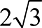

Poems that Solve Puzzles
The History and Science of Algorithms
Chris Bleakley

Chris Bleakley
Great Clarendon Street, Oxford, OX2 6DP, United Kingdom
Oxford University Press is a department of the University of Oxford. It furthers the University’s objective of excellence in research, scholarship, and education by publishing worldwide. Oxford is a registered trade mark of Oxford University Press in the UK and in certain other countries
© Chris Bleakley 2020
The moral rights of the author have been asserted
First Edition published in 2020
Impression: 1
All rights reserved. No part of this publication may be reproduced, stored in a retrieval system, or transmitted, in any form or by any means, without the prior permission in writing of Oxford University Press, or as expressly permitted by law, by licence or under terms agreed with the appropriate reprographics rights organization. Enquiries concerning reproduction outside the scope of the above should be sent to the Rights Department, Oxford University Press, at the address above
You must not circulate this work in any other form and you must impose this same condition on any acquirer
Published in the United States of America by Oxford University Press
198 Madison Avenue, New York, NY 10016, United States of America
British Library Cataloguing in Publication Data
Data available
Library of Congress Control Number: 2020933199
ISBN 978–0–19–885373–2
ebook ISBN 978–0–19–259540–9
Printed and bound by
CPI Group (UK) Ltd, Croydon, CR0 4YY
Links to third party websites are provided by Oxford in good faith and for information only. Oxford disclaims any responsibility for the materials contained in any third party website referenced in this work.
For Eileen – thank you
algorithm, noun :
A process or set of rules to be followed in calculations or other problem-solving operations, especially by a computer.
The Arabic source, al-K wārizmī ‘the man of K wārizm’ (now Khiva), was a name given to the ninth-century mathematician Abū Ja’far Muhammad ibn Mūsa, author of widely translated works on algebra and arithmetic.
Oxford Dictionary of English , 2010
This book is for people that know algorithms are important, but have no idea what they are.
The inspiration for the book came to me while working as Director of Outreach for UCD’s School of Computer Science. Over the course of hundreds of discussions with parents and secondary school students, I realized that most people are aware of algorithms, thanks to extensive media coverage of Google, Facebook, and Cambridge Analytica. However, few know what algorithms are, how they work, or where they came from. This book answers those questions.
The book is written for the general reader. No previous knowledge of algorithms or computers is needed. However, even those with a degree in computing will, I think, find the stories herein surprising, entertaining, and enlightening. Readers with a firm grasp of what an algorithm is might like to skip the introduction. My aim is that readers enjoy the book and learn something new along the way.
My apologies to the great many people who were involved in the events described herein, but who are not mentioned by name. Almost every innovation is the product of a team working together, building on the discoveries of their predecessors. To make the book readable as a story, I tend to focus on a small number of key individuals. For more detail, I refer the interested reader to the papers cited in the bibliography.
In places, I favour a good story over mind-numbing completeness. If your favourite algorithm is missing, let me know and I might slip it into a future edition. When describing what an algorithm does, I use the present tense, even for old algorithms. I use plural pronouns in place of gender-specific singular pronouns. All dollar amounts are US dollars.
Many thanks to those that generously gave permission to use of their photographs and quotations. Many thanks also to my assistants in this endeavour: my first editor, Eoin Bleakley; my mentor, Michael Sheridan (author); my wonderful agent, Isabel Atherton; my bibliography wrangler, Conor Bleakley; my ever-patient assistant editor, Katherine Ward; everyone at Oxford University Press; my reviewers, Guénolé Silvestre and Pádraig Cunningham; and, last, but certainly not least, my parents and my wife. Without their help, this book would not have been possible.
Read on and enjoy!
Chris
Chris Bleakley has thirty-five years of experience in algorithm design. He has taught and written on the subject for the last sixteen of those years.
As a school kid, Chris taught himself how to program on a home computer. Within two years, he was selling his own computer programs by mail order to customers throughout the UK.Chris graduated with a BSc (Hons) degree in Computer Science from Queen’s University, Belfast, and a PhD degree in Electronic Engineering from Dublin City University. After college, he was employed as a software consultant by Accenture and, later, as a senior researcher by Broadcom Éireann Research. Thereafter, he was appointed Vice President of Engineering at Massana, a leading-edge start-up company developing integrated circuits and software for data communications.
Today, Chris is an Associate Professor and Head of the School of Computer Science at University College Dublin (UCD), Ireland. He leads a research group focused on inventing novel algorithms for analysing real-world sensor data. His work has been published in leading peer-reviewed journals and presented at major international conferences.
Chris lives in Dublin with his wife and two children.
‘One for you. One for me. One for you. One for me.’ You are in the school yard. The sun is shining. You are sharing a packet of sweets with your best friend. ‘One for you. One for me.’ What you didn’t realize back then was that sharing your sweets in this way was an enactment of an algorithm.
'一个给你。一个给我。一个给你。一个给我'。你在学校的院子里。阳光明媚。你正与你最好的朋友分享一包糖果。'一个给你。一包给我'。你当时没有意识到的是，以这种方式分享你的糖果是一种算法的颁布。
An algorithm is a series of steps that can be performed to solve an information problem. On that sunny day, you used an algorithm to share your sweets fairly. The input to the algorithm was the number of sweets in the packet. The output was the number of sweets that you and your friend each received. If the total number of sweets in the packet happened to be even, then both of you received the same number of sweets. If the total was odd, your friend ended up with one sweet more than you.
算法是为解决一个信息问题而采取的一系列步骤。在那个阳光明媚的日子里，你用一个算法来公平地分享你的糖果。该算法的输入是数据包中糖果的数量。输出是你和你的朋友各自收到的糖果数量。如果糖果包中的糖果总数刚好是偶数，那么你们两个人收到的糖果数量相同。如果总数是奇数，你的朋友最终比你多得到一个糖果。
An algorithm is like a recipe. It is a list of simple steps that, if followed, transforms a set of inputs into a desired output. The difference is that an algorithm processes information, whereas a recipe prepares food. Typically, an algorithm operates on physical quantities that represent information.
一个算法就像一个食谱。它是一个简单的步骤列表，如果遵循它，就可以将一组输入转化为所需的输出。不同的是，算法是处理信息的，而食谱是准备食物的。通常情况下，算法对代表信息的物理量进行操作。
Often, there are alternative algorithms for solving a given problem. You could have shared your sweets by counting them, dividing the total by two in your head, and handing over the correct number of sweets. The outcome would have been the same, but the algorithm—the means of obtaining the output—would have been different.
通常情况下，解决一个特定的问题有其他的算法。你可以通过数糖果，在脑子里把总数除以2，然后交出正确数量的糖果来分享你的糖果。结果是一样的，但算法--获得输出的手段--会有所不同。
An algorithm is written down as a list of instructions. Mostly, these instructions are carried out in sequence, one after another. Occasionally, the next instruction to be performed is not the next sequential step but an instruction elsewhere in the list. For example, a step may require the person performing the algorithm to go back to an earlier step and carry on from there. Skipping backwards like this allows repetition of groups of steps—a powerful feature in many algorithms. The steps, ‘One for you. One for me.’ were repeated in the sweet sharing algorithm. The act of repeating steps is known as iteration .
一个算法被写成了一个指令的列表。大多数情况下，这些指令是依次执行的，一条接一条。偶尔，要执行的下一条指令不是下一个顺序的步骤，而是列表中其他地方的指令。例如，一个步骤可能需要执行该算法的人回到先前的步骤，并从那里继续进行。像这样的向后跳转允许重复步骤组--这是许多算法中的一个强大功能。步骤，'一个给你。一个给我。"在甜蜜分享算法中被重复。重复步骤的行为被称为迭代。
If the number of sweets in the packet was even, the following iterative algorithm would have sufficed:
如果包里的糖果数量是偶数，下面的迭代算法就够了。
Repeat the following steps:
重复以下步骤。
Give one sweet to your friend.
给你的朋友一个甜头。
Give one sweet to yourself.
给自己一个甜头。
Stop repeating when the packet is empty.
当数据包为空时停止重复。
In the exposition of an algorithm such as this, steps are usually written down line-by-line for clarity. Indentation normally groups inter-related steps.
在这样一个算法的论述中，为了清晰起见，通常逐行写下步骤。缩进通常将相互关联的步骤分组。
If the number of sweets in the packet could be even or odd, the algorithm becomes a little more complicated. A decision-making step must be included. Most algorithms contain decision-making steps. A decision-making step requires the operator performing the algorithm to choose between two possible courses of action. Which action is carried out depends on a condition . A condition is a statement that is either true or false. The most common decision-making construct—‘if-then-else’—combines a condition and two possible actions. ‘If’ the condition is true, ‘then’ the immediately following action (or actions) is performed. ‘If’ the condition is false, the step (or steps) after the ‘else’ are performed.
如果包里的糖果数量可能是偶数或奇数，算法就会变得更复杂一些。必须包括一个决策步骤。大多数算法都包含决策步骤。决策步骤要求执行该算法的操作者在两种可能的行动方案中做出选择。执行哪种行动取决于一个条件。一个条件是一个要么是真要么是假的语句。最常见的决策结构--'if-then-else'--将一个条件和两个可能的行动结合起来。如果 "条件为真"，"那么 "紧接着的行动（或行动）将被执行。如果 "条件是假的，则执行 "else "之后的步骤（或多个步骤）。
To allow for an odd number of sweets, the following decision-making steps must be incorporated in the algorithm:
为了允许有奇数的糖果，必须在算法中纳入以下决策步骤。
If this is the first sweet or you just received a sweet,
如果这是第一颗糖，或者你刚刚收到一颗糖。
then give this sweet to your friend,
然后把这份甜蜜送给你的朋友。
else give this sweet to yourself.
否则就把这种甜蜜送给自己。
The condition here is compound , meaning that it consists of two (or more) simple conditions. The simple conditions are ‘this is the first sweet’ together with ‘you just received a sweet’. The two simple conditions are conjoined by an ‘or’ operation. The compound condition is true if either one of the simple conditions is true. In the case that the compound condition is true, the step ‘give this sweet to your friend’ is carried out. Otherwise, the step ‘give this sweet to yourself’ is performed.
这里的条件是复合的，意味着它由两个（或更多）简单条件组成。简单条件是 "这是第一个甜食 "和 "你刚收到一个甜食"。这两个简单条件由一个 "或 "操作连接起来。如果其中一个简单条件为真，则复合条件为真。在复合条件为真的情况下，"把这个糖给你的朋友 "的步骤被执行。否则，将执行 "把这块糖给你自己 "的步骤。
The complete algorithm is then:
那么，完整的算法就是。
Take a packet of sweets as input.
以一包糖果作为输入。
Repeat the following steps:
重复以下步骤。
Take a sweet out of the packet.
从包装中取出一颗糖。
If this is the first sweet or you just received a sweet,
如果这是第一颗糖，或者你刚刚收到一颗糖。
then give this sweet to your friend,
然后把这份甜蜜送给你的朋友。
else give this sweet to yourself.
否则就把这种甜蜜送给自己。
Stop repeating when the packet is empty.
当数据包为空时停止重复。
Put the empty packet in the bin.
把空包放进垃圾桶。
The sweets are now shared fairly.
现在的糖果是公平分享的。
Like all good algorithms, this one is neat and achieves its objective in an efficient manner.
像所有好的算法一样，这个算法是整洁的，并以有效的方式实现其目标。
Information problems crop up every day. Imagine a trainee librarian on their first day at work. One thousand brand new books have just been delivered and are lying in boxes on the floor. The boss wants the books to be put on the shelves in alphabetical order by author name, as soon as possible. This is an information problem and there are algorithms for solving it.
信息问题每天都在发生。想象一下，一个见习图书管理员第一天上班的情景。一千本崭新的书刚刚送到，躺在地上的箱子里。老板希望这些书能尽快按作者姓名的字母顺序放在书架上。这是一个信息问题，有解决这个问题的算法。
Most people would intuitively use an algorithm called Insertion Sort (Figure I.1 ). Insertion Sort operates in the following way:
大多数人都会直观地使用一种叫做插入式排序的算法（图I.1）。插入式排序的操作方式如下。

Figure I.1 Insertion Sort in action.
图I.1运行中的插入式排序。
Take a pile of unsorted books as input.
以一堆没有分类的书作为输入。
Repeat the following steps:
重复以下步骤。
Pick up a book.
拿起一本书。
Read the author’s name.
阅读作者的名字。
Scan across the shelf until you find where the book should be inserted.
扫描整个书架，直到你找到书应该插在哪里。
Shift all the books after that point over by one.
将这一点之后的所有书籍逐一转移过来。
Insert the new book.
插入新书。
Stop repeating when there are no books left on the floor.
当地板上没有书的时候就不要再重复了。
The books are now sorted.
书籍现在已经分类了。
At any moment in time, the books on the floor are unsorted. One by one, the books are transferred to the shelf. Every book is placed on the shelf in alphabetical order. As a result, the books on the shelf are always in order.
在任何时候，地上的书都是没有分类的。书籍一个接一个地被转移到书架上。每本书都是按照字母顺序放在书架上的。因此，书架上的书总是有序的。
Insertion Sort is easy to understand and works but is slow. It is slow because, for every book taken from the floor, the librarian has to scan past or shift every book already on the shelf. At the start, there are very few books on the shelf, so scanning and shifting is fast. At the end, our librarian has almost 1,000 books on the shelf. On average, putting a book in the right place requires 500 operations , where an operation is an author name comparison or a book shift. Thus, sorting all of the books takes 500,000 (1,000 × 500) operations, on average. Let’s say that a single operation takes one second. That being the case, sorting the books using Insertion Sort will take around seventeen working days. The boss isn’t going to be happy.
插入式分类法很容易理解，也很有效，但速度很慢。它之所以慢是因为，每从地板上取下一本书，图书管理员就必须扫描过去或转移已经在书架上的每一本书。在开始时，书架上的书很少，所以扫描和移位的速度很快。到了最后，我们的图书管理员在书架上有将近1000本书。平均来说，把一本书放在正确的地方需要500个操作，其中一个操作是一个作者名字的比较或一个书的转移。因此，对所有的书进行排序平均需要500,000（1,000×500）次操作。比方说，一个操作需要一秒钟。既然如此，使用插入式排序法对书籍进行排序将需要大约17个工作日。老板会不高兴的。
A faster alternative algorithm—Quicksort—was invented by computer scientist Tony Hoare in 1962. Hoare was born in Sri Lanka, to British parents in 1938. He was educated in England and attended Oxford University before entering academia as a lecturer. His method for sorting is a divide-and-conquer algorithm. It is more complicated than Insertion Sort but, as the name suggests, much faster.
一种更快的替代算法--Quicksort--是由计算机科学家Tony Hoare在1962年发明的。胡尔于1938年出生在斯里兰卡，父母是英国人。他在英国接受教育，在进入学术界担任讲师之前就读于牛津大学。他的排序方法是一种分而治之的算法。它比插入式排序更复杂，但顾名思义，速度更快。
Quicksort (Figure I.2 ) splits the pile of books into two. The split is governed by a pivot letter . Books with author names before the pivot letter are put on a new pile to the left of the current pile. Books with author names after the pivot are placed on a pile to the right. The resulting piles are then split using new pivot letters. In doing so, the piles are kept in sequence. The leftmost pile contains the books that come first in the alphabet. The next pile holds the books that come second, and so on. This pile-splitting process is repeated for the largest pile until the biggest stack contains just five books. The piles are then sorted separately using Insertion Sort. Finally, the sorted piles are transferred, in order, to the shelf.
Quicksort（图I.2）将这堆书分成两部分。分割是由一个枢轴字母决定的。作者姓名在支点字母之前的书被放在当前书堆左边的一个新书堆里。作者名字在枢轴之后的书被放在右边的一堆。然后用新的枢轴字母对所产生的书堆进行分割。在这样做的过程中，各书堆的顺序保持不变。最左边的一堆包含在字母表中排在第一位的书。下一堆是第二位的书，以此类推。这个分堆过程对最大的一堆重复进行，直到最大的一堆只包含五本书。然后用插入式分类法对这些书堆分别进行分类。最后，分类后的书堆按顺序转移到书架上。
Figure I.2 Quicksort in action.
图I.2运行中的Quicksort。
For maximum speed, the pivot letters should split the piles into two halves.
为了获得最大的速度，枢轴信应该把桩分成两半。
Let’s say that the original pile contains books from A to Z. A good choice for the first pivot would likely be M. This would give two new piles: A–L and M–Z (Figure I.2 ). If the A–L pile is larger, it will be split next. A good pivot for A–L might be F. After this split, there will be three piles: A–E, F–L, and M–Z. Next, M–Z will be split and so on. For twenty books, the final piles might be: A–C, D–E, F–L, M–R, and S–Z. These piles are ordered separately using Insertion Sort and the books transferred pile-after-pile onto the shelf.
比方说，原来的书堆包含从A到Z的书。A-L和M-Z（图I.2）。如果A-L这堆书比较大，那么它将被拆开。A-L的一个好支点可能是F。A-E，F-L，和M-Z。接下来，M-Z将被分割，以此类推。对于20本书来说，最后的一堆可能是。A-C，D-E，F-L，M-R，和S-Z。这些书堆用插入式分类法分别排序，然后把书一摞一摞地转移到书架上。
The complete Quicksort algorithm can be written down as follows:
完整的Quicksort算法可以写成如下。
Take a pile of unsorted books as input.
以一堆没有分类的书作为输入。
Repeat the following steps:
重复以下步骤。
Select the largest pile.
选择最大的那一堆。
Clear space for piles on either side.
为两边的堆积物腾出空间。
Choose a pivot letter.
选择一个支点字母。
Repeat the following steps:
重复以下步骤。
Take a book from the selected pile.
从选定的书堆中取出一本书。
If the author name is before the pivot letter,
如果作者的名字在枢纽字母之前。
then put the book on the pile to the left,
然后把书放在左边的书堆里。
else put the book on the pile to the right.
否则就把书放在右边的书堆里。
Stop repeating when the selected pile is empty.
当所选堆积物为空时，停止重复操作。
Stop repeating when the largest pile has five books or less.
当最大的一堆书有五本或更少时，就停止重复。
Sort the piles separately using Insertion Sort.
用插入式排序法对这些堆积物分别进行排序。
Transfer the piles, in order, to the shelf.
将这些堆积物按顺序转移到架子上。
The books are now sorted.
书籍现在已经分类了。
Quicksort uses two repeating sequences of steps, or loops , one inside the other. The outer repeating group deals with all of the piles. The inner group processes a single pile.
Quicksort使用两个重复的步骤序列，或循环，一个在另一个里面。外侧的重复组处理所有的堆。内层组则处理单一的堆。
Quicksort is much faster than Insertion Sort for large numbers of books. The trick is that splitting a pile is fast. Each book need only be compared with the pivot letter. Nothing needs to be done to the other books—no author name comparisons, no book shifts. Applying Insertion Sort at the end of Quicksort is efficient since the piles are small. Quicksort only requires about 10,000 operations to sort 1,000 books. The exact number of operations depends on how accurately the pivots halve the piles. At one second per operation, the job takes less than three hours—a big improvement on seventeen working days. The boss will be pleased.
对于大量的书，Quicksort比Insertion Sort快得多。诀窍在于，分堆的速度很快。每本书只需要与枢纽字母进行比较。对其他的书不需要做什么--不需要比较作者的名字，不需要进行书的转移。在Quicksort的最后应用插入排序是有效的，因为书堆很小。Quicksort只需要大约10,000次操作来对1,000本书进行排序。确切的操作数取决于枢轴如何准确地将书堆减半。在每次操作一秒钟的情况下，这项工作只需要不到三个小时--这是对十七个工作日的巨大改进。老板会很高兴。
Clearly, an algorithm’s speed is important. Algorithms are rated according to their computational complexity . Computational complexity relates the number of steps required for execution of an algorithm to the number of inputs. The computational complexity of Quicksort is significantly lower than that of Insertion Sort.
显然，一个算法的速度是很重要的。算法是根据其计算复杂性来评定的。计算复杂度与执行一个算法所需的步骤数和输入数有关。Quicksort的计算复杂度明显低于Insertion Sort。
Quicksort is called a divide-and-conquer algorithm because it splits the original large problem into smaller problems, solves these smaller problems separately, and then assembles the partial solutions to form the complete solution. As we will see, divide-and-conquer is a powerful strategy in algorithm design.
Quicksort被称为分而治之的算法，因为它将原来的大问题分割成小问题，分别解决这些小问题，然后将部分解决方案集合起来，形成完整的解决方案。正如我们将看到的，分而治之是算法设计中的一个强大策略。
Many algorithms have been invented for sorting, including Merge Sort, Heapsort, Introsort, Timsort, Cubesort, Shell Sort, Bubble Sort, Binary Tree Sort, Cycle Sort, Library Sort, Patience Sorting, Smooth- sort, Strand Sort, Tournament Sort, Cocktail Sort, Comb Sort, Gnome Sort, UnShuffle Sort, Block Sort, and Odd-Even Sort. All of these algorithms sort data, but each is unique. Some are faster than others. Some need more storage space than others. A few require that the inputs are prepared in a special way. A handful have simply been superseded.
已经发明了许多排序算法，包括合并排序、Heapsort、Introsort、Timsort、Cubesort、Shell Sort、Bubble Sort、Binary Tree Sort、Cycle Sort、Library Sort、Patience Sorting、Smooth- sort、Strand Sort、Tournament Sort、Cocktail Sort、Comb Sort、Gnome Sort、UnShuffle Sort、Block Sort和Odd-Even Sort。所有这些算法都是对数据进行排序，但每个算法都是独一无二的。有些比其他的快。有些需要比其他更多的存储空间。有几个需要以特殊方式准备输入。少数算法只是被取代了。
Nowadays, algorithms are inextricably linked with computers. By definition, a computer is a machine that performs algorithms.
如今，算法与计算机有着密不可分的联系。根据定义，计算机是一台执行算法的机器。
As discussed, an algorithm is an abstract method for solving a problem. An algorithm can be performed by a human or a computer. Prior to execution on a computer, an algorithm must be encoded as a list of instructions that the computer can carry out. A list of computer instructions is called a program . The great advantage of a computer is that it can automatically execute large numbers of instructions one-after-another at high speed. Surprisingly, a computer need not support a great variety of instructions. A few basic instruction types will suffice. All that is needed are instructions for data storage and retrieval, arithmetic, logic, repetition, and decision-making. Algorithms can be broken down into simple instructions such as these and executed by a computer.
如前所述，算法是解决一个问题的抽象方法。算法可以由人或计算机来执行。在计算机上执行之前，一个算法必须被编码为计算机可以执行的指令列表。一个计算机指令的列表被称为程序。计算机的巨大优势在于它能以高速自动执行大量的指令，一个接一个。令人惊讶的是，计算机不需要支持大量的指令种类。一些基本的指令类型就足够了。所需要的只是用于数据存储和检索、算术、逻辑、重复和决策的指令。算法可以被分解成诸如此类的简单指令并由计算机执行。
The list of instructions to be performed and the data to be operated on are referred to as the computer software . In a modern computer, software is encoded as electronic voltage levels on microscopic wires. The computer hardware —the physical machine—executes the program one instruction at a time. Program execution causes the input data to be processed and leads to creation of the output data.
要执行的指令和要操作的数据的清单被称为计算机软件。在现代计算机中，软件被编码为微观导线上的电子电压水平。计算机硬件--物理机器--每次执行一条指令。程序的执行导致输入数据被处理，并导致输出数据的产生。
There are two reasons for the phenomenal success of the computer. First, computers can perform algorithms much more quickly than humans. A computer can perform billions of operations per second, whereas a human might do ten. Second, computer hardware is general-purpose , meaning that it can execute any algorithm. Just change the software and a computer will perform a completely different task. This gives the machine great flexibility. A computer can perform a wide range of duties—everything from word processing to video games. The key to this flexibility is that the program dictates what the general-purpose hardware does. Without the software, the hardware is idle. It is the program that animates the hardware.
计算机的惊人成功有两个原因。首先，计算机可以比人类更快速地执行算法。一台计算机每秒可以执行数十亿次操作，而人类可能只做十次。第二，计算机硬件是通用的，意味着它可以执行任何算法。只要改变软件，计算机就会执行一个完全不同的任务。这给了机器极大的灵活性。一台计算机可以执行广泛的职责--从文字处理到视频游戏，无所不包。这种灵活性的关键在于，程序决定了通用硬件的作用。没有软件，硬件就是闲置的。正是程序使硬件产生了活力。
The algorithm is the abstract description of what the computer must do. Thus, in solving a problem, the algorithm is paramount. The algorithm is the blueprint for what must be done. The program is the precise, machine-executable formulation of the algorithm. To solve an information problem, a suitable algorithm must first be found. Only then can the program be typed into a computer.
算法是对计算机必须做什么的抽象描述。因此，在解决一个问题时，算法是最重要的。算法是必须做的事情的蓝图。程序是算法的精确、可由机器执行的表述。要解决一个信息问题，首先必须找到一个合适的算法。只有这样才能将程序输入计算机。
The invention of the computer in the mid-twentieth century gave rise to an explosion in the number, variety, and complexity of algorithms. Problems that were once thought impossible to solve are now routinely dispatched by cheap computers. New programs are released on a daily basis, extending the range of tasks that computers can undertake.
二十世纪中期计算机的发明引起了算法的数量、种类和复杂性的爆炸。曾经被认为不可能解决的问题，现在经常被廉价的计算机派上用场。每天都有新的程序发布，扩大了计算机可以承担的任务范围。
Algorithms are embedded in the computers on our desktops, in our cars, in our television sets, in our washing machines, in our smartphones, on our wrists, and, soon, in our bodies. We engage a plethora of algorithms to communicate with our friends, to accelerate our work, to play games, and to find our soulmates. Algorithms have undoubtedly made our lives easier. They have also provided humankind with unprecedented access to information. From astronomy to particle physics, algorithms have enhanced our comprehension of the universe. Recently, a handful of cutting-edge algorithms have displayed superhuman intelligence.
算法被嵌入到我们桌面上的电脑中，在我们的汽车中，在我们的电视机中，在我们的洗衣机中，在我们的智能手机中，在我们的手腕上，而且，很快，在我们的身体中。我们用大量的算法与朋友交流，加快工作进度，玩游戏，寻找我们的灵魂伴侣。算法无疑使我们的生活更容易。它们也为人类提供了前所未有的信息获取途径。从天文学到粒子物理学，算法已经增强了我们对宇宙的理解。最近，少数尖端的算法显示出超人的智慧。
All of these algorithms are ingenious and elegant creations of the human mind. This book tells the story of how algorithms emerged from the obscure writings of ancient scholars to become one of the driving forces of the modern computerized world.
所有这些算法都是人类思维的巧妙而优雅的创造。本书讲述了算法如何从古代学者晦涩的著作中脱颖而出，成为现代计算机化世界的驱动力之一。
Go up on to the wall of Uruk, Ur-shanabi, and walk around,
上到乌鲁克的城墙上，乌尔沙纳比，走一圈。
Inspect the foundation platform and scrutinise the brickwork!
检查地基平台，仔细检查砖块!
Testify that its bricks are baked bricks,
证明它的砖是烤制的砖。
And that the Seven Counsellors must have laid its foundations!
而且，七位参赞一定是奠定了它的基础!
One square mile is city, one square mile is orchards,
一平方英里是城市，一平方英里是果园。
one square mile is clay pits,
一平方英里是粘土坑。
as well as the open ground of Ishtar’s temple.
以及伊什塔尔神庙的空地。
Three square miles and the open ground comprise Uruk.
三平方英里和空地组成了乌鲁克。
Unknown author, translated by Stephanie Dalley
The Epic of Gilgamesh , circa 2,000 bce 2
作者不详，由Stephanie Dalley翻译
《吉尔伽美什史诗》，约公元前2000年 2
The desert has all but reclaimed Uruk. Its great buildings are almost entirely buried beneath accretions of sand, their timbers disintegrated. Here and there, clay brickwork is exposed, stripped bare by the wind or archaeologists. The abandoned ruins seem irrelevant, forgotten, futile. There is no indication that seven thousand years ago, this land was the most important place on Earth. Uruk, in the land of Sumer, was one of the first cities. It was here, in Sumer, that civilization was born.
沙漠已经完全吞噬了乌鲁克。它的伟大建筑几乎完全被埋在沙子的堆积物下面，它们的木头已经瓦解。在这里和那里，粘土砖块被暴露出来，被风或考古学家剥光了。这些被遗弃的废墟似乎无关紧要，被遗忘，徒劳无益。没有迹象表明，七千年前，这片土地是地球上最重要的地方。苏美尔土地上的乌鲁克，是最早的城市之一。正是在这里，在苏美尔，文明才得以诞生。
Sumer lies in southern Mesopotamia (Figure 1.1 ). The region is bounded by the Tigris and Euphrates rivers, which flow from the mountains of Turkey in the north to the Persian Gulf in the south. Today, the region straddles the Iran–Iraq border. The climate is hot and dry, and the land inhospitable, save for the regular flooding of the river plains. Aided by irrigation, early agriculture blossomed in the ‘land between the rivers’. The resulting surplus of food allowed civilization to take hold and flourish.
苏美尔位于美索不达米亚南部（图1.1）。该地区以底格里斯河和幼发拉底河为界，这两条河从北部的土耳其山区流向南部的波斯湾。今天，该地区横跨伊朗和伊拉克边境。气候炎热而干燥，土地荒凉，只有河边平原定期泛滥。在灌溉的帮助下，早期农业在 "河流之间的土地 "开花结果。由此产生的粮食盈余使文明得以确立和繁荣。
Figure 1.1 Map of ancient Mesopotamia and the later port of Alexandria.
图1.1古代美索不达米亚和后来的亚历山大港的地图。
The kings of Sumer built great cities—Eridu, Uruk, Kish, and Ur. At its apex, Uruk was home to sixty thousand people. All of life was there—family and friends, trade and religion, politics and war. We know this because writing was invented in Sumer around 5,000 years ago.
苏美尔的国王们建造了伟大的城市--埃里杜、乌鲁克、基什和乌尔。乌鲁克在其巅峰时期有六万人居住。所有的生活都在这里--家庭和朋友，贸易和宗教，政治和战争。我们知道这一点是因为苏美尔在5000年前就发明了文字。
It seems that writing developed from simple marks impressed on wet clay tokens. Originally, these tokens were used for record keeping and exchange. A token might equate to a quantity of gain or a headcount of livestock. In time, the Sumerians began to inscribe more complex patterns on larger pieces of clay. Over the course of centuries, simple pictograms evolved into a fully formed writing system. That system is now referred to as cuneiform script. The name derives from the script’s distinctive ‘wedge shaped’ markings, formed by impressing a reed stylus into wet clay. Symbols consisted of geometric arrangements of wedges. These inscriptions were preserved by drying the wet tablets in the sun. Viewed today, the tablets are aesthetically pleasing—the wedges thin and elegant, the symbols regular, the text neatly organized into rows and columns.
看来，文字是由湿粘土代币上的简单印记发展而来的。最初，这些令牌被用来记录和交换。一个代币可能相当于一个收益的数量或牲畜的头数。随着时间的推移，苏美尔人开始在较大的粘土上刻下更复杂的图案。在几个世纪的时间里，简单的象形文字演变成了一个完整的书写系统。这个系统现在被称为楔形文字。这个名字来自于这种文字独特的 "楔形 "标记，是用芦苇手写笔在湿粘土上打下的。符号由楔形的几何排列组成。这些铭文是通过将湿的石板在阳光下晒干而保存下来的。今天看来，这些碑文很有美感--楔子薄而优雅，符号规则，文字整齐地排列成行和列。
The invention of writing must have transformed these communities. The tablets allowed communication over space and time. Letters could be sent. Deals could be recorded for future reference. Writing facilitated the smooth operation and expansion of civil society.
文字的发明肯定改变了这些社区。平板电脑允许在空间和时间上进行交流。信件可以被发送。交易可以被记录下来供将来参考。写作促进了公民社会的顺利运作和扩展。
For a millennium, cuneiform script recorded the Sumerian language. In the twenty-fourth century bce , Sumer was invaded by the armies of the Akkadian Empire. The conquerors adapted the Sumerian writing methods to the needs of their own language. For a period, both languages were used on tablets. Gradually, as political power shifted, Akkadian became the exclusive language of the tablets.
一千年来，楔形文字记录了苏美尔语言。在公元前24世纪，苏美尔被阿卡德帝国的军队入侵。征服者对苏美尔的书写方法进行了调整，以适应他们自己语言的需要。在一段时期内，两种语言都在石板上使用。渐渐地，随着政治权力的转移，阿卡德语成为石板的专用语言。
The Akkadian Empire survived for three centuries. Thereafter, the occupied city states splintered, later coalescing into Assyria in the north and Babylonia in south. In the eighteenth century bce , Hammurabi, King of Babylon, reunited the cities of Mesopotamia. The city of Babylon became the undisputed centre of Mesopotamian culture. Under the King’s direction, the city expanded to include impressive monuments and fine temples. Babylonia became a regional superpower. The Akkadian language, and its cuneiform script, became the lingua franca of international diplomacy throughout the Middle East.
阿卡德帝国存活了三个世纪。此后，被占领的城邦四分五裂，后来凝聚成北部的亚述和南部的巴比伦。在公元前18世纪，巴比伦国王汉谟拉比重新统一了美索不达米亚的城市。巴比伦城成为美索不达米亚文化无可争议的中心。在国王的指导下，该城市扩大到包括令人印象深刻的纪念碑和精美的寺庙。巴比伦成为一个地区性的超级大国。阿卡德语及其楔形文字，成为整个中东地区国际外交的通用语言。
After more than one millennium of dominance, Babylon fell, almost without resistance, to Cyrus the Great, King of Persia. With its capital in modern Iran, the Persian Empire engulfed the Middle East. Cyrus’s Empire stretched from the Bosporus strait to central Pakistan and from the Black Sea to the Persian Gulf. Persian cuneiform script came to dominate administration. Similar at first glance to the Akkadian tablets, these new tablets used the Persian language and an entirely different set of symbols. Use of the older Akkadian script dwindled. Four centuries after the fall of Babylon, Akkadian fell into disuse. Soon, all understanding of the archaic Sumerian and Akkadian cuneiform symbols was lost.
经过一千年多的统治，巴比伦几乎毫无抵抗力地被波斯国王居鲁士大帝攻陷。以现代伊朗为首都的波斯帝国吞噬了中东地区。居鲁士的帝国从博斯普鲁斯海峡延伸到巴基斯坦中部，从黑海延伸到波斯湾。波斯楔形文字开始主导行政管理。乍一看与阿卡德文字相似，但这些新文字使用的是波斯语和一套完全不同的符号。旧的阿卡德文字的使用逐渐减少。巴比伦沦陷四个世纪后，阿卡德语就被废弃了。很快，对古老的苏美尔语和阿卡德语楔形符号的所有理解都已丧失。
The ancient cities of Mesopotamia were gradually abandoned. Beneath the ruins, thousands of tablets—records of a dead civilization lay buried. Two millennia passed.
美索不达米亚的古代城市逐渐被遗弃。在废墟之下，埋藏着数以千计的石板--一个死亡文明的记录。两千年过去了。
European archaeologists began to investigate the ruins of Mesopotamia in the nineteenth century. Their excavations probed the ancient sites. The artefacts they unearthed were shipped back to Europe for inspection. Amongst their haul lay collections of the inscribed clay tablets. The tablets bore writing of some sort, but the symbols were now incomprehensible.
欧洲考古学家在十九世纪开始调查美索不达米亚的废墟。他们的挖掘工作对古代遗址进行了探测。他们出土的手工艺品被运回欧洲进行检查。在他们的收获中，有一批刻有文字的泥板。这些石板上有某种文字，但现在无法理解这些符号。
Assyriologists took to the daunting task of deciphering the un- known inscriptions. Certain oft repeated symbols could be identified and decoded. The names of kings and provinces became clear. Otherwise, the texts remained impenetrable.
亚述学家们开始了破译这些未知铭文的艰巨任务。某些经常重复的符号可以被识别和破译。国王和省份的名称变得清晰了。除此以外，这些文字仍然是无法解读的。
The turning point for translators was the discovery of the Behistun (Bīsitūn) Inscription. The Inscription consists of text accompanied by a relief depicting King Darius meting out punishment to handcuffed prisoners. Judging by their garb, these captives were from across the Persian Empire. The relief is carved high on a limestone cliff face overlooking an ancient roadway in the foothills of the Zagros mountains in western Iran. The Inscription is an impressive fifteen metres tall and twenty five metres wide.
译者的转折点是发现了贝希斯敦（Bīsitūn）铭文。该铭文由文字和浮雕组成，描绘了大流士国王对戴着手铐的囚犯进行惩罚的情景。从他们的衣着来看，这些俘虏来自波斯帝国各地。这幅浮雕高高地刻在一个石灰岩崖面上，俯瞰着伊朗西部扎格罗斯山麓的一条古道。该碑文高15米，宽25米，令人印象深刻。
The significance of the Inscription only became apparent after Sir Henry Rawlinson—a British East India Company officer—visited the site. Rawlinson scaled the cliff and made a copy of the cuneiform text. In doing so, he spotted two other inscriptions on the cliff. Unfortunately, these were inaccessible. Undaunted, Rawlinson returned in 1844 and, with the aid of a local lad, secured impressions of the other texts.
在亨利-罗林森爵士（Sir Henry Rawlinson）--英国东印度公司的官员--访问了该遗址之后，铭文的重要性才得以显现。罗林森爬上悬崖，复制了一份楔形文字。在此过程中，他发现了悬崖上的另外两个铭文。不幸的是，这些碑文无法进入。罗林森毫不畏惧，于1844年再次来到这里，在当地一个小伙子的帮助下，获得了其他文字的印象。
It transpired that the three texts were in different languages—Old Persian, Elamite, and Babylonian. Crucially, all three recounted the same propaganda—a history of the King’s claims to power and his merciless treatment of rebels. Some understanding of Old Persian had persisted down through the centuries. Rawlinson compiled and published the first complete translation of the Old Persian text two years later.
据了解，这三份文本使用的是不同的语言--旧波斯语、埃兰语和巴比伦语。最重要的是，这三种文字都叙述了同样的宣传内容--国王对权力的要求和他对叛乱者的无情对待的历史。几个世纪以来，人们对古波斯语的理解一直存在。罗林森在两年后编撰并出版了第一部完整的旧波斯语文本翻译。
Taking the Old Persian translation as a reference, Rawlinson and a loose cadre of enthusiasts succeeded in decoding the Babylonian text. The breakthrough was the key to unlocking the meaning of the Akkadian and Sumerian tablets.
以旧波斯语译本为参考，罗林森和一群松散的爱好者成功地解读了巴比伦文本。这一突破是解开阿卡德和苏美尔石板含义的关键。
The tablets in the museums of Baghdad, London, and Berlin were revisited. Symbol by symbol, tablet by tablet, the messages of the Sumerians, Akkadians, and Babylonians were decoded. A long-lost civilization was revealed.
巴格达、伦敦和柏林的博物馆中的石板被重新审视。一个个符号，一块块石碑，苏美尔人、阿卡德人和巴比伦人的信息被破解了。一个失传已久的文明被揭示出来。
The messages on the earliest tablets were simplistic. They recorded major events, such as the reign of a king or the date of an important battle. Over time, the topics became more complex. Legends were discovered, including the earliest written story: The Epic of Gilgamesh . The day-to-day administration of civil society was revealed—laws, legal contracts, accounts, and tax ledgers. Letters exchanged by kings and queens were found, detailing trade deals, proposals of royal marriage, and threats of war. Personal epistles were uncovered, including love poems and magical curses. Amid the flotsam and jetsam of daily life, scholars stumbled upon the algorithms of ancient Mesopotamia.
最早的石板上的信息是简单的。它们记录了重大事件，如国王的统治或一场重要战斗的日期。随着时间的推移，这些主题变得更加复杂。传说被发现，包括最早的书面故事。吉尔伽美什史诗》（The Epic of Gilgamesh）。公民社会的日常管理被揭示出来--法律、法律合同、账目和税务账簿。国王和王后之间的信件被发现，其中详细说明了贸易交易、皇室婚姻的建议和战争的威胁。个人书信也被发现，包括情诗和魔法诅咒。在日常生活的浮华中，学者们偶然发现了古代美索不达米亚的算法。
Many of the extant Mesopotamian algorithms were jotted down by students learning mathematics. The following example dates from the Hammurabi dynasty (1,800 to 1,600 bce ), a time now known as the Old Babylonian period. Dates are approximate; they are inferred from the linguistic style of the text and the symbols employed. This algorithm was pieced together from fragments held in the British and Berlin State Museums. Parts of the original are still missing.
许多现存的美索不达米亚算法是由学习数学的学生记下的。下面的例子可以追溯到汉谟拉比王朝（公元前1800年至1600年），这个时期现在被称为旧巴比伦时期。日期是近似的；它们是根据文本的语言风格和所使用的符号推断出来的。这个算法是由保存在英国和柏林国家博物馆的碎片拼凑起来的。原文的部分内容仍然缺失。
The tablet presents an algorithm for calculating the length and width of an underground water cistern. The presentation is formal and consistent with other Old Babylonian algorithms. The first three lines are a concise description of the problem to be solved. The remainder of the text is an exposition of the algorithm. A worked example is interwoven with the algorithmic steps to aid comprehension.5
该碑文介绍了一种计算地下蓄水池长度和宽度的算法。其表述很正式，与其他旧巴比伦的算法一致。前三行是对要解决的问题的简明描述。文中的其余部分是对该算法的阐述。一个工作实例与算法步骤交织在一起，以帮助人们理解。5
A cistern.
一个蓄水池。
The height is 3.33, and a volume of 27.78 has been excavated.
高度为3.33，已开挖的体积为27.78。
The length exceeds the width by 0.83.
长度比宽度多出0.83。
You should take the reciprocal of the height, 3.33, obtaining 0.3.
你应该取高度的倒数，3.33，得到0.3。
Multiply this by the volume, 27.78, obtaining 8.33.
用这个数字乘以体积，即27.78，得到8.33。
Take half of 0.83 and square it, obtaining 0.17.
取0.83的一半并将其平方，得到0.17。
Add 8.33 and you get 8.51.
加上8.33，就得到8.51。
The square root is 2.92.
平方根是2.92。
Make two copies of this, adding to the one 0.42 and subtracting from the other.
把这个复印两份，一份加上0.42，另一份减去。
You find that 3.33 is the length and 2.5 is the width.
你发现3.33是长度，2.5是宽度。
This is the procedure.
这就是程序。
The question posed is to calculate the length and width of a cistern, presumably of water. The volume of the cistern is stated, as is its height. The required difference between the cistern’s length and width is specified. The actual length and width are to be determined.
所提问题是要计算一个蓄水池的长度和宽度，估计是水。蓄水池的体积和高度都有说明。蓄水池的长度和宽度之间的差值是明确的。实际的长度和宽度将被确定。
The phrase, ‘You should’, indicates that what follows is the method for solving the problem. The result is followed by the declaration, ‘This is the procedure’, which signifies the end of the algorithm.
短语，'你应该'，表明下面是解决问题的方法。结果之后是 "这就是程序 "的声明，表示算法的结束。
The Old Babylonian algorithm is far from simple. It divides the volume by the height to obtain the area of the base of the cistern. Simply taking the square root of this area would give the length and width of a square base. An adjustment must be made to create the desired rectangular base. Since a square has minimum area for a given perimeter, the desired rectangle must have a slightly larger area than the square base. The additional area is calculated as the area of a square with sides equal to half the difference between the desired length and width. The algorithm adds this additional area to the area of the square base. The width of a square with this combined area is calculated. The desired rectangle is formed by stretching this larger square. The lengths of two opposite sides are increased by half of the desired length–width difference. The length of the other two sides is decreased by the same amount. This produces a rectangle with the correct dimensions.
旧巴比伦人的算法远非如此简单。它用体积除以高度，得到蓄水池底部的面积。 简单地取这个面积的平方根就可以得到一个正方形底座的长度和宽度。必须进行调整，以创建所需的矩形底座。由于正方形在给定的周长下具有最小的面积，因此所需的矩形必须具有比正方形底座稍大的面积。额外的面积被计算为边长等于所需长度和宽度之差一半的正方形的面积。该算法将这个额外的面积加到正方形底面的面积上。计算出具有该组合面积的正方形的宽度。所需的矩形是通过拉伸这个较大的正方形形成的。两条相对的边的长度增加所需长宽差的一半。另外两条边的长度以同样的数量减少。这就产生了一个具有正确尺寸的长方形。
Decimal numbers are used the description above. In the original, the Babylonians utilized sexagesimal numbers. A sexagesimal number system possesses sixty unique digits (0–59). In contrast, decimal uses just ten digits (0–9). In both systems, the weight of a digit is determined by its position relative to the fractional (or decimal) point. In decimal, moving right-to-left, each digit is worth ten times the preceding digit. Thus, we have the units, the tens, the hundreds, the thousands, and so on. For example, the decimal number 421 is equal to four hundreds plus two tens plus one unit. In sexagesimal, moving right-to-left from the fractional point, each digit is worth sixty times the preceding one. Conversely, moving left-to-right, each column is worth a sixtieth of the previous one. Thus, sexagesimal 1,3.20, means one sixty plus three units plus twenty sixtieths, equal to
十进制数字是用上面的描述。在最初，巴比伦人利用了六位数。六进制数字系统拥有60个独特的数字（0-59）。相比之下，十进制只使用十个数字（0-9）。在这两个系统中，一个数字的重量是由它相对于小数点（或小数点）的位置决定的。在十进制中，从右向左移动，每个数字的价值是前一个数字的10倍。因此，我们有单位、十位、百位、千位，以此类推。例如，十进制数字421等于4个百位加2个十位加1个单位。在六进制中，从小数点开始从右向左移动，每个数字的价值是前一个数字的60倍。反之，从左到右移动，每一列的价值是前一列的六十分之一。因此，六位数1,3.20，意味着1个60加3个单位加20个六十分之一，等于 or 63.333 decimal. Seemingly, the sole advantage of the Old Babylonian system is that thirds are much easier to represent than in decimal.
To the modern reader, the Babylonian number system seems bizarre. However, we use it every day for measuring time. There are sixty seconds in a minute and sixty minutes in an hour. The time 3:04 am is 184 (3 × 60 + 4 × 1) minutes after midnight.
对于现代读者来说，巴比伦的数字系统似乎很奇怪。然而，我们每天都用它来测量时间。一分钟内有六十秒，一小时内有六十分钟。凌晨3:04的时间是午夜后184（3×60+4×1）分钟。
Babylonian mathematics contains three other oddities. First, the fractional point wasn’t written down. Babylonian scholars had to infer its position based on context. This must have been problematic—consider a price tag with no distinction between dollars and cents! Second, the Babylonians did not have a symbol for zero. Today, we highlight the gap left for zero by drawing a ring around it (0). Third, division was performed by multiplying by the reciprocal of the divisor. In other words, the Babylonians didn’t divide by two, they multiplied by a half. In practice, students referred to precalculated tables of reciprocals and multiplications to speed up calculations.
巴比伦的数学还包含其他三个奇怪之处。首先，小数点没有被写下来。巴比伦的学者们不得不根据上下文推断其位置。这肯定是有问题的--想想看，一个没有美元和美分区分的价格标签!第二，巴比伦人没有零的符号。今天，我们通过在零的周围画一个环来突出它的缺口（0）。第三，除法是通过乘以除数的倒数来进行的。换句话说，巴比伦人不是除以2，而是乘以1/2。 在实践中，学生们参考预先计算好的倒数和乘法表来加快计算速度。
A small round tablet shows the breathtaking extent of Babylonian mathematics. The tablet—YBC 7289—resides in Yale University’s Old Babylonian Collection (Figure 1.2 ). Dating to around 1,800 to 1,600 bce , it depicts a square with two diagonal lines connecting opposing corners. The length of the sides of the square are marked as thirty units. The length of the diagonal is recorded as thirty times the square root of two.
一块小圆碑显示了巴比伦数学令人惊叹的程度。这块石板--YBC 7289--收藏在耶鲁大学的旧巴比伦藏品中（图1.2）。它的年代约为公元前1800年至1600年，描绘了一个有两条对角线连接对角的正方形。正方形的边长被标记为30个单位。对角线的长度被记录为二的平方根的30倍。
Figure 1.2 Yale Babylonian Collection tablet 7289. (YBC 7289, Courtesy of the Yale Babylonian Collection. )
图1.2耶鲁大学巴比伦人收藏的7289号石碑。(YBC 7289，耶鲁大学巴比伦收藏馆提供。)
The values indicate knowledge of the Pythagorean Theorem, which you may recall from school. It states that, in triangles with a right angle, the square (a value multiplied by itself) of the length of the hypotenuse (the longest side) is equal to the sum of the squares of the lengths of the other two sides.
这些数值表明你对毕达哥拉斯定理的了解，你可能还记得学校的知识。它指出，在有直角的三角形中，斜边（最长的一边）长度的平方（数值乘以自身）等于其他两边长度的平方之和。
What is truly remarkable about the tablet is that it was inscribed 1,000 years before the ancient Greek mathematician Pythagoras was born. For mathematicians, the discovery is akin finding an electric light bulb in a Viking camp! It raises fundamental questions about the history of mathematics. Did Pythagoras invent the algorithm, or did he learn of it during his travels? Was the Theorem forgotten and independently reinvented by Pythagoras? What other algorithms did the Mesopotamians invent?
这块石碑真正了不起的地方在于，它是在古希腊数学家毕达哥拉斯出生前1000年刻的。对于数学家来说，这一发现就像在维京人的营地里发现了一个电灯泡！它提出了关于数学史的基本问题。它提出了关于数学史的基本问题。毕达哥拉斯是发明了这个算法，还是在旅行中了解到了这个算法？该定理是否被遗忘并由毕达哥拉斯独立重新发明？美索不达米亚人还发明了哪些算法？
YBC 7289 states that the square root of two is 1.41421296 (in decimal). This is intriguing. We now know that the square root of two is 1.414213562, to nine decimal places. Remarkably, the value on the tablet is accurate to almost seven digits, or 0.0000006. How did the Babylonians calculate the square root of two so precisely?
YBC 7289指出，2的平方根是1.41421296（十进制）。这很耐人寻味。我们现在知道，二的平方根是1.414213562，小数点后九位。值得注意的是，石碑上的数值几乎精确到七位数，即0.0000006。巴比伦人是如何将二的平方根计算得如此精确的？
Computing the square root of two is not trivial. The simplest method is Heron of Alexandria’s approximation algorithm. There is, of course, the slight difficulty that Heron lived 1,500 years (c. 10–70 ce ) after YBE 7289 was inscribed! We must assume that the Babylonians devised the same method.
计算2的平方根并非易事。最简单的方法是亚历山大的赫伦的近似算法。当然，有一个小小的困难，那就是赫伦生活在YBE7289被刻下的1500年之后（约10-70年）！我们必须假设巴比伦人设计了同样的方法。我们必须假设巴比伦人也设计了同样的方法。
Heron’s algorithm reverses the question. Instead of asking ‘What is the square root of two?’, Heron enquires ‘What number multiplied by itself gives two?’ Heron’s algorithm starts with a guess and successively improves it over a number of iterations:
赫伦的算法颠覆了这个问题。赫伦的算法不是问 "2的平方根是多少"，而是问 "什么数字乘以它本身就能得到2？"赫伦的算法从一个猜测开始，在若干次迭代中不断改进。
Make a guess for the square root of two.
猜一猜2的平方根。
Repeatedly generate new guesses as follows:
反复产生新的猜测，如下所示。
Divide two by the current guess.
用二除以当前的猜测。
Add the current guess.
添加当前的猜测。
Divide by two to obtain a new guess.
除以2得到一个新的猜测。
Stop repeating when the two most recent guesses are almost equal.
当最近的两个猜测几乎相等时，就不要再重复了。
The latest guess is an approximation for the square root of two.
最新的猜测是2的平方根的近似值。
Let’s say that the algorithm begins with the extremely poor guess of:
比方说，该算法从极差的猜测开始，即：。
2.
2.
Dividing 2 by 2 gives 1. Adding 2 to this, and dividing by 2 gives:
2除以2得到1。在此基础上加2，再除以2，得到。
1.5.
1.5.
Dividing 2 by 1.5 gives 1.333. Adding 1.5 to this and dividing by 2 again gives:
用2除以1.5得到1.333。在此基础上加1.5，再除以2，就得到了。
1.416666666.
1.416666666.
Repeating once more gives:
再重复一次就可以了。
1.41421568.
1.41421568.
which is close to the true value.
这接近于真实值。
How does the algorithm work? Imagine that you know the true value for the square root of two. If you divide two by this number, the result is exactly the same value—the square root of two.
该算法是如何工作的？想象一下，你知道2的平方根的真实数值。如果你用这个数字除以2，结果是完全相同的数值--2的平方根。
Now, imagine that your guess is greater than the square root of two. When you divide two by this number, you obtain a value less than the square root of two. These two numbers frame the true square root—one is too large, the other is too small. An improved estimate can be obtained by calculating the average of these two numbers (i.e. the sum divided by two). This gives a value midway between the two framing numbers.
现在，想象一下，你的猜测大于2的平方根。当你用这个数字除以2时，你得到一个小于2的平方根的值。这两个数字框住了真正的平方根，一个太大，另一个太小。通过计算这两个数字的平均值（即总和除以2），可以得到一个改进的估计。这就给出了一个介于这两个框架数字之间的数值。
This procedure—division and averaging—can be repeated to further refine the estimate. Over successive iterations, the estimates converge on the true square root.
这个过程--分割和平均--可以重复进行，以进一步完善估计。在连续的迭代中，估计值会收敛于真实的平方根。
It is worth noting that the process also works if the guess is less than the true square root. In this case, the number obtained by means of division is too large. Again, the two values frame the true square root.
值得注意的是，如果猜测的数字小于真正的平方根，这个过程也是有效的。在这种情况下，通过除法得到的数字太大。同样的，这两个值也会框住真正的平方根。
Even today, Heron’s method is used to estimate square roots. An extended version of the algorithm was utilized by Greg Fee in 1996 to confirm enumeration of the square root of two to ten million digits.
即使在今天，赫伦的方法也被用来估计平方根。1996年，格雷格-费利用该算法的一个扩展版本确认了对两到一千万位数的平方根的列举。
Mesopotamian mathematicians went so far as to invoke the use of memory in their algorithms. Their command ‘Keep this number in your head’ is an antecedent of the data storage instructions available in a modern computer.
美索不达米亚的数学家们甚至在他们的算法中援引了记忆的使用。他们的命令 "把这个数字记在你的脑子里 "是现代计算机中可用的数据存储指令的前身。
Curiously, Babylonian algorithms do not seem to have contained explicit decision-making (‘if–then–else’) steps. ‘If–then’ rules were, however, used by the Babylonians to systematize non-mathematical knowledge. The Code of Hammurabi, dating from 1754 bce , set out 282 laws by which citizens should live. Every law included a crime and a punishment:8
奇怪的是，巴比伦的算法似乎并不包含明确的决策（"如果-那么-否则"）步骤。然而，巴比伦人使用 "如果-那么 "规则来系统化非数学知识。汉谟拉比法典》可以追溯到公元前1754年，规定了282条公民应该遵守的法律。每条法律都包括一项罪行和一项惩罚。8
If a son strike a father, they shall cut off his fingers.
如果儿子打父亲，他们要砍掉他的手指。
If a man destroy the eye of another man, they shall destroy his eye.
如果一个人毁坏别人的眼睛，他们也要毁坏他的眼睛。
If–then constructs were also used to capture medical knowledge and superstitions. The following omens come from the library of King Ashurbanipal in Nineveh around 650 bce :9
如果-那么结构也被用来捕捉医学知识和迷信。下面的预兆来自公元前650年左右尼尼微的阿舒尔巴尼帕国王的图书馆。9
If a town is set on a hill, it will not be good for the dweller within that town.
如果一个城镇坐落在山上，对该城镇内的居住者来说就不是好事。
If a man unwittingly treads on a lizard and kills it, he will prevail over his adversary.
如果一个人无意中踩死了一只蜥蜴，他将战胜他的对手。
Despite the dearth of decision-making steps, the Mesopotamians solved a wide variety of problems by means of algorithms. They projected interest on loans, made astronomical predictions, and even solved quadratic equations (i.e. equations with unknowns to the power of two). While most of their algorithms had practical applications, a few suggest the pursuit of mathematics for its own sake.
尽管缺少决策步骤，美索不达米亚人还是通过算法解决了各种各样的问题。他们预测贷款的利息，进行天文预测，甚至解决二次方程（即未知数为2的方程）。虽然他们的大多数算法都有实际应用，但有几个算法表明人们为了追求数学而追求数学。
The invention of writing in Egypt using hieroglyphs was roughly contemporaneous with its development in Mesopotamia. Due to the use of perishable papyrus scrolls, little evidence of Egyptian mathematics has survived to the present day. The most notable extant record is a papyrus scroll purchased by Henry Rhind in Luxor in 1858. Now in the British Museum, the Rind Papyrus is an ancient copy of an original dating from around 2,000 bce . The five-metre-long and thirty-three-centimetre-wide roll poses a series of problems in arithmetic, algebra, and geometry. While the basics of these topics are well covered, little of the content is algorithmic in nature. Overall, it seems that algorithms were not a well-developed component of ancient Egyptian mathematics.
埃及使用象形文字的发明与美索不达米亚的发展大致是同时进行的。由于使用易腐烂的纸莎草纸卷，埃及数学的证据几乎没有流传到今天。最值得注意的现存记录是亨利-林德1858年在卢克索购买的纸莎草卷。现存于大英博物馆的林德纸莎草纸是公元前2000年左右的原作的古老副本。这卷五米长、三十三厘米宽的纸卷提出了一系列的算术、代数和几何问题。虽然这些题目的基础知识涵盖得很好，但几乎没有什么内容是属于算法的。总的来说，算法似乎并不是古埃及数学的一个完善的组成部分。
In the centuries after the rise of the Persian Empire, the Hellenic world gradually took up the mantle of leadership in mathematics. The Greeks learned much from the Mesopotamians and Egyptians as by-products of trade and war.
在波斯帝国崛起后的几个世纪里，希腊世界逐渐接过了数学的领导衣钵。作为贸易和战争的副产品，希腊人从美索不达米亚人和埃及人那里学到了很多。
Alexander the Great (356–323 bce ) established Greek military dominance over the entire Middle East in the period 333–323 bce . His conquests began with the unification of the Greek city states under his sole rule by means of military victory. Subsequently, the young man raised an army of 32,000 infantry allied with 5,000 cavalry and marched on Asia Minor. Alexander proved to be a brilliant military tactician and an inspirational leader. His force swept through Syria, Egypt, Phoenicia, Persia, and Afghanistan, taking city after city. Then, in 323 bce , in the wake of one of his habitual drinking binges, the Emperor Alexander was taken with a fever. He died a few days later in Babylon, aged just 32. Alexander’s vast empire was divided between four of his generals. Ptolemy—a close friend of Alexander’s and, possibly, his half-brother—was appointed governor of Egypt.
亚历山大大帝（公元前356-323年）在公元前333-323年期间建立了希腊在整个中东的军事统治地位。他的征服始于以军事胜利的方式将希腊各城邦统一在他的唯一统治之下。随后，这位年轻人组建了一支由32000名步兵和5000名骑兵组成的军队，向小亚细亚进军。事实证明，亚历山大是一位出色的军事战术家和鼓舞人心的领袖。他的军队横扫叙利亚、埃及、腓尼基、波斯和阿富汗，夺取了一个又一个城市。然后，在公元前323年，在他的一次习惯性饮酒之后，亚历山大皇帝发烧了。几天后，他在巴比伦去世，年仅32岁。亚历山大的庞大帝国被他的四位将军所瓜分。托勒密--亚历山大的密友，也可能是他同父异母的兄弟，被任命为埃及总督。
One of Ptolemy’s first decisions was to relocate Egypt’s capital from Memphis to Alexandria. Alexander himself had founded the city on the site of an older Egyptian town. Alexandria was ideally located. Situated on the Mediterranean coast at the western edge of the Nile delta, its natural harbours afforded the navy and commercial traders easy access to the Nile. Goods could be transported upriver by barge. Camel trains linked the Upper Nile with the Red Sea. Alexandria grew prosperous on trade. Buoyed by an influx of Egyptians, Greeks, and Jews, Alexandria become the largest city of its time. The historian Strabo described Alexandria thus:11
托勒密的第一个决定是将埃及的首都从孟菲斯迁往亚历山大。亚历山大本人曾在一个古老的埃及城镇的遗址上建立了这座城市。亚历山大城的位置非常理想。 它位于尼罗河三角洲西部边缘的地中海沿岸，其天然港口为海军和商业商人提供了进入尼罗河的便利。货物可以通过驳船向上游运输。骆驼列车将尼罗河上游与红海连接起来。亚历山大城因贸易而日益繁荣。在埃及人、希腊人和犹太人大量涌入的推动下，亚历山大成为当时最大的城市。历史学家斯特拉波这样描述亚历山大城。11
The city also contains very beautiful public parks and royal palaces, which occupy a fourth or even a third of its whole extent.
这座城市还包括非常漂亮的公共公园和王宫，它们占据了整个城市的四分之一甚至三分之一。
There follow along the waterfront a vast succession of docks, military and mercantile harbours, magazines, also canals reaching the lake Mareôtis, and many magnificent temples, an amphitheatre, stadium.
沿着滨水区，有大量的码头、军事和商业港口、弹药库，还有通往马雷蒂斯湖的运河，以及许多宏伟的寺庙、圆形剧场、体育场。
In short, the city of Alexandria abounds with public and sacred buildings.
总之，亚历山大城的公共和神圣建筑比比皆是。
Ptolemy I commissioned construction of the Lighthouse of Alexandria. One of the seven wonders of the ancient world, the mighty lighthouse stood on the island of Pharos, which served as a bulwark between the open sea and the port. Elegant in design, the striking, three-tiered, 100-metre-tall, stone tower supported a beacon—mirror by day and fire by night—for shipping.
托勒密一世下令建造亚历山大灯塔。作为古代世界七大奇迹之一，这座强大的灯塔矗立在法罗斯岛上，是公海和港口之间的屏障。这座引人注目的三层石塔设计优雅，高100米，为航运提供了一个白天是镜子，晚上是火光的灯塔。
Ptolemy also founded a research institute known as the Mouseion , or Museum. The ‘Seat of the Muses’ was similar in nature to a modern research institute, attracting researchers, scientists, authors, and mathematicians from around the Mediterranean. Its most famous building was the renowned Library of Alexandria. The Library was intended to be a repository for all knowledge. Generously funded, it acquired one of the largest collections of scrolls in the world. Reputedly, at its zenith, the library held more than 200,000 books. It is said that all ships entering the harbour were searched for scrolls. Any material so uncovered was confiscated and a copy added to the Library. The Library of Alexandria became the preeminent centre of learning in the Mediterranean world.
托勒密还建立了一个被称为Mouseion或博物馆的研究机构。缪斯之座 "在性质上类似于现代研究机构，吸引了来自地中海地区的研究人员、科学家、作家和数学家。它最著名的建筑是著名的亚历山大图书馆。该图书馆旨在成为一个所有知识的储存库。在慷慨的资助下，它获得了世界上最大的卷轴收藏之一。据称，在其顶峰时期，图书馆拥有超过20万册图书。据说，所有进入港口的船只都会被搜查出卷轴。任何被发现的材料都会被没收，并在图书馆中加入一份副本。亚历山大图书馆成为地中海世界最杰出的学习中心。
Euclid (third–fourth century bce ) was perhaps the greatest Alexandrian scholar. Little is known of his life save that he opened a school in the city during the reign of Ptolemy I. Unfortunately, most of Euclid’s writings are now lost. Copies of five of his books survive. His great work was Euclid’s Elements of Geometry —a mathematics textbook. It drew on the writings of his predecessors, running to thirteen chapters covering geometry, proportions, and number theory. Down through the ages, Euclid’s Elements was copied, translated, recopied, and retranslated. What is now known as Euclid’s algorithm is contained in Book VII.
欧几里德（公元前三至四世纪）可能是亚历山大最伟大的学者。人们对他的生活知之甚少，只知道他在托勒密一世统治时期在该城开设了一所学校。不幸的是，欧几里德的大部分著作现在都已遗失。他的五本书的副本尚存。他的伟大作品是欧几里得的《几何原本》--一本数学教科书。它借鉴了前人的著作，共十三章，涵盖了几何学、比例和数论。古往今来，欧几里德的《元素》被复制、翻译、重抄和重译。现在被称为欧几里得算法的内容包含在第七册中。
Euclid’s algorithm calculates the greatest common divisor of two numbers (also called the GCD, or the largest common factor). For example, 12 has six divisors (i.e. integers that divide evenly into it). The divisors are 12, 6, 4, 3, 2, and 1. The number 18 also happens to have six divisors: 18, 9, 6, 3, 2, and 1. The greatest common divisor of both 12 and 18 is therefore 6.
欧几里德算法计算两个数字的最大公除数（也叫GCD，或最大公因子）。例如，12有六个除数（即被它平均分割的整数）。被除数是12、6、4、3、2和1，数字18也有六个被除数。因此，12和18的最大公除数都是6。
The GCD of two numbers can be found by listing all of their divisors and searching for the largest value common to both lists. This approach is fine for small numbers, but is very time consuming for large numbers. Euclid came up with a much faster method for finding the GCD of two numbers. The method has the advantage of only needing subtraction operations. Cumbersome divisions and multiplications are avoided.
两个数字的GCD可以通过列出它们所有的除数并搜索两个列表中共同的最大值来找到。这种方法对小数来说很好，但对大数来说则非常耗时。欧几里德想出了一个更快的方法来寻找两个数字的GCD。该方法的优点是只需要减法运算。避免了繁琐的除法和乘法运算。
Euclid’s algorithm operates as follows:
欧几里德算法的运作方式如下。
Take a pair of numbers as input.
以一对数字作为输入。
Repeat the following steps:
重复以下步骤。
Subtract the smaller from the larger.
用大的减去小的。
Replace the larger of the pair with the value obtained.
用所获得的值替换这对组合中较大的一个。
Stop repeating when the two numbers are equal.
当两个数字相等时停止重复。
The two numbers are equal to the GCD.
这两个数字等于GCD。
As an example, take the following two inputs:
作为一个例子，以下面两个输入为例。
12, 18.
12, 18.
The difference is 6. This replaces 18, the larger of the pair. The pair is now:
差异为6。这取代了18，即一对中较大的那一个。现在这一对是。
12, 6.
12, 6.
The difference is again 6. This replaces 12, giving the pair:
差异又是6。这就取代了12，得到了这一对。
6, 6.
6, 6.
Since the numbers are equal, the GCD is 6.
由于这两个数字是相等的，所以GCD是6。
It is not immediately obvious how the algorithm works. Imagine that you know the GCD at the outset. The two starting numbers must both be multiples of the GCD since the GCD is a divisor of both. Since both inputs are multiples of the GCD, the difference between them must also be a multiple of the GCD. By definition, the difference between the inputs has to be smaller than the larger of the two numbers. Replacing the larger number with the difference means that the pair of numbers is reduced. In other words, the pair is getting closer to the GCD. At all times, the pair, and their difference, are multiples of the GCD. Over several iterations, the difference becomes smaller and smaller. Eventually, the difference is zero. When this happens, the numbers are equal to the smallest possible multiple of the GCD, that is, the GCD times 1. At this point, the algorithm outputs the result and terminates.
这个算法是如何运作的，并不是一目了然。想象一下，你一开始就知道GCD。两个起始数必须都是GCD的倍数，因为GCD是两者的除数。既然两个输入都是GCD的倍数，那么它们之间的差也必须是GCD的倍数。根据定义，两个输入的差值必须小于两个数字中较大的那个。用差值代替较大的数字意味着这对数字被缩小。换句话说，这对数字越来越接近于GCD。在任何时候，这对数和它们的差都是GCD的倍数。经过几次迭代，差值变得越来越小。最终，差值为零。当这种情况发生时，这些数字等于GCD的最小可能倍数，即GCD乘以1。在这一点上，算法输出结果并终止。
This version of Euclid’s algorithm is iterative. In other words, it contains repeating steps. Euclid’s algorithm can, alternatively, be expressed recursively . Recursion occurs when an algorithm invokes itself. The idea is that every time the algorithm calls itself, the inputs are simplified. Over a number of calls, the inputs become simpler and simpler until, finally, the answer is obvious. Recursion is a powerful construct. The recursive version of Euclid’s algorithm operates as follows:
欧几里德算法的这个版本是迭代的。换言之，它包含重复的步骤。欧几里德的算法也可以用递归来表达。递归发生在一个算法自我调用的时候。其原理是，每次算法调用自己时，输入都会被简化。经过多次调用，输入变得越来越简单，直到最后，答案是显而易见的。递归是一个强大的结构。欧几里德算法的递归版本操作如下。
Take a pair of numbers as input.
以一对数字作为输入。
Subtract the smaller from the larger.
用大的减去小的。
Replace the larger with the value obtained.
用获得的数值替换较大的数值。
If the two numbers are equal,
如果这两个数字是相等的。
then output one of the numbers – it is the GCD,
然后输出其中一个数字--它是GCD。
else apply this algorithm to the new pair of numbers.
否则将此算法应用于新的一对数字。
This time, there is no explicit repetition of steps. The algorithm just calls for execution of itself. Each time, the algorithm is applied to a smaller pair of numbers: 18 and 12, then 12 and 6, next 6 and 6. Finally, the inputs are equal, and the result is returned.
这一次，没有明确的重复步骤。该算法只是要求执行它自己。每一次，该算法都被应用于一对较小的数字。18和12，然后是12和6，接下来是6和6。最后，输入相等，并返回结果。
The recursive version of Euclid’s algorithm is one of the great algorithms. It is both effective and highly efficient. However, there is more to it than mere functionality. It has a symmetry, a beauty, and an elegance. Euclid’s algorithm is an unexpected solution to the problem. It shows imagination and flair. All of these things make Euclid’s algorithm great.
欧几里德算法的递归版是伟大的算法之一。它既有效又高效。然而，它的功能不止于此。它有一种对称性、一种美感和一种优雅。欧几里德的算法是对问题的意外解决。它显示了想象力和天赋。所有这些东西都使欧几里德的算法变得伟大。
The great algorithms are poems that solve puzzles.
伟大的算法是解决难题的诗。
In the third century bce , Eratosthenes (c. 276–195 bce ) was appointed Director of the Library of Alexandria. Born in Cyrene, a North African city founded by the Greeks, Eratosthenes spent most of his early years in Athens. In middle age, he was called by Ptolemy III—grandson of Ptolemy I—to take charge of the great Library and tutor the King’s son.
在公元前三世纪，埃拉托色尼（约公元前276-195年）被任命为亚历山大图书馆馆长。埃拉托色尼出生于希腊人建立的北非城市古利奈，早年大部分时间在雅典度过。中年时，他被托勒密三世--托勒密一世的孙子--召见，负责管理大图书馆并辅导国王的儿子。
Today, Eratosthenes is most famous for having measured the circumference of the Earth. He discovered that at noon on the summer solstice (the longest day of the year), the shadow cast by a stake in the ground at Alexandria is longer than that cast by a stake of equal height at Syene (now Aswan), 800 km to the south. Measuring the distance between the cities gave Eratosthenes the length of the arc of the Earth between Alexandria and Syene. Combining this with the ratio of the shadow lengths, he produced an estimate the circumference of the Earth. Amazingly, his calculation of five times the distance between the two cities was accurate to within sixteen per cent of the true value.
今天，埃拉托色尼最著名的是测量了地球的周长。他发现在夏至日（一年中最长的一天）的中午，亚历山大城地面上的木桩投下的影子比南方800公里外的锡尼（现在的阿斯旺）同等高度的木桩投下的影子要长。测量这两个城市之间的距离，埃拉托塞尼得到了亚历山大和锡尼之间的地球弧线长度。将此与影子长度的比率结合起来，他得出了地球周长的估计。令人惊奇的是，他对两座城市之间距离的五倍的计算，精确到了真实值的16%以内。
As part of his researches on mathematics, Eratosthenes invented an important algorithm for finding prime numbers—the Sieve of Eratosthenes. A prime number has no exact whole number divisors (i.e. numbers that divide into it evenly) other than itself and one. The first five primes are 2, 3, 5, 7, and 11.
作为其数学研究的一部分，埃拉托色尼发明了一种寻找素数的重要算法--埃拉托色尼的筛子。一个质数除了它本身和1之外，没有确切的整数除数（即能平均地除以它的数字）。前五个素数是2、3、5、7和11。
Primes are notoriously difficult to find. There are infinitely many, but they are scattered randomly across the number line. Even with modern computers, discovering new primes is time consuming. Some algorithms provide shortcuts but, to date, there is no easy way to find all primes.
素数是出了名的难找。它有无限多的数量，但它们是随机地散布在数列上。即使有现代计算机，发现新的质数也是很耗时的。一些算法提供了捷径，但到目前为止，还没有找到所有质数的简单方法。
The Sieve of Eratosthenes operates as follows:
埃拉托什尼的筛子操作如下。
List the numbers that you wish to find primes among, starting at 2.
列出你想在其中寻找素数的数字，从2开始。
Repeat the following steps:
重复以下步骤。
Find the first number that hasn’t been circled or crossed out.
找到第一个没有被圈起来或划掉的数字。
Circle it.
把它圈起来。
Cross out all multiples of this number.
划掉这个数字的所有倍数。
Stop repeating when all the numbers are either circled or crossed out.
当所有数字都被圈起来或划掉时，就停止重复。
The circled numbers are prime.
圈出的数字是质数。
Imagine trying to find all of the primes up to fifteen. The first step is to write down the numbers from 2 to 15. Next, circle 2 and cross out its multiples: 4, 6, 8, and so on.
想象一下，试图找到所有15岁以下的素数。第一步是写下从2到15的数字。接下来，圈出2并划掉它的倍数。4、6、8，以此类推。
②, 3, 4 , 5, 6 , 7, 8 , 9, 10 , 11, 12 , 13, 14 , 15
②, 3,4, 5,6, 7,8, 9,10, 11,12, 13,14, 15
Then, circle 3 and cross out all of its multiples: 6, 9, 12, 15.
然后，圈出3并划掉它的所有倍数。6, 9, 12, 15.
②, ③, 4 , 5, 6 , 7, 8 , 9 , 10 , 11, 12 , 13, 14 , 15
②, ③,4, 5,6, 7,8,9,10, 11,12, 13,14,15
Four is already crossed out, so the next number to circle is 5, and so it goes. The final list is:
4已经被划掉了，所以下一个要圈出的数字是5，如此循环。最后的名单是：
②, ③, 4 , ⑤, 6 , ⑦, 8 , 9 , 10 , ⑪, 12 , ⑬, 14 , 15
②, ③, 4 ,⑤, 6 ,⑦, 8 , 9 , 10 ,⑪,12, ⑬,14,15
The numbers that pass through the sieve (that is, are circled) are prime.
通过筛子的数字（也就是被圈起来的）是质数。
One of the neat aspects of the Sieve of Eratosthenes is that it does not use multiplication. Since the multiples are generated sequentially, one after another, they can be produced by repeatedly adding the circled number to a running total. For example, the multiples of 2 can be calculated by repeatedly adding two to a running total, giving 4, 6, 8, and so on.
埃拉托什尼的筛子的一个巧妙之处在于，它不使用乘法。由于倍数是按顺序产生的，一个接一个，它们可以通过重复将圈出的数字加到一个运行总数中来产生。例如，2的倍数可以通过重复将2加到一个运行总数中来计算，从而得到4、6、8，等等。
A drawback of the Sieve is the amount of storage that it needs. To produce the first seven primes, eighteen numbers have to be stored. The amount of storage can be reduced by only recording whether a number has been struck off or not. Nevertheless, the storage complexity of the Sieve becomes a problem for large numbers of primes. An up-to-date laptop computer can find all primes with fewer than eight decimal digits using the Sieve of Eratosthenes. In contrast, as of March 2018, the largest known prime number contains a whopping 23,249,425 decimal digits.
筛子的一个缺点是它需要大量的存储。为了产生前七个素数，必须存储18个数字。储存量可以通过只记录一个数字是否被划掉来减少。然而，对于大量的素数，筛子的存储复杂性成为一个问题。一台最新的笔记本电脑可以用埃拉托塞尼斯的筛子找到所有小数点后8位以下的素数。相比之下，截至2018年3月，最大的已知素数包含高达23,249,425位小数。
For three hundred years, the Museum of Alexandria was a beacon of teaching and learning. Thereafter, slow decline was punctuated by disaster. In 48 bce , Julius Caesar’s army put their vessels to the torch in Alexandria’s harbour in a desperate attempt to stall Ptolemy XIV’s forces. The fire spread to the docks and parts of the Library were damaged in the resulting conflagration. The Museum was damaged in an Egyptian revolt in 272 ce . The Temple of Serapis was demolished in 391 ce by the order of Coptic Christian Pope Theophilus of Alexandria. The female mathematician Hypatia was murdered in 415 ce by a Christian mob. The Library was finally destroyed when General ῾Amr ibn al-῾A̅ṣal–Sahmī’s army took control of the city in 641 ce .
三百年来，亚历山大博物馆一直是教学和学习的灯塔。此后，缓慢的衰退被灾难所打断。公元前48年，凯撒大帝的军队为了拖住托勒密十四世的军队，不顾一切地在亚历山大港将他们的船只付之一炬。大火蔓延到了码头，图书馆的一部分也在这场大火中受损。博物馆在公元272年的埃及起义中被损坏。塞拉皮斯神庙在公元391年被科普特基督教教皇亚历山大的西奥菲勒斯下令拆除。女数学家希帕蒂亚在公元415年被一个基督教暴徒谋杀。公元641年，Amr ibn al-῾A̅ṣal-Sahmī将军的军队控制了这座城市，图书馆最终被摧毁。
While the Museum of Alexandria was the pre-eminent centre of learning in the ancient Greek world for six centuries, it was not the only stronghold of logic and reason. On the other side of the Mediterranean, a lone genius invented a clever algorithm for calculating one of the most important numbers in all of mathematics. His algorithm was to outshine all others for nearly a thousand years.
虽然亚历山大博物馆是古希腊世界六个世纪以来最杰出的学习中心，但它并不是逻辑和理性的唯一据点。在地中海的另一边，一位孤独的天才发明了一种巧妙的算法，用于计算所有数学中最重要的数字之一。他的算法在近一千年的时间里超越了所有其他的算法。
How I wish I could recollect of circle round,
我多么希望我能够回忆起圆圆的故事。
The exact relation Archimede unwound.
阿基米德解开的确切关系。
Unknown author, recounted by J. S. MacKay Mnemonics for
作者不详，由J.S. MacKay叙述Mnemonics for
 , 188413
, 188413
Göbekli Tepe lies in southern Turkey, close to the headwaters of the Euphrates river. Excavations at the site have uncovered a series of mysterious megalithic structures. Four-metre-high limestone pillars are set out in ten- to twenty-metre-wide circles. The circles are centred on pairs of still larger monoliths. The pillars are shaped similarly to an elongated ‘T’. Most are richly engraved with depictions of animals. In places, the motifs are reminiscent of human hands and arms. In total, there are twenty circles and about 200 pillars.
戈贝利特佩位于土耳其南部，靠近幼发拉底河的上游。在该遗址的挖掘工作中，发现了一系列神秘的巨石结构。四米高的石灰石柱子被布置成十到二十米宽的圆圈。这些圆圈以一对更大的石碑为中心。这些柱子的形状类似于一个拉长的 "T"。大多数柱子上都刻有丰富的动物图案。有些地方的图案让人联想到人类的手和胳膊。总共有20个圆圈和大约200根柱子。
While the structures are impressive, the truly extraordinary aspect of Göbekli Tepe is its age. The site dates from 10,000–8,000 bce , far pre-dating ancient Sumer. This makes Göbekli Tepe the oldest known megalithic site in the world.
虽然这些建筑令人印象深刻，但戈拜克里特佩真正不寻常的地方是它的年龄。该遗址可追溯到公元前10,000-8,000年，远远早于古苏美尔。这使得Göbekli Tepe成为世界上已知最古老的巨石遗址。
The practice of megalithic circle building was still in existence in Europe more than six thousand years later. One wonders what is so special about the circle that humankind chose to incorporate it in its greatest monuments over such a long period?
六千多年后，巨石圈建筑的做法在欧洲仍然存在。人们不禁要问，圆圈有什么特别之处，使人类在这么长的时间里选择将其纳入最伟大的纪念碑？
The fundamental characteristic of the circle is that the distance from its centre to its perimeter is constant. This distance is the circle’s radius . A circle’s diameter , or width, is twice its radius. The circumference of a circle is the length of its perimeter. The larger a circle, the greater both its circumference and diameter. An assessment of the relationship between circumference and diameter can be made by measurement. Stretch a piece of string across a circle’s diameter and compare that length to the circumference. You will find that the circle’s circumference is slightly more than three times its diameter. Repeated measurement shows that this ratio is constant for all circle sizes. Of course, ‘slightly more than three times’ isn’t particularly satisfactory from a mathematical point of view. Mathematicians want precise answers. Determining the precise ratio of a circle’s circumference to its diameter is a never-ending quest.
圆的基本特征是，从圆心到圆周的距离是不变的。这个距离就是圆的半径。一个圆的直径，或宽度，是其半径的两倍。圆的周长是其周长的长度。圆越大，其周长和直径都越大。可以通过测量来评估周长和直径之间的关系。将一根绳子拉过圆的直径，然后将其长度与周长进行比较。你会发现，圆的周长是其直径的三倍多一点。反复测量表明，这个比例对所有大小的圆都是恒定的。当然，从数学的角度来看，"略多于三倍 "并不特别令人满意。数学家们想要精确的答案。确定一个圆的周长与直径的精确比例是一个永无止境的探索。
The exact ratio—whatever its true value—is today represented by the Greek letter π (pronounced ‘pi’). The letter π was first used in this way, not by the ancient Greeks, but by a Welshman—mathematician William Jones in 1707.
确切的比例--无论其真实价值如何--今天由希腊字母 π(读作'π')。这个字母 π首次以这种方式使用，不是由古希腊人，而是由威尔士人--数学家威廉-琼斯在1707年使用。
Writing down the true value of π is impossible. Johann Heinrich Lambert proved that π is an irrational number , meaning that enumeration requires infinitely many digits (1760s). No matter how far enumeration goes, the digits never settle into a repeating pattern. The best anyone can do is approximate π .
写下的真实值 π的真实值是不可能的。Johann Heinrich Lambert证明 π是一个无理数，意味着列举需要无限多的数字（1760年代）。无论列举到什么程度，这些数字都无法形成一个重复的模式。任何人能做的最好的事情就是近似 π.
After the first few integers, π is arguably the most important number in mathematics. Without π , we would struggle to reason about circles and spheres. Circular motion, rotations, and vibrations would become mathematical conundrums. The value of π is employed in many practical applications ranging from construction to communication, and from spaceflight to quantum mechanics.
在前几个整数之后。 π可以说是数学中最重要的数字。如果没有 π的话，我们将很难对圆和球体进行推理。圆周运动、旋转和振动将成为数学上的难题。数值 π的值被用于许多实际应用中，从建筑到通信，从太空飞行到量子力学。
The original estimate of 3 is correct to 1 digit. By about 2,000 bce , the Babylonians had estimated π as
最初估计的3是正确的，只有1位数。到公元前2000年左右，巴比伦人已经估计出 π为 , accurate to two digits. The Egyptian Rhind Papyrus offers an improved approximation of , close to three-digit accuracy. However, the first real breakthrough in determining π came from the Greek mathematician Archimedes.
Archimedes (c . 287–212 bce ) is considered to have been the greatest mathematician of antiquity. He was born in the city of Syracuse, Sicily, then part of a Greek colony.
阿基米德（约公元前287年）被认为是古代最伟大的数学家。他出生在西西里岛的锡拉库扎市，当时是希腊殖民地的一部分。
The details of Archimedes’ life are mostly unknown. Today, he is remembered for having leapt from his bathtub to run down the street yelling ‘Eureka !’ (‘I have found it!’). That tale comes from the histories of Vitruvius. It seems that Archimedes had been asked by the king to inspect the royal crown. The king was suspicious that his goldsmith had surreptitiously substituted a cheap silver–gold alloy for pure gold. The alloy looked identical to the real thing. Could Archimedes determine the truth?
阿基米德的生活细节大多不为人知。今天，人们对他的印象是他从浴缸里跳出来，在大街上大喊'Eureka!('我找到了！')。这个故事来自于维特鲁威的史料。似乎阿基米德曾被国王要求检查王冠。国王怀疑他的金匠偷偷地用廉价的金银合金代替了纯金。这种合金看起来和真的一样。阿基米德能确定真相吗？
There is one measurable difference between a silver–gold alloy and pure gold: pure gold is more dense. The density of an object is its weight (or mass) divided by its volume. The weight of the crown could be measured. However, determining its volume seemed impossible, as its shape was irregular.
银金合金和纯金之间有一个可测量的区别：纯金的密度更大。一个物体的密度是其重量（或质量）除以其体积。王冠的重量是可以测量的。然而，确定其体积似乎是不可能的，因为其形状是不规则的。
One fateful night, Archimedes’ bath happened to overflow as he climbed in. In a flash, Archimedes realised that the volume of an irregular object can be determined by measuring the quantity of water that it displaces when immersed. This deduction allowed him to determine the density of the crown.
在一个决定性的夜晚，阿基米德的浴缸在他爬进去的时候刚好溢出。一瞬间，阿基米德意识到，一个不规则物体的体积可以通过测量其浸泡时的水的数量来确定。这一推论使他得以确定皇冠的密度。
The crown was not pure gold. The goldsmith was guilty.
这顶王冠不是纯金的。金匠是有罪的。
Archimedes solved a series of important problems in mechanics, including defining the law of the lever. His greatest contributions, however, were in geometry. His studies led to him to enquire upon the correct value for π . The result of his labours was an algorithm for calculating π with unheard-of precision.
阿基米德解决了一系列力学方面的重要问题，包括定义了杠杆定律。然而，他最大的贡献是在几何学方面。他的研究使他探究出了 "小数点 "的正确值。 π.他的劳动成果是一种算法，用于计算 π以前所未闻的精度计算
Archimedes’ algorithm for approximating π is based on three insights. Firstly, a regular polygon approximates a circle. Secondly, it is easy to calculate the perimeter of a polygon because its sides are straight. Thirdly, the more sides a regular polygon has, the closer its approximation to a circle.
阿基米德的算法用于逼近 π的算法是基于三个方面的认识。首先，一个规则的多边形可以逼近一个圆。第二，多边形的周长很容易计算，因为它的边是直的。第三，正多边形的边越多，它就越接近于圆。
Imagine a circle. Now, visualize a hexagon (a regular six-sided figure) drawn just inside the circle (Figure 2.1 ). The corners of the hexagon touch the circle’s perimeter and its sides lie just inside the circle. Since the hexagon is smaller than the circle, it stands to reason that the perimeter of the hexagon is close to, but slightly less than, that of the circle.
想象一个圆。现在，想象在圆内画一个六边形（一个规则的六面体）（图2.1）。六边形的角接触到圆的周长，其边正好位于圆内。由于六边形比圆小，所以六边形的周长接近于圆的周长，但略小于圆的周长。
Figure 2.1 A circle with an inner hexagon (left) and a circle with an outer hexagon (right). The inner hexagon includes its constituent equilateral triangles.
图2.1一个有内六边形的圆（左）和一个有外六边形的圆（右）。内六边形包括其组成的等边三角形。
A regular hexagon is equivalent in outline to six identical triangles placed edge-to-edge pointing towards the centre. These triangles are equilateral , that is, all three sides are the same length. Since a hexagon has six edges, its perimeter is equal to six triangle sides. The diameter of a hexagon is equal to two triangle sides. Thus, the ratio of a hexagon’s perimeter to its diameter is
正六边形在外形上相当于六个相同的三角形，边对边地指向中心。这些三角形是等边的，也就是说，所有三条边都是一样长的。由于一个六边形有六条边，其周长等于六个三角形的边。六角形的直径等于两个三角形的边。因此，六边形的周长与直径的比例是
 . Hence, 3 is a reasonable approximation for π .
. Hence, 3 is a reasonable approximation for π .
Now, consider a hexagon drawn just outside the circle (Figure 2.1 ). In this case, the middle of each hexagon side touches the circle, not the corners. The diameter of the circle is now equal to twice the distance from the centre of the polygon to the middle of one side. The perimeter of this, larger, hexagon is
现在，考虑在圆外画一个六边形（图2.1）。在这种情况下，每个六边形的中间都接触到圆，而不是角。现在圆的直径等于从多边形中心到一个边的中间距离的两倍。这个更大的六边形的周长是  times the diameter of the circle. This gives another estimate for π equal to 3.46410. This estimate is close to the true value but is a little too large.
Archimedes improved these approximations by means of an algorithm. Every iteration of the algorithm doubles the number of sides in the two polygons. The more sides a polygon has, the better its approximation to π .
阿基米德通过一种算法来改进这些近似值。该算法的每一次迭代都会使两个多边形的边数增加一倍。一个多边形的边数越多，它的近似度就越高。 π.
The algorithm operates as follows:
该算法的运作方式如下。
Take the perimeters of a pair of inner and outer polygons as input.
以一对内部和外部多边形的周长作为输入。
Multiply the inner and outer perimeters.
将内围和外围相乘。
Divide by their sum.
除以它们的总和。
This gives the perimeter of a new outer polygon.
这就给出了一个新的外部多边形的周长。
Multiply this new outer perimeter by the previous inner perimeter.
用这个新的外周长乘以之前的内周长。
Take the square root.
取平方根。
This gives the perimeter of a new inner polygon.
这就给出了一个新的内部多边形的周长。
Output the perimeters of the new inner and outer polygons.
输出新的内部和外部多边形的周长。
In the first iteration, the algorithm turns the hexagons into dodecagons (12-sided figures). This gives improved estimates for π of 3.10582 (inner polygonal) and 3.21539 (outer polygon) to six digits.
在第一次迭代中，该算法将六边形变成十二边形（12边形）。这给了我们更好的估计，即 π3.10582（内多边形）和3.21539（外多边形）的估计值提高到六位数。
The beauty of Archimedes’ algorithm is that it can be applied again. The outputs from one run can be fed into the algorithm as inputs to the next iteration. In this way, the dodecagons can be transformed into twenty-four-sided polygons. Forty-eight-sided polygons can be turned into ninety-six-sides figures, and so on. With every repetition, the inner and outer polygons close in on the circle, providing better estimates for π .
阿基米德算法的魅力在于它可以再次应用。一次运行的结果可以作为下一次迭代的输入输入到该算法中。这样一来，十二边形可以转化为二十四边形。四十八面的多边形可以变成九十六面的图形，以此类推。每重复一次，内侧和外侧的多边形就会向圆靠近，从而提供更好的估计 π.
Archimedes completed the calculations for a ninety-six-sided figure, obtaining estimates for π of
阿基米德完成了对一个九十六边形的计算，得到了以下估计值 π的计算结果。 and . The former is accurate to four digits. The latter is less accurate but more popular due to its simplicity.
Tragically, Archimedes was slain by a Roman soldier during the sack of Syracuse. Accounts differ as to the provocation. In one telling, Archimedes declined to accompany the soldier to his superior officer on the grounds that he was working on a particularly intriguing problem. In another, Archimedes attempted to prevent the soldier stealing his scientific instruments. Amazingly, it would be nearly two thousand years before Archimedes’ algorithm was surpassed (1699 ce ).
不幸的是，阿基米德在锡拉库扎被劫持期间被一名罗马士兵杀害。关于挑衅的说法不一。一种说法是，阿基米德拒绝陪同士兵去见他的上级官员，理由是他正在研究一个特别有趣的问题。在另一种说法中，阿基米德试图阻止该士兵偷窃他的科学仪器。令人惊讶的是，阿基米德的算法在近两千年后才被超越（公元1699年）。
Archaeological evidence suggests that civilization emerged in China at around the same time as it appeared in Mesopotamia and Egypt. Urban society in China appears to have first developed along the banks of the Yangtze and Yellow Rivers. Little is known of early Chinese mathematics as the bamboo strips used for writing at the time were perishable. Although there was intercommunication between East and West, it appears that Chinese mathematics developed largely independently.
考古学证据表明，文明在中国出现的时间与美索不达米亚和埃及出现的时间大致相同。中国的城市社会似乎首先是在长江和黄河沿岸发展起来的。由于当时用于书写的竹条易腐烂，人们对早期中国数学知之甚少。尽管东西方之间存在着相互交流，但中国的数学似乎在很大程度上是独立发展的。
The oldest extant Chinese mathematical text—Zhoubi Suanjing —dates to around 300 bce . The book focuses on the calendar and geometry, and includes the Pythagorean Theorem. A compendium of mathematical problems analogous to the Rhind Papyrus—Nine Chapters on the Mathematical Art —survives from roughly the same period.
现存最古老的中国数学文本--《周易散经》--可以追溯到公元前300年左右。该书侧重于日历和几何学，并包括勾股定理。一本类似于Rhind Papyrus的数学问题汇编--《数学艺术九章》--大约在同一时期流传下来。
It seems that the search for π was much more determined in China than in the West. In 264 ce , Liu Hui used a ninety-six-sided inner polygon to obtain an approximation of 3.14—accurate to three figures. He later extended his method to a polygon of 3,072 sides, obtaining an improved estimate of 3.14159—accurate to six figures.
看来，在中国寻找 π在中国比在西方更有决心。在公元264年，刘徽用一个九十六边的内部多边形得到了3.14的近似值，精确到三位数。后来他把他的方法扩展到3072边的多边形，得到了3.14159的改进估计，精确到六位数。
Zu Chongzhi (430–501 ce ), assisted by his son Zu Chengzhi, produced an even better estimate in the fifth century ad . The father and son duo used a polygonal method similar to Archimedes’ approach. However, they persevered for many more iterations. Their upper and lower bounds of 3.1415927 and 3.1415926 were accurate to seven digits—a new world record. Their accomplishment was to stand for nigh on nine hundred years, a testament to their dedication
祖冲之（公元430-501年）在其儿子祖诚之的协助下，在公元五世纪做出了一个更好的估计。这对父子使用的是类似于阿基米德方法的多边形方法。然而，他们又坚持不懈地进行了多次迭代。他们的上下限为3.1415927和3.1415926，精确到7位数，这是一个新的世界纪录。他们的成就持续了近九百年，证明了他们的奉献精神。
Today, we know that π is equal to 3.14159265359 to twelve figures. Enumeration of π is now an endeavour for computer algorithms. According to the Guinness Book of World Records, the most accurate value of π is thirty-one trillion digits long. The programme that produced the value was written by Emma Haruka Iwao of Japan. Running on twenty-five virtual machines in the Google Cloud, the calculation took 121 days.
今天，我们知道 π等于3.14159265359的12位数。枚举 π现在是计算机算法的一个努力方向。根据《吉尼斯世界纪录大全》，最准确的 π的最精确数值是31万亿位数。产生这个数值的程序是由日本的艾玛-岩尾（Emma Haruka Iwao）编写的。在谷歌云的二十五台虚拟机上运行，计算耗时121天。
Archimedes’ murder in 212 bce was a harbinger of the Roman domination of Europe. Ancient Greece fell to the might of Rome in 146 bce . From the first century bce to the 5th century ce , the Roman Empire controlled the Mediterranean. When the Empire finally fell, European civilization disintegrated. The flame of European mathematics flickered and guttered for a thousand years. Amidst the darkness, a few centres of learning illuminated the East.
公元前212年，阿基米德被谋杀，这是罗马统治欧洲的一个预兆。公元前146年，古希腊倒在了罗马的威力之下。从公元前一世纪到公元前五世纪，罗马帝国控制了地中海地区。当帝国最终灭亡时，欧洲文明解体了。欧洲数学的火焰在一千年里闪烁不定。在一片黑暗中，少数学习中心照亮了东方。
Caliph Harun al-Rashid founded the House of Wisdom (Bayt al-Hikmah ) in his new capital of Baghdad around 762 ce . Expanded by his successors, the House grew to become a major intellectual centre from the ninth to the thirteenth century, a period now known as the Islamic Golden Age. Scholars working in the House translated scientific and philosophical texts written in Greek and Indian into Arabic. They also conducted original research in mathematics, geography, astronomy, and physics.
哈伦-拉希德于公元762年左右在其新首都巴格达建立了智慧之家（Bayt al-Hikmah）。在他的继任者的努力下，智慧之家不断扩大，从第九世纪到第十三世纪成为一个主要的知识中心，这个时期现在被称为伊斯兰黄金时代。在该院工作的学者们将希腊语和印度语的科学和哲学文本翻译成阿拉伯语。他们还在数学、地理学、天文学和物理学方面进行了原创性研究。
The House of Wisdom’s most influential intellectual was Muhammad ibn Mūsā al-Khwārizmī. Al-Khwārizmī lived in Baghdad from around 780 to 850. Not much is known of his life. However, copies of three of his major works survive.
智慧之家最具影响力的知识分子是穆罕默德-伊本-穆萨-赫瓦兹米。赫瓦兹米大约从780年到850年生活在巴格达。人们对他的生活了解不多。然而，他的三部主要作品的副本仍然存在。
The Compendious Book on Calculation by Completion and Balancing focuses on algebra. In fact, we derive the English word ‘algebra’ from the book’s Arabic title (al-jabr , meaning completion). The book describes how to use algorithms to solve mathematical problems, especially linear and quadratic equations. While algebra had been described previously, it was al-Khwārizmī’s style of presentation that caught the eye. His treatment was more systematic, more step-by-step, more algorithmic, than that found in other works.
完形和平衡计算大全》的重点是代数。事实上，我们从该书的阿拉伯文标题（al-jabr，意思是完成）中引申出英语单词 "algebra"。该书描述了如何使用算法来解决数学问题，特别是线性和二次方程。虽然以前也有人描述过代数，但吸引人眼球的是哈瓦兹米的表述风格。他的处理方式比其他作品中的处理方式更系统、更循序渐进、更有算法性。
al-Khwārizmī’s text On the Hindu Art of Reckoning (c . 825) describes the decimal number system, including the numerals that we employ today. The system’s roots lie in the Indus Valley civilization (now southern Pakistan), which blossomed around 2,600 bce —roughly contemporaneous with the construction of the pyramids in Giza. Little is known of the original mathematics of the region, save what can be gleaned from religious texts. Inscriptions suggest that the nine non-zero Hindu–Arabic numerals (1–9) appeared in the region between the third century bce and the second century ce . Certainly, there is a clear reference to the nine non-zero Hindu numerals in a letter from Bishop Severus Sebokht, who lived in Mesopotamia around 650 ce . The numeral for zero (0) finally appeared in India at around the same time.
al-Khwārizmī的《论印度的计算艺术》（约825）描述了十进制数字系统，包括我们今天使用的数字。该系统的根源在于印度河流域文明（现在的巴基斯坦南部），它在公元前2600年左右开花结果，与吉萨金字塔的建造几乎同时进行。除了可以从宗教文本中收集到的信息，人们对该地区的原始数学知之甚少。铭文表明，九个非零的印度-阿拉伯数字（1-9）在公元前三世纪和公元前二世纪之间出现在这个地区。当然，在公元前650年左右生活在美索不达米亚的Severus Sebokht主教的一封信中明确提到了九个非零的印度教数字。大约在同一时期，零（0）的数字终于出现在印度。
By the eighth century, many Persian scholars had adopted the Hindu–Arabic number system by reason of its great convenience—hence, al-Khwārizmī’s book on the subject. His text became a conduit for the Hindu–Arabic numerals in their transfer to the West. On the Hindu Art of Reckoning was translated in 1126 from Arabic into Latin by Adelard of Bath–an English natural philosopher. Adelard’s translation was followed by Leonardo of Pisa’s (Fibonacci) book on the topic—Liber Abaci —in 1202.
到了8世纪，许多波斯学者因为印度-阿拉伯数字系统的巨大便利性而采用了该系统--因此，哈瓦兹米（al-Khwārizmī）在这方面的书。他的文本成为印度-阿拉伯数字向西方转移的渠道。论印度的计算艺术》于1126年由英国自然哲学家阿德拉德（Adelard of Bath）从阿拉伯语翻译成拉丁语。比萨的莱昂纳多（Fibonacci）在1202年翻译了关于这个主题的书--《阿帕奇之书》。
In 1258, four hundred years after al-Khwārizmī’s death, The House of Wisdom was destroyed in the Mongol sack of Baghdad.
1258年，在哈瓦兹米去世四百年后，《智慧之家》在蒙古人对巴格达的洗劫中被毁。
Surprisingly, uptake of the new number system was slow. It would be centuries before Roman numerals (I, II, III, IV, V, …) were displaced by the Hindu–Arabic digits. It seems that European scholars were perfectly happy to perform calculations on an abacus and record the results using Roman numerals. Decimal numbers only became the preferred option in the sixteenth century with the transition to pen and paper calculation.
令人惊讶的是，对新的数字系统的吸收很慢。几个世纪后，罗马数字（I、II、III、IV、V...）才被印度-阿拉伯数字取代。似乎欧洲学者非常乐意在算盘上进行计算，并使用罗马数字记录结果。十进制数字只是在十六世纪随着笔和纸计算的过渡而成为首选。
It is al-Khwārizmī’s name in the title of a Latin translation of his book—Algoritmi de Numero Indorum —that gives us the English word ‘algorithm’.
正是al-Khwārizmī在他的书的一个拉丁文译本的标题中的名字--Algoritmi de Numero Indorum--给了我们英语 "算法 "这个词。
The European Renaissance of the fourteenth to seventeenth centuries saw the rediscovery of classical philosophy, literature, and art. Mathematics, too, was resurgent, particularly in its application to practicalities such as accountancy, mechanics, and map-making. The invention of the printing press in the fifteenth century further spurred the spread of scholarship and learning.
在十四至十七世纪的欧洲文艺复兴时期，人们重新发现了古典哲学、文学和艺术。数学也重新兴起，特别是在会计、机械和地图制作等实用方面的应用。十五世纪印刷术的发明进一步刺激了学术和学习的传播。
The ensuing Enlightenment of the eighteenth century saw a revolution in Western philosophy. Centuries of dogma were swept away by the strictures of evidence and reason. Mathematics and science became the foundations of thought. Technological progress altered the very fabric of society. Democracy and the pursuit of individual liberty were in the ascendency.
随后的18世纪启蒙运动见证了西方哲学的革命。几个世纪以来的教条被证据和理性的束缚所扫除。数学和科学成为思想的基础。技术进步改变了社会的结构。民主和对个人自由的追求占了上风。
Changing attitudes, heavy taxation, and failed harvests were to ignite the French Revolution in 1789. Amidst the bloody upheaval, a French mathematician laid the theoretical foundations for what was to become one of the world’s most frequently used algorithms.
态度的改变、沉重的税收和失败的收成点燃了1789年的法国大革命。在这场血腥的动乱中，一位法国数学家为后来成为世界上最频繁使用的算法之一奠定了理论基础。
In 1768, Jean-Baptiste Joseph Fourier (Figure 2.2 ) was born in Auxerre, France. Orphaned at age nine, Fourier was educated in local schools run by religious orders. The lad’s talent for mathematics became obvious as he entered his teenage years. Nonetheless, the young man undertook to train for the priesthood. On reaching adulthood, Fourier abandoned the ministry to devote his career to mathematics, taking up employment as a teacher. Soon, he became entangled in the political upheaval sweeping the country. Inspired by the ideals of the Revolution, Fourier turned to political activism and joined the Auxerre Revolutionary Committee. In the Terror that followed, Fourier found himself implicated in a violent dispute between rival factions. He was imprisoned and only narrowly escaped the guillotine.
1768年，让-巴蒂斯特-约瑟夫-傅立叶（图2.2）出生在法国的欧塞尔。傅立叶9岁时成为孤儿，在当地宗教团体开办的学校接受教育。当他进入青少年时期时，他在数学方面的天赋变得很明显。尽管如此，这位年轻人还是接受了神职培训。成年后，傅立叶放弃了神职，转而投身于数学事业，担任教师。很快，他就被卷入了席卷全国的政治动荡中。在大革命理想的鼓舞下，傅立叶转向了政治活动，并加入了欧塞尔革命委员会。在随后发生的恐怖事件中，傅立叶发现自己被卷入了敌对派别之间的暴力争端。他被关进了监狱，只差一点就能上断头台了。
Figure 2.2 Bust of Joseph Fourier by Pierre-Alphonse Fessard, 1839. (© Guillaume Piolle / CC-BY 3.0 .)
图2.2皮埃尔-阿尔方斯-费萨尔的约瑟夫-傅立叶半身像，1839年。(© Guillaume Piolle / CC-BY 3.0。)
Subsequently, Fourier moved to Paris to study as a teacher. His mathematical aptitude led him to be appointed as a member of faculty at the newly established École Polytechnique. A mere two years later, he was Chair of Analysis and Mechanics. Fourier seemed destined for a life in academia until an unexpected turn of events changed the course of his life.
随后，傅里叶搬到了巴黎，作为一名教师学习。他的数学才能使他被任命为新成立的巴黎综合理工学院的教职员工。仅仅两年后，他就成为分析和力学的主席。傅立叶似乎注定要在学术界生活下去，直到一次意外的转折改变了他的人生轨迹。
Fourier was appointed scientific advisor to Napoléon’s army for the invasion of Egypt. The French forces took Alexandria on 1 July 1798. Thereafter, victory turned to ignominious defeat. Napoléon departed Egypt, but Fourier stayed on in Cairo. There, he dispensed his scientific duties and, in his spare time, conducted research on the antiquities of Egypt.
傅立叶被任命为拿破仑入侵埃及的军队的科学顾问。法国军队于1798年7月1日占领了亚历山大城。此后，胜利变成了可耻的失败。拿破仑离开了埃及，但傅立叶留在了开罗。在那里，他履行了自己的科学职责，并在业余时间对埃及的古物进行了研究。
On Fourier’s eventual repatriation, Napoléon arranged for the mathematician to be appointed Prefect (administrator) of the Department of Isère—the Alpine region centred on the city of Grenoble. It was here that Fourier embarked on his magnum opus. His Théorie Analytique de la Chaleur was published in 1822. Nominally it was about the conduction of heat in metal bars. More importantly, the book suggested that any waveform can be viewed as the summation of appropriately delayed and scaled harmonic waves. The idea was highly controversial at the time. Nevertheless, Fourier’s postulate was subsequently proven to be correct.
傅立叶最终被遣返后，拿破仑安排这位数学家被任命为伊泽尔省的省长（行政长官）--以格勒诺布尔市为中心的阿尔卑斯山地区。正是在这里，傅里叶开始了他的巨作。他的《温度分析法》于1822年出版。名义上，它是关于热在金属棒中的传导。更重要的是，这本书提出，任何波形都可以被视为适当延迟和缩放的谐波的总和。这一观点在当时引起了很大的争议。然而，傅里叶的假设后来被证明是正确的。
To understand Fourier’s proposal, we will conduct a thought experiment. Imagine a swimming pool. Put a wave machine at one end and assume that the opposite end has some sort of overflow that doesn’t reflect waves. Let us say that the machine produces a single wave that is the length of the pool. We watch the crest move from one end of the pool to the other before the next crest appears back at the start. This simple waveform is called the first harmonic (Figure 2.3 ). Its period —the distance between two crests—is equal to the length of the pool.
为了理解傅立叶的提议，我们将进行一个思想实验。想象一下一个游泳池。在一端放一台造浪机，并假设另一端有某种不反射波的溢流。假设机器产生一个单一的波浪，其长度为游泳池的长度。我们看着波峰从池子的一端移动到另一端，然后下一个波峰又出现在起点。这个简单的波形被称为第一次谐波（图2.3）。它的周期--两个波峰之间的距离--等于水池的长度。

Figure 2.3 Three harmonics (left) and the waveform resulting from their summation (right). The second harmonic is scaled by a half and the third harmonic is delayed by a quarter cycle.
图2.3三个谐波（左）和它们相加后的波形（右）。二次谐波的比例为一半，三次谐波延迟了四分之一周期。
Now, image that the wave machine moves faster. This time, two complete cycles of the waveform fit into the length of the pool. In other words, we can always see two crests, not just one. This waveform is the second harmonic . Its period is equal to half the length of the pool.
现在，想象一下，波浪机的移动速度更快。这一次，波形的两个完整周期适合于水池的长度。换句话说，我们总是可以看到两个波峰，而不是只有一个。这个波形是二次谐波。它的周期等于水池长度的一半。
Next, we double the speed of the machine again. This time, the period is a quarter of the length of the pool. This is the third harmonic .
接下来，我们再次将机器的速度提高一倍。这一次，周期是水池长度的四分之一。这就是第三次谐波。
Another doubling and we get the fourth harmonic , and so on.
再增加一倍，我们就得到了第四个谐波，以此类推。
This sequence of harmonics is called the Fourier series .
这个谐波序列被称为傅里叶数列。
Fourier’s remarkable idea was that all waveforms—of any shape whatsoever—are the sums of scaled and delayed harmonics. Scaling means increasing or decreasing the size of the waveform. Scaling up makes the peaks higher and the troughs lower. Scaling down does the converse. Delaying a waveform means shifting it in time. A delay means that the wave’s crests and troughs arrive later than before.
傅里叶的杰出思想是，所有的波形--无论什么形状--都是经过缩放和延迟的谐波之和。缩放意味着增加或减少波形的大小。缩放使波峰更高，波谷更低。按比例缩小则相反。延迟波形是指在时间上对其进行移动。延迟意味着波形的波峰和波谷比以前更晚到达。
Let us examine the effect of combining harmonics (Figure 2.3 ). Let us say that the first harmonic has an amplitude of one. The amplitude of a waveform is its maximum deviation from rest. The amplitude of a harmonic is the height of the crests. The second harmonic has an amplitude of a half. The third harmonic has an amplitude of one and a delay of half a period. If we add these harmonics up, we get a new compound waveform . The process of addition mimics what happens in the real world when waves meet. They simply ride on top of one another. The terminology used in physics is to say that the waves superpose .
让我们研究一下合并谐波的效果（图2.3）。让我们说，第一次谐波的振幅为1。波形的振幅是它与静止状态的最大偏差。一个谐波的振幅是波峰的高度。二次谐波的振幅为二分之一。第三次谐波的振幅为1，延迟为半个周期。如果我们把这些谐波加起来，我们就会得到一个新的复合波形。加法的过程模仿了现实世界中波浪相遇时的情况。它们只是相互搭在一起。物理学中使用的术语是说波的叠加。
Clearly, adding waveforms is easy. Reversing the process is much more complicated. How, given a compound waveform, can the amplitudes and delays of the constituent harmonics be determined? The answer is by means of the Fourier transform (FT).
很明显，添加波形是很容易的。反转这个过程就复杂得多了。给定一个复合波形，如何确定各组成谐波的振幅和延迟？答案是通过傅里叶变换（FT）。
The FT takes any waveform as input and breaks it up into its component harmonics. Its output is the amplitude and delay of every harmonic in the original waveform. For example, given the compound waveform in Figure 2.3 , the FT will output the amplitudes and delays of the three constituent harmonics. The output of the FT is two sequences, one of which lists the amplitudes of the harmonics. For the compound waveform in Figure 2.3 , the amplitudes of the constituent harmonics are
FT将任何波形作为输入，并将其分解成其组成的谐波。它的输出是原始波形中每个谐波的振幅和延迟。例如，给定图2.3中的复合波形，FT将输出三个组成谐波的幅值和延迟。FT的输出是两个序列，其中一个序列列出了各次谐波的振幅。对于图2.3中的复合波形，各次谐波的幅值为
. The first entry is the amplitude of the first harmonic, and so on. The second output sequence is the delays of the harmonics:
 measured in periods.
measured in periods.
While initially only of interest to physicists, the real power of the FT became evident in the decades after the invention of the computer. Computers allow all kinds of waveforms to be quickly and cheaply analysed.
虽然最初只有物理学家感兴趣，但在计算机发明后的几十年里，FT的真正力量变得很明显。计算机允许对各种波形进行快速和廉价的分析。
A computer stores a waveform as a list of numbers (Figure 2.4 ). Every number indicates the level of the waveform at a particular moment in time. Large positive values are associated with the peaks of the waveform. Large negative numbers with the troughs. These numbers are called samples since the computer takes a ‘sample’ of the level the waveform at regular intervals of time. If the samples are taken often enough, the list of numbers gives a reasonable approximation to the shape of the waveform.
计算机将波形存储为一个数字列表（图2.4）。每个数字都表示波形在某个特定时刻的水平。大的正值与波形的峰值有关。大的负数与谷底有关。这些数字被称为样本，因为计算机在固定的时间间隔内对波形的水平进行 "采样"。如果采样足够频繁，数字列表就会对波形的形状给出一个合理的近似值。
Figure 2.4 A waveform and the associated sample values that are used to represent the signal.
图2.4一个波形和用于表示信号的相关采样值。
The FT commences by generating the first harmonic. The generated waveform contains a single period—one crest and one trough—and is the same length as the input sequence. The algorithm multiplies the two lists of numbers sample-by-sample (e.g. [1, −2, 3] × [10, 11, 12] = [10, −22, 36]). These results are then totalled. The total is the correlation of the input and the first harmonic. The correlation is a measure of the similarity of two waveforms. A high correlation indicates that the first harmonic is strong in the input.
FT从产生第一个谐波开始。生成的波形包含一个周期--一个波峰和一个波谷，并且与输入序列的长度相同。该算法将两个数字列表逐个样本相乘（例如：[1, -2, 3] × [10, 11, 12] = [10, -22, 36]）。然后对这些结果进行合计。总数就是输入和第一次谐波的相关度。相关性是对两个波形相似性的衡量。高的相关性表明，输入中的第一次谐波很强。
The algorithm repeats the correlation procedure for a copy of the first harmonic delayed by a quarter of a period. This time, the correlation measures the similarity between the input waveform and the delayed first harmonic.
该算法对延迟了四分之一周期的第一次谐波的副本重复相关程序。这一次，相关性测量输入波形和延迟的第一次谐波之间的相似性。
The two correlation values (not delayed and delayed) are fused to produce an estimate of the amplitude and delay of the first harmonic. The amplitude is equal to the square root of the sum of the squares of the two correlations divided by the number of samples. The delay is obtained by calculating the relative strength of the two correlations. The relative strength indicates how close the component is in time to the two versions of the harmonic.
两个相关值（非延迟和延迟）被融合在一起，以产生对第一个谐波的振幅和延迟的估计。振幅等于两个相关值的平方之和的平方根除以样本数。延迟是通过计算两个关联的相对强度得到的。相对强度表明该成分在时间上与两个版本的谐波有多接近。
This double correlation (not delayed and delayed) and fusion process is repeated for all higher harmonics. This gives their amplitudes and delays.
对所有的高次谐波重复这种双重相关（非延迟和延迟）和融合过程。这就给出了它们的振幅和延迟。
In summary, the FT algorithm works as follows:
综上所述，FT算法的工作原理如下。
Take a waveform as input.
取一个波形作为输入。
Repeat the following steps for every possible harmonic:
对每个可能的谐波重复以下步骤。
Generate the harmonic.
产生谐波。
Correlate the input and harmonic.
对输入和谐波进行关联。
Delay the harmonic by a quarter period.
将谐波延迟四分之一周期。
Correlate the input and delayed harmonic.
对输入和延迟的谐波进行关联。
Calculate the overall amplitude and delay of the harmonic.
计算出谐波的整体振幅和延迟。
Stop repeating when all harmonics have been processed.
当所有的谐波都处理完毕后，停止重复。
Output the amplitude and delay of every harmonic.
输出每个谐波的振幅和延迟。
On first inspection, this process of breaking a compound waveform into its constituent harmonics sounds like a mathematical conceit—a nice thing to demonstrate but of little practical use. This view could not be further from the truth! The FT is used extensively in the analysis of real-world signals .
乍一看，这个将复合波形分解成其组成的谐波的过程听起来像是一个数学概念--演示起来不错，但没有什么实际用途。这种观点与事实相去甚远!FT在现实世界的信号分析中得到了广泛的应用。
A signal is any real-world quantity that varies with time. Sound signals are variations in air pressure that we can hear. In speech recognition systems (e.g. Siri, Alexa), the FT breaks the sound signal up into its constituent harmonics prior to further analysis. Digital music players (e.g. Spotify, Tidal), rely on the FT to identify redundant harmonic information and so reduce data storage requirements.
信号是任何现实世界中随时间变化的数量。声音信号是我们可以听到的气压变化。在语音识别系统中（如Siri、Alexa），FT在进一步分析前将声音信号分解成其组成的谐波。数字音乐播放器（如Spotify、Tidal），依靠FT来识别冗余的谐波信息，从而减少数据存储需求。
Radio signals are electromagnetic variations that can be detected using electronic equipment. In wireless communication systems (e.g. WiFi, DAB), the FT allows data to be efficiently transmitted and received by means of radio signals.
无线电信号是可以用电子设备检测的电磁变化。在无线通信系统（如WiFi、DAB）中，FT允许通过无线电信号有效地传输和接收数据。
While the FT is extremely useful, it requires a lot of computing power. The correlations take an inordinate amount of time, particularly for long waveforms. A variant of the original algorithm—appropriately named the fast Fourier transform, or FFT—is used in modern devices.
虽然FT非常有用，但它需要大量的计算能力。相关性需要大量的时间，特别是对于长波形。原始算法的一个变种--适当地命名为快速傅里叶变换，或FFT--被用于现代设备中。
The FFT was invented in 1965 to meet a pressing military need. With the Cold War on the horizon, the US wished to monitor Soviet nuclear tests. The only way to do so was to measure blast induced seismic vibrations at monitoring stations sited in friendly countries. Unfortunately, analysis of the seismic data using the traditional FT was prohibitively slow. Scientists James Cooley (1926–2016) and John Tukey (1915–2000) conjured up a new version of the algorithm that produced the same results in a fraction of the time.
FFT发明于1965年，以满足一个紧迫的军事需要。随着冷战的到来，美国希望能监测苏联的核试验。这样做的唯一方法是在友好国家的监测站测量爆炸引起的地震振动。不幸的是，使用传统的FT分析地震数据的速度太慢了。科学家James Cooley（1926-2016）和John Tukey（1915-2000）想出了一个新版本的算法，在一小部分时间内产生相同的结果。
Their algorithm exploits the symmetries in harmonic waveforms to share results between correlation stages. In a harmonic waveform, a trough is simply a reflection of a peak. The rising half of a crest is a mirror image of the falling part. Higher harmonics are accelerated version of lower harmonics. By re-using intermediate results, unnecessary repetitions in the calculation can be eliminated.
他们的算法利用了谐波波形的对称性，在相关阶段之间分享结果。在谐波波形中，一个波谷只是一个峰值的反射。波峰的上升部分是下降部分的镜像。高次谐波是低次谐波的加速版本。通过重新使用中间结果，可以消除计算中不必要的重复。
The idea worked a treat. The Cooley–Tukey FFT allowed the US military to locate Soviet nuclear tests to within fifteen kilometres.
这个想法非常有效。Cooley-Tukey的FFT使美国军方能够将苏联的核试验定位在15公里以内。
Unexpectedly, almost twenty years after the ‘invention’ of the FFT, it was revealed that the algorithm was, in fact, more than 180 years old. The great German mathematician Carl Friedrich Gauss (1777–1855) had employed the algorithm in the analysis of astronomical data in 1805. Ever the perfectionist, Gauss never got around to publishing it. The method was finally uncovered amidst a posthumous collection of Gauss’s papers. Gauss’s 1805 notes even pre-date Fourier’s work on the topic. In retrospect, it seems that the algorithm might more properly have been called the Gauss transform!
出乎意料的是，在FFT "发明 "近20年后，人们发现该算法实际上有180多年的历史。伟大的德国数学家卡尔-弗里德里希-高斯（1777-1855）于1805年在分析天文数据时采用了该算法。作为一个完美主义者，高斯从未发表过它。这个方法最终在高斯的遗作中被发现。高斯1805年的笔记甚至早于傅里叶关于这个主题的工作。回过头来看，这个算法被称为高斯变换似乎更为恰当。
Fourier died on 16 May 1830. His name was later engraved on the side of the Eiffel Tower in recognition of his scientific achievements.
傅里叶于1830年5月16日去世。他的名字后来被镌刻在埃菲尔铁塔的侧面，以表彰他的科学成就。
Fourier’s turbulent life coincided almost exactly with the years of the Industrial Revolution. Over the course of a mere seventy years, ancient handcrafts were supplanted by machine production. Amidst the changes, an Englishman got to wondering whether a machine could weave calculations, rather than cloth. Might there be an Industrial Revolution for arithmetic?
傅立叶动荡的一生几乎正好与工业革命的年代相吻合。在短短七十年的时间里，古老的手工业被机器生产所取代。在这些变化中，一个英国人开始思考机器是否可以编织计算，而不是布。会不会有一场算术的工业革命？
The most obvious and the most distinctive features of the History of Civilization, during the last fifty years, is the wonderful increase of industrial production by the application of machinery, the improvement of old technical processes and the invention of new ones.
在过去的五十年里，文明史最明显和最独特的特征是，通过应用机械、改进旧的技术工艺和发明新的技术工艺，工业生产得到了惊人的增长。
Thomas Henry Huxley
The Advance of Science in the Last Half-Century , 188725
托马斯-亨利-赫胥黎
The Advance of Science in the Last Half-Century, 188725
Performing calculations manually is slow and tedious. For millennia, inventors have sought to design devices that accelerate arithmetic. The first success was the abacus. Invented by the Sumerians around 2,500 bce , the table abacus evolved from counting with pebbles and sand writing. Later, lines and symbols were etched into the table surface to facilitate more rapid computation. The bead-and-rail abacus was invented in China before being popularized in Europe by the ancient Romans.
手工进行计算是缓慢而乏味的。几千年来，发明家们一直试图设计出能加速算术的装置。第一个成功的例子是算盘。苏美尔人在公元前2500年左右发明了桌子上的算盘，它是从用鹅卵石和沙子书写的算术演变而来的。后来，线条和符号被刻在桌子的表面，以促进更快速的计算。珠链式算盘是在中国发明的，然后由古罗马人在欧洲推广。
The first mechanical calculators were invented independently in France and Germany in the seventeenth century. Driven by hand cranks, additions and subtractions were performed by the movement of levers, cogs, and gears. The intricate hand-crafted devices were both expensive and unreliable. Most were sold to the wealthy as mere curios.
第一个机械计算器是17世纪在法国和德国独立发明的。在手摇器的驱动下，加减法通过杠杆、齿轮的运动来完成。这种复杂的手工设备既昂贵又不可靠。大多数被作为纯粹的古董出售给富人。
The end of the eighteenth and the beginning of the nineteenth century brought the Industrial Revolution. Engineers devised machines powered by steam and running water that replaced traditional manual production methods. The transition to machine production led to rapid increases in productivity and major societal changes. Labourers were displaced from the countryside to the towns and cities to work alongside the machines in noisy, dark, and often dangerous factories.
十八世纪末和十九世纪初带来了工业革命。工程师们设计了由蒸汽和自来水驱动的机器，取代了传统的手工生产方式。向机器生产的过渡导致了生产力的迅速提高和社会的重大变化。劳动者从农村被赶到城镇，在嘈杂、黑暗、常常是危险的工厂里与机器一起工作。
Powered textile looms produced fabric with a fixed weave. In 1804, Joseph Marie Charles (‘Jacquard’)—a French weaver and merchant—came up with a radical redesign. Jacquard’s loom could be programmed to produce cloth with different weaves. The machine wove fabric according to the pattern of holes cut into cards. By altering the card punch pattern, a different weave could be produced. Sequences of cards were linked together in loops such that the machine could repeat the programmed pattern.
动力纺织机生产的织物具有固定的织法。1804年，法国织工和商人约瑟夫-玛丽-查尔斯（"提花"）想出了一个彻底的重新设计。提卡德的织机可以通过编程来生产不同织法的布料。这台机器根据在卡片上切割的孔的模式来织布。通过改变卡片的打孔模式，可以生产出不同的织法。卡片的序列以循环的方式连接在一起，这样机器就可以重复编程的模式。
Thus, by the early nineteenth century, Europe was in possession of hand-powered calculators and steam-powered programmable looms. An English mathematician with a childhood fascination for machines began to wonder about combining these concepts. Surely, a steam-powered programmable machine could perform calculations much faster, and more reliably, than any human? His idea almost changed the world.
因此，到19世纪初，欧洲已经拥有了手摇式计算器和蒸汽驱动的可编程织机。一位从小就对机器着迷的英国数学家开始思考如何将这些概念结合起来。当然，一台以蒸汽为动力的可编程机器可以比任何人类更快、更可靠地进行计算？他的想法几乎改变了世界。
Charles Babbage was born in England in Walworth, Surrey in 1791 (Figure 3.1 ). The son of a wealthy banker, Babbage became a student of mathematics. Self-taught initially, he was admitted to Cambridge University at eighteen. Once there, he found the Mathematics department to be rather staid and disappointing. A headstrong young man, Babbage did not bother to ingratiate himself with either his examiners or his prospective employers. Despite being a superb mathematician, he failed to find a position in academia upon graduation. Supported by an allowance from his father, Babbage resolved to conduct his own independent mathematical research. He moved to London and entered into the scientific life of the capital, publishing a series of well-regarded papers.
查尔斯-巴贝奇1791年出生于英国萨里郡的沃尔沃斯（图3.1）。作为一个富有的银行家的儿子，巴贝奇成为一个数学学生。他最初是自学成才，18岁时被剑桥大学录取。到了那里，他发现数学系相当呆板，令人失望。巴贝奇是个刚愎自用的年轻人，他没有费心去讨好他的考官或他的未来雇主。尽管他是一个出色的数学家，但毕业后却没有在学术界找到一个职位。在父亲的资助下，巴贝奇决心进行自己的独立数学研究。他搬到了伦敦，进入了首都的科学生活，发表了一系列受到好评的论文。

Figure 3.1 Charles Babbage (left, c. 1871) and Ada Lovelace (right, 1836), the first programmers. (Left: Retrieved from the Library of Congress, www.loc.gov/item/2003680395/ . Right: Government Art Collection. GAC 2172, Margaret Sarah Carpenter: (Augusta) Ada King, Countess of Lovelace (1815–1852) Mathematician; Daughter of Lord Byron. )
图3.1Charles Babbage（左，约1871年）和Ada Lovelace（右，1836年），第一批程序员。(左图：取自美国国会图书馆。 www.loc.gov/item/2003680395/ .右图。政府艺术收藏。GAC 2172, Margaret Sarah Carpenter:(Augusta) Ada King, Countess of Lovelace (1815-1852) 数学家；拜伦爵士的女儿。)
Scientific papers, like those written by Babbage, are the lifeblood of research. A paper is a report describing a new idea backed up with supporting experimental results or a mathematical proof, ideally both. Science relies on evidence. Proofs must be verified. Experiments must be repeatable. Papers are reviewed by experts in the field. Only the best are accepted for publication. Crucially, the idea presented in a paper must be novel and proven. Publication in journals, or at conferences, propagates new ideas to interested parties in the scientific community. Publication of a paper is a milestone in an academic’s career—an indication of their prowess and standing in the field.
科学论文，就像巴贝奇写的那些，是研究的命脉。论文是一份描述新想法的报告，有支持性的实验结果或数学证明，最好是两者都有。科学依靠的是证据。证明必须得到验证。实验必须是可重复的。论文由该领域的专家审查。只有最好的才会被接受发表。最重要的是，论文中提出的想法必须是新颖的，并得到证实。在期刊或会议上发表论文，可以向科学界的有关方面宣传新的想法。论文的发表是学者职业生涯中的一个里程碑，表明他们在该领域的能力和地位。
Lacking public funding, science was conducted in a handful of universities and by a small number of wealthy enthusiasts. Scientific discourse often took place in the salons of the rich. Even the word ‘scientist’ was new. For years, Babbage was the quintessential Victorian gentleman scientist. He was eventually appointed Lucasian Professor of Mathematics at Cambridge in 1828. His innate talents were greatly amplified by his capacity for long, arduous working hours. Although an accomplished mathematician, perhaps his primary gift lay in invention of mechanical devices.
由于缺乏公共资金，科学是在少数几所大学和少数富有的爱好者手中进行的。科学讨论常常发生在富人的沙龙里。甚至 "科学家 "这个词也是新的。多年来，巴贝奇一直是维多利亚时代绅士科学家的典型代表。他最终在1828年被任命为剑桥大学卢卡斯数学教授。他与生俱来的天赋被他长期艰苦工作的能力大大放大了。尽管他是一个有成就的数学家，但他的主要天赋也许在于发明机械装置。
By dint of his published contributions, Babbage was elected a Fellow of the Royal Society. One of the duties that befell him was reviewing mathematical tables for the Astronomical Society. The tables listed the predicted times and positions of notable celestial events. These tables were used extensively by seafarers as an aid to navigation. Laborious to produce by means of manual calculation, the tables often contained errors. On the high seas, an error could lead to shipwreck.
由于他发表的贡献，巴贝奇被选为英国皇家学会的会员。他的职责之一是为天文学会审查数学表格。这些表格列出了值得注意的天体事件的预测时间和位置。这些表格被海员们广泛使用，作为导航的辅助工具。通过人工计算的方式，这些表格的制作非常费力，经常会有错误。在公海上，一个错误可能导致船毁人亡。
To alleviate the workload in their production, Babbage produced a design for a steam-powered mechanical machine that could automatically calculate and print the tables. Decimal numbers were to be represented by the positions of gears, cogs, and levers. The engine would be capable of automatically performing a sequence of calculations, storing, and re-using intermediate results along the way. The machine was designed to perform a single, fixed algorithm. Hence, it lacked programmability. Nevertheless, the design was a significant advance on previous calculators, which required manual entry of each and every number and operation. Babbage fabricated a small working model of the machine. Seeing merit in Babbage’s concept, the British government agreed to fund construction of Babbage’s Difference Engine.
为了减轻生产中的工作量，巴贝奇设计了一种以蒸汽为动力的机械，可以自动计算和打印表格。十进制数字将由齿轮、齿轮和杠杆的位置来表示。这台机器将能够自动执行一连串的计算，储存并重新使用沿途的中间结果。该机器被设计为执行单一的、固定的算法。因此，它缺乏可编程性。然而，这个设计比以前的计算器有很大的进步，以前的计算器需要手工输入每一个数字和操作。巴贝奇制作了一个小型机器的工作模型。英国政府看到了巴贝奇概念中的优点，同意资助建造巴贝奇的差分引擎。
Building the Engine proved challenging. Tiny inaccuracies in fabrication of its components made the machine unreliable. Despite repeated investment by the government, Babbage and his assistant Jack Clement only completed a portion of the machine before construction was abandoned. In total, the British Treasury spent nearly £17,500 on the project. No small sum, the amount was sufficient to otherwise procure twenty-two brand new railway locomotives from Mr. Robert Stephenson.26
事实证明，建造该发动机是具有挑战性的。部件制造中的微小误差使机器变得不可靠。尽管政府一再投资，巴贝奇和他的助手杰克-克莱门特只完成了机器的一部分就放弃了建造。英国财政部在这个项目上总共花费了近17,500英镑。这不是一笔小数目，否则足以从罗伯特-斯蒂芬森先生那里采购22辆全新的铁路机车。26
Despite the failure of his Difference Engine project, Babbage was still drawn to the idea of automated calculation. He designed a new, much more advanced machine. The Analytic Engine was to be mechanical, steam-driven, and decimal. It would also be fully programmable. Borrowing from Jacquard’s loom, the new machine would read instructions and data from punch cards. Likewise, results would be proffered on punched cards. The Analytic Engine was to be the first general-purpose computer.
尽管他的差分机项目失败了，巴贝奇仍然被自动计算的想法所吸引。他设计了一个新的、更先进的机器。分析引擎是机械式的，由蒸汽驱动，并且是十进制的。它也将是完全可编程的。借用提花织机的经验，新机器将从打卡机上读取指令和数据。同样地，结果也将在打孔卡上提供。分析引擎将成为第一台通用计算机。
Once again, Babbage appealed to the government for funding. This time, the money was not forthcoming. The Analytic Engine project stalled.
巴贝奇再次呼吁政府提供资金。这一次，资金没有到位。分析引擎项目停滞不前。
Babbage made his only public presentation on the Analytic Engine to a group of mathematicians and engineers in Torino, Italy. One of the attendees—Luigi Federico Menabrea—a military engineer, made notes and, subsequently, with the help of Babbage, published a paper on the device. That paper was in French. Another supporter of Babbage’s—Ada Lovelace—greatly admired the work and resolved to translate it into English.
巴贝奇向意大利都灵的一群数学家和工程师做了他唯一一次关于分析引擎的公开演讲。其中一位与会者--路易吉-费德里科-梅纳布雷--一位军事工程师，做了笔记，随后在巴贝奇的帮助下，发表了一篇关于该装置的论文。那篇论文是用法语写的。巴贝奇的另一位支持者阿达-洛夫拉斯非常欣赏这项工作，决心将其翻译成英文。
Ada Lovelace (born Augusta Ada Byron) was born in 1815, the daughter of Lord and Lady Byron (Figure 3.1 ). Lady Byron (Anne Isabella Noel, née Milbanke) was herself a mathematician. Her husband, Lord Byron, is still regarded as one of the great English poets. Lady and Lord Byron’s marriage only lasted a year before the pair separated. Lady Byron told of her husband’s dark moods and her mistreatment.26 Rumours persisted of his infidelity. Disgraced, the poet left England, never to see his daughter again.
Ada Lovelace（生于Augusta Ada Byron）生于1815年，是拜伦勋爵和夫人的女儿（图3.1）。拜伦夫人（Anne Isabella Noel, née Milbanke）本身就是一位数学家。她的丈夫拜伦勋爵至今仍被认为是伟大的英国诗人之一。拜伦夫人和拜伦勋爵的婚姻只持续了一年就分居了。拜伦夫人讲述了她丈夫的黑暗情绪和对她的虐待。26关于他不忠的传言一直存在。羞愧难当的诗人离开了英国，再也没有见到他的女儿。
At her mother’s bidding, Lovelace grew up studying science and mathematics. These were sensible subjects, far from the worrisome influence of poetry and literature. Aged only seventeen, she met Babbage in 1833 at one of his social gatherings. At the time, Babbage was a forty-one-year-old widower with four surviving children. Having inherited his father’s fortune, he was living in style in a London mansion at 1 Dorset Street, Marylebone. Babbage’s soirées were notable occasions—a heady mix of high society, artists, and scientists. Gatherings of two hundred or more notables were common. One wag had it that wealth alone was insufficient to procure an invitation. One of three qualifications was required: ‘intellect, beauty, or rank’.
在母亲的叮嘱下，拉芙蕾丝从小就学习科学和数学。这些都是明智的科目，远离诗歌和文学的令人担忧的影响。1833年，年仅17岁的她在巴贝奇的一次社交聚会上认识了他。当时，巴贝奇是一个四十一岁的鳏夫，有四个幸存的孩子。继承了父亲的财产后，他在伦敦的Marylebone的Dorset街1号的豪宅里生活得很潇洒。巴贝奇的夜总会是一个引人注目的场合--上流社会、艺术家和科学家的热烈混合。两百人以上的聚会很常见。有一种说法是，仅凭财富是不足以获得邀请的。需要具备三个条件之一。智力、美貌或地位"。
Lovelace was fascinated by Babbage’s computing devices. At his invitation, she and her mother inspected the working portion of the Difference Engine. Babbage and Ada struck up a friendship. They corresponded regularly, discussing the Analytic Engine and other scientific topics. At nineteen, Ada married William King to become Augusta Ada King, Countess of Lovelace.
拉芙蕾丝对巴贝奇的计算设备很着迷。在他的邀请下，她和她的母亲视察了差分引擎的工作部分。巴贝奇和艾达建立了友谊。他们定期通信，讨论分析引擎和其他科学话题。19岁时，艾达与威廉-金结婚，成为奥古斯塔-艾达-金，洛夫莱斯伯爵夫人。
Not only did Ada Lovelace translate Menabrea’s paper into English, she extended it with seven notes, more than doubling its length. The paper—Sketch of the Analytical Engine —was visionary. Although the Analytic Engine was never built, Babbage had specified the instructions that the envisaged machine would perform. This allowed Babbage and Lovelace to write programs for the non-existent computer.
阿达-拉芙蕾丝不仅将梅纳布雷亚的论文翻译成英文，还用七个注释对其进行了扩展，使其长度增加了一倍以上。这篇论文--《分析引擎的草图》--是有远见的。尽管分析引擎从未被建造，但巴贝奇已经指定了设想中的机器将执行的指令。这使巴贝奇和洛夫莱斯能够为不存在的计算机编写程序。
In the paper, the authors emphasized the relationship between an algorithm and its equivalent program. They explained that an algorithm is an abstract calculation method written down, in Babbage and Lovelace’s case, as a sequence of mathematical equations. The paper drew out the equivalence between the algorithm expressed as equations—or algebraic formulae, as they put in—and the program encoded on punched cards:28
在这篇论文中，作者强调了算法和其等价程序之间的关系。他们解释说，算法是一种抽象的计算方法，在巴贝奇和洛夫莱斯的例子中，它被写成一连串的数学方程式。该文件指出了以方程或代数公式表示的算法与打孔卡片上编码的程序之间的等价性，正如他们所说。28
The cards are merely a translation of algebraic formulae, or, to express it better, another form of analytical notation.
这些卡片只是代数公式的翻译，或者说，为了更好地表达，是另一种形式的分析符号。
The sequence of mathematical equations could only be performed by a human. In contrast, the instructions on the punched cards could be carried out automatically at high speed by the Analytic Engine.
数学方程式的序列只能由人类来完成。相比之下，打孔卡片上的指令可以由分析引擎自动高速执行。
Lovelace’s addendum to the paper presented a series of numerical algorithms encoded as programs. Lacking an Analytic Engine, the only way to test a program was to execute it manually, mimicking the actions of the computer. In Note G of the paper, Lovelace provides an execution trace of a program for calculating the first five Bernoulli numbers. The trace lists the instructions as they would have been executed by the computer, together with the results obtained after every step. Unbeknownst to Lovelace, her trace echoed the Old Babylonian presentation of algorithms in tandem with worked examples. Modern-day programmers still use traces to better understand the behaviour of their programs.
洛夫拉斯在论文的附录中提出了一系列编码为程序的数字算法。由于缺乏分析引擎，测试程序的唯一方法是手动执行，模仿计算机的动作。在论文的注释G中，洛夫莱斯提供了一个计算前五个伯努利数的程序的执行轨迹。轨迹中列出了计算机会执行的指令，以及每一步后得到的结果。洛夫莱斯不知道的是，她的追踪与旧巴比伦人对算法的介绍相呼应，并附有工作实例。现代的程序员仍然在使用跟踪来更好地理解他们程序的行为。
Prophetically, the authors noted the prospect of mistakes, or bugs , in programs:28
具有预言性的是，作者们注意到了程序中的错误，即bug的前景。28
Granted that the actual mechanism is unerring in its processes, the cards may give it wrong orders.
尽管实际的机制在其过程中是无误的，但卡片可能会给它错误的命令。
Ironically, an error has since been found in one of the program listings included in the paper: a three where there should have been a four. This was the first bug in a software release. The first of a great many!
具有讽刺意味的是，后来在论文中包括的一个程序列表中发现了一个错误：在应该有4的地方有一个3。这是软件发布中的第一个错误。许多错误中的第一个!
The paper also put forth the idea that the computer might process other forms of information, not just numbers:28
该文件还提出了计算机可能处理其他形式的信息，而不仅仅是数字。28
It might act upon other things besides numbers, were objects found whose mutual fundamental relations could be expressed by those of the abstract science of operations, and which should be also susceptible of adaptations to the action of the operating notation and mechanism of the engine.
除了数字之外，它还可以作用于其他事物，即找到那些相互之间的基本关系可以用抽象的运算科学来表达的物体，而且这些物体也应该有可能适应引擎的操作符号和机制的作用。
In other words, while the Engine was designed to perform arithmetic, the symbols employed could represent other forms of information. Furthermore, the machine could be programmed, or modified, so as to process these other forms of data. The authors understood that the machine could manipulate symbols representing letters, words, and logical values. Babbage even toyed with writing programs to play Tic-Tac-Toe and Chess.
换句话说，虽然引擎被设计用来执行算术，但所使用的符号可以代表其他形式的信息。此外，机器可以被编程或修改，以便处理这些其他形式的数据。作者明白，机器可以操作代表字母、单词和逻辑值的符号。巴贝奇甚至还玩过编写程序玩井字游戏和国际象棋。
Babbage, Menabrea, and Lovelace’s spectacular paper was the first glimmer of a new science. A science at the nexus of algorithms, programming, and data: the science of computers. It would be another 100 years before the field was recognized and named as computer science.
巴贝奇、梅纳布雷和洛夫莱斯的精彩论文是一门新科学的第一缕曙光。一门位于算法、编程和数据之间的科学：计算机科学。再过100年，这个领域才被承认并命名为计算机科学。
This was to be Lovelace’s only scientific publication. She suffered from poor health for many years, and aged only thirty-six, she died from cancer. She and Babbage remained close friends until the end. At her request, she was buried alongside her estranged father in Hucknall, Nottinghamshire.
这将是拉芙蕾丝唯一的科学出版物。她多年来健康状况不佳，年仅36岁就死于癌症。她和巴贝奇直到最后都是亲密的朋友。应她的要求，她被埋葬在诺丁汉郡的哈克诺尔，与她疏远的父亲在一起。
Babbage worked intermittently on the Analytic Engine for the rest of his days. Time and again, his plans were frustrated by the deficiencies of the mechanical fabrication technologies of the day. Babbage’s Analytic Engine was another glorious failure.
巴贝奇在剩下的日子里断断续续地从事分析引擎的工作。他的计划一次又一次地被当时的机械制造技术的缺陷所挫败。巴贝奇的分析引擎是另一个光荣的失败。
Nonetheless, Babbage was tireless. He travelled widely. On one occasion, he descended into Mount Vesuvius with the goal of surveying its volcano. He authored scholarly works on economics, geology, life assurance, and philosophy. Even aside from his computing engines, he was a prolific inventor. He dabbled in politics to the extent of standing for election. In his later years, Babbage became embittered by his seeming lack of recognition by the establishment. He engaged in a public campaign of words against the street musicians of London whose cacophony he found insufferable. Babbage died in 1871, eighteen years after Lovelace, and his dream of a mechanical digital computer died with him.
尽管如此，巴贝奇还是不知疲倦。他四处游历。有一次，他下到维苏威火山，目的是为了测量火山。他撰写了关于经济学、地质学、人寿保险和哲学的学术著作。甚至除了他的计算引擎，他还是一个多产的发明家。他涉足政治，以至于参加了选举。在他的晚年，巴贝奇对自己似乎没有得到建制派的认可而感到愤慨。他参与了一场针对伦敦街头音乐家的公开言论运动，他认为这些音乐家的嘈杂声令人难以忍受。巴贝奇于1871年去世，比洛夫莱斯晚了18年，而他的机械数字计算机的梦想也随他而去。
With hindsight, it is clear that the Analytic Engine had all of the ingredients of the modern computer, except one. It was mechanical, not electronic. The commercially manufactured electric light bulb was invented by Thomas Edison after Babbage’s death. It would be another fifty years before anyone attempted to build a programmable electronic computer. Babbage’s legacy to computing was Lovelace’s paper.
事后看来，很明显，分析引擎具有现代计算机的所有成分，除了一个。它是机械的，不是电子的。商业化生产的电灯泡是在巴贝奇死后由托马斯-爱迪生发明的。又过了50年，才有人试图建立一个可编程的电子计算机。巴贝奇留给计算机的遗产是洛夫莱斯的论文。
Without a programmable Engine, it was up to the theoreticians to chart the future of algorithms and computation. One of the most influential of these was Alan Turing (Figure 3.2 ).
在没有可编程的引擎的情况下，由理论家们来规划算法和计算的未来。其中最有影响力的是艾伦-图灵（Alan Turing）（图3.2）。
Figure 3.2 Computing pioneer Alan Turing, c. 1930s.
图3.2计算先驱艾伦-图灵，约1930年代。
Turing was born in 1912 in London, England. As a consequence of his father being a colonial civil servant, Turing’s parents returned to India when Alan was just one year old. Turing and his brother remained in England in the care of a retired army colonel and his wife. It was several years before their mother rejoined her children in England. The period of familial co-habitation proved short. Turing was sent to boarding school at thirteen.
图灵于1912年出生在英国伦敦。由于他的父亲是一名殖民地公务员，图灵的父母在艾伦刚满一岁的时候就回到了印度。图灵和他的弟弟留在英国，由一位退休的陆军上校和他的妻子照顾。几年后，他们的母亲才与她的孩子们在英国团聚。事实证明，这段家庭共同生活的时间很短。图灵在13岁时被送到了寄宿学校。
At school, Turing befriended classmate Christopher Morcom. The two shared a deep interest in science and mathematics. They passed notes discussing puzzles and proofs back and forth in class. Turing came to worship the ground upon which Morcom walked. Tragically, Morcom died from tuberculosis in 1930. Turing was deeply affected by the loss.
在学校，图灵结识了同学克里斯托弗-莫康。两人对科学和数学都有着浓厚的兴趣。他们在课堂上来回传递讨论谜题和证明的笔记。图灵开始崇拜莫科姆所走过的土地。不幸的是，莫科姆在1930年死于肺结核。图灵被这一损失深深影响。
In her memoirs, Turing’s mother, Ethel Sara Turing (née Stoney), recalled her adult son with fondness:32
在她的回忆录中，图灵的母亲埃塞尔-萨拉-图灵（Ethel Sara Turing）（née Stoney）深情地回忆了她的成年儿子。32
He could be abstracted and dreamy, absorbed in his own thoughts, which on occasion made him seem unsociable [ … ]. There were times when his shyness led him into extreme gaucherie.
他可能很抽象，很梦幻，沉浸在自己的想法中，这有时会使他显得不合群[...]。有的时候，他的羞涩使他陷入了极端无礼的境地。
Some did not share his mother’s sympathy and saw him as a loner. One of his lecturers was to speculate that Turing’s isolation and his insistence on working things out from first principles bestowed a rare freshness on his work. Perhaps because of his brilliance, Turing did not tolerate fools lightly. He was also prone to eccentricity, practicing his lectures in front of his teddy bear, Porgy, and chaining his mug to a radiator to prevent theft. Turing was a rare combination of difficult to get on with but well-liked by many of his peers.
有些人不同意他母亲的同情心，认为他是一个孤独的人。他的一位讲师推测，图灵的孤僻和他坚持从第一原理出发解决问题的做法，使他的工作具有罕见的新鲜感。也许是因为他的聪明才智，图灵并不轻易容忍傻瓜。他也很容易变得古怪，在他的泰迪熊波吉面前练习他的演讲，并将他的杯子拴在散热器上以防止被盗。图灵是一个罕见的组合，既难以相处，又受到许多同行的喜爱。
Turing won a scholarship to study at the University of Cambridge and graduated with a first-class honour’s degree in Mathematics. In the course of further studies at the university, Turing originated three important ideas in a remarkable scientific paper: he formally defined an algorithm; he defined the capabilities that a general-purpose computer must possess; and he employed these definitions to prove that some functions are not computable. Amazingly, Turing did all of this before a single digital computer was ever built.
图灵赢得了在剑桥大学学习的奖学金，毕业时获得了数学专业的一等荣誉学位。在大学深造的过程中，图灵在一篇杰出的科学论文中提出了三个重要的观点：他正式定义了算法；他定义了一台通用计算机必须具备的能力；他利用这些定义来证明一些函数是不可计算的。令人惊讶的是，图灵在一台数字计算机被制造出来之前就完成了这一切。

Figure 3.3 Turing machine.
图3.3图灵机。
Turing proposed an imaginary computer, now known as a Turing machine, which consists of an infinite paper tape, a tape head, a memory, and a set of instructions governing the operation of the machine. The tape is divided into cells. Each cell has enough space for just one symbol to be written. The tape head can read or write one symbol at a time to the cell directly beneath it. The machine can move the tape back and forth, cell by cell. It can also store one value in memory. The value stored is referred to as the current state of the machine.
图灵提出了一个假想的计算机，现在被称为图灵机，它由一个无限的纸带、一个磁带头、一个存储器和一套管理机器运行的指令组成。纸带被划分为若干单元。每个单元都有足够的空间来写一个符号。磁带头可以一次读或写一个符号到它正下方的单元。机器可以逐个单元地来回移动磁带。它还可以在内存中存储一个值。存储的值被称为机器的当前状态。
Associated with the machine is a set of instructions, which control the action of the machine. The way the instructions function is quite different from how instructions work in a modern computer. In a Turing machine, every instruction is made up of a pre-condition and three actions, and the actions are performed if the pre-condition is met. The pre-condition depends on the current state of the machine (the value in memory) and the symbol currently underneath the tape head. If the state and symbol match the values specified in a pre-condition, then the actions associated with the pre-condition are performed. The permissible actions are as follows.
与机器相关的是一套指令，它控制着机器的行动。指令的运作方式与现代计算机中的指令运作方式截然不同。在图灵机中，每条指令都由一个前提条件和三个动作组成，如果前提条件得到满足，则执行这些动作。前提条件取决于机器的当前状态（内存中的值）和当前磁带头下方的符号。如果状态和符号与预设条件中指定的值相匹配，那么就执行与预设条件相关的动作。可允许的动作如下。
Turing envisaged that a human programmer would write programs for the machine to execute. The programmer would provide the program and input data to an associate who would manually operate the machine. With hindsight, it is easy to see that processing the instructions is so straightforward that the human operator could be replaced by a mechanical or electronic device. The operator performs the following algorithm:
图灵设想，由人类程序员编写程序，让机器执行。程序员将把程序和输入数据提供给一名同事，后者将手动操作机器。事后看来，我们很容易发现，处理指令是如此简单明了，以至于人类操作员可以由机械或电子设备取代。操作员执行以下算法。
Write the input values as symbols on the paper tape.
将输入值作为符号写在纸带上。
Set the initial state of the machine.
设置机器的初始状态。
Repeat the following steps:
重复以下步骤。
Check the symbol currently under the tape head.
检查目前在磁带头下面的符号。
Check the current state of the machine.
检查机器的当前状态。
Search the instructions to find a matching pre-condition.
搜索指令，找到匹配的前置条件。
Perform the three actions associated with the matching pre-condition.
执行与匹配前提条件相关的三个行动。
Stop repeating when the memory holds the designated halt state.
当存储器保持指定的停顿状态时，停止重复操作。
When the machine halts, the results are found on the paper tape.
当机器停止时，结果会在纸带上找到。
The machine seems antiquated to modern eyes, but all of the necessary features of a computer are there—reading and writing data, executing easily modified instructions, processing symbols representing information, making decisions based on data, and repeating instructions. Turing never intended that his machine be built. Rather, it was always meant to be an abstract model of a computing machine—a conceit that would enable development of the theory of computation.
在现代人看来，这台机器似乎已经过时了，但计算机的所有必要功能都在那里--读写数据、执行容易修改的指令、处理代表信息的符号、根据数据做出决定以及重复指令。图灵从未打算让他的机器被制造出来。相反，它一直是作为一个计算机器的抽象模型--一个能够促进计算理论发展的构想。
Crucially, the Turing machine manipulates symbols. It is up to humans to ascribe meaning to the symbols. The symbols can be interpreted as representing numbers, letters, logical (true/false) values, colours, or any one of a myriad of other quantities.
最关键的是，图灵机操纵的是符号。人类要为这些符号赋予意义。这些符号可以被解释为代表数字、字母、逻辑（真/假）值、颜色或其他无数数量中的任何一个。
The Turing machine does not possess dedicated instructions for arithmetic (i.e. additions, subtractions, multiplications, and divisions). Arithmetic operations are implemented by executing programs that process the symbols on the tape so as to achieve the effect of arithmetic. For example, the calculation 2 plus 2 is performed by a program that replaces the symbols ‘2+2’ on the tape with the symbol ‘4’. In a modern computer, arithmetic operations are built-in so as to increase processing speed.
图灵机不具备专门的算术指令（即加、减、乘、除）。算术运算是通过执行处理磁带上的符号的程序来实现的，从而达到算术的效果。例如，2加2的计算是由一个程序执行的，该程序将磁带上的符号'2+2'替换为符号'4'。在现代计算机中，算术运算是内置的，以便提高处理速度。
Turing proposed that his machine was flexible enough to perform any algorithm. His proposal, which is now generally accepted, is a two-sided coin. It defines what an algorithm, and a general-purpose computer, are. An algorithm is a sequence of steps that a Turing machine can be programmed to perform. A general-purpose computer is any machine that can execute programs equivalent to those which can be performed by a Turing machine.
图灵提出，他的机器足够灵活，可以执行任何算法。他的提议，现在被普遍接受，是一个双面的硬币。它定义了什么是算法，以及什么是通用计算机。算法是一个图灵机可以被编程执行的步骤序列。通用计算机是能够执行与图灵机可执行的程序相当的任何机器。
Nowadays, the mark of a general-purpose computer is that it is Turing complete . In other words, it can mimic the operation of a Turing machine. The paper tape symbols can, of course, be substituted by other physical quantities, e.g. the electronic voltage levels used in modern computers. All modern computers are Turing complete. If they weren’t Turing complete, they wouldn’t be general-purpose computers.
如今，通用计算机的标志是，它是图灵完全的。换句话说，它可以模仿图灵机的操作。当然，纸带符号可以用其他物理量来代替，例如现代计算机中使用的电子电压水平。所有现代计算机都是图灵完全的。如果它们不是图灵完全的，它们就不是通用计算机。
An essential feature of the Turing machine is its ability to inspect data and to make decisions about what action to perform next. It is this capability that raises the computer above the automatic calculator. A calculator cannot make decisions. It can process data, but not respond to it. Decision-making capability gives computers the power to perform algorithms.
图灵机的一个基本特征是它有能力检查数据，并对下一步执行什么行动做出决定。正是这种能力使计算机高于自动计算器。计算器不能做决定。它可以处理数据，但不能对数据做出反应。决策能力使计算机具有执行算法的能力。
Turing used his hypothetical machine to assist him in tackling a classic problem in computability: ‘Can all functions be calculated using algorithms?’ A function takes an input and produces a value as output. Multiplication is a computable function, meaning that there is a known algorithm for calculating the result of a multiplication for all possible input values. The question that Turing was wrestling with was: ‘Are all functions computable?’.
图灵用他的假想机来帮助他解决可计算性中的一个经典问题："所有的函数都能用算法计算吗？一个函数接受一个输入并产生一个值作为输出。乘法是一个可计算的函数，也就是说，对于所有可能的输入值，有一个已知的算法来计算乘法的结果。图灵所纠结的问题是：'所有的函数都是可计算的吗？
He proved that the answer is ‘no’. There are some functions that are not computable by means of an algorithm. He demonstrated that one particular function is not computable.
他证明了答案是 "不"。有一些函数是不能用算法计算的。他证明了一个特定的函数是不可计算的。
The halting problem queries if there is an algorithm that can always determine if another algorithm will terminate? The halting problem expresses a practical difficulty in programming. By mistake, programmers can easily write a program in which some of the steps repeat forever. This circumstance is called an infinite loop . Typically, it is not desirable that a program never terminates. It would be helpful for programmers to have a checker program that would analyse a newly written program and determine if it contains any infinite loops. In this way, execution of infinite loops could be avoided.
终止问题询问是否有一种算法能够始终确定另一种算法是否会终止？终止问题表达了编程中的一个实际困难。由于错误，程序员很容易写出一个程序，其中一些步骤永远重复。这种情况被称为无限循环。通常情况下，一个程序永远不会终止是不可取的。对程序员来说，如果有一个检查程序，可以分析新写的程序，并确定它是否包含任何无限循环，这将是很有帮助的。通过这种方式，可以避免执行无限循环。
Turing proved that no general checker algorithm can exist. His proof hinges on a paradox. For which, the Liar’s paradox is a good example. It is encapsulated by the declaration:
图灵证明，不可能存在一般的检查器算法。他的证明有赖于一个悖论。对于这一点，说谎者悖论是一个很好的例子。它被声明所囊括。
This sentence is false.
这句话是错误的。
This sentence, like any logical statement, can be either true or false. If the sentence is true, then we have to conclude that: ‘This sentence is false’. A statement cannot be both true and false at the same time. It is self-contradictory. Alternatively, if the sentence is false then we have to conclude that: ‘This sentence is not false’—another contradiction. Since both possibilities (true-and-false as well as false-and-true) are contradictions, the statement is a paradox.
这个句子和任何逻辑语句一样，可以是真的，也可以是假的。如果这句话是真的，那么我们就必须得出结论。'这个句子是假的'。一个陈述不可能同时是真的和假的。它是自相矛盾的。或者，如果这句话是假的，那么我们必须得出结论："这句话不是假的。'这句话不是假的'--又是一个矛盾。由于两种可能性（真-假以及假-真）都是矛盾的，所以这句话是一个悖论。
Turing used a paradox to prove that a solution to the halting problem does not exist. Paradox-based proofs work as follows:
图灵用一个悖论来证明停顿问题的解决方案不存在。基于悖论的证明工作如下。
Take a statement that you wish to prove false.
拿出一个你想证明是假的声明。
For the moment, assume that the statement is true.
目前，假设该声明是真的。
Develop a logical line of reasoning based the assumption.
在假设的基础上发展出一条逻辑推理路线。
If the conclusion is a paradox and the logical line of reasoning is correct,
如果结论是一个悖论，而逻辑推理路线是正确的。
then the assumption must be invalid.
那么这个假设一定是无效的。
Turing started with the assumption that:
图灵从以下假设开始。
A checker algorithm that solves the halting problem does exist.
确实存在一种能解决停顿问题的检查器算法。
This hypothetical checker algorithm indicates whether a program halts or not. If the program under test halts then the checker outputs, ‘Halts’. Otherwise, the Checker outputs, “Does not halt”. The checker algorithm is then:
这个假想的检查器算法表明一个程序是否停止了。如果被测试的程序停止了，那么检查器输出："Halts"。否则，检查器输出："不停止"。那么这个检查器的算法就是。
Take a program as an input.
以一个程序作为输入。
If the program always halts,
如果程序总是停止。
then output “Halts”,
则输出 "Halts"。
else output “Does not halt”.
否则输出 "不停止"。
Next, Turing followed a logical line of reasoning. He started by creating a program that runs the checker on itself (Figure 3.4 ):
接下来，图灵遵循了一条逻辑推理的路线。他首先创建了一个程序，在自己身上运行检查器（图3.4）。
Figure 3.4 Turing’s answer to the halting problem.
图3.4图灵对停顿问题的回答。
Repeat the following step:
重复以下步骤。
Run the checker taking the checker as input.
以检查器为输入，运行检查器。
Stop repeating if the checker output is “Does not halt”.
如果检查器的输出是 "不停止"，则停止重复。
The program examines the output of the checker. If the checker outputs “Does not halt”, the loop terminates and the program halts. If the checker outputs “Halts”, the program repeats indefinitely and does not halt. However, the checker is checking itself. Thus, the checker only halts if the checker does not halt. Conversely, the checker does not halt if the checker does halt. Both outcomes are contradictions. There is a paradox.
该程序检查检查器的输出。如果检查器输出 "不停止"，循环就会终止，程序就会停止。如果检查器输出 "Halts"，程序就会无限期地重复，不会停止。然而，检查器正在检查自己。因此，只有在检查器不停止的情况下，检查器才会停止。反过来说，如果检查器停止了，检查器也不会停止。这两种结果都是矛盾的。这就存在一个悖论。
Since the logical line of reasoning is correct, the original assumption must be invalid. This means that a checker algorithm that solves the halting problem cannot exist. The halting problem is not computable. There exist functions that, even with complete knowledge, are not computable. There is a limit to computation.
既然逻辑推理路线是正确的，那么原来的假设一定是无效的。这意味着解决停顿问题的检查器算法不可能存在。停顿问题是不可计算的。有一些函数，即使有完整的知识，也是不可计算的。计算有一个极限。
The good news is that many useful functions—mappings from input values to output values—are computable. The difficulty is coming up with efficient algorithms that will perform the desired mapping.
好消息是，许多有用的函数--从输入值到输出值的映射--是可以计算的。困难的是要想出有效的算法来执行所需的映射。
In 1936, Turing moved to Princeton University to undertake a PhD degree. Whereas a Bachelor of Arts, or Science, degree involves a set of taught courses and a series of written examinations, the more advanced Doctor of Philosophy degree consists of a monolithic research project. A PhD culminates in submission of a doctoral thesis and an intense oral, or viva voce , examination. The award of a PhD hinges on the candidate producing a novel piece of work supported by a proof, be it experimental or mathematical. Turing’s PhD, supervised by the American mathematician and logician Alonzo Church, focused on the theoretical problems of computation.
1936年，图灵搬到了普林斯顿大学，攻读博士学位。文学学士或科学学位包括一套教学课程和一系列的书面考试，而更高级的哲学博士学位则包括一个单一的研究项目。哲学博士学位的最终结果是提交博士论文和激烈的口试，或口头考试。博士学位的授予取决于候选人能否完成一项有证明支持的新颖工作，无论是实验性的还是数学性的。图灵的博士论文由美国数学家和逻辑学家Alonzo Church指导，重点是计算的理论问题。
Turing returned to Cambridge University in 1938. On 4 September 1939, the day after the British Declaration of War on Nazi Germany, Turing joined the Government Codes and Ciphers School at Bletchley Park. Codenamed Station X, Bletchley Park was the UK’s top-secret wartime code-breaking centre.
1938年，图灵回到了剑桥大学。1939年9月4日，英国对纳粹德国宣战的第二天，图灵加入了布莱切利公园的政府密码和口令学校。布莱切利公园的代号为X站，是英国战时最高机密的密码破译中心。
Based on intelligence received from a Polish group, Turing and Gordon Welchman developed a special-purpose computer to assist in decrypting the German Enigma codes. The Bombe—an electromechanical computing device—was completed in 1940. Although it could be reconfigured, the Bombe was not programmable. It, like other devices of its generation, could only perform a fixed algorithm. The Bombe allowed the team to decode intercepted radio communications from German submarines. The intelligence gleaned enabled the British Navy to determine German U-boat positions and forewarn allied shipping of imminent attack. As a direct consequence, the lives of many allied seamen were saved. Turing was awarded the Order of the British Empire in recognition of his wartime service. Details of his top-secret activities were not disclosed.
根据从一个波兰团体获得的情报，图灵和戈登-韦尔奇曼开发了一种特殊用途的计算机，以协助解密德国的英格玛密码。炸弹--一种机电式计算设备--于1940年完成。尽管它可以被重新配置，但 "炸弹 "并不是可编程的。它和同代的其他设备一样，只能执行固定的算法。炸弹 "使该小组能够解码从德国潜艇截获的无线电通信。收集到的情报使英国海军能够确定德国U型潜艇的位置，并预先警告盟军船只即将受到攻击。作为一个直接的结果，许多盟军海员的生命得到了挽救。图灵被授予大英帝国勋章，以表彰他的战时服务。他的最高机密活动的细节没有被披露。
After the war, Station X was disbanded. Turing joined the National Physical Laboratory (NPL) in London, where he embarked on a project to design a general-purpose electronic computer. Due to the difficulty of the task and Turing’s limitations in working with others, progress was slow. Frustrated, Turing left the NPL to return to Cambridge before taking a job at Manchester University. Manchester had pressed ahead with development of its own electronic computer.
战后，X站被解散了。图灵加入了伦敦的国家物理实验室（NPL），在那里他开始了一个设计通用电子计算机的项目。由于任务的难度和图灵在与他人合作方面的局限性，进展很慢。感到沮丧的图灵离开了NPL，回到了剑桥，然后在曼彻斯特大学工作。曼彻斯特大学已经开始着手开发自己的电子计算机。
Having spent his career contemplating the prospect of a computer, Turing finally had his hands on one. He took to programming the Manchester University Computer and wrote a manual for it. He authored a series of scientific papers pondering possible future applications of computers. Foreshadowing modern bioinformatics, he suggested that computers could predict how molecules might behave in biological systems. He suggested that computers could tackle problems that had hitherto required human intelligence. He speculated that by the year 2000, it would be impossible for a human interrogator, communicating by text message, to distinguish between a human subject and a computer. This so-called Turing test for artificial intelligence has yet to be passed.
图灵在他的职业生涯中一直在考虑计算机的前景，他终于掌握了一台计算机。他开始为曼彻斯特大学的计算机编程，并为其编写了一份手册。他撰写了一系列的科学论文，思考计算机未来可能的应用。作为现代生物信息学的先声，他建议计算机可以预测分子在生物系统中的行为。他认为，计算机可以解决迄今为止需要人类智慧的问题。他推测，到了2000年，人类审讯者通过短信交流，将不可能区分出人类主体和计算机。这个所谓的人工智能图灵测试还没有被通过。
In 1952, Turing reported a burglary at his home. He informed the police that a friend of his—Arnold Murray—knew the burglar. When pressed, Turing acknowledged a homosexual relationship with Murray. Criminal proceedings were brought against Turing for the crime of ‘gross indecency’. The court sentenced Turing to hormone ‘therapy’—a euphemism for chemical castration. Previously a keen amateur athlete and marathon runner, the ‘therapy’ seems to have had a negative effect on his health.
1952年，图灵报告了他家被盗的情况。他告诉警察，他的一个朋友--Arnold Murray认识这个窃贼。当被追问时，图灵承认与默里有同性恋关系。对图灵提起了刑事诉讼，罪名是 "严重猥亵罪"。法院判处图灵接受荷尔蒙 "治疗"--这是化学阉割的委婉说法。以前是一个热衷于业余运动员和马拉松长跑的人，这种 "治疗 "似乎对他的健康产生了负面影响。
Two years later, at the age of just forty-one, Turing was discovered dead in his own bed. Toxicology tests indicated that the cause of death was cyanide poisoning. The coroner’s inquest concluded that Turing died by suicide. Many have questioned that verdict. There was no note. A half-eaten apple was found beside Turing’s bed, but it was never tested for cyanide. His friends testified that he was in good spirits in the days prior to his death. Some have suggested that Turing was assassinated by agents of the state seeking to prevent him from revealing wartime secrets. The speculation seems far-fetched. Turing habitually conducted chemical experiments at home. It may well be that his death was simply an accident.
两年后，年仅四十一岁的图灵被发现死在自己的床上。毒理学测试表明，死亡的原因是氰化物中毒。验尸官的结论是，图灵死于自杀。许多人对这一裁决表示质疑。没有纸条。在图灵的床边发现了一个吃了一半的苹果，但它从未被检测出氰化物。他的朋友证实，他在死前的几天里精神状态很好。有些人认为，图灵是被国家特工暗杀的，试图阻止他泄露战时的秘密。这种猜测似乎很牵强。图灵习惯性地在家里进行化学实验。他的死亡很可能只是一个意外。
The goings-on at Station X were hushed up until the 1970s. Even the families of the men and women who worked there knew nothing of their achievements at Bletchley Park. Belatedly, in 2013, Turing was granted a posthumous pardon for his ‘crime’ of homosexual activity by Queen Elizabeth.
在X站发生的事情直到20世纪70年代才被掩盖。甚至在那里工作过的男人和女人的家人也对他们在布莱切利公园的成就一无所知。迟来的是，2013年，图灵因其同性恋活动的 "罪行 "被伊丽莎白女王追认。
Turing’s legacy to computer science is immense. He defined computers and algorithms; he set limits on computation; his Turing machine remains the benchmark against which all computers are compared; passing the Turing test has become one of the all-time goals of artificial intelligence. More important than his inventions, though, are the small nuggets of ideas that he scattered throughout his papers. His seemingly offhand musings opened up whole avenues of future enquiry for those following in his wake. In recognition of his achievements, the greatest honour in computer science is the ACM Turing Award. The annual one million dollar prize is offered by the Association of Computing Machines (ACM) for contributions ‘of lasting and major technical importance’.
图灵给计算机科学留下的遗产是巨大的。他定义了计算机和算法；他设定了计算的极限；他的图灵机仍然是所有计算机的比较基准；通过图灵测试已经成为人工智能的所有目标之一。不过，比他的发明更重要的是他散落在论文中的小块思想。他看似不经意的思考，为后来者开辟了未来研究的整个途径。为了表彰他的成就，计算机科学中最大的荣誉是ACM图灵奖。这个每年一百万美元的奖项是由计算机协会（ACM）提供给 "具有持久和重大技术意义 "的贡献。
While Turing was busy cracking the Enigma codes at Bletchley Park, programmable and (mostly) electronic computers were under development elsewhere. In Berlin, the German engineer Konrad Zuse built a series of relay-based electromechanical computing devices. The programmable and fully automatic Z3 was completed in 1941. Although not Turing complete, the Z3 contained many advanced features, which would later be re-invented elsewhere. Zuse’s efforts were greatly hindered by the war. Lack of parts, limited funds, and aerial bombing all played their part in slowing development of the Z series. By 1945, Zuse’s work was practically at a standstill. Development of the Turing complete Z4 computer was fatefully stalled. It would be 1949 before Zuse re-established a company to manufacture his devices. The Z4 was finally delivered to ETH Zurich in 1950. Zuse’s company built over 200 computers before it was acquired by German electronics conglomerate Siemens.
当图灵在布莱切利公园忙于破解英格玛密码时，其他地方也在开发可编程计算机和（大部分）电子计算机。在柏林，德国工程师康拉德-祖泽制造了一系列基于继电器的机电计算设备。可编程和全自动的Z3于1941年完成。尽管Z3不是完整的图灵，但它包含了许多先进的功能，这些功能后来在其他地方被重新发明了。祖思的努力受到了战争的极大阻碍。缺少零件、有限的资金和空中轰炸都在减缓Z系列的发展中发挥了作用。到1945年，祖思的工作几乎处于停滞状态。图灵完整版Z4计算机的开发被致命地停滞了。直到1949年，祖思才重新建立了一家公司来制造他的设备。Z4最终在1950年交付给苏黎世联邦理工学院。在被德国电子集团西门子收购之前，祖思的公司制造了超过200台计算机。
In the US, the Second World War was a boon to the development of the first computers. Inspired by a demonstration model of Babbage’s Difference Engine, Howard Aiken designed an electronic computer at Harvard University. Funded and built by IBM, the Harvard Mark I (AKA the Automatic Sequence Controlled Calculator) was delivered in 1944. Fully programmable and automatic, the machine could run for days without intervention. However, it lacked decision-making capability, and as such, the Harvard Mark I was not Turing Complete and, hence, not a general-purpose computer.
在美国，第二次世界大战对第一批计算机的发展起到了促进作用。受巴贝奇的差分引擎演示模型的启发，霍华德-艾肯在哈佛大学设计了一台电子计算机。在IBM的资助和建造下，哈佛大学的Mark I（又名自动序列控制的计算器）于1944年交付。该机器完全可编程和自动，可以在没有干预的情况下运行数天。然而，它缺乏决策能力，因此，哈佛Mark I不是图灵完全，因此，不是一个通用计算机。
The world’s first operational digital general-purpose computer was constructed in Pennsylvania. Bankrolled by the US Army, and with a clear military application, the machine was unveiled to the assembled press in 1946. It was the beginning of a revolution in algorithm development.
世界上第一台可运行的数字通用计算机是在宾夕法尼亚州建造的。在美国陆军的资助下，由于有明确的军事用途，这台机器于1946年向媒体揭幕。这是一场算法发展革命的开始。
For six days and seven nights
六天七夜以来
The wind blew, flood and tempest overwhelmed the land;
风吹过，洪水和暴风雨淹没了大地。
When the seventh day arrived the tempest, flood and onslaught,
当第七天到来时，暴风雨、洪水和袭击。
Which had struggled like a woman in labour, blew themselves out.
其中有像产妇一样的挣扎，把自己吹了出来。
The sea became calm, the imhullu -wind grew quiet, the flood held back.
海水变得平静，风也变得安静，洪水被挡住了。
Unknown author, translated by Stephanie Dalley The Epic of Gilgamesh , circa 2,000 bce 2
作者不详，Stephanie Dalley译 《吉尔伽美什史诗》，约公元前2000年 2
Since time immemorial, lives have depended on the vagaries of the weather. Frequently, human catastrophe could have been averted, if only the weather were known a day in advance. In 2,000 bce , foretelling the weather accurately was the preserve of the gods. Seafarers and farmers looked to weather lore and omens for guidance.
自古以来，人们的生活就依赖于变幻莫测的天气。通常，只要提前一天知道天气，人类的灾难就可以避免了。在公元前2000年，准确预测天气是神灵的专利。海员和农民从气象传说和预兆中寻求指导。
About 650 bce , the Babylonians attempted to forecast the weather more precisely based on observation of cloud formations. Around 340 bce , the Greek philosopher, Aristotle, wrote Meteorologica , the first significant book on the nature of weather. His immediate successor at the Lyceum compiled an accompanying text, Theophrastus of Eresus on Winds and On Weather Signs , which documented weather lore. These two books remained the definitive statements on the subject for almost two thousand years. Unfortunately, both were fundamentally wrong.
大约公元前650年，巴比伦人试图根据对云层的观察来更精确地预测天气。大约公元前340年，希腊哲学家亚里士多德写了《气象学》，这是第一本关于天气性质的重要书籍。他在Lyceum的直接继任者编撰了一本随书附赠的《Theophrastus of Eresus on Winds and On WeatherSigns》，其中记录了天气的传说。这两本书在近两千年的时间里一直是关于这个主题的权威性声明。不幸的是，这两本书从根本上说都是错误的。
In the post-Enlightenment years, scientists took to painstakingly recording measurements of weather conditions. Several countries established centralized metrological services. The UK founded the Meteorological Office in 1854 and, six years later, the US Weather Bureau commenced operations. Facilitated by the recent invention of the electrical telegraph, these services collected meteorological data from outlying regions and, based on this information, issued weather forecasts. Their forecasting method was basic. Meteorologists simply searched the historical record for the closest approximation to current conditions. They then predicted that the weather would develop in the same manner once again. Sometimes, this approach worked. On occasion, it was disastrously incorrect.
在启蒙运动后的几年里，科学家们开始不辞辛劳地记录对天气状况的测量。一些国家建立了集中的气象服务。英国在1854年成立了气象局，六年后，美国的气象局开始运作。在最近发明的电报的推动下，这些服务机构从外围地区收集气象数据，并根据这些信息，发布天气预报。他们的预测方法很基本。气象学家只是简单地在历史记录中寻找与当前条件最接近的记录。然后他们预测天气将再次以同样的方式发展。有时，这种方法是有效的。有时，它是灾难性的错误。
The first inkling of a more accurate forecasting method came at the beginning of the twentieth century. Cleveland Abbe, Head of the US Weather Bureau, pointed out that the Earth’s atmosphere is essentially a mixture of gases. He contended that gases must behave in the same way in the atmosphere, as in the laboratory. Contemporary scientists could predict what gases in the laboratory would do when subjected to heat, pressure, and movement. Surely meteorologists could use these same scientific laws to predict what gases in the atmosphere would do when subjected to the heat of the sun and the flow of the wind? The laws of hydrodynamics (forces acting on fluids) and thermodynamics (heat acting on fluids) were known. Why not apply them to the atmosphere?
更准确的预测方法的第一个苗头出现在二十世纪初。美国气象局局长Cleveland Abbe指出，地球的大气层本质上是一种气体的混合物。他认为，气体在大气中的行为必须与在实验室中的行为相同。当代科学家可以预测实验室中的气体在受热、受压和运动时会有什么表现。当然，气象学家可以使用这些相同的科学定律来预测大气中的气体在受到太阳的热量和风的流动时将会怎样？水动力学（作用于流体的力）和热力学（作用于流体的热）的规律是已知的。为什么不把它们应用到大气中呢？
Shortly thereafter, Norwegian scientist Vilhelm Bjerknes suggested a two-step method for forecasting. In the first step, the current state of the weather is measured. In the second, a set of equations are used to predict the future pressure, temperature, density, humidity, and wind velocity in the atmosphere. Bjerknes derived these equations from the known laws of physics. Due to their complexity, he was unable to wrangle a straightforward solution from the equations. Instead, he resorted to charts and graphs to convert observations to estimates of future conditions. Each chart was designed to advance the weather by a fixed time unit. By repeating these steps, Bjerknes argued, weather predictions could be projected into the future. The conditions output from the first iteration could be the input to the second and so on.
此后不久，挪威科学家Vilhelm Bjerknes提出了一个两步法的预测。在第一步，测量天气的当前状态。第二步，用一套方程式来预测未来大气中的压力、温度、密度、湿度和风速。Bjerknes从已知的物理定律中得出这些方程。由于它们的复杂性，他无法从这些方程中获得一个直接的解决方案。相反，他求助于图表，将观察结果转换为对未来条件的估计。每张图表都被设计为将天气提前一个固定的时间单位。Bjerknes认为，通过重复这些步骤，天气预测可以被预测到未来。第一次迭代输出的条件可以作为第二次迭代的输入，以此类推。
While Bjerknes’ iterative method was a breakthrough, the accuracy of his approach was limited by the charts and graphs. A reliable method for calculating future conditions from current measurements was needed. The problem was fraught with difficulty. The equations were complex and seemingly impossible to solve.
虽然Bjerknes的迭代方法是一个突破，但他的方法的准确性受到了图表的限制。我们需要一种可靠的方法，从当前的测量结果中计算出未来的条件。这个问题充满了困难。方程很复杂，似乎无法解决。
A man with little previous experience of meteorology decided to take up the challenge.
一个以前没有什么气象学经验的人决定接受挑战。
Born in Newcastle, England in 1881, Lewis Fry Richardson (Figure 4.1 ) studied science at Newcastle University and King’s College, Cambridge. After graduation, he held a series of short-term research positions working on fluid flow and differential problems. In 1913, he was appointed superintendent of the remote Eskdalemuir weather observatory. Located in the uplands of southern Scotland, the Eskdalemuir landscape is beautiful, wind-swept, and stark. Richardson’s duties comprised of recording the weather, monitoring seismic vibrations, and noting variations in the Earth’s magnetic field. Thankfully, the job came with a house and plenty of spare time. Amidst ‘the bleak and humid solitude of Eskdalemuir’, Richardson embarked on a mission to develop and test a numerical algorithm for weather forecasting. Richardson’s experiment was underpinned by the inviolable laws of physics.
刘易斯-弗莱-理查森（图4.1）1881年生于英国纽卡斯尔，在纽卡斯尔大学和剑桥大学国王学院学习科学。 毕业后，他担任了一系列的短期研究职位，研究流体流动和微分问题。1913年，他被任命为偏远的Eskdalemuir气象观测站的主管。埃斯克达勒穆尔位于苏格兰南部的高地，风景优美，风吹日晒，气候严酷。理查德森的职责包括记录天气，监测地震振动，并注意地球磁场的变化。值得庆幸的是，这份工作带来了一所房子和大量的业余时间。在 "Eskdalemuir的荒凉和潮湿的孤独 "中，理查德森开始了一项开发和测试天气预报的数字算法的任务。理查森的实验是以不可侵犯的物理学定律为基础的。

Figure 4.1 Numerical weather forecaster Lewis Fry Richardson, 1931. (© National Portrait Gallery, London .)
图4.1数值天气预报员Lewis Fry Richardson，1931年。(©伦敦国家肖像画廊。)
Richardson divided the atmosphere into an imaginary three-dimensional grid of cells . A cell might be 100 miles wide by 100 miles long and two miles high. He assumed that within a cell, the atmosphere is relatively homogeneous. In other words, all points in the cell possess approximately the same wind speed, wind direction, humidity, pressure, temperature, and density. To capture the state of the atmosphere, he wrote down the values of these quantities for every cell. Thus, the prevailing conditions were represented as a list of numbers.
理查森将大气层划分为一个想象中的三维网格单元。一个单元可能是100英里宽，100英里长，2英里高。他假定，在一个单元内，大气是相对均匀的。换句话说，单元内的所有点都拥有大致相同的风速、风向、湿度、压力、温度和密度。为了捕捉大气的状态，他写下了每个单元的这些数量的值。因此，当时的条件被表示为一串数字。
To determine how conditions evolved over time, Richardson divided every day into a series of time steps. A time step might be one hour. Beginning with the observed conditions, he calculated the likely state of the weather in the next time step. To make this determination, he adapted the laboratory-derived gas equations so that he could calculate the state of a cell based on its own and its neighbours’ state in the previous time step. Richardson performed these calculations for every cell. The completed table of values for one time step was then used as the input for calculation of the conditions in the next time step. Special equations were used for boundary cells at the top and bottom of the atmosphere. The heating effects of the sun were incorporated based on the time of day. Even the effects of the rotation of the Earth were included. Cell by cell, time step after time step, Richardson calculated the weather. His algorithm can be summarized as follows:
为了确定条件是如何随时间演变的，Richardson将每一天分为一系列的时间步骤。一个时间步骤可能是一个小时。从观察到的条件开始，他计算出下一个时间步骤中天气的可能状态。为了做出这种判断，他改编了实验室衍生的气体方程，这样他就可以根据一个细胞在前一个时间步骤中的自身和邻近的状态来计算其状态。理查森对每个细胞都进行了这些计算。一个时间步骤的完整数值表然后被用作下一个时间步骤的条件计算的输入。大气层顶部和底部的边界单元使用了特殊方程。太阳的加热效应根据一天中的时间被纳入。甚至还包括地球旋转的影响。一个单元一个单元，一个时间步骤一个时间步骤，理查德森计算出了天气。他的算法可以总结为以下几点。
Measure the initial conditions in very cell.
测量非常单元的初始条件。
Repeat the following for every time step:
对每个时间步骤重复以下内容。
Repeat the following for every cell:
对每个单元格重复以下内容。
Calculate the cell’s state from its and its neighbours’ state in the previous time step.
根据上一时间步骤中细胞及其邻居的状态计算出细胞的状态。
Stop repeating when all cells have been processed.
当所有的细胞都被处理后，停止重复。
Stop repeating when all time steps have been processed.
当所有的时间步骤都处理完毕后，停止重复。
Output the completed forecast.
输出完成的预测。
Today, Richardson’s algorithm would be called a simulation . It predicts, by means of calculation, how a real-world physical system changes over time. The equations governing the simulation are a model of the dynamics of the real-world conditions.
今天，理查德森的算法将被称为模拟。它通过计算来预测一个真实世界的物理系统如何随时间变化。管理模拟的方程是现实世界条件的动态模型。
Richardson tested his algorithm using historical weather data measured over Germany on 20 May 1910. He sought to predict the pressure and wind speed at two points on the map based on measurements taken six hours earlier. Richardson rigorously applied his algorithm, performing every calculation manually. It took months.
Richardson使用1910年5月20日在德国上空测量的历史天气数据测试了他的算法。他试图根据六小时前的测量结果来预测地图上两点的压力和风速。理查森严格地应用他的算法，手动进行每一次计算。这花了几个月的时间。
In the end, Richardson’s predictions were horribly inaccurate. His algorithm estimated that the surface pressure would rise to 145 hPa—a completely unrealistic value. In fact, pressure hardly changed at all that day. Richardson blamed the discrepancy on errors in how he represented the initial winds.
最后，Richardson的预测是可怕的不准确的。他的算法估计地表压力将上升到145 hPa--一个完全不现实的数值。事实上，那天的压力几乎没有任何变化。理查德森将这一差异归咎于他在表示初始风的方式上的错误。
Undaunted, Richardson published his findings in 1922 in Weather Prediction by Numerical Process . In the book, he envisaged a great hall in which 64,000 human computers aided by mechanical calculators would compute the weather forecast in real-time.
Richardson毫不畏惧，在1922年发表了他的发现，即《通过数字过程进行天气预测》。在书中，他设想了一个大殿，其中64,000台人类计算机在机械计算器的协助下，实时计算天气预报。
Richardson’s book was not well received. His algorithm was wildly inaccurate and outlandishly impractical. It necessitated a vast amount of computation. The only way forward was with the assistance of a high-speed calculating machine. It would be almost thirty years before numerical weather forecasting was revisited.
理查德森的书没有得到好评。他的算法非常不准确，而且离奇地不切实际。它需要大量的计算。唯一的办法是在高速计算机的帮助下前进。将近30年后，数值天气预报才被重新审视。
The first operational general-purpose computer was designed and built at the University of Pennsylvania during the Second World War. The ENIAC (Electronic Numerical Integrator And Computer) was designed by John Mauchly and Presper Eckert, two professors at the college. In a twist of fate, most of the credit went to world-famous mathematician, John von Neumann.
第一台可运行的通用计算机是在第二次世界大战期间在宾夕法尼亚大学设计和建造的。ENIAC（电子数字积分器和计算机）是由该学院的两位教授约翰-莫奇利和普雷斯珀-埃克特设计的。在命运的转折中，大部分的功劳归于世界著名的数学家约翰-冯-诺伊曼。
Mauchly was born in Cincinnati in 1907. Such was his ability, he was allowed to begin his PhD studies in Physics before completing the more basic BSc degree. On graduation, Mauchly was appointed as a Lecturer at Ursinus College in Pennsylvania.
毛克利于1907年出生在辛辛那提。由于他的能力，他被允许在完成更基本的理学士学位之前就开始了物理学博士的学习。毕业时，毛克利被任命为宾夕法尼亚州乌尔辛斯学院的讲师。
In 1941, Mauchly took a course on Electronic Engineering at the Moore School in the University of Pennsylvania. Sponsored by the US Navy, the course focused on electronics for the military. Eckert, a recent graduate of the Moore School, was one of the instructors on the course. Although Eckert hadn’t been an ace student, he was a superb practical engineer. Despite Mauchly being Eckert’s senior by twelve years, the two hit it off, bonding over a shared fascination with gadgets. After the course, Mauchly was hired by the Moore School.
1941年，毛克利在宾夕法尼亚大学的摩尔学院学习了一门电子工程课程。该课程由美国海军赞助，重点是为军队提供电子技术。埃克特是摩尔学校的应届毕业生，是该课程的教员之一。虽然埃克特并不是一个王牌学生，但他是一个出色的实用工程师。尽管毛克利比埃克特年长12岁，但两人一拍即合，因共同迷恋小玩意而结为好友。课程结束后，毛克利被摩尔学校录用。
In the shadow of the Second World War, the Moore School was host to human computers working for the US Army. These human computers were employed by the Ballistic Research Laboratory (BRL) situated at the nearby Aberdeen Proving Ground in Maryland. The team, assisted by the Moore School’s mechanical calculators, produced ballistics tables for the artillery. The tables were used by gunnery officers on the battlefield to determine the correct firing angles for their artillery pieces. The tables allowed an officer to take into account the equipment type, air pressure, wind velocity, wind direction, target range, and target altitude. The BRL employed one hundred female graduate mathematicians to perform the exacting and time-consuming calculations. Even with that workforce, the Laboratory was unable to keep up with demand.
在第二次世界大战的阴影下，摩尔学校接待了为美国军队工作的人类计算机。这些人类计算机受雇于位于马里兰州阿伯丁试验场附近的弹道研究实验室（BRL）。该团队在摩尔学校的机械计算器的协助下，为火炮制作弹道表。这些表格被战场上的炮兵军官用来确定其火炮的正确射击角度。这些表格允许军官考虑到设备类型、气压、风速、风向、目标范围和目标高度。BRL雇用了100名女研究生数学家来进行精确和耗时的计算。即使有这样的劳动力，实验室也无法跟上需求。
In April 1942, Mauchly wrote a proposal outlining the design of an electronic computer. His report was circulated within the Moore School. Lieutenant Herman Goldstine, the leader of the trajectory tabulation effort, heard about the document. A Professor of Mathematics at the University of Michigan, Goldstine immediately saw the potential for Mauchly’s computer to alleviate the bottleneck in the ballistics calculations. He contacted Mauchly. Pleased with what he heard, Goldstine applied to his Army superiors for funding to enable Mauchly and Eckert to build the machine.
1942年4月，毛奇里写了一份提案，概述了电子计算机的设计。他的报告在摩尔学校内部流传。中尉赫尔曼-戈德斯坦（Herman Goldstine），弹道表工作的领导者，听说了这份文件。作为密歇根大学的数学教授，戈德斯廷立即看到了毛克利的计算机在缓解弹道计算瓶颈方面的潜力。他联系了毛奇里。Goldstine对他所听到的感到高兴，向他的军队上级申请资金，以使毛克利和埃克特能够建造机器。
Work started on the ENIAC in 1943. The youthful and energetic Eckert was appointed Chief Engineer. The mature Mauchly acted as Consultant to Eckert. Goldstine was Project Manager cum Mathematician.
1943年，ENIAC的工作开始了。年轻而有活力的埃克特被任命为总工程师。成熟的Mauchly担任Eckert的顾问。戈德斯廷是项目经理兼数学家。
Although intended for computation of artillery tables, ENIAC was a fully-fledged general-purpose computer. It was programmable, albeit with wires and plugs. It could perform calculations, store values, and make decisions. Like Babbage’s Analytic Engine, ENIAC processed decimal numbers. Mostly electronic, with some electromechanical components, the machine was immense, weighing roughly twenty-seven tonnes and covering over 1,500 square feet of floor space. Racks of electronic circuits were set into floor-to-ceiling cabinets lining the walls of the Moore School basement. Row upon row of light bulbs and plug sockets adorned the front of the cabinets. More cabinets, this time on wheels, shuttled between the banks of equipment. Multitudes of cables snaked between sockets in seemingly incomprehensible patterns.
尽管ENIAC的目的是计算火炮表，但它是一个成熟的通用计算机。它是可编程的，尽管有电线和插头。它可以进行计算，存储数值，并作出决定。像巴贝奇的分析引擎一样，ENIAC处理十进制数字。这台机器主要是电子的，有一些机电部件，它非常巨大，大约有27吨重，占地面积超过1500平方英尺。在摩尔学校地下室的墙壁上，从地板到天花板的柜子里摆满了电子电路的支架。一排排的灯泡和插头插座装饰着柜子的正面。更多的机柜，这次是在轮子上，穿梭于设备库之间。大量的电缆在插座之间蜿蜒曲折，似乎是难以理解的模式。
Amidst the electronic equipment, a small cadre of programmers toiled to cajole the temperamental machine into action. The ENIAC programmers (Figure 4.2 ) where taken from the ranks of the mathematicians working for the BRL. Kathleen McNulty (later Mauchly and Antonelli), (Betty) Jean Jennings (later Bartik), (Frances) Betty Holberton (later Snyder), Marlyn Wescoff (later Meltzer), Frances Bilas (later Spence), and Ruth Lichterman (later Teitelbaum) figured out how to program the bewildering machine. It was a nightmare. Multiple units operated simultaneously. The outputs of each had to be re-timed so as to synchronize the data transfer. Components kept breaking down. To make the task somewhat easier, Adele Goldstine (née Katz), Goldstine’s wife and an instructor at the School, compiled the first operating manual for the machine.
在这些电子设备中，一小群程序员努力地哄骗着这台脾气暴躁的机器。ENIAC的程序员（图4.2）来自于为BRL工作的数学家队伍。Kathleen McNulty（后来的Mauchly和Antonelli）、（Betty）Jean Jennings（后来的Bartik）、（Frances）Betty Holberton（后来的Snyder）、Marlyn Wescoff（后来的Meltzer）、Frances Bilas（后来的Spence）和Ruth Lichterman（后来的Teitelbaum）想出了如何为这个令人迷惑的机器编程。这简直是一场噩梦。多个单元同时运行。每个单元的输出都必须重新计时，以使数据传输同步。组件不断地发生故障。为了使这项任务变得容易一些，戈尔德斯廷（Adele Goldstine）的妻子和学校的教师阿黛尔-卡茨（Adele Katz）为这台机器编写了第一本操作手册。

Figure 4.2 The ENIAC team, 1946. Left to right: Homer Spence; J. Presper Eckert, chief engineer; Dr John W. Mauchly, consulting engineer; Elizabeth Jennings (aka Betty Jean Jennings Bartik); Capt. Herman H. Goldstine, liaison officer; Ruth Lichterman.
图4.2ENIAC团队，1946年。从左到右：霍默-斯彭斯；总工程师J.普雷斯珀-埃克特；顾问工程师约翰-W-莫奇利博士；伊丽莎白-詹宁斯（又名贝蒂-詹宁斯-巴蒂克）；联络官赫尔曼-H-戈德斯坦上尉；鲁思-利希特曼。
As ENIAC neared completion, Mauchly and Eckert began to contemplate its successor. In August 1944, they proposed an improved device—the EDVAC (Electronic Discrete Variable Automatic Computer). Again, BRL approved funding. Work on EDVAC commenced shortly thereafter. At roughly the same time, Goldstine introduced a new collaborator to the project.
随着ENIAC接近完成，毛克利和埃克特开始考虑其继任者。1944年8月，他们提出了一个改进的设备--EDVAC（电子离散可变自动计算机）。BRL再次批准拨款。此后不久，EDVAC的工作开始了。大约在同一时间，戈德斯坦为该项目引入了一个新的合作者。
John von Neumann was born in Budapest, Hungary, in 1903. From a well-to-do family, he was privately educated until the age of ten. At secondary school, he showed a special aptitude for mathematics, to the extent that he wrote his first research paper before he was eighteen. Von Neumann went on to study mathematics at the University of Budapest. At the same time, he completed a Chemistry degree in Zurich, Switzerland. He didn’t bother attending the course in Zurich. He just turned up for the exams. He would come to be fluent in English, German, and French, with passable Latin and Greek.
约翰-冯-诺伊曼于1903年出生于匈牙利的布达佩斯。他来自一个富裕的家庭，在10岁之前一直接受私人教育。在中学时，他表现出对数学的特殊天赋，以至于他在18岁之前就写了他的第一篇研究论文。冯-诺伊曼继续在布达佩斯大学学习数学。同时，他在瑞士苏黎世完成了化学学位。他并没有费心去参加苏黎世的课程。他只是去参加了考试。他后来能说流利的英语、德语和法语，以及合格的拉丁语和希腊语。
Von Neumann was appointed Professor at Princeton University in 1931. There, he joined Einstein as a member of the Institute for Advanced Study (IAS). Leon Harmon, who worked at the IAS, described von Neumann as:45
冯-诺伊曼于1931年被任命为普林斯顿大学的教授。在那里，他与爱因斯坦一起成为高级研究所（IAS）的成员。在IAS工作的莱昂-哈蒙将冯-诺伊曼描述为45
a true genius, the only one I’ve ever known. I’ve met Einstein and Oppenheimer and Teller and a whole bunch of those other guys. Von Neumann was the only genius I ever met. The others were super-smart and great prima donnas. But von Neumann’s mind was all-encompassing. He could solve problems in any domain and his mind was always working, always restless.
一个真正的天才，是我所认识的唯一的天才。我见过爱因斯坦、奥本海默、泰勒和一大堆其他的人。冯-诺伊曼是我见过的唯一的天才。其他人都是超级聪明和伟大的骁将。但冯-诺伊曼的头脑是全方位的。他可以解决任何领域的问题，他的头脑总是在工作，总是不安分。
With a warm and friendly personality, von Neumann was well liked. Everyone knew him as ‘Johnny’. He had the humility to listen and the ability to absorb ideas. Given to sharp suits and fast cars, Johnny was possessed of an earthy sense of humour. The great intellectual delighted in people and gossip.
冯-诺伊曼的性格热情友好，深受人们喜爱。每个人都知道他是 "约翰尼"。他有倾听的谦逊和吸收思想的能力。约翰尼喜欢穿着笔挺的西装，开着快速的汽车，但他却拥有朴实的幽默感。这位伟大的知识分子对人和八卦很感兴趣。
During the Second World War, von Neumann was granted a leave of absence from Princeton to contribute to military projects. He was heavily involved in the Manhattan Project, assisting in the design of the first atomic bomb. The Project demanded a great many calculations. Von Neumann saw the need for a machine that could calculate faster than any human. In 1944, von Neumann met Goldstine, by chance it seems, on a train station platform in Aberdeen, Maryland. Goldstine introduced himself. The two got to talking and, perhaps to impress von Neumann, Goldstine mentioned his work on ENIAC. Von Neumann’s interest was piqued. Goldstine extended an invitation and, subsequently, von Neumann joined the ENIAC project as a consultant.
第二次世界大战期间，冯-诺伊曼获准从普林斯顿大学休假，为军事项目作出贡献。他大量参与了曼哈顿项目，协助设计第一颗原子弹。该项目要求进行大量的计算。冯-诺伊曼看到了对一种能比人类更快地进行计算的机器的需求。1944年，冯-诺伊曼在马里兰州阿伯丁的一个火车站站台上遇到了戈德斯廷，似乎是一个偶然。戈尔德斯廷做了自我介绍。两人开始交谈，也许是为了打动冯-诺依曼，戈尔德斯坦提到了他在ENIAC的工作。冯-诺伊曼的兴趣被激起了。Goldstine发出了邀请，随后，冯-诺依曼作为顾问加入了ENIAC项目。
Eckert later said:47
埃克特后来说。47
Von Neumann grasped what we were doing quite quickly.
冯-诺伊曼很快就掌握了我们在做什么。
In June 1945, von Neumann wrote a 101-page report entitled First Draft of a Report on the EDVAC . The report described the new EDVAC design in detail but neglected to mention Mauchly and Eckert, the machine’s inventors. With Goldstine’s approval, the report was distributed to people associated with the project. Von Neumann, sole author of the first report on EDVAC, was widely seen as the originator of the design. Eckert complained:47
1945年6月，冯-诺伊曼写了一份101页的报告，题为《关于EDVAC的报告初稿》。该报告详细描述了新的EDVAC设计，但忽略了该机器的发明者毛克利和埃克特。经Goldstine批准，该报告被分发给与该项目有关的人。冯-诺伊曼是关于EDVAC的第一份报告的唯一作者，被广泛认为是设计的发起人。埃克特抱怨道。47
I didn’t know he was going to go out and more or less claim it as his own. He not only did that, but he did it at the time when the material was classified, and I was not allowed to go out and make speeches about it.
我不知道他要走出去，或多或少地声称是他自己的。他不仅这样做了，而且是在材料被列为机密的时候做的，而我不被允许出去发表关于它的演讲。
Completed in 1945, ENIAC arrived too late to assist in the war effort. The giant machine was unveiled to the public on St Valentine’s Day 1946 at a press conference in the Moore School. One of the team, Arthur Burks, gave a demonstration of ENIAC’s capabilities. He started the show by adding 5,000 numbers together in one second. Next, Burks explained that an artillery shell takes thirty seconds to travel from gun to target. In contrast, manual calculation of its trajectory takes three days. He informed the audience that the ENIAC would now perform the same computation. With a touch of theatre, the main lights were switched off so that the assembled reporters could more clearly observe the machine’s flickering lights. Twenty seconds later—faster than the shell could fly—the calculation was complete.
ENIAC于1945年完成，但它来得太晚了，无法协助战争工作。1946年情人节，在摩尔学校的新闻发布会上，这台巨型机器向公众揭开了面纱。团队成员之一阿瑟-伯克斯展示了ENIAC的能力。他首先展示了在一秒钟内将5000个数字相加。接下来，伯克斯解释说，一枚炮弹从火炮到目标需要30秒。相比之下，人工计算其弹道需要三天时间。他告诉观众，ENIAC现在将进行同样的计算。伴随着戏剧性的一幕，主灯被关掉了，这样聚集在一起的记者们就能更清楚地观察到机器闪烁的灯光。20秒后--比炮弹飞得还快--计算完成了。
That evening, the project luminaries gathered for a celebratory dinner. The dinner was for the top brass and electronic engineers only. ENIAC’s female programmers were not invited.50 It would be fifty years before the ENIAC programmers received a modicum of the recognition that they so richly deserved.
当天晚上，项目的知名人士聚集在一起参加庆祝晚宴。这场晚宴只针对高层和电子工程师。ENIAC的女性程序员没有被邀请。5050年后，ENIAC的程序员们才得到了他们应得的一点点认可。
The morning headlines were euphoric:51
早晨的头条新闻让人欣喜若狂。51
ARMY’S NEW WONDER BRAIN AND ITS INVENTORS
军队新的神奇大脑和它的发明者
ELECTRONIC ‘BRAIN’ COMPUTES 100-YEAR PROBLEM IN 2 HOURS
电子 "大脑 "在2小时内计算出100年的问题
ENIAC was moved to its owner’s premises, the BRL facility in Aberdeen, in 1947. The machine remained in use until 1955. Disgruntled, Mauchly and Eckert, resigned from the Moore School in 1947 to found their own computer company. The nascent corporation soon ran into financial distress and was acquired by Remington Rand in 1950.
1947年，ENIAC被转移到其所有者的场所，位于阿伯丁的BRL设施。该机器一直使用到1955年。不满的毛克利和埃克特于1947年从摩尔学校辞职，成立了他们自己的计算机公司。这个新生的公司很快就陷入了财务困境，并于1950年被雷明顿-兰德公司收购。
Controversially, Eckert and Mauchly’s patent application for the ENIAC was disallowed. The judge’s decision rested, in part, on the prior existence, and Mauchly’s knowledge of, the Atanasoff-Berry Computer (ABC). Developed by John Atanasoff, a professor at Iowa State University, and his student, Clifford Berry, the ABC was electronic. However, the ABC was not programmable and lacked decision-making capability. By modern standards, the ABC was certainly not a general-purpose computer. It was a special-purpose electronic calculator. With hindsight, Judge Larson’s ruling is perplexing. ENIAC was far more advanced than the ABC and contained many innovative features.
有争议的是，Eckert和Mauchly的ENIAC专利申请被否决了。法官的决定部分基于阿塔纳索夫-贝里计算机（ABC）的事先存在和毛克利的知识。ABC是由爱荷华州立大学教授约翰-阿塔纳索夫和他的学生克利福德-贝里开发的，是一种电子计算机。然而，ABC并不是可编程的，而且缺乏决策能力。按照现代标准，ABC当然不是一台通用计算机。它是一个特殊用途的电子计算器。事后看来，Larson法官的裁决令人费解。ENIAC比ABC先进得多，包含许多创新的功能。
Von Neumann’s paper stripped Mauchly and Eckert of fame. The failure of their start-up and patent application deprived them of fortune. After a career in computing, Mauchly passed away in 1980. Eckert, the younger of the pair, worked at Remington Rand and its successors, until he died in 1995.
冯-诺依曼的论文使毛克利和埃克特名声扫地。他们的创业和专利申请的失败使他们失去了财富。在从事计算机工作后，毛奇里于1980年去世了。埃克特是这对夫妇中较年轻的，他在雷明顿-兰德公司及其后继者工作，直到1995年去世。
Although ENIAC was designed for ballistics calculations, it seems that the first operational runs were for a higher purpose. The first runs were secret calculations for the Manhattan Project. At von Neumann’s suggestion, a group from Los Alamos visited ENIAC in 1945. Impressed, they lobbied for ENIAC to be made available to aid in the computations needed for design of a hydrogen bomb. Their requests were granted, and an ongoing relationship was established between the Manhattan Project and the ENIAC team. This collaboration allowed testing of one of the most powerful algorithms in history.
尽管ENIAC是为弹道计算而设计的，但似乎第一次运行是为了一个更高的目的。第一次运行是为曼哈顿项目进行的秘密计算。在冯-诺伊曼的建议下，一个来自洛斯阿拉莫斯的小组在1945年参观了ENIAC。他们对ENIAC印象深刻，游说ENIAC可以用来帮助设计氢弹所需的计算。他们的请求被批准，曼哈顿项目和ENIAC团队之间建立了持续的关系。这种合作允许对历史上最强大的算法之一进行测试。
Stanislaw Ulam (Figure 4.3 ) was born to a well-off Polish-Jewish family in 1909. He studied mathematics, graduating with a PhD from the Lviv Polytechnic Institute in the Ukraine. In 1935, he met John von Neumann in Warsaw. Von Neumann invited Ulam to work with him for a few months at the IAS in Princeton. Soon after joining von Neumann, Ulam procured a lecturing job at Harvard University in Boston. He moved permanently to the US in 1939, narrowly avoiding the outbreak of the Second World War in Europe. Two years later, he became a citizen of the United States. Ulam forged a reputation as a talented mathematician and, in 1943, was invited to join the Manhattan Project in Los Alamos, New Mexico. The high-powered, collaborative environment at Los Alamos suited Ulam. Nicholas Metropolis, a Los Alamos colleague, later wrote of Ulam:52
斯坦尼斯瓦夫-乌拉姆（图4.3）1909年出生在一个富裕的波兰犹太家庭。他学习数学，毕业于乌克兰的利沃夫理工学院，获得博士学位。1935年，他在华沙遇到了约翰-冯-诺伊曼。冯-诺依曼邀请乌拉姆在普林斯顿的国际科学院与他一起工作几个月。在加入冯-诺依曼后不久，乌拉姆在波士顿的哈佛大学获得了一份讲师的工作。他于1939年永久移居美国，勉强避开了第二次世界大战在欧洲的爆发。两年后，他成为美国公民。乌拉姆作为一个有才华的数学家而享有盛名，并在1943年被邀请加入位于新墨西哥州洛斯阿拉莫斯的曼哈顿项目。洛斯阿拉莫斯的高能量、协作环境适合乌拉姆。洛斯阿拉莫斯的同事尼古拉斯-梅特波利斯后来这样评价乌拉姆。52
His was an informal nature; he would drop in casually, without the usual amenities. He preferred to chat, more or less at leisure, rather than to dissertate. Topics would range over mathematics, physics, world events, local news, games of chance, quotes from the classics—all treated somewhat episodically but always with a meaningful point. His was a mind ready to provide a critical link.
他的性格是不拘小节的；他可以随意拜访，没有通常的便利条件。他更喜欢闲聊，或多或少，而不是发表论文。主题包括数学、物理学、世界事件、当地新闻、机会游戏、经典名言--所有这些都是偶发的，但总是有意义的。他的思想准备提供一个批判性的链接。

Figure 4.3 Stanislaw Ulam, inventor of the Monte Carlo method, c. 1945. (By Los Alamos National laboratory . See Permissions .)
图4.3蒙特卡洛方法的发明人Stanislaw Ulam，约1945年。(由洛斯阿拉莫斯国家实验室提供。见许可。)
In the push to build the bomb, Ulam was assigned the problem of calculating the distance that neutrons (charge-free particles at the centre of an atom) travel through a shielding material. The problem seemed intractable. Neutron penetration depends on the particle’s trajectory and the arrangement of atoms in the shielding material. Imagine a table tennis ball carelessly launched at a million skittles placed at random. How far does the ball travel, on average? There are so many possible paths, how could anyone answer the question?
在推动制造原子弹的过程中，乌拉姆被指派计算中子（原子中心的无电荷粒子）穿过屏蔽材料的距离问题。这个问题似乎难以解决。中子的穿透力取决于粒子的运动轨迹和屏蔽材料中的原子排列。想象一下，一个乒乓球被不经意地发射到随机放置的一百万个小品上。这个球平均能跑多远？有这么多可能的路径，怎么可能有人回答这个问题呢？
While in hospital convalescing from an illness, Ulam took to playing Canfield Solitaire, a single-player card game. Canfield Solitaire uses the normal deck of fifty-two playing cards. Cards are dealt one by one and moved between piles according to the rules of the game and the player’s decisions. The goal is to end up with just four piles of cards. Each pile should contain all of the cards from one suit.
在医院养病期间，乌拉姆开始玩坎菲尔德纸牌，一种单人纸牌游戏。坎菲尔德纸牌游戏使用普通的五十二张扑克牌。牌是一张一张发的，根据游戏规则和玩家的决定在牌堆之间移动。目标是最后只有四堆牌。每堆牌应该包含一种花色的所有牌。
The rules are quite simple. When a card is drawn, there is a small number of legal moves to choose from. In most cases, selecting the best move is straight-forward.
规则很简单。当抽到一张牌时，有少量的合法动作可以选择。在大多数情况下，选择最佳棋步是很简单的。
Ulam wondered, what were his chances of winning a game? Whether he won or lost depended on the order in which the cards were dealt. Some sequences of cards lead to a win, others a loss. One way to calculate the odds was to list all possible card sequences and count the percentage that lead to wins.
乌拉姆想知道，他赢得一局的机会是什么？他是赢还是输，取决于发牌的顺序。有些牌序会赢，有些则会输。计算赔率的一种方法是列出所有可能的牌序，并计算出导致胜利的百分比。
Since a deck contains fifty-two cards, there are fifty-two possible first cards (Figure 4.4 ). After that, there are fifty-one cards in the pack, so there are fifty-one possible second cards. Thus, the number of possible first and second card sequences is 52 × 51 = 2,652. Extending this calculation to the whole pack, gives 52 × 51 × 50 × 49 × ⋯ × 1. This is equal to an 8 followed by sixty-seven digits. No one could possibly play that many games.
由于一副牌包含五十二张牌，所以有五十二张可能的第一张牌（图4.4）。之后，牌包里有五十一张牌，所以有五十一张可能的第二张牌。因此，可能的第一和第二张牌序列的数量是52×51=2,652。将这一计算扩展到整个牌包，可以得到52×51×50×49×⋯×1。 这相当于8后面有67个数字。没有人可能玩这么多游戏。

Figure 4.4 Possible card deals in Canfield Solitaire. The circled outcomes are sampled using the Monte Carlo method.
图4.4坎菲尔德纸牌游戏中可能的牌局。圆圈内的结果是用蒙特卡洛方法取样的。
Ulam wondered if the problem could be simplified. What if he played just ten games? He could count the percentage of wins. That would give him an indication of the true probability of winning. Of course, with just ten games there is the possibility of a lucky streak. This would distort the odds. What about one hundred games? A lucky streak that long is less likely. Ulam concluded that he could get a reasonable estimate of the true probability of winning by averaging the outcomes over a sufficiently large number of games. The key point was that he did not have to play all possible games. He just had to play enough to get a reasonable estimate of the true odds.
乌拉姆想知道这个问题是否可以简化。如果他只打十场比赛呢？他可以计算胜利的百分比。这将给他一个真正的获胜概率的指示。当然，只有十盘棋，就有可能出现幸运连胜的情况。这将歪曲赔率。那么，一百场比赛呢？那么长的幸运连胜是不太可能的。乌拉姆的结论是，通过对足够多的游戏结果进行平均，他可以得到对真实获胜概率的合理估计。关键的一点是，他不必玩所有可能的游戏。他只需要玩足够多的游戏来获得对真实概率的合理估计。
Still, even one thousand games would take a long time to play. Ulam realized that a computer could be programmed to play that many games. The computer could be programmed to ‘deal’ the cards randomly and play in the same way as Ulam. With enough games, the percentage of wins would be a reliable estimate for the true winning probability.
然而，即使是一千场游戏也需要很长的时间来玩。乌拉姆意识到，可以通过编程让计算机玩这么多游戏。计算机可以被编程为随机 "发牌"，并以与乌拉姆相同的方式进行游戏。有了足够多的游戏，获胜的百分比将是对真正获胜概率的可靠估计。
In summary, Ulam’s algorithm operates as follows:
综上所述，乌拉姆的算法操作如下。
Set the win count at zero.
将胜利次数设为零。
Repeat the following:
重复以下内容。
Take a fresh pack of cards.
拿出一包新牌。
Repeat the following:
重复以下内容。
Draw a card at random.
随机抽一张牌。
Play the card in the best way.
以最佳方式打牌。
Stop repeating when the pack is empty.
当背包里的东西用完后，停止重复。
If the game was won, then add one to the win count.
如果这盘棋赢了，那就在赢的次数上加一。
Stop repeating after a large number of games.
在大量的游戏之后停止重复。
Output the percentage of wins.
输出胜利的百分比。
Ulam figured that his algorithm would work for more than just card games. It would also work for the neutron diffusion problem. The neutron trajectories and the shielding atom positions could be represented by random numbers. The penetration distance could be calculated for each trajectory and shielding configuration. Averaging over a large number of random trials would give an estimate of the typical real-world neutron penetration distance.
乌拉姆认为，他的算法不仅仅适用于纸牌游戏。它也适用于中子扩散问题。 中子的轨迹和屏蔽原子的位置可以用随机数表示。每条轨迹和屏蔽配置的穿透距离都可以计算出来。对大量的随机试验进行平均，就可以得到现实世界中典型的中子穿透距离的估计。
Ulam proposed the idea to von Neumann and suggested that the neutron penetration calculations be run on ENIAC. According to colleague Nicholas Metropolis:55
乌拉姆向冯-诺伊曼提出了这个想法，并建议在ENIAC上进行中子穿透力的计算。据同事Nicholas Metropolis说。55
Von Neumann’s interest in the method was contagious and inspiring. His seemingly relaxed attitude belied an intense interest and a well-disguised impatient drive.
冯-诺伊曼对该方法的兴趣具有感染力和启发性。他看似轻松的态度掩盖了浓厚的兴趣和掩饰不住的急躁。
ENIAC was quickly tasked with testing Ulam’s new method. The results were considered ‘quite favourable’—a polite understatement. The card players back at Los Alamos named the new algorithm the Monte Carlo method after the famous casino in Monaco.
ENIAC很快就接到了测试乌拉姆的新方法的任务。结果被认为是 "相当有利的"--一个礼貌的轻描淡写的说法。回到洛斯阿拉莫斯的牌手们将这种新算法命名为蒙特卡洛方法，以摩纳哥著名的赌场为名。
Metropolis and Ulam published the first paper on the Monte Carlo method in 1949. The method has gone on to become a staple of computer simulation. It allows scientists to estimate the probable outcomes of complex physical events by randomly sampling a large number of cases. Today, the Monte Carlo method is intrinsic to speculative studies in fields as diverse as physics, biology, chemistry, engineering, economics, business, and law.
Metropolis和Ulam在1949年发表了第一篇关于蒙特卡洛方法的论文。该方法后来成为计算机模拟的一个主要方法。它允许科学家通过对大量案例的随机抽样来估计复杂物理事件的可能结果。今天，蒙特卡洛方法是物理学、生物学、化学、工程学、经济学、商业和法律等不同领域的推测性研究的内在要素。
After the War, von Neumann returned to academic life at the Institute for Advanced Study in Princeton (Figure 4.5 ). There, he initiated a project to build a new electronic computer along the lines of the EDVAC. The IAS computer, as it became known, was to be von Neumann’s gift to computing. The machine was operational from 1952 until 1958. More importantly, von Neumann distributed plans for the IAS machine to an array of research groups and corporations. The IAS machine became the blueprint for computers all over the world.
战后，冯-诺伊曼回到了普林斯顿高等研究所的学术生活中（图4.5）。在那里，他启动了一个项目，按照EDVAC的思路建造一台新的电子计算机。IAS计算机，正如它被称为的那样，是冯-诺伊曼送给计算的礼物。这台机器从1952年一直运行到1958年。更重要的是，冯-诺依曼将IAS机器的计划分发给了一系列的研究小组和公司。IAS机器成为全世界计算机的蓝图。
Figure 4.5 Mathematician John von Neumann with the IAS computer, 1952. (Photograph by Alan Richards. Courtesy of the Shelby White and Leon Levy Archives Center at the Institute for Advanced Study, Princeton, NJ, USA. )
图4.5数学家John von Neumann与IAS计算机，1952年。(照片由Alan Richards拍摄。由美国新泽西州普林斯顿高等研究所的谢尔比-怀特和莱昂-利维档案中心提供。)
In addition, Von Neumann pondered the tasks that computers might be put to. Perhaps as a result of his work on fluid flow in the 1930s, von Neumann seems to have been aware of Richardson’s work on numerical weather forecasts. Inspired, von Neumann secured a grant from the US Navy for establishment of the first computer meteorology research group. To kick start the initiative, von Neumann organized a conference to bring together the leading meteorological researchers. The group took on the challenge of conducting the first weather forecast performed by a computer.
此外，冯-诺伊曼还思考了计算机可能被用于的任务。也许是由于他在20世纪30年代对流体流动的研究，冯-诺依曼似乎知道理查德森在数值天气预报方面的工作。受到启发，冯-诺伊曼从美国海军获得了一笔资金，用于建立第一个计算机气象学研究小组。为了启动这一倡议，冯-诺伊曼组织了一次会议，将主要的气象学研究人员聚集在一起。该小组接受了挑战，进行了第一个由计算机进行的天气预报。
One of the group, Jule Charney, joined von Neumann at the IAS. Charney tamed the complexity of the gas equations, rendering them amenable to computer execution. The IAS computer wasn’t quite ready, so von Neumann again requested time on ENIAC.
其中一个小组的成员朱勒-查尼加入了冯-诺伊曼的国际科学院。查尼驯服了气体方程的复杂性，使其适合于计算机执行。IAS的计算机还没有完全准备好，所以冯-诺伊曼再次要求在ENIAC上工作。
On the first Sunday of March 1950, five meteorologists arrived at the BRL in Aberdeen to perform the forecast. The meteorology and programming teams worked around the clock, in eight-hour shifts, for almost the entirety of the next thirty-three days. Forecasts were computed for North America and Europe on four days in January and February 1949. The dates were specially selected due to the presence of significant weather systems. The forecasts predicted barometric pressure over twenty-four hours. Data from the US Weather Bureau provided the initial conditions and allowed evaluation of the resulting forecasts. The model was based on a rectangular grid of fifteen by eighteen cells, each 736 km across, with one-hour time steps. ENIAC performed the one million calculations needed for each forecast in about twenty-four hours—just keeping pace with the unfolding weather.
1950年3月的第一个星期天，五位气象学家来到阿伯丁的BRL进行预报。气象学和程序设计小组在接下来的33天里几乎都是昼夜不停地工作，每班8小时。在1949年1月和2月的四天里，对北美和欧洲的预测进行了计算。由于存在重要的天气系统，这些日期被特别选择。预报预测了二十四小时内的气压。美国气象局的数据提供了初始条件，并允许对所产生的预测进行评估。该模型是基于一个由15乘18个单元组成的矩形网格，每个单元宽736公里，时间步长为一小时。ENIAC在大约24小时内完成了每次预测所需的一百万次计算--正好跟上了天气发展的步伐。
The results were mixed. Some features were predicted accurately. Others, such as the position and shape of a cyclone, were incorrect. The researchers put the errors down to the large cell sizes and the limitations of the equations. Nonetheless, the concept of numerical weather prediction by computer was proven. The meteorologists and programmers just had to work out the details.
结果是好坏参半。一些特征被准确地预测出来。其他的，如气旋的位置和形状，则是不正确的。研究人员将这些错误归咎于大单元的大小和方程式的限制。尽管如此，通过计算机进行数值天气预测的概念已被证实。气象学家和程序员们只需要解决细节问题。
Richardson was vindicated at last. Charney mailed a copy of the final paper describing the 1950 ENIAC forecasting experiments to Richardson. The pioneer of numerical forecasting replied, congratulating the team. In a self-deprecating aside, Richardson remarked that the outcome of the ENIAC experiments was an:40
理查德森终于得到了平反。查尼将描述1950年ENIAC预测实验的最终论文的副本邮寄给了理查德森。这位数字预测的先驱者回信祝贺了这个团队。在一个自嘲的旁白中，理查德森说，ENIAC实验的结果是一个。40
… enormous scientific advance on [his own] single, and quite wrong result.
......在[他自己的]单一的、相当错误的结果上取得巨大的科学进步。
Richardson passed away in 1953, just two years later.
理查森于1953年去世，仅仅两年之后。
John von Neumann died in 1957 at the age of fifty-three after a long battle with cancer. Hans Bethe, a Nobel Laureate, remarked:60
约翰-冯-诺伊曼在与癌症长期斗争后于1957年去世，享年五十三岁。诺贝尔奖获得者汉斯-贝特说过。60
I have sometimes wondered whether a brain like von Neumann’s does not indicate a species superior to that of man.
我有时会想，像冯-诺伊曼这样的大脑是否表明一个比人类更高级的物种。
Von Neumann’s obituary was written by Stanislaw Ulam.
冯-诺伊曼的讣告是由斯坦尼斯瓦夫-乌拉姆写的。
Ulam went on to make significant contributions to nuclear physics, bioinformatics, and mathematics. He held professorial appointments at a series of prestigious American universities, while working summers at Los Alamos. Ulam passed away in Santa Fe, New Mexico in 1984.
乌拉姆后来在核物理学、生物信息学和数学方面做出了重大贡献。他在一系列著名的美国大学担任教授，同时夏天在洛斯阿拉莫斯工作。乌拉姆于1984年在新墨西哥州的圣菲去世。
As a result of refinements in algorithms, advances in computer performance, and increases in the number of weather monitoring stations, forecasting accuracy steadily improved during the 1950s and 1960s. All seemed to be progressing well until Edward Lorenz stumbled upon a fundamental limitation of Richardson’s approach.
由于算法的改进、计算机性能的进步以及天气监测站数量的增加，预测的准确性在20世纪50年代和60年代稳步提高。一切似乎进展顺利，直到爱德华-洛伦兹偶然发现了理查德森方法的一个基本限制。
Edward Lorenz was born in Connecticut in 1917. He studied mathematics prior to serving as a meteorologist in the US Army Air Corps. He went on to study the subject at Massachusetts Institute of Technology (MIT) before becoming a professor there. His discovery of a problem with Richardson’s method happened by chance in 1961.
爱德华-洛伦茨于1917年出生于康涅狄格州。他在美国陆军航空队担任气象学家之前学习数学。他继续在麻省理工学院（MIT）研究该学科，然后成为那里的教授。他发现理查德森方法的问题是在1961年偶然发现的。
As part of a research project, Lorenz ran a series of weather simulations on a small computer. The exercise should have been routine. What transpired was distinctly odd.
作为一个研究项目的一部分，洛伦兹在一台小型计算机上进行了一系列的天气模拟。这项工作本应是例行公事。所发生的事情显然是很奇怪的。
Lorenz elected to repeat one of the simulations to examine the results in greater detail. On returning to the computer an hour later, he compared the new results with the previous outputs. He was startled to find that the new forecasts were nothing like the old ones. Naturally, he suspected that the cause was a fault in the computer—a common occurrence at the time. Before calling computer maintenance, he decided to check the simulation print-outs time step by time step. At the beginning, they matched. After a while, the values began to diverge. The discrepancy grew rapidly as the simulation evolved. The difference between old and new more or less doubled every four simulated days. By the end of the second simulated month, the old and new outputs bore no resemblance to one another whatsoever.
洛伦兹选择重复其中一个模拟，以更详细地检查结果。一小时后回到电脑前，他将新的结果与之前的输出进行了比较。他惊愕地发现，新的预测结果与旧的预测结果完全不同。自然，他怀疑原因是计算机的故障--这在当时是很常见的。在打电话给计算机维护之前，他决定逐个时间段检查模拟打印结果。开始的时候，它们是一致的。一段时间后，数值开始出现偏差。随着模拟的发展，这种差异迅速扩大。新旧之间的差异或多或少地每隔四天就会增加一倍。在第二个模拟月结束时，新旧输出没有任何相似之处。
Lorenz concluded that both the computer and the program were working just fine. The discrepancy arose from a very small difference in the simulation inputs. On the first run, Lorenz had entered the state of the atmosphere as six digits. On the second run, he had only typed in three digits. The difference between a six-digit number and the nearest three-digit number is small. One would except a small difference at the input to lead to a small difference at the output. On the contrary, the calculations had caused the difference to grow, ultimately leading to a large discrepancy between the outputs. Crucially, Lorenz realized that he wasn’t seeing an artefact of simulation. The simulation was accurately modelling a real-world phenomenon.
洛伦兹的结论是，计算机和程序的工作都很正常。差异产生于模拟输入中的一个非常小的差异。在第一次运行中，洛伦兹输入了六位数的大气状态。在第二次运行中，他只输入了三位数字。六位数和最近的三位数之间的差异很小。人们会认为输入时的小差异会导致输出时的小差异。恰恰相反，计算导致了差异的扩大，最终导致了输出之间的巨大差异。最重要的是，洛伦兹意识到，他看到的不是模拟的假象。仿真准确地模拟了一个真实世界的现象。
A new science sprang from Lorenz’s accidental discovery. Chaos theory has since determined that many real-world physical systems are hypersensitive to their initial conditions. Small changes in the initial state can lead to major differences in conditions later on. The idea was encapsulated in the popular epithet, ‘the Butterfly Effect’. If conditions are right, the flap of a butterfly’s wings in Brazil can be the sole cause of a tornado in Texas a few days later. The example is extreme. Nevertheless, the idea has proven its worth. Chaos has since been identified in many real-world systems, including the orbits of asteroids moving within the rings of Saturn.
一门新的科学从洛伦兹的意外发现中诞生了。混沌理论已经确定，许多现实世界的物理系统对其初始条件非常敏感。初始状态的微小变化会导致后来条件的重大差异。这一观点被概括为流行的说法，即 "蝴蝶效应"。如果条件合适，巴西的一只蝴蝶翅膀的扇动可能是几天后德克萨斯州的龙卷风的唯一原因。这个例子很极端。然而，这个想法已经证明了它的价值。此后，混沌在许多现实世界的系统中被发现，包括在土星环内运动的小行星的轨道。
Chaos theory places a bound on the time horizon of numerical weather forecasts. Small errors in modelling current conditions can lead to large forecasting errors at a later stage. This time horizon for accurate forecasting seemed inviolable until Edward Epstein stepped in.
混沌理论对数值天气预报的时间范围进行了约束。在模拟当前条件时的小错误会导致后期的大预测错误。这个准确预报的时间范围似乎是不可侵犯的，直到Edward Epstein介入。
Epstein was born in the Bronx in 1931. Like Lorenz, Epstein was introduced to meteorology during military service. After leaving the US Air Force, Epstein worked as a researcher and lecturer at a series of American colleges. While a visiting scientist at the University of Stockholm, he published a paper outlining an algorithm that could mitigate the Butterfly Effect. Epstein’s idea offered a way to extend the weather forecasting time horizon.
爱泼斯坦于1931年出生在布朗克斯。和洛伦兹一样，爱泼斯坦也是在服兵役期间开始接触气象学的。离开美国空军后，爱泼斯坦在一系列的美国学院担任研究员和讲师。在斯德哥尔摩大学做访问学者时，他发表了一篇论文，概述了一种可以减轻蝴蝶效应的算法。爱泼斯坦的想法提供了一种延长天气预报时间范围的方法。
Numerical weather forecasting, as proposed by Richardson, relies on a single simulation to predict the weather. The simulation starts with measurements of current conditions and, cell by cell, time step after time step, calculates how the weather evolves. Epstein’s insight was to apply Ulam’s Monte Carlo method to Richardson’s numerical simulation.
由Richardson提出的数值天气预报，是依靠单一的模拟来预测天气。该模拟从当前条件的测量开始，一个单元一个单元地、一个时间步骤一个时间步骤地计算天气的演变过程。爱泼斯坦的见解是将乌拉姆的蒙特卡洛方法应用于理查德森的数字模拟。
Instead of one simulation, Epstein proposed that many simulations be run. Each simulation begins with randomly perturbed initial conditions. These initial conditions are created by applying small random changes, or perturbations, to the observed atmospheric conditions. Given the limitations of measurement, forecasters don’t know exactly what the current weather conditions are in any cell. The perturbations allow forecasters to try out a number of possible scenarios. At the end of the simulations, the outputs are averaged to obtain a unified final prediction. This average takes an ensemble of possibilities into account. Their average is the middle-of-the-road, all-things-considered, most likely scenario. Epstein’s proposal can be summarized thus:
爱泼斯坦建议不要进行一次模拟，而是要进行多次模拟。每次模拟都以随机扰动的初始条件开始。这些初始条件是通过对观察到的大气条件施加小的随机变化或扰动而产生的。鉴于测量的局限性，预报员并不确切地知道任何单元的当前天气状况是什么。扰动使预报员可以尝试一些可能的情况。在模拟结束时，输出被平均化，以获得一个统一的最终预测。这个平均值考虑到了各种可能性的集合。他们的平均数是中间的，所有事情都考虑到了，最可能的情况。爱泼斯坦的建议可以这样总结。
Measure the current atmosphere conditions.
测量当前的大气条件。
Repeat the following steps:
重复以下步骤。
Add small random perturbations to the current conditions.
在当前条件下增加小的随机扰动。
Perform a numeric forecast starting from these initial conditions.
从这些初始条件开始进行数字预测。
Store the results.
储存结果。
Stop repeating when sufficient simulations have been performed.
在进行了足够的模拟后，停止重复。
Output the average forecast.
输出平均预测。
The downside of Epstein’s algorithm is that it requires a lot of calculation. Running eight Monte Carlo simulations requires eight times the computer power of a single forecast. For this reason, Epstein’s ensemble approach wasn’t put into operational use until the early 1990s. Today, ensemble forecasts are state-of-the-art (see Figure 4.6 ). For example, the European Centre for Medium-Range Weather Forecasts now bases its predictions on fifty-one unique simulations.
爱泼斯坦算法的缺点是它需要大量的计算。运行八个蒙特卡洛模拟需要八倍于单一预测的计算机能力。由于这个原因，爱泼斯坦的集合方法直到20世纪90年代初才被投入实际使用。今天，集合预报是最先进的（见图4.6）。例如，欧洲中程天气预报中心现在的预测是基于51个独特的模拟。
Figure 4.6 Hurricane Florence (2018) path predictions obtained using an ensemble method.
图4.6飓风佛罗伦萨（2018年）使用集合方法得到的路径预测。
Edward Lorenz was to accumulate a long list of scientific prizes for his work on chaos theory. Edward Epstein devoted his entire career to meteorology and climate modelling. He was an early advocate for the concept of man-made climate change. Both passed away in 2008.
爱德华-洛伦兹因其在混沌理论方面的工作而积累了一长串科学奖项。爱德华-爱泼斯坦将他的整个职业生涯献给了气象学和气候建模。他是人为气候变化概念的早期倡导者。两人都在2008年去世了。
Like ENIAC, the computers of the 1950s were expensive, power hungry, and unreliable behemoths. The invention of the transistor and the integrated circuit , in 1947 and 1958 respectively, allowed the miniaturization of the computer.
像ENIAC一样，20世纪50年代的计算机是昂贵的、耗电的和不可靠的庞然大物。1947年和1958年分别发明了晶体管和集成电路，使计算机得以小型化。
Transistors are electronic switches. Containing no moving parts, other than electrons, transistors are small, low power, reliable, and incredibly fast. Groups of transistors can be wired together to create logic circuits. These logic circuits can, in turn, be interconnected so as to create data processing units.
晶体管是电子开关。除了电子之外，晶体管不包含任何移动部件，它体积小、功率低、可靠，而且速度惊人。晶体管组可以连接在一起，形成逻辑电路。这些逻辑电路又可以相互连接，以创建数据处理单元。
Integrated circuits allow the manufacture of vast numbers of tiny transistors, together with their metallic inter-connections, at incredibly low cost. An integrated circuit is inside every computer chip . These chips are the physical building blocks of modern computers.
集成电路允许以令人难以置信的低成本制造大量微小的晶体管，以及它们的金属相互连接。每个计算机芯片内都有一个集成电路。这些芯片是现代计算机的物理结构块。
Over the years, electronic engineers have refined transistor designs and integrated circuit technology. In 1965, Gordon Moore, the co-founder of Intel, noted that his engineering team had managed to double the number of transistors fabricated on a single integrated circuit every eighteen months. Moore saw no reason why this trend could not continue into the future. His prediction, enshrined as ‘Moore’s Law’, became a roadmap for the industry. Moore’s Law has proven to be one of the greatest predictions of the modern age. The Law has held true for more than half a century.
多年来，电子工程师不断完善晶体管设计和集成电路技术。1965年，英特尔公司的联合创始人戈登-摩尔指出，他的工程团队已经成功地使单个集成电路上制造的晶体管数量每18个月翻一番。摩尔认为这种趋势没有理由不延续到未来。他的预言被奉为 "摩尔定律"，成为该行业的路线图。摩尔定律已被证明是现代最伟大的预言之一。该定律在半个多世纪以来一直保持不变。
In line with Moore’s prediction, the performance of computers has risen exponentially. Even as performance has risen, computer size, cost, and power consumption have plummeted. Today, a top-end computer chip contains tens of billions of transistors. Moore’s Law is the driving force behind the vertiginous rise of the computer.
根据摩尔的预言，计算机的性能已经呈指数级上升。即使性能提高了，计算机的尺寸、成本和功耗也急剧下降了。今天，一个高端计算机芯片包含数百亿个晶体管。摩尔定律是计算机垂直上升背后的驱动力。
In 2008, Peter and Owen Lynch (University College Dublin and IBM Ireland) repeated the original ENIAC forecasts on a mobile phone. Their program—PHONIAC—ran on an off-the-shelf Nokia 6300 mobile phone. ENIAC took twenty-four hours to perform a single forecast. In contrast, the Nokia 6300 took less than one second. Whereas ENIAC weighted twenty-seven tonnes, a Nokia 6300 weighs just ninety-one grams. This is Moore’s Law in action.
2008年，彼得和欧文-林奇（都柏林大学学院和IBM爱尔兰）在手机上重复了最初的ENIAC预测。他们的程序-PHONIAC-在一个现成的诺基亚6300手机上运行。ENIAC花了24小时来进行一次预测。相比之下，诺基亚6300的时间不到一秒。ENIAC的重量为27吨，而诺基亚6300的重量仅为91克。这就是摩尔定律的作用。
Advances in computer technology have enabled new algorithms to be developed. Algorithms that were once impossibly time consuming to execute are now routine. Avenues for algorithmic research that once seemed purely theoretical are now entirely practical. The emergence of novel computing devices has enabled fresh applications and created the need for brand new algorithms. Last, but not least, the success of the computer industry has led to huge increases in the number of people engaged in software and algorithm development.
计算机技术的进步使得新的算法得以开发。曾经不可能耗费时间执行的算法现在已经成为常规。曾经看起来纯属理论的算法研究途径现在已经完全实用。新型计算设备的出现使新的应用成为可能，并创造了对全新算法的需求。最后，但并非最不重要的是，计算机行业的成功导致了从事软件和算法开发的人数的大幅增加。
Thus, Moore’s Law has also led to exponential growth in the number of algorithms.
因此，摩尔定律也导致了算法数量的指数式增长。
The machine is not a thinking being, but simply an automaton which acts according to the laws imposed upon it.
机器不是一个有思想的存在，而只是一个按照强加给它的规律行事的自动装置。
Luigi Federico Menabrea and Ada Lovelace
Sketch of the Analytical Engine , 184328
Luigi Federico Menabrea和Ada Lovelace
分析引擎的草图，1843年28
In the 1940s and 1950s, a computer was considered to be, in essence, a fast calculator. Due its high cost and large size, a computer was a centralized, shared resource. Mainframe computers churned through huge volumes of repetitive arithmetic calculations. Human operators were employed as gatekeepers to these new-fangled contraptions, apportioning valuable compute time to competing clients. Mainframes ran substantial data processing jobs one after another with no user interaction. The final voluminous printouts were presented in batch by the operators to their grateful clients.
在20世纪40年代和50年代，计算机被认为在本质上是一个快速计算器。由于其成本高、体积大，计算机是一种集中的、共享的资源。大型计算机通过大量的重复性算术计算进行运算。人类操作员被雇为这些新式装置的看门人，将宝贵的计算时间分配给竞争的客户。主机一个接一个地运行大量的数据处理工作，没有用户互动。最后大量的打印结果由操作员分批提交给他们感激的客户。
Amidst the expansion of industrial-scale arithmetic, a handful of visionaries wondered if computers could do more. These few understood that computers were fundamentally symbol manipulators. The symbols could represent any sort of information. Furthermore, they opined that, if the symbols were manipulated correctly, a computer might even perform tasks which had, until that point, required human intelligence.
在工业规模算术的扩张中，少数有远见的人想知道计算机是否能做得更多。这些少数人明白，计算机从根本上说是符号操作者。符号可以代表任何种类的信息。此外，他们认为，如果符号操作得当，计算机甚至可以完成那些在那之前需要人类智慧的任务。
Alan Turing left the NPL in 1947 to return to Cambridge University for a one-year sabbatical. In departing the NPL, Turing abandoned his brain-child, the Automatic Computing Engine (ACE). The ACE was meant to be the UK’s first general-purpose computer. However, the project did not go well. Construction of the machine was exceedingly challenging. In addition, Turing was difficult to work with.67 In the wake of his departure, the team pressed on. A much simplified design, the Pilot ACE, finally became operational in 1950.
阿兰-图灵于1947年离开NPL，回到剑桥大学进行为期一年的休假。在离开NPL的时候，图灵放弃了他的心血结晶--自动计算引擎（ACE）。ACE旨在成为英国的第一台通用计算机。然而，这个项目并不顺利。该机器的建造具有极大的挑战性。此外，图灵也很难与之合作。67在他离开后，该团队继续努力。一个大大简化的设计，即Pilot ACE，最终在1950年投入使用。
Figure 5.1 AI pioneer Christopher Strachey. (© Bodleian Library & Camphill Village Trust . Courtesy of The National Museum of Computing .)
图5.1人工智能先驱克里斯托弗-斯特拉奇。(©Bodleian Library & Camphill Village Trust.国家计算机博物馆提供）。
That autumn, the group received an unusual request. Christopher Strachey, a teacher at Harrow School, enquired if he might have a go at programming the Pilot ACE. Strachey was undoubtedly a novice to programming, although in 1950, everyone was a novice to programming.
那年秋天，该小组收到了一个不寻常的请求。哈罗学校的教师克里斯托弗-斯特拉奇（Christopher Strachey）询问他是否可以尝试对Pilot ACE进行编程。斯特拉奇无疑是一个编程新手，尽管在1950年，每个人都是一个编程新手。
Born in 1916, Strachey was scion of a well-to-do, intellectual, English family. He graduated King’s College, Cambridge with a degree in Physics. In his third year, he suffered a mental breakdown. Later, his sister attributed the collapse to Strachey coming to terms with his homosexuality.68 During the Second World War, Strachey worked on radar development. Thereafter, he took up employment as a teacher at Harrow, one of the most exclusive public schools in England.
斯特拉奇出生于1916年，是一个富裕的英国知识分子家庭的后裔。他毕业于剑桥大学国王学院，获得物理学学位。在第三年，他的精神崩溃了。后来，他的姐姐将这次崩溃归因于斯特拉奇接受了他的同性恋身份。68第二次世界大战期间，斯特拉奇从事雷达开发工作。此后，他在英国最独特的公立学校之一的哈罗学校担任教师。
Strachey’s request was approved and he spent a day of his Christmas vacation at the NPL, absorbing all the information that he possibly could about the new machine. Back at Harrow, Strachey took to writing a program for the Pilot ACE. With no machine at his disposal, Strachey wrote the program with pen and paper and tested it by imaging the computer’s actions. Most beginners start with a simple programming task. Due to either ambition or naivety, Strachey embarked on writing a program to play Checkers (Draughts in the UK). This was certainly not an arithmetic exercise. Playing Checkers mandates logical reasoning and foresight. In other words, playing Checkers requires intelligence.
斯特拉奇的请求得到了批准，他在NPL度过了一天的圣诞假期，吸收了所有可能的关于新机器的信息。回到哈罗，斯特拉奇开始为Pilot ACE编写程序。由于没有可用的机器，斯特拉奇用笔和纸写了这个程序，并通过对计算机的动作进行成像来测试它。大多数初学者从一个简单的编程任务开始。由于野心或天真，斯特拉奇开始写一个玩跳棋（英国的德拉克斯）的程序。这当然不是一个算术练习。玩跳棋需要逻辑推理和远见。换句话说，玩跳棋需要智力。
That spring, Strachey got wind of a new computer at Manchester University. The project was initiated by Bletchley Park alumnus Max Newman just after the war. More powerful than the ACE Pilot, the Manchester Baby seemed better suited to Strachey’s work. Strachey got in touch with Turing, who by then was Deputy Director of the Manchester Computing Machine Laboratory. Acquaintances since King’s College days, Strachey managed to wheedle a copy of the programming manual from Turing. Later that summer, Strachey visited Turing to find out more.
那年春天，斯特拉奇得到了曼彻斯特大学的一台新计算机的消息。该项目是由布莱切利公园的校友马克斯-纽曼在战后刚刚发起的。曼彻斯特婴儿 "比ACE飞行员更强大，似乎更适合斯特拉奇的工作。斯特拉奇与图灵取得了联系，他当时是曼彻斯特计算机实验室的副主任。从国王学院时代起就认识的斯特拉奇设法从图灵那里弄到了一份编程手册。那年夏天，斯特拉奇拜访了图灵以了解更多情况。
A few months later, Strachey returned to test a program he had written at Turing’s behest. Overnight, Strachey went from handwritten notes to a working thousand-line program. The program solved the problem that Turing had set and, on completion, played The National Anthem on the computer’s sounder. This was the first music ever played by a computer. Even Turing was impressed. It was clear that Strachey was a born programmer.
几个月后，斯特拉奇回来测试他在图灵的要求下编写的一个程序。一夜之间，斯特拉奇从手写的笔记变成了一个可以工作的千行程序。该程序解决了图灵设置的问题，并在完成后，在计算机的测音器上播放了《国歌》。这是有史以来第一个由计算机演奏的音乐。就连图灵也被打动了。很明显，斯特拉奇是一个天生的程序员。
Strachey was recruited by the National Research and Development Corporation (NRDC). The NRDC’s remit was to transfer new technologies from government agencies to the private sector. The NDRC didn’t have much for Strachey to do at the time, so he continued programming, and among other things, he invented a program to compose love letters.
斯特拉奇是由国家研究与发展公司（NRDC）招募的。NRDC的职责是将新技术从政府机构转移到私人部门。国家研究发展公司当时没有太多的事情让斯特拉奇做，所以他继续编程，除此之外，他还发明了一个编写情书的程序。
Strachey’s program took a template love letter as input and selected the adjectives, verbs, adverbs, and nouns at random from pre-stored lists. From whence came the ardent epistle:72
斯特拉奇的程序将一封情书模板作为输入，并从预先存储的列表中随机选择形容词、动词、副词和名词。这封热情洋溢的书信就是从那里来的。72
Honey Dear
亲爱的
My sympathetic affection beautifully attracts your affectionate enthusiasm. You are my loving adoration: my breathless adoration. My fellow feeling breathlessly hopes for your dear eagerness. My lovesick adoration cherishes your avid ardour.
我富有同情心的感情美丽地吸引着你深情的热情。你是我的爱慕：我屏息的爱慕。我的同感屏息地希望你亲爱的渴望。我的爱慕珍视你的热忱。
Yours wistfully
祝福你的
M. U. C. [Manchester University Computer]
M.U.C.[曼彻斯特大学计算机]
To the bemusement of his colleagues, Strachey pinned the love letters on the Laboratory noticeboard. While whimsical in nature, Strachey’s program was the first glimmer of computer creativity.
在同事们的嘲笑声中，斯特拉奇将这些情书钉在了实验室的告示板上。虽然性质上是异想天开，但斯特拉奇的程序是计算机创造力的第一道曙光。
Strachey finally completed his Checkers program in 1952, describing it in a paper entitled Logical or Non-Mathematical Programmes .
1952年，Strachey终于完成了他的跳棋程序，并在一篇题为《逻辑或非数学程序》的论文中对其进行了描述。
Checkers is a two-player board game played on the same eight-by-eight grid as Chess. Players take opposing sides of the board and are given twelve checkers (disks) each. One player plays white, the other black. To begin, the checkers are placed on black squares in the three rows nearest the player (Figure 5.2 ). Players take turns to move a single checker. Checkers normally move one square diagonally in a forwards direction. Checkers can jump over an opponent’s neighbouring checker if the square beyond is unoccupied. A sequence of such jumps can be performed in a single play. All of the opponent’s ‘jumped’ checkers are removed from the board. The aim of the game is to eliminate all of an opponent’s checkers. At the start, checkers can only move forwards. When a piece reaches the far side of the board, it is ‘crowned’ by placing a checker on top of it. Crowned pieces can be moved diagonally forwards or backwards.
跳棋是一种双人棋盘游戏，在与国际象棋相同的八乘八网格上进行。玩家在棋盘的两边对峙，每人有12个跳棋（圆盘）。一个玩家玩白色，另一个玩黑色。开始时，棋子被放在离棋手最近的三行的黑格上（图5.2）。玩家轮流移动一个跳棋。跳棋通常在对角线方向上向前移动一个格子。跳棋可以跳过对手相邻的跳棋，如果相邻的格子没有被占领。在一次游戏中可以进行一连串这样的跳跃。对方所有 "跳 "过的跳棋都会从棋盘上移走。游戏的目的是要消除对手的所有跳棋。开始时，跳棋只能向前移动。当一个棋子到达棋盘的远端时，在它上面放置一个跳棋，就可以给它 "加冕"。被加冕的棋子可以斜着向前或向后移动。
Figure 5.2 Checkers boards illustrating a simple play by white (left) and a later jump which removes a black checker (right).
图5.2跳棋盘显示了白棋的简单下法（左）和后来的跳棋，它吃掉了一个黑棋（右）。
Checkers is complex. There is no simple strategy that inevitably leads to a win. Potential plays must be evaluated by imagining how the game will evolve. A seemingly innocuous play can have unforeseen repercussions.
跳棋是复杂的。没有简单的策略可以必然地导致胜利。必须通过想象游戏将如何发展来评估潜在的玩法。一个看似无害的下法可能会产生不可预知的影响。
Strachey’s algorithm uses numbers to record the position of the checkers on the board. On its own turn, the algorithm examines all possible next plays (ten on average). In board game parlance, a move consists of two plays, one by each player. A single play (or half-move) is called a ply . For every possible next play, the algorithm assesses its opponent’s potential responses. This lookahead procedure is applied up to three moves deep. The results of the lookahead can be visualized as a tree (Figure 5.3 ). Every board position is a node , or branching point, in the tree. Every possible play from that position gives rise to a branch leading to the next board position. The greater the lookahead, the more layers in the tree. For the nodes at the end of the lookahead, the algorithm counts the number of checkers that each player retains on the board. It selects the play at the root of the tree that leads to the greatest numerical advantage for the computer at the end of the lookahead.
斯特拉奇的算法使用数字来记录棋盘上棋子的位置。在自己的回合中，该算法检查所有可能的下一步棋（平均为十步）。在棋盘游戏术语中，一步棋由两个棋子组成，每个棋手一个。单一棋步（或半步棋）被称为 "步"。对于每一个可能的下一步棋，该算法都要评估对手的潜在反应。这种前瞻程序最多应用于三步棋的深度。预测的结果可以可视化为一棵树（图5.3）。每个棋盘位置都是树上的一个节点，或分支点。从该位置出发的每一个可能的下法都会产生一个通向下一个棋盘位置的分支。前瞻性越强，树上的层次就越多。对于前瞻末端的节点，该算法计算每个棋手在棋盘上保留的棋子数量。它在树的根部选择导致计算机在前瞻结束时获得最大数字优势的棋局。
Figure 5.3 Visualization of the Checkers lookahead tree. Every node is a board position. Every branch is a play.
图5.3跳棋前瞻树的可视化。每个节点都是一个棋盘位置。每个分支都是一盘棋。
On the Ferranti Mark I, a commercial version of the Manchester Mark I, every play took one to two minutes of computer time. Even at that, Strachey’s program wasn’t a particularly good player. With hindsight, the program’s lookahead depth was insufficient, the decision-making logic lacked sophistication, and position evaluation was inaccurate. Nevertheless, the hegemony of computer arithmetic had been broken. Here was the first working example of artificial intelligence .
在曼彻斯特马克一世的商业版本费兰蒂马克一世上，每一次演奏都需要一到两分钟的计算机时间。即使如此，斯特拉奇的程序也不是一个特别好的球员。事后看来，该程序的前瞻深度不够，决策逻辑缺乏复杂性，位置评估也不准确。然而，计算机运算的霸权已经被打破。这就是人工智能的第一个工作实例。
Strachey went on to become the University of Oxford’s first Professor of Computer Science. Unfortunately, while a well-regarded academic, much of Strachey’s later work remains unrecognized due to his hesitancy to publish academic papers. After a short illness, he passed away in 1975, aged 58.
斯特拉奇后来成为牛津大学的第一位计算机科学教授。不幸的是，虽然是一位受人尊敬的学者，但由于他对发表学术论文犹豫不决，斯特拉奇后来的许多工作仍然没有得到承认。在一次短暂的疾病之后，他于1975年去世，享年58岁。
Board games have become the barometers of artificial intelligence (AI). The reasons why are both technical and very human. Board games have clearly defined goals and rules that are amenable to computer programming. At any point in time, there is a limited number of options available to the computer, which makes the problem tractable. Playing humans is an easily understood indictor of progress. Additionally people love contests. A machine that might beat the world champion will always provoke public interest. Even AI researchers crave an audience.
棋牌游戏已经成为人工智能（AI）的晴雨表。其原因既是技术性的，也是非常人性化的。棋盘游戏有明确定义的目标和规则，适合于计算机编程。在任何时候，计算机可用的选择都是有限的，这就使问题变得棘手了。与人比赛是一个容易理解的进展指标。此外，人们喜欢竞赛。一台可能击败世界冠军的机器总是会激起公众的兴趣。即使是人工智能研究人员也渴望有观众。
The term ‘artificial intelligence’ was coined in 1955 by John McCarthy in a proposal submitted to the Rockefeller Foundation. The document requested funding for a two-month, ten-person summer research project involving luminaries such as Claude Shannon and Marvin Minsky. McCarthy, an Assistant Professor of Mathematics at Dartmouth College in New Hampshire, USA, wrote:74
人工智能 "一词是由约翰-麦卡锡在1955年提交给洛克菲勒基金会的一份提案中创造的。该文件要求为一个为期两个月、由10人组成的夏季研究项目提供资金，该项目涉及克劳德-香农和马文-明斯基等知名人士。麦卡锡是美国新罕布什尔州达特茅斯学院的数学助理教授，他写道。74
For the present purpose the artificial intelligence problem is taken to be that of making a machine behave in ways that would be called intelligent if a human were so behaving.
就目前的目的而言，人工智能问题被认为是使机器的行为方式如果是人的话，就会被称为智能。
The term caught on, but McCarthy’s definition has proven problematic.
这个词很受欢迎，但事实证明麦卡锡的定义有问题。
There are many aspects of intelligence, but for a moment, let us consider one specific example. Before 1940, most people would have said that playing Checkers requires intelligence. The player must understand the board position and come up with a series of plays that will lead to a win. In contrast, most people would concur that performing an algorithm does not require intelligence. Slavishly carrying out one well-defined step after another is trivial. Even a machine can do that.
智力有很多方面，但就目前而言，让我们考虑一个具体的例子。1940年以前，大多数人都会说玩跳棋需要智力。棋手必须了解棋盘的位置，并想出一系列能导致胜利的玩法。相比之下，大多数人都会同意，执行一个算法不需要智力。盲目地执行一个又一个定义明确的步骤是微不足道的。即使是机器也能做到这一点。
Therein lies the rub. Checkers requires intelligence when the algorithm for playing is unknown. As soon as the algorithm is known, playing Checkers no longer requires intelligence.
这就是问题所在。在玩跳棋的算法未知的情况下，跳棋需要智力。一旦知道了算法，玩跳棋就不再需要智力了。
AI—as defined by McCarthy—is always the unsolved problem. Once the algorithm is known, the problem no longer requires intelligence. Intelligence, we feel, is reserved for intellectual tasks that computers cannot perform. In ways, AI is akin to stage magic. Once we know how the trick is done, it is no longer magic.
人工智能--正如麦卡锡所定义的--总是未解决的问题。一旦知道了算法，这个问题就不再需要智力了。我们觉得，智力是为计算机无法完成的智力任务而保留的。在某种程度上，人工智能类似于舞台魔术。一旦我们知道魔术是如何完成的，它就不再是魔术了。
As algorithms and computers have improved, the boundary of human intelligence has repeatedly been redrawn. Before calculators, one might have said that arithmetic requires intelligence. Before Strachey, one might have claimed that playing board games needs intelligence. Looking to the future, one wonders where the ultimate boundary between algorithms and intelligence lies. Perhaps human intelligence, in its entirety, will prove to be an algorithm.
随着算法和计算机的改进，人类智慧的边界也一再被重新划分。在计算器之前，人们可能会说，算术需要智力。在斯特拉奇之前，人们可能会声称玩棋盘游戏需要智力。展望未来，人们不禁要问，算法和智能之间的最终界限在哪里。也许人类的智慧，就其整体而言，将被证明是一种算法。
McCarthy’s definition of AI has caused much confusion. The layperson imagines that AI is fully formed, equivalent to human intelligence. In truth, human intelligence is multifaceted and general—multi-faceted in that there are many aspects to our intelligence. We can learn, recall, multitask, invent, apply expertise, imagine, perceive, abstract, and so on. Human intelligence is general in that we can perform a wide variety of tasks. We can make lunch, we can debate, we can navigate, we can play sports, we can mend broken machines, and so forth. To be called ‘artificially intelligent’, a computer need only perform a single task that was previously thought to require human intelligence. A computer need only play Checkers to be considered in possession of AI. The proper term for intelligence akin to our own is human-level artificial general intelligence (HLAGI). HLAGI is what we see in science fiction movies. Science fact—AI—is very far from HLAGI.
麦卡锡对人工智能的定义引起了很多人的困惑。外行人想象，人工智能是完全成型的，相当于人类的智力。事实上，人类的智力是多方面的，而且是普遍的--多方面的是指我们的智力有很多方面。我们可以学习，回忆，多任务，发明，应用专业知识，想象，感知，抽象，等等。人类的智力是普遍的，因为我们可以完成各种各样的任务。我们可以做午餐，我们可以辩论，我们可以导航，我们可以运动，我们可以修补坏掉的机器，等等。要被称为 "人工智能"，一台计算机只需要执行一项以前被认为需要人类智能的任务。一台计算机只需要玩跳棋就可以被认为拥有人工智能。类似于我们自己的智能的适当术语是人类水平的人工通用智能（HLAGI）。HLAGI是我们在科幻电影中看到的东西。科学事实--人工智能--离HLAGI非常遥远。
An important aspect of McCarthy’s definition was that he described AI in terms of outcome. He didn’t require that machines solve problems in the same way as humans. So long as the human and machine produce comparable outcomes then he considers AI to be on a par with human intelligence. For McCarthy, the mechanism does not matter.
麦卡锡定义的一个重要方面是，他用结果来描述人工智能。他并不要求机器以与人类相同的方式解决问题。只要人类和机器产生了可比较的结果，那么他就认为人工智能与人类智能相提并论。对于麦卡锡来说，机制并不重要。
Over the years, the dichotomy between how computers and how humans perform tasks that require intelligence has engendered much philosophical debate. The crux of the matter can be best expressed in the simple query: ‘Can machines think?’ The answer, of course, depends on what is meant by the word ‘think’. If thought is a biological process of the brain, then clearly computers cannot think. To most people, such a requirement seems overly restrictive. Why should the substrate delineate thinking from non-thinking? If aliens arrived from another planet, would we deny that they can think simply because they are silicon-based lifeforms, rather than carbon-based? I think not.
多年来，计算机和人类如何执行需要智能的任务之间的对立引起了许多哲学上的辩论。这个问题的关键可以用一个简单的问题来表达。'机器能思考吗？当然，答案取决于 "思考 "这个词的含义。如果思考是大脑的一个生物过程，那么显然计算机不能思考。对大多数人来说，这样的要求似乎限制性过强了。为什么底层要把思考和非思考划分开来？如果外星人从另一个星球来到这里，我们会不会仅仅因为他们是硅基生命体，而不是碳基生命体而否认他们能够思考？我想不会。
To most people, the prerequisites for thought are intelligence plus consciousness. Consciousness, the state of being self-aware, allows sentient beings to ‘hear’ themselves ‘think’. For most people, consciousness is central to thinking. So far, computers are certainly not conscious. Furthermore, we have no idea how to make them conscious. Thinking machines are a long way off. Perhaps they are impossible.
对大多数人来说，思想的先决条件是智力加意识。意识，即自我意识的状态，使有生命的人能够 "听到 "自己 "思考"。对大多数人来说，意识是思维的核心。到目前为止，计算机肯定是没有意识的。此外，我们也不知道如何让它们有意识。思考的机器还很遥远。也许它们是不可能的。
McCarthy intimated that the question ‘Can machines think?’ is irrelevant. Alan Turing concurred:36
麦卡锡暗示说，"机器能思考吗？"这个问题是不相关的。阿兰-图灵对此表示赞同。36
The original question, ‘Can machines think?’ I believe to be too meaningless to deserve discussion. Nevertheless, I believe that at the end of the century the use of words and general educated opinion will have altered so much that one will be able to speak of machines thinking without expecting to be contradicted.
最初的问题，"机器能思考吗？我认为这个问题太没有意义了，不值得讨论。然而，我相信在本世纪末，词语的使用和一般的教育观点将发生很大的变化，人们将能够谈论机器的思维，而不期望被反驳。
For Turing, if a machine’s behaviour is indistinguishable from human intelligence then we will conclude that the machine ‘thinks’. To him, whether it really ‘thinks’, or not, only matters to the philosopher.
对于图灵来说，如果一台机器的行为与人类的智慧无法区分，那么我们就会得出结论，这台机器'思考'。对他来说，机器是否真的 "思考"，只对哲学家重要。
In contrast, whether a machine ‘feels’ or not has major ramifications. If the machine has consciousness and emotion, then surely, we have ethical responsibilities towards it. Such questions will gain in import as technology advances.
相比之下，机器是否有 "感觉 "会产生重大影响。如果机器有意识和情感，那么我们肯定对它有伦理上的责任。随着技术的发展，这些问题将越来越重要。
McCarthy’s initiative was approved for funding by the Rockefeller Foundation. The Dartmouth Conference went ahead in the summer of 1955. The gathering heralded the beginning of AI as a field of research.
麦卡锡的倡议得到了洛克菲勒基金会的资助。达特茅斯会议于1955年夏天举行。这次会议预示着人工智能作为一个研究领域的开始。
Disappointingly, the Conference proved to be a meandering series of getting-to-know-you events. Participants drifted in and out of the Conference, touting their own agendas. Few gleaned new insights. Most opined that the Conference did not achieve much.45 In retrospect, one presentation did offer a signpost to the future. Two American scientists, Allen Newell and Herbert Simon, unveiled a computer program that could perform algebra.
令人失望的是，会议被证明是一系列蜿蜒曲折的 "认识你 "活动。与会者在会议中来回穿梭，兜售自己的议程。很少有人获得新的见解。大多数人认为，会议没有取得什么成果。45现在回想起来，有一个演讲确实为未来提供了一个路标。两位美国科学家艾伦-纽维尔和赫伯特-西蒙公布了一个可以进行代数的计算机程序。
Algebra is the branch of mathematics concerned with equations that include unknown values. The unknowns are signified by letters. Using the rules of algebra, mathematicians seek to re-arrange and combine equations so that the values of the unknowns can be determined. For thousands of years, manipulating equations was the domain of mathematicians. This was something that abaci, calculators, and early computer programs could not do. In 1946, John Mauchly, co-inventor of ENIAC wrote:51
代数是数学的一个分支，涉及包括未知值的方程。未知数是由字母表示的。利用代数的规则，数学家试图重新排列和组合方程，以便确定未知数的值。几千年来，操纵方程是数学家的领域。这是阿帕奇、计算器和早期计算机程序所不能做到的。1946年，ENIAC的共同发明人约翰-莫奇利写道。51
I might point out that a calculating machine doesn’t know how to do algebra, but only arithmetic.
我可能会指出，一台计算机不知道如何做代数，而只知道算术。
By the time of the Dartmouth Conference, Newell and Simon were working at RAND Corporation. Based in Santa Monica, California, RAND was, and still is, a not-for-profit research institute. Established after the Second World War, RAND specializes in planning, policy, and decision-making research for governmental bodies and corporations. In the 1950s, RAND’s number one customer was the US Air Force. RAND was a researchers’ paradise—intellectual freedom, smart colleagues, healthy budgets, and no teaching. Effectively, RAND employees were told:45
在达特茅斯会议召开时，纽维尔和西蒙正在兰德公司工作。兰德公司总部设在加利福尼亚州的圣莫尼卡，过去是，现在也是，一个非营利性的研究机构。兰德公司在第二次世界大战后成立，专门为政府机构和公司进行规划、政策和决策研究。在20世纪50年代，兰德公司的头号客户是美国空军。兰德公司是一个研究人员的天堂--智力自由，聪明的同事，健康的预算，以及没有教学。实际上，兰德公司的员工被告知。45
Figure 5.4 Designers of the Logic Theorist, Allen Newell and Herbert Simon. (Courtesy Carneige Mellon University. )
图5.4逻辑理论家的设计者，Allen Newell和Herbert Simon。(卡内基梅隆大学提供。)
Here’s a bag of money, go off and spend it in the best interests of the Air Force.
这里有一袋钱，为了空军的最大利益，去把它花掉吧。
Simon, the elder of the pair by eleven years, was from Milwaukee. By the 1950s, he was an established political scientist and economist. He was a member of faculty at Carnegie Institute of Technology (CIT) in Pittsburgh and spent summers working at RAND.
西蒙是这对夫妇中年长11岁的人，来自密尔沃基。到20世纪50年代，他已经是一位知名的政治学家和经济学家。他是匹兹堡卡内基技术学院（CIT）的教员，并在夏季在兰德公司工作过。
Newell grew up in San Francisco, California. He graduated with a degree in Physics from Stanford University before dropping out of an advanced degree in Mathematics at Princeton to join RAND.
纽维尔在加利福尼亚州的旧金山长大。他毕业于斯坦福大学的物理学学位，然后从普林斯顿大学的数学高级学位退学，加入兰德公司。
The pair first dabbled in computers while working on projects with the goal of enhancing organizational efficiency in air defence centres. RAND’s computer, JOHNNIAC, was based on the IAS blueprint. John von Neumann himself was a guest lecturer at RAND. Nonetheless, it was a talk by Oliver Selfridge of MIT Lincoln Labs that captured Newell’s imagination. At it, Selfridge described his work on recognizing simple letters (Xs and Os) in images. Newell later reflected:45
这对夫妇在从事以提高防空中心的组织效率为目标的项目时首次涉足计算机。兰德公司的计算机，JOHNNIAC，是以IAS的蓝图为基础的。约翰-冯-诺伊曼本人也是兰德公司的客座讲师。然而，正是麻省理工学院林肯实验室的奥利弗-塞尔弗里奇的一次演讲吸引了纽维尔的想象力。在演讲中，塞尔弗里奇描述了他在图像中识别简单字母（X和Os）的工作。纽厄尔后来反思道。45
[The talk] turned my life. I mean that was a point at which I started working on artificial intelligence. Very clear—it all happened one afternoon.
[那次谈话]改变了我的生活。我是说那是我开始研究人工智能的一个节点。非常清楚--这一切发生在一个下午。
Over the course of the next year, Newell and Simon developed an AI program named Logic Theorist. Newell relocated from Santa Monica to Pittsburgh so as to work more closely with Simon in CIT. Since CIT didn’t have a computer, the duo tested their program by gathering a team of students in a classroom and asking them to simulate the behaviour of the machine. The group ‘walked’ through programs, calling out instructions and data updates along the way. After verification, Simon and Newell transferred the program to Cliff Shaw in RAND Santa Monica via teletype. Shaw entered the program into JOHNNIAC and sent the results back to Pittsburgh for analysis.
在接下来的一年里，纽维尔和西蒙开发了一个名为Logic Theorist的人工智能程序。纽维尔从圣莫尼卡搬到匹兹堡，以便与西蒙在CIT更紧密地合作。由于CIT没有计算机，两人通过在教室里召集一队学生，要求他们模拟机器的行为来测试他们的程序。这组人 "走 "过程序，沿途叫出指令和数据更新。经过验证，西蒙和纽维尔通过电传将程序传送给兰德公司圣莫尼卡的克利夫-肖。肖将该程序输入JOHNNIAC，并将结果发回匹兹堡进行分析。
The team declared the Logic Theorist operational on 15 December 1955. When the teaching term resumed, Simon was triumphant. He announced:45
该小组于1955年12月15日宣布逻辑理论家投入使用。当教学期恢复时，西蒙取得了胜利。他宣布45
Over Christmas, Allen Newell and I invented a thinking machine.
圣诞节期间，艾伦-纽维尔和我发明了一台思考机。
Logic Theorist performs algebra on logic equations . A logic equation relates variables to one another by means of operators . Variables are denoted by letters and can have either true or false values. The most common logical operations are: ‘=’ equals, ‘AND’, and ‘OR’. For example, if we allocate the following meanings to the variables A , B , and W :
逻辑理论家对逻辑方程进行代数。一个逻辑方程通过运算符将变量彼此联系起来。变量用字母表示，可以有真值或假值。最常见的逻辑运算是:'='等于，'和'，和'OR'。例如，如果我们给变量A,B, 和W分配以下含义。
A = ‘Today is Saturday’
A= '今天是星期六'
B = ‘Today is Sunday’
B= '今天是星期天'
W = ‘Today is the weekend’
W= '今天是周末'
we can construct the equation:
我们可以构建方程。
W = A XOR B
W=AXORB
meaning that ‘Today is the weekend’ is true if ‘Today is Saturday’ is true OR ‘Today is Sunday’ is true, excluding the case that both are true.
意味着 "今天是周末 "是真的，如果 "今天是星期六 "是真的，或者 "今天是星期天 "是真的，排除两者都是真的情况。
By means of algebra, equations such as this can be manipulated so as to reveal new relationships between variables. The series of manipulations that lead from an initial set of equations to a conclusion is called a proof . The idea is that if the initial set of equations is valid and the rules of manipulation have been applied properly, the conclusion must also be valid. The starting equations are called the premises and the final conclusion the deduction . The proof provides formal step-by-step evidence that the deduction is valid given the premise. For example, given:
通过代数的手段，这样的方程可以被操作，从而揭示出变量之间的新关系。从初始方程组到结论的一系列操作被称为证明。我们的想法是，如果最初的方程组是有效的，而且操作规则被正确应用，那么结论也一定是有效的。开始的方程被称为前提，最后的结论被称为推论。证明提供了正式的一步一步的证据，证明在大前提下的推导是有效的。例如，给定。
W = A XOR B
W=AXORB
We can prove that:
我们可以证明这一点。
A = W AND NOT B
a=w而不是b
In other words, ‘Today is Saturday’ must be true if ‘Today is the weekend’ is true and ‘Today is Sunday’ is false.
换句话说，如果'今天是周末'是真的，'今天是星期天'是假的，那么'今天是星期六'一定是真的。
Humans produce proofs by intuition and experience. Logic Theorist takes a brute-force approach to finding a proof. It tries all possible algebraic manipulations on the input statements. It repeats this process for the resulting equations and so on. If it finds the conclusion that it is looking for, the search terminates. The program then backtracks and outputs the chain of transformations connecting the deduction to the original premises. This chain is presented to the user as the proof.
人类通过直觉和经验产生证明。逻辑理论家采取粗暴的方式来寻找证明。它尝试对输入的语句进行所有可能的代数操作。它对产生的方程重复这一过程，以此类推。如果它找到了它要找的结论，搜索就结束了。然后程序回溯并输出连接推导和原始前提的转换链。这条链作为证明呈现给用户。
Ultimately, Logic Theorist provided step-by-step proofs for thirty-eight of the fifty-two theorems in the classic textbook, Principia Mathematica . Indeed, one of Logic Theorist’s proofs is more elegant than the textbook version.
最终，《逻辑理论家》为经典教科书《数学原理》中的五十二个定理中的三十八个提供了分步证明。事实上，《逻辑理论家》的一个证明比教科书上的版本更优雅。
In 1959, Newell, Shaw, and Simon introduced a new program. The General Problem Solver used a similar approach to Logic Theorist. However, as the name suggests, the new program tackled a much wider variety of algebraic puzzles, including geometry. To speed up the search, the General Problem Solver algorithm does not try all possible manipulations. It prioritizes equations that are similar to the desired deduction. This means that less time is spent exploring futile paths. Of course, there is an attendant risk that an important line of reasoning is ignored, and the desired conclusion never reached. Rule guided, or heuristic , search is now commonplace thanks to its speed.
1959年，纽维尔、肖和西蒙推出了一个新程序。通用问题解决器采用了与逻辑理论家类似的方法。然而，顾名思义，这个新程序处理的代数难题的种类要多得多，包括几何学。为了加快搜索速度，"通用问题解决器 "的算法不会尝试所有可能的操作。它优先考虑那些与所需推导相似的方程。这意味着花在探索徒劳的路径上的时间更少。当然，随之而来的风险是，一条重要的推理路线被忽略了，而所期望的结论也就无法达成。规则引导或启发式搜索由于其速度快，现在已经很普遍了。
Newell, Simon, and Shaw’s work on reasoning was highly influential. An entire field of AI (symbolic reasoning ) grew out of the concept of processing logical statements as lists of symbols. Simon even went so far as to claim that the General Problem Solver mimicked human reasoning. Certainly, there are similarities in the manner in which humans sometimes derive formal mathematical proofs by trial-and-error. However, human reasoning appears more intuitive and less rigorous than the General Problem Solver approach.
纽维尔、西蒙和肖关于推理的工作具有很大的影响力。整个人工智能领域（符号推理）都是从处理作为符号列表的逻辑语句的概念中发展起来的。西蒙甚至声称 "通用问题解决器 "模仿了人类的推理。当然，人类有时通过试错得出正式数学证明的方式有相似之处。然而，人类的推理似乎比 "通用问题解决器 "的方法更直观，更不严谨。
Newell, the Princeton dropout, was finally awarded a PhD at CIT. In 1967, CIT merged with the Mellon Institute to create the Carnegie Mellon University (CMU). Newell and Simon went on to build one of the world’s leading AI research groups at CMU. In 1975, they were awarded the ACM Turing Award for their work on AI and cognitive psychology. Three years later, Simon received the Nobel Prize for contributions to microeconomics, his other research interest. Newell and Simon lived the rest of their lives in Pittsburgh. Newell passed away in 1992 (aged sixty-five) and Simon in 2001 (aged eighty-four).
纽维尔，这位普林斯顿大学的辍学生，终于在CIT获得了博士学位。1967年，CIT与梅隆学院合并，成立了卡内基梅隆大学（CMU）。纽维尔和西蒙继续在CMU建立了世界领先的人工智能研究小组之一。1975年，他们因其在人工智能和认知心理学方面的工作而被授予ACM图灵奖。 三年后，西蒙因对微观经济学的贡献获得了诺贝尔奖，这是他的另一个研究兴趣。纽维尔和西蒙在匹兹堡度过了他们的余生。纽维尔于1992年去世（65岁），西蒙于2001年去世（84岁）。
The ability to learn is central to human intelligence. In contrast, early computers could only store and retrieve data. Learning is something entirely different. Learning is the ability to improve behaviour based on experience. A child learns to walk by copying adults and by trial-and-error. Unsteady at first, a toddler’s co-ordination and locomotion gradually improve until the infant becomes a proficient walker.
学习能力是人类智慧的核心。相比之下，早期的计算机只能存储和检索数据。学习是完全不同的东西。学习是基于经验改善行为的能力。一个孩子通过模仿成人和试错来学习走路。起初不稳定，幼儿的协调性和运动能力逐渐提高，直到婴儿成为一个熟练的步行者。
The first computer program to display the ability of learn was unveiled on public television on 24 February 1956. That program was written by Arthur Samuel, of IBM. Samuel’s program, like Strachey’s, played Checkers. The TV demo was so impressive that it was credited with a fifteen-point uptick in IBM’s share price the next day.
第一个显示学习能力的计算机程序于1956年2月24日在公共电视上揭幕。该程序是由IBM的阿瑟-塞缪尔编写的。塞缪尔的程序和斯特拉奇的一样，都是玩跳棋。这个电视演示令人印象深刻，以至于第二天IBM的股价上升了15个百分点，这都归功于它。
Samuel was born in Kansas in 1901. He received a Master’s degree in Electronic Engineering from MIT prior to taking up employment with Bell Labs. After the Second World War, he joined the University of Illinois as a Professor. Even though the university lacked a computer, Samuel started work on a Checkers-playing algorithm. Three years later, after joining IBM, Samuel finally got his hands on a real computer. At much the same time as Strachey published his paper on Checkers, Samuel got the first versions of his game-playing program working. On first sight of Strachey’s paper, Samuel felt that his own work had been scooped. On closer inspection, it was clear that Strachey’s program was a weak Checkers player. Confident that he could do better, Samuel pressed on.
塞缪尔1901年出生在堪萨斯州。在受雇于贝尔实验室之前，他获得了麻省理工学院的电子工程硕士学位。第二次世界大战后，他进入伊利诺伊大学担任教授。尽管该大学缺乏计算机，塞缪尔还是开始了跳棋算法的工作。三年后，在加入IBM后，塞缪尔终于接触到了真正的计算机。在斯特拉奇发表关于跳棋的论文的几乎同一时间，塞缪尔得到了他的游戏程序的第一个版本。在第一眼看到斯特拉奇的论文时，塞缪尔觉得自己的工作已经被挖走了。仔细一看，很明显，斯特拉奇的程序是一个弱小的跳棋玩家。塞缪尔相信自己可以做得更好，于是继续努力。
In 1959, Samuel finally published a paper describing his new Checkers program. The understated title—Some Studies in Machine Learning using the Game of Checkers —belied the importance of his ideas.
1959年，塞缪尔终于发表了一篇论文，描述他的新跳棋程序。低调的标题--利用跳棋游戏进行机器学习的一些研究--证明了他的想法的重要性。
Samuel’s algorithm is more thorough in evaluating positions than Strachey’s. It achieves this by means of a clever scoring algorithm. Points are given for various on-board features . A feature is anything that indicates the strength, or weakness, of a position. One feature is the difference in the number of checkers that the two players have on the board. Another is the number of crowners. Yet another is the relative positions of checkers. Strategic elements, such as freedom to move or control of the centre of the board, are also considered to be features. Points are scored for every feature. The points for a given feature are multiplied by a weight . The resulting values are totalled to give an overall score for the position.
塞缪尔的算法在评估位置方面比斯特拉奇的更彻底。它是通过一种巧妙的评分算法来实现的。各种棋盘上的特征都会得到分数。所谓特征，就是任何能表明一个局面的优势或劣势的东西。一个特征是双方棋手在棋盘上拥有的跳棋数量的差异。另一个是皇冠的数量。还有一个是跳棋的相对位置。战略要素，如移动的自由或对棋盘中心的控制，也被认为是特征。每个特征都有分数。一个给定特征的分数乘以一个权重。所得数值相加，得出该位置的总分。
Figure 5.5 Originator of machine learning, Arthur Samuel, 1956. (Courtesy of International Business Machines Corporation, © International Business Machines Corporation. )
图5.5机器学习的发起人，阿瑟-塞缪尔，1956年。(由国际商业机器公司提供，©国际商业机器公司。)
The weights determine the relative importance of each feature. Weights can be positive or negative. A positive weight means that the feature is beneficial for the computer player. A negative weight means that the feature reduces the computer’s chances of winning. A large weight means that a feature has a strong influence on the total score. Multiple features with low weights can, however, combine to influence the overall score and thus the final decision.
权重决定了每个特征的相对重要性。权重可以是正的或负的。正的权重意味着该特征对计算机玩家有利。负的权重意味着该特征降低了计算机的获胜机会。一个大的权重意味着一个特征对总分有很大的影响。然而，多个低权重的特征可以共同影响总分，从而影响最终的决定。
In summary, Samuel’s position evaluation method works as follows:
综上所述，塞缪尔的职位评估方法的作用如下。
Take a board position as input.
以董事会的立场作为投入。
Set the total score to zero.
将总分设为零。
Repeat the following for each feature:
对每个特征重复以下内容。
Measure the feature on the board.
测量板上的特征。
Calculate the points for the feature.
计算该特征的点数。
Multiply by the feature weight.
乘以特征权重。
Add the result to the total score.
将结果加入总分。
Stop repeating when all features have been scored.
当所有特征都被打分后，停止重复。
Output the total score.
输出总分。
This scoring mechanism is crucial to Samuel’s algorithm. The more accurately the scores reflect the computer’s chances of winning, the better the decisions the program makes. Selecting the best features for analysis is important. But beyond that, determining the best weights is essential. However, finding the best values for the weights is tricky.
这种打分机制对塞缪尔的算法至关重要。分数越准确地反映出计算机的获胜机会，程序做出的决定就越好。选择最佳特征进行分析是很重要的。但除此之外，确定最佳权重也至关重要。然而，为权重找到最佳值是很棘手的。
Samuel designed a machine learning algorithm to determine the optimum weights. Initially, the algorithm guesses the weights. The computer then plays a large number of games against itself. One copy of the program plays the white checkers, the other black. As play proceeds, the algorithm adjusts the weights so that the calculated scores more accurately predict the game outcome. If the program wins, the weights that contributed positively to the decision are increased slightly. Similarly, any weights that contributed negatively are decreased. This reinforces the winning behaviour. In effect, it encourages the program to play more like this in the future. If the game is lost, the opposite happens. This discourages the program from playing in the same way in the following games. Over a great many games, the learning algorithm fine-tunes the program’s play.
塞缪尔设计了一种机器学习算法来确定最佳权重。最初，该算法猜测出权重。然后，计算机与自己进行了大量的游戏。程序的一个副本下白棋，另一个下黑棋。随着游戏的进行，算法会调整权重，使计算出的分数更准确地预测游戏结果。如果程序赢了，对决策有积极作用的权重就会稍微增加。同样地，任何对决策有负面影响的权重都会被降低。这就加强了获胜的行为。实际上，它鼓励程序在未来更多地这样玩。如果游戏输了，情况就会相反。这将阻止程序在接下来的游戏中以同样的方式进行游戏。在大量的游戏中，学习算法会对程序的游戏进行微调。
The advantages of Samuel’s algorithm over manual selection of the weights are twofold. First, the computer never forgets—every single play influences the weights. Second, the computer can play far more games against itself than any human can ever play. Thus, far more information is available to the learning process.
与人工选择权重相比，塞缪尔的算法有两方面的优势。首先，计算机永远不会忘记--每一盘棋都会影响权重。第二，计算机可以与自己对弈的场次远远多于人类所能玩的。因此，在学习过程中可获得的信息要多得多。
Samuel’s development of machine learning was game changing. Previously, altering the behaviour of a program required manual modification of the list of instructions. In contrast, the decisions made by Samuel’s program are controlled by the weights, which are simple numerical values. Thus, the behaviour of the program can be adjusted by changing the weights. The program code does not need to be modified. Whereas altering program code is difficult, changing a few numeric weights is trivial. It can be done by an algorithm. This ingenious concept enabled the automation of learning.
塞缪尔对机器学习的开发改变了游戏规则。以前，改变一个程序的行为需要手动修改指令列表。相比之下，塞缪尔的程序所做的决定是由权重控制的，而权重是简单的数字值。因此，程序的行为可以通过改变权重来调整。程序代码不需要被修改。改变程序代码是困难的，而改变几个数字的权重是微不足道的。它可以通过一个算法来完成。这个巧妙的概念使学习的自动化成为可能。
In addition, Samuel included a minimax procedure for selecting plays. The algorithm performs a lookahead procedure to generate a tree of all possible future moves (Figure 5.6 ). Scores are calculated for all of the boards at the end of the lookahead. Some of the highest scoring boards are unlikely to occur in a real game since they result from particularly poor play by the opponent. One should assume that both players make good plays. To allow for this, the algorithm backtracks over the tree of plays. The program starts at the leaves of the lookahead tree. On its own turns, the backtracking algorithm selects the play that leads to the maximum score. On its opponent’s turns, the program selects the play that leads to the minimum score. At every decision point, the score associated with the chosen play is carried backwards to the parent node. When this backtracking process reaches the root of the tree, the program makes the play associated with the highest backtracked score.
此外，Samuel还包括一个选择棋局的最小化程序。该算法执行了一个前瞻程序，以生成一棵包含所有可能的未来棋步的树（图5.6）。在前瞻结束时，会计算所有棋盘的分数。一些得分最高的棋盘不太可能在真实对局中出现，因为它们是由对手的特别差的下法造成的。我们应该假定双方都能下出好棋。为了考虑到这一点，该算法在棋谱树上进行回溯。该程序从展望树的叶子开始。在自己的回合中，回溯算法选择导致最大分数的下法。在对手的回合中，程序选择导致最低得分的棋步。在每个决策点上，与所选棋局相关的分数都会向后传到父节点。当这个回溯过程到达树的根部时，程序会选择与回溯的最高分数相关的棋局。
Figure 5.6 Lookahead tree showing backtracking scores obtained using the minimax algorithm.
图5.6Lookahead树显示了使用minimax算法得到的回溯分数。
The minimax procedure functions as follows:
最小化程序的功能如下。
Take the tree of possible plays as input.
以可能的游戏树作为输入。
Start at the penultimate layer.
从倒数第二层开始。
Repeat the following for every layer:
对每一层重复以下内容。
Repeat the following for every node in the layer:
对该层的每个节点重复以下内容。
If it is the computer’s turn,
如果轮到计算机了。
then select the play giving the maximum score,
然后选择给予最高分的游戏。
else select the play giving the minimum score.
否则就选择得分最低的那场比赛。
Copy the minimax score to the current node.
将最小分值复制到当前节点。
Stop repeating when all nodes in this layer have been examined.
当本层的所有节点都被检查过后，停止重复。
Stop repeating when the root of the tree is reached.
当到达树的根部时停止重复。
Output the play with the maximum backtracked score.
输出具有最大回溯分数的游戏。
Image a simple two-ply lookahead (Figure 5.6 ). The tree includes the computer’s potential next plays and its opponent’s possible responses. The scores at the leaves of the tree (ply 2) are inspected to find the minimum in each sub-tree. This reflects the opponent’s selection of the best play from their point of view. These minimum scores are copied to the nodes immediately above (ply 1). This puts the scores 1, 3, 7, 5, and 6 on the nodes in ply 1. Now, the algorithm selects the play giving the highest score. This means that the computer chooses the best play from its point of view. Thus, the maximum value of 7 is copied back to the root of the tree. The play leading to the board with the score of 7 is the best choice, provided that the opponent is a good player. This play forces the opponent into a choice between positions with scores of 8, 7, and 10. The best that the opponent can do is accept the position with a score of 7.
描绘一个简单的两层展望图（图5.6）。这棵树包括计算机的潜在下法和对手的可能回应。检查树叶（第2层）的分数，找出每个子树中的最小值。这反映了对手从他们的角度对最佳棋局的选择。这些最小的分数被复制到紧邻的节点上（第1层）。这就把分数1、3、7、5和6放在第1层的节点上。现在，算法选择给出最高分数的棋局。这意味着计算机从它的角度选择了最好的游戏。因此，7的最大值被复制到树的根部。只要对手是个好棋手，通向棋盘的7分棋局就是最佳选择。这种下法迫使对手在分数为8、7和10的位置之间做出选择。对手能做的最好的事情就是接受7分的位置。
To make effective use of the available compute time, Samuel’s program adjusts the depth and width of the lookahead search according to a set of rules (i.e. it uses heuristic search). When a position is unstable, for example just before a jump, the program looks further ahead. Bad plays are not explored in depth. Pruning the search in this way affords more time for evaluation of likely scenarios. To further accelerate processing, Samuel’s program stores the minimax scores for commonly occurring board positions. These scores do not need to be recalculated during execution, as simple table look-up suffices.
为了有效地利用可用的计算时间，塞缪尔的程序根据一套规则调整前瞻搜索的深度和宽度（即它使用启发式搜索）。当一个位置不稳定时，例如在跳跃之前，程序会进一步向前看。不好的棋局不会被深入探索。以这种方式修剪搜索，为评估可能发生的情况提供了更多时间。为了进一步加速处理，Samuel的程序存储了经常出现的棋盘位置的最小分数。这些分数不需要在执行过程中重新计算，因为简单的查表就够了。
In 1962, Samuel’s Checkers playing program was pitted against Robert Nealey, a blind Checkers master. The computer’s victory was widely hailed but Nealey wasn’t even a state champion. It would be thirty years (1994) before a computer program finally defeated the Checkers world champion.
1962年，塞缪尔的跳棋游戏程序与盲人跳棋大师罗伯特-尼利进行了对决。计算机的胜利被广泛称赞，但尼利甚至不是一个州冠军。三十年后（1994年），一个计算机程序才最终击败了跳棋世界冠军。
Samuel retired from IBM in 1966 to take up a research professorship at Stanford University. He was still programming at the age of eighty-five when Parkinson’s disease finally forced him to stop working. Samuel passed away in 1990.
塞缪尔于1966年从IBM退休，在斯坦福大学担任研究教授一职。当帕金森病最终迫使他停止工作时，他在八十五岁时仍在编程。塞缪尔于1990年逝世。
The rudiments of today’s most advanced board game playing algorithms can be seen in Samuel’s 1950s work. Minimax, reinforcement learning, and self-play are the basis of almost all modern Checkers, Chess, and Go playing AIs. Moreover, as we shall see, machine learning has proven to be incredibly effective in tackling complicated data analysis problems in a great many applications.
今天最先进的棋类游戏算法的雏形可以在塞缪尔1950年代的工作中看到。Minimax、强化学习和自我发挥是几乎所有现代跳棋、国际象棋和围棋人工智能的基础。此外，正如我们将看到的，机器学习已被证明在处理大量应用中的复杂数据分析问题方面具有难以置信的效力。
During the late 1950s and 1960s, expectations for AI were sky high. Supported by Cold War military funding, AI research groups flourished, most notably at MIT, CMU, Stanford University, and Edinburgh University. In 1958, Newell and Simon predicted that within just ten years:83
在20世纪50年代末和60年代，人们对人工智能的期望很高。在冷战军事资金的支持下，人工智能研究小组蓬勃发展，最引人注目的是在麻省理工学院、CMU、斯坦福大学和爱丁堡大学。1958年，纽维尔和西蒙预言，在短短十年内。83
[A] digital computer will be the world’s Chess champion, unless the rules bar it from competition.
[一台]数字计算机将成为世界象棋冠军，除非规则禁止它参加比赛。
Four years later, Claude Shannon, founder of information theory, pronounced deadpan to a television camera:84
四年后，信息理论的创始人克劳德-香农（Claude Shannon）对着电视镜头宣布了死讯。84
I confidently expect that within a matter of ten or fifteen years something will emerge from the laboratory which is not too far from the robot of science fiction fame.
我自信地预计，在10年或15年内，实验室将出现一些与科幻小说中的机器人相差无几的东西。
In 1968, Marvin Minsky, Head of AI Research at MIT, predicted that:85
1968年，麻省理工学院人工智能研究负责人马文-明斯基预言：。85
[I]n thirty years we should have machines whose intelligence is comparable to man’s.
[30年后，我们应该拥有智力可与人类相媲美的机器。
Of course, none of these predictions came true.
当然，这些预言都没有成真。
Why were so many eminent thinkers so spectacularly wrong? The simplest answer is hubris. These were mathematicians. To them, mathematics was the pinnacle of intelligence. If computers could perform arithmetic, algebra, and logic, then surely more mundane forms of intelligence must soon yield. What they failed to appreciate was the variability of the real-world and the complexity of the human brain. Processing images, sounds, and language turned out to be much more complicated than dealing with equations.
为什么这么多杰出的思想家都犯了如此惊人的错误？最简单的答案是傲慢。这些人是数学家。对他们来说，数学是智力的巅峰。如果计算机可以进行算术、代数和逻辑运算，那么更多世俗形式的智能肯定很快就会产生。他们没有意识到的是现实世界的多变性和人类大脑的复杂性。 处理图像、声音和语言原来比处理方程式要复杂得多。
The endemic failure of AI projects caused the funding agencies and politicians to question the value of this type of research. In the UK, the British Science Research Council asked Sir James Lighthill, Lucasian Professor of Mathematics at Cambridge University, to lead a review of AI research. Published in 1973, his report was damning:86
人工智能项目的普遍失败引起了资助机构和政治家们对这类研究的价值的质疑。在英国，英国科学研究委员会要求剑桥大学卢卡斯数学教授James Lighthill爵士领导对人工智能研究的审查。他的报告发表于1973年，是一份严厉的报告。86
In no part of the field have the discoveries made so far produced the major impact that was then [(around 1960)] promised.
在该领域的任何部分，迄今为止的发现都没有产生当时[（1960年左右）]所承诺的重大影响。
Funding for AI research in the UK was savagely cut. Meanwhile, in the shadow of the Vietnam War, the Mansfield Amendments of 1969 and 1973 curtailed US governmental spending on research. Only projects with direct military applications were to be given money.
英国的人工智能研究经费被野蛮地削减。同时，在越南战争的阴影下，1969年和1973年的《曼斯菲尔德修正案》削减了美国政府的研究支出。只有具有直接军事用途的项目才会得到资金。
The first of a succession of ‘AI Winters’ set in. Starved of resources, AI research groups shrank and shrivelled.
一连串的 "人工智能寒冬 "开始了。由于缺乏资源，人工智能研究小组不断萎缩。
With AI in the doldrums, computer science pivoted to more practical applications. Given the limitations of computer performance, some scientists sought to develop fast algorithms to solve important, but computationally complex, problems. This quest for speed was to lead to one of the greatest unsolved enigmas in mathematics.
随着人工智能的低迷，计算机科学转向了更实际的应用。鉴于计算机性能的限制，一些科学家试图开发快速算法来解决重要的、但计算复杂的问题。这种对速度的追求导致了数学中最大的未解之谜之一。
Der Handlungsreisende – wie er sein soll und was er zu thun hat, um Aufträge zu erhalten und eines glücklichen Erfolgs in seinen Geschäten gewiβ zu sein.
旅行推销员--他应该怎样做，以及他必须怎样做才能获得订单，并确保他的业务获得快乐的成功。
Ein alter Commis-Voyageur
Mit einem Titelkupfer , 183287
一个老的Commis-Voyageur
有标题的铜版，1832年87
In the 1970s, one of the greatest mysteries in mathematics was uncovered by an assemblage of researchers investigating the properties of algorithms. Despite a $1 million prize, that mystery remains unsolved. At the very heart of the matter is a seemingly innocuous problem.
20世纪70年代，数学中最大的谜团之一被一群研究算法特性的研究人员揭开了。尽管获得了100万美元的奖金，但这个谜团仍然没有解开。这件事的核心是一个看似无害的问题。
The Travelling Salesman Problem asks that the shortest tour of a set of cities is determined. The cities’ names and the distances between them are provided. All the cities must be visited once, and only once. The cities can be visited in any order, as long at the trip starts from, and ends at, the salesman’s home city. The challenge is to find the tour that offers the shortest total distance travelled.
旅行推销员问题要求确定一组城市的最短行程。这些城市的名称和它们之间的距离都已提供。所有的城市都必须被访问一次，而且只能访问一次。这些城市可以按任何顺序访问，只要旅行的起点和终点是推销员的家乡。挑战是找到总路程最短的旅行。
The Travelling Salesman Problem was first documented in the 1800s. At the time, it was a practical concern for commercial travellers journeying between the cities of continental Europe. Later, the Problem was reformulated as a mathematical plaything by William Hamilton and Thomas Kirkman.
旅行推销员问题首次被记录在19世纪。当时，它是在欧洲大陆各城市之间旅行的商业旅行者的一个实际问题。后来，这个问题被威廉-汉密尔顿和托马斯-柯克曼重新表述为一个数学游戏。
Let’s say that Berlin is the titular salesman’s home and he must visit Hamburg, Frankfurt, and Munich (Figure 6.1 ). The simplest way to find the shortest tour is by means of an exhaustive search. Exhaustive, or brute-force, search calculates the length of every possible tour and picks the shortest. An exhaustive search algorithm proceeds as follows:
假设柏林是这位名义上的推销员的家，他必须去汉堡、法兰克福和慕尼黑（图6.1）。寻找最短行程的最简单方法是穷举搜索。穷举式搜索，或者说粗暴式搜索，计算每条可能的旅游路线的长度，然后挑选出最短的。穷举式搜索算法的过程如下。
Figure 6.1 The Travelling Salesman Problem: Find the shortest tour that visits every city once and returns home.
图6.1旅行推销员问题：寻找到每个城市访问一次并返回家园的最短旅行。
Take a set of city names as input.
以一组城市名称作为输入。
If there is only one city in the set,
如果集合中只有一个城市。
then output a tour containing that city alone,
然后输出一个仅包含该城市的旅游。
else:
否则。
Create an empty list.
创建一个空列表。
Repeat the following for every city in the set:
对这组数据中的每一个城市重复以下内容。
Create a copy of the set, omitting the selected city.
创建一个集合的副本，省略选定的城市。
Apply this algorithm to the reduced set.
将这一算法应用于减少的集合。
Insert the selected city at the start of all the tours returned.
在所有返回的旅游开始时插入所选城市。
Append these tours to the list.
将这些旅行团附加到列表中。
Output all tours found.
输出所有发现的旅游。
To start with, the set of all the cities, excluding the home city, is input to the algorithm. The home city is the known start and end point of every tour, so it does not need to be included in the search. The algorithm creates a tree of city visits from the input set (Figure 6.2 ). The algorithm relies on two mechanisms. First, it uses repetition—the algorithm selects every city in the input set, one after another, as the next to be visited. Second, it uses recursion (see Chapter 1 ). For each city, the algorithm calls a copy, or instance , of itself. An instance of an algorithm is another, separate enactment of the algorithm that operates on its own data. In this case, every instance creates a new sub-tree in the diagram. After each city is visited, the set of cities input to the next instance of the algorithm is reduced. Thus, the instances deal with fewer and fewer cities until there is just one left in the set. When this happens, the tree’s leaf instance terminates, returning a tour containing just one city. The previous instances of the algorithm take this output and add the selected cities in reverse order. In this way, the algorithm unwinds, creating tours as it moves up the tree. Once all of the tours have been traced back to the root of the tree, the original instance of the algorithm terminates, and the completed list of tours is output.
首先，所有城市的集合，不包括家乡城市，被输入到算法中。母城是每个旅行的已知起点和终点，所以它不需要被包括在搜索中。该算法从输入集创建一个城市访问树（图6.2）。该算法依赖于两种机制。首先，它使用重复--算法在输入集合中选择每个城市，一个接一个，作为下一个要访问的城市。第二，它使用递归（见第1章）。对于每个城市，该算法都会调用其自身的一个副本，或实例。一个算法的实例是该算法的另一个单独的颁布，它对自己的数据进行操作。在这种情况下，每个实例都在图中创建一个新的子树。在每个城市被访问之后，输入到算法的下一个实例的城市集合就会减少。因此，这些实例处理的城市越来越少，直到集合中只剩下一个。当这种情况发生时，树的叶子实例就会终止，返回一个只包含一个城市的旅游。算法的前几个实例采用这个输出，并按相反的顺序添加所选城市。这样一来，算法就会展开，在树上移动的过程中创建旅游。一旦所有的旅游都被追溯到树的根部，算法的原始实例就会终止，并输出完成的旅游列表。
Figure 6.2 Tree showing all possible tours. All tours end in Berlin (not shown).
图6.2显示所有可能旅行的树。所有旅游的终点都是柏林（未显示）。
As the list of tours is being generated, the length of the tours is calculated by totalling the city-to-city distances.
在生成旅游清单的过程中，旅游的长度是通过计算城市与城市之间的距离来计算的。
The operation of the algorithm can be visualized as an animation. The algorithm constructs the tree from the root. From there, it grows the topmost path, one city after another, until the top leaf is reached. It then backtracks one layer and grows the second leaf. Next, it goes back two layers, before adding the third and fourth leaves. The algorithm continues sweeping to and fro until the entire tree has been created. In the end, the algorithm returns to root and terminates.
该算法的操作可以用动画的形式来体现。该算法从根部开始构建树。从那里，它生长最上面的路径，一个城市接着一个城市，直到到达最上面的叶子。然后，它回溯一层，生长出第二片叶子。接下来，在添加第三和第四片叶子之前，它又返回两层。该算法继续来回扫荡，直到整个树被创建。最后，算法返回到根部并终止。
In the example, Berlin is selected as the home city and so is excluded from the input set of {Hamburg, Frankfurt, Munich}. The first instance of the algorithm selects Hamburg, Frankfurt, and Munich in turn as the first city. For each of these selections, the algorithm spawns a new instance to explore a sub-tree. After selecting Hamburg as the first city, the second instance of the algorithm chooses Frankfurt from the set {Frankfurt, Munich}. It then creates an third instance to deal with the remaining city: {Munich}. Since there is only one city:
在这个例子中，柏林被选为母城，所以被排除在{汉堡、法兰克福、慕尼黑}的输入集中。算法的第一个实例依次选择汉堡、法兰克福和慕尼黑作为第一个城市。对于这些选择中的每一个，算法都会产生一个新的实例来探索一个子树。在选择汉堡作为第一个城市后，算法的第二个实例从{法兰克福，慕尼黑}这个集合中选择了法兰克福。然后，它创建了第三个实例来处理剩下的城市。{慕尼黑}。由于只有一个城市。
Munich
慕尼黑
is returned as the only possible tour. The calling instance then prepends Frankfurt, producing the tour:
被返回为唯一可能的旅游。然后，调用的实例将法兰克福作为前缀，产生旅游。
Frankfurt, Munich.
法兰克福，慕尼黑。
The same instance then explores the alternative branch, giving the tour:
然后同一实例探索替代分支，给出游览路线。
Munich, Frankfurt.
慕尼黑，法兰克福。
These partial tours are returned to the calling instance which adds its selection, giving the tours:
这些部分旅游被返回给调用实例，调用实例添加其选择，给出旅游。
Hamburg, Frankfurt, Munich;
汉堡、法兰克福、慕尼黑。
Hamburg, Munich, Frankfurt.
汉堡、慕尼黑、法兰克福。
The sub-trees starting with Frankfurt and Munich are explored in a similar way. Finally, the complete list of tours is output and the original algorithm instance terminated.
以法兰克福和慕尼黑为起点的子树也以类似的方式进行探索。最后，完整的旅游列表被输出，原始算法实例终止。
An exhaustive search such as this is guaranteed to find the shortest tour. Unfortunately, brute-force is slow. To figure out just how slow it is, we need to think about the size of the tree. In the example, the roadmap contains four cities. The cities are fully connected in that every city is directly connected to all others. Thus, on leaving Berlin, there are three possible stops. For each of these stops, there are two possible next cities since the salesman can’t go back home yet or return to the start. After the first and second stops, there is only one possible third city. Expanding this out, gives the number of possible tours as 3 × 2 × 1 = 6, that is, 3 factorial (3!).
像这样的穷举搜索可以保证找到最短的行程。不幸的是，暴力搜索很慢。为了弄清楚它有多慢，我们需要考虑树的大小。在这个例子中，路线图包含四个城市。这些城市是完全相连的，因为每个城市都与其他城市直接相连。因此，在离开柏林时，有三个可能的站点。对于每一站，都有两个可能的下一个城市，因为推销员还不能回家或返回起点。在第一和第二站之后，只有一个可能的第三城市。将此展开，可以得到可能的旅游次数为3×2×1=6，即3阶乘（3！）。
Computing the lengths of six tours is a manageable manual computation. What happens if there are 100 cities? One hundred fully connected cities would give ninety-nine factorial tours, approximately 9 × 10155 (a 9 with 155 zeroes after it). A modern desktop computer couldn’t possibly cope with that! For the Travelling Salesman Problem, exhaustive search is surprisingly slow even for roadmaps of seemingly moderate size.
计算六条旅游线路的长度是一种可管理的手工计算。如果有100个城市会怎样？一百个完全相连的城市将产生九十九个阶乘旅游，大约为9×10155（9后面有155个零）。一台现代的台式电脑不可能应付得了这个问题!对于旅行推销员问题，穷举搜索的速度出奇的慢，即使是对于看似中等大小的路线图。
While more efficient algorithms have been found, the quickest isn’t much faster than exhaustive search. The only way to significantly speed up the search is to accept a compromise. You have to accept that the algorithm might not find the shortest possible tour. To date, the best fast approximation algorithm is only guaranteed to find a path within forty per cent of the minimum. Of course, compromises and approximations are not always acceptable. Sometimes, the shortest possible path must be found.
虽然已经找到了更有效的算法，但最快的也不比穷举式搜索快多少。显著提高搜索速度的唯一方法是接受一种妥协。你必须接受这个算法可能找不到最短的行程。到目前为止，最好的快速近似算法只能保证找到最小值百分之四十以内的路径。当然，妥协和近似并不总是可以接受的。有时，必须找到可能的最短路径。
Over the years, researchers have experimented with programs that hunt for the shortest tours of real roadmaps. At the beginning of the computer age (1954) the largest Travelling Salesman Problem with a known solution contained just forty-nine cities. Fifty years later, the largest solved tour contained 24,978 Swedish cities. The current state-of-the-art challenge is a world map of 1,904,711 cities. The shortest tour found on that map traverses 7,515,772,212 km. Identified in 2013 by Keld Helsgaun, no one knows if it is the shortest possible tour or not.
多年来，研究人员已经试验了一些程序，以寻找真实路线图的最短行程。在计算机时代开始时（1954年），已知解决方案的最大旅行推销员问题仅包含49个城市。50年后，最大的已解决的旅行包含24,978个瑞典城市。目前最先进的挑战是一张包含1,904,711个城市的世界地图。在该地图上发现的最短旅游路线穿越了7,515,772,212公里。2013年由Keld Helsgaun确定，没有人知道它是否是最短的旅游。
The trouble with the Travelling Salesman Problem is the computational complexity of the algorithm needed to solve it. Computational complexity is the number of basic operations—memory accesses, additions, or multiplications—required to perform an algorithm. The more operations an algorithm requires, the longer it takes to compute. The most telling aspect is how the number of operations grows as the number of elements in the input increases (Figure 6.3 ).
旅行推销员问题的麻烦在于解决它所需的算法的计算复杂性。计算复杂性是指执行一个算法所需的基本操作--内存访问、加法或乘法的数量。一个算法需要的操作越多，它的计算时间就越长。最能说明问题的是，随着输入元素数量的增加，运算的数量是如何增长的（图6.3）。

Figure 6.3 Graph showing relationships between computational complexity and the number of inputs to an algorithm.
图6.3显示计算复杂度与算法的输入数量之间关系的图表。
A straightforward algorithm has constant complexity. For example, adding a book to the top of an unsorted pile of novels has a computational complexity of just one operation. The complexity of adding the book to the pile is fixed, regardless of the number of books already in the stack.
一个直接的算法具有恒定的复杂性。例如，将一本书添加到未分类的一堆小说的顶部，其计算复杂性仅为一个操作。把书加到书堆里的复杂度是固定的，不管堆里已经有多少本书。
Finding a particular title in a bookcase full of books takes more operations. If the books are unsorted, the librarian might have to check every single title before the sought-after tome is found. Putting an additional book in the bookcase increases the worst-case computational complexity of the search by one operation. In other words, the complexity of title search grows in proportion to the number of books on the shelves. For this problem, computational complexity is linear with the number of books.
在一个装满书的书柜中找到一个特定的书名需要更多的操作。如果这些书没有分类，图书管理员可能要检查每一个书名才能找到所要的书。在书柜里多放一本书，就会使搜索的最坏情况下的计算复杂度增加一个操作。换句话说，书名搜索的复杂性与书架上的书的数量成比例增长。对于这个问题，计算复杂性与书的数量呈线性关系。
Algorithms for sorting books have still greater complexity. Insertion Sort (see Introduction) organizes books one at a time. Putting a book on the shelf requires that all books already in place are either scanned past or shifted over. As a consequence, Insertion Sort has computational complexity proportional to the number of books squared. This gives a quadratic relationship between the number of books and the number of operations.
对书籍进行排序的算法还有更大的复杂性。插入式排序（见介绍）是将书籍一个一个地组织起来。把一本书放在书架上需要把所有已经放在那里的书扫描过去或移过来。因此，插入式排序的计算复杂性与书的数量的平方成正比。这使得书的数量和操作的数量之间有一个二次方的关系。
As might be expected, Quicksort (see Introduction) has lower complexity. Quicksort repeatedly splits books into piles based on selected pivot letters. When the piles contain five or fewer books, Insertion Sort is applied to every pile and the piles are transferred in order to the shelf. On average, the complexity of Quicksort is equal to the number of books multiplied by the logarithm of the number of books. Since the logarithm of a quantity grows more slowly than the quantity itself, Quicksort’s complexity is lower than that of Insertion Sort. Quicksort’s average computational complexity is quasilinear .
正如可以预期的那样，Quicksort（见介绍）的复杂性较低。Quicksort根据选定的枢轴字母重复地将书分成几堆。当书堆中包含五本或更少的书时，插入排序将应用于每一堆书，并将这些书堆按顺序转移到书架上。平均来说，Quicksort的复杂性等于书的数量乘以书的数量的对数。由于数量的对数比数量本身增长得更慢，Quicksort的复杂度比插入式排序低。Quicksort的平均计算复杂度是准线性的。
Algorithms for adding, searching for, and sorting books have what is called polynomial computational complexity. A polynomial time algorithm has computational complexity proportional to the number of inputs to some constant power. In the constant complexity case, the power is zero. For linear, it is one and for quadratic, the power is two. Polynomial time algorithms can be slow for very large numbers of inputs, but in the main, they are tractable on modern computers.
添加、搜索和排序书籍的算法具有所谓的多项式计算复杂性。多项式时间算法的计算复杂度与输入的数量成正比，是某个恒定的幂。在恒定复杂度的情况下，该幂值为零。对于线性来说，它是一个，对于二次，它的功率是两个。多项式时间算法对于非常大的输入数来说可能很慢，但主要的是，它们在现代计算机上是可以解决的。
The more challenging algorithms are those with superpolynomial computational complexity. These methods have complexity in excess of polynomial time. The number of operations needed to perform superpolynomial time algorithms explodes as the number of inputs increases. The exhaustive search algorithm for solving the Travelling Salesman Problem has superpolynomial time complexity. As we have seen, the number of operations needed is equal to the number of cities factorial. Adding a single city to a tour multiplies the number of operations required by the number of cities already on the map. This multiplicative effect causes an extremely rapid expansion in complexity as the number of cities grows.
更具挑战性的算法是那些具有超多项式计算复杂性的算法。这些方法的复杂性超过了多项式时间。随着输入数量的增加，执行超多项式时间算法所需的操作数量会爆炸性增长。解决旅行推销员问题的穷举搜索算法具有超多项式时间的复杂性。正如我们所看到的，需要的操作数等于城市数量的阶乘。在旅游中增加一个城市会使所需的操作数乘以地图上已有的城市数。随着城市数量的增加，这种乘法效应导致复杂度的极速扩张。
Much work has been conducted on reducing the computational complexity of such algorithms. The tricks that can be played depend on the specifics of the problem. Sometimes the structure of the input data can be exploited to quickly identify obvious solutions or partial solutions. In other cases, using additional data storage enables reductions in the number of operations. In much the same way, the index of a book increases the number of pages but greatly reduces the time needed to find a given keyword.
在降低这类算法的计算复杂性方面已经进行了很多工作。可以玩的花样取决于问题的具体内容。有时，输入数据的结构可以被利用来快速识别明显的解决方案或部分解决方案。在其他情况下，使用额外的数据存储可以减少操作的数量。同样地，一本书的索引增加了页数，但大大减少了寻找一个特定关键词所需的时间。
It is clear that for every problem, there must be a fastest algorithm. The trick is to find it. In the 1960s and 1970s, a handful of theoreticians began to investigate the limits of algorithmic complexity. Much of what we now know about the topic stems from that formative work.
很明显，对于每一个问题，一定有一个最快的算法。诀窍是要找到它。在20世纪60年代和70年代，少数理论家开始研究算法复杂性的极限。我们现在对这一主题的了解，大部分都来自于这项形成性的工作。
Computational problems are graded according to the complexity of the fastest known algorithms that solve them (Figure 6.4 ; Table 6.1 ). Problems that can be solved with polynomial time algorithms are referred to as P problems (polynomial time). P problems are considered quick to solve. For example, sorting is a P problem.
计算问题根据解决它们的最快已知算法的复杂程度进行分级（图6.4；表6.1）。可以用多项式时间算法解决的问题被称为P问题（多项式时间）。P问题被认为是快速解决的问题。例如，排序就是一个P问题。
Figure 6.4 Common problem complexity classes.
图6.4常见的问题复杂性类别。
Table 6.1 Table listing the common complexity classes.
表6.1列出了常见的复杂性类别。
| Class | Solution Time | Verification Time |
|---|---|---|
| P | polynomial | polynomial |
| NP | not specified | polynomial |
| NP\P | > polynomial | polynomial |
| >NP | > polynomial | > polynomial |
| NP-Complete | most complex P | polynomial |
| NP-Hard | P convert to NP-Complete | not specified |
Problems whose solutions can be verified using a polynomial time algorithm are referred to as NP problems (non-deterministic polynomial time). How long NP problems take to solve is not defined. Some can be solved in P time; others cannot. Since solving a problem is a way to verify a given solution, P problems are by definition also NP problems. In other words, the set of all P problems is a subset of the set of NP problems.
其解决方案可以用多项式时间算法来验证的问题被称为NP问题（非确定性多项式时间）。NP问题需要多长时间来解决并没有定义。有些可以在P时间内解决，有些则不能。由于解决一个问题是验证一个给定的解决方案的方法，根据定义，P问题也是NP问题。换句话说，所有P问题的集合是NP问题集合的一个子集。
Problems that are in NP but not in P are called NP\P problems (NP minus P). These problems are slow to solve but the answers, when they are known, are quick to check. Sudoku is an NP\P problem.
在NP中但不在P中的问题被称为NP/P问题（NP减去P）。这些问题解决起来很慢，但答案如果是已知的，检查起来就很快。数独就是一个NP/P问题。
Sudoku is a Japanese number puzzle played on a 9x9 grid. At the start of the puzzle, some squares are blank, and some contain digits. The goal is to fill every blank with a digit in the range 1 to 9. The difficulty is that a digit may only appear once per row and once per column. A brute-force approach tries all possible digit placements. As a consequence, brute-force search is slow. Its complexity is super-polynomial with grid size. In contrast, verifying a completed grid is quick. The checker need only scan the rows and columns for blank squares and duplicated digits. Thus, checking can be completed in polynomial time. Like other NP\P problems, Sudoku is slow to solve but quick to check.
数独是一种在9x9网格上玩的日本数字游戏。在谜题开始时，有些方格是空白的，有些方格包含数字。游戏的目标是将每个空格填上1到9的数字。困难在于，一个数字在每行和每列只能出现一次。蛮力方法会尝试所有可能的数字位置。因此，强行搜索的速度很慢。它的复杂性是网格大小的超多项式。相比之下，验证一个完整的网格是很快的。核对者只需要扫描行和列中的空白方格和重复的数字。因此，检查可以在多项式时间内完成。像其他NP/P问题一样，数独的解题速度很慢，但检查速度很快。
Beyond this, are greater than NP problems (>NP). These are problems that cannot be solved or verified in polynomial time. Their solvers and checkers require superpolynomial time. The Travelling Salesman Problem is one such problem: solving it requires factorial time. The only way to check that an answer is the minimum tour is to run the solver again. Thus, verifying the solution also takes factorial time. Slow to solve and slow to verify problems are >NP.
除此之外，还有大于NP的问题（>NP）。这些问题不能在多项式时间内被解决或验证。它们的求解器和检验器需要超多项式的时间。旅行推销员问题就是这样一个问题：解决它需要阶乘时间。检查一个答案是否是最小旅行的唯一方法是再次运行求解器。因此，验证解决方案也需要阶乘时间。缓慢的解决和缓慢的验证问题是>NP。
In 1971, Stephen Cook of the University of Toronto, Canada published a paper that was to have major ramifications for complexity. Cook had just joined the University, having been passed over for tenure at the University of California, Berkeley.91 Cook’s paper uncovered deep relationships between certain problem types. The paper led to one of the greatest mysteries in mathematics, the so-called ‘P versus NP Problem’, which asks, ‘Can a polynomial time algorithm be found that will solve all NP problems?’
1971年，加拿大多伦多大学的斯蒂芬-库克发表了一篇论文，对复杂性产生了重大影响。当时，库克刚刚加入该大学，在加州大学伯克利分校的任期内被拒绝。91库克的论文揭示了某些问题类型之间的深刻关系。这篇论文导致了数学中最伟大的谜团之一，即所谓的 "P与NP问题"，它问道："能否找到一种能解决所有NP问题的多项式时间算法？
The importance of the question is clear. A polynomial time algorithm for solving all NP problems would revolutionize a host of applications. Previously intractable problems could be quickly solved. For example, more efficient schedules could be derived in industries ranging from transportation to manufacturing. Molecular interactions could be predicted, accelerating drug design and solar panel development.
这个问题的重要性是显而易见的。一个解决所有NP问题的多项式时间算法将彻底改变大量的应用。以前难以解决的问题可以迅速得到解决。例如，从运输业到制造业，都可以得出更有效的时间表。可以预测分子的相互作用，加速药物设计和太阳能板的开发。
The most complex NP problems are called the NP-Complete problems . Cook showed that a polynomial time algorithm for solving an NP-Complete problem could be used to solve all NP problems in polynomial time. In other words, a fast algorithm for solving one NP-Complete problem would, by extension, turn all NP\P problems into mere P problems. As a result, the set NP would suddenly equal the set P.
最复杂的NP问题被称为NP-Complete问题。库克表明，解决一个NP-Complete问题的多项式时间算法可以用来在多项式时间内解决所有NP问题。换句话说，解决一个NP-Complete问题的快速算法，通过扩展，将所有NP/P问题变成单纯的P问题。因此，NP集将突然等于P集。
Furthermore, Cook’s work proved that some >NP problems can be transformed , in polynomial time, into NP-Complete problems. This transformation is achieved by processing the >NP problem’s inputs in such a way that an NP-Complete algorithm can finish the computation. Therefore, finding a fast algorithm for solving an NP-Complete problem would provide faster solvers for these >NP problems. Collectively, this group of NP-Complete and >NP problems that are amenable to P-time transformation to NP-Complete problems are called the NP-Hard problems . A polynomial time algorithm for solving an NP-Complete problem would lead to fast solvers for all NP-Hard problems, as well.
此外，库克的工作证明，一些>NP问题可以在多项式时间内转变为NP-不完全问题。这种转化是通过处理>NP问题的输入，使NP-不完全算法能够完成计算来实现的。因此，找到一个解决NP-不完全问题的快速算法将为这些>NP问题提供更快的解决方法。总的来说，这组NP-不完全问题和>NP问题可以通过P-时间转化为NP-不完全问题，被称为NP-困难问题。一个解决NP-Complete问题的多项式时间算法将导致所有NP-Hard问题的快速解决。
The NP-Complete problems are revered. A polynomial time algorithm for solving any one of them would likely win a Fields Medal, the mathematical equivalent of the Nobel Prize.
NP-Complete问题备受推崇。解决其中任何一个问题的多项式时间算法都可能赢得菲尔兹奖，相当于诺贝尔奖的数学奖。
The Travelling Salesman Problem is NP-Hard. A simplified version of the Travelling Salesman Problem, the Travelling Salesman Decision Problem, is known to be NP-Complete. The problem asks, ‘For a given roadmap, can a tour be found which is less than a specified target distance?’ Whereas, verifying a solution to the Travelling Salesman Problem requires solving the problem again (>NP), verifying a given solution to the decision problem is fast—simply measure the length of the given tour and compare the result to the specified distance. Thus, the Decision Problem is slow to solve but fast to verify (NP\P). The set of NP-Complete problems includes the Knapsack Packing Problem, the game of Battleships, and the Graph Colouring Problem.
巡回推销员问题是NP-Hard。旅行推销员问题的一个简化版本，即旅行推销员决策问题，已知是NP-Complete的。该问题问道："对于一个给定的路线图，能否找到一个小于指定目标距离的旅行？而验证旅行推销员问题的解决方案需要再次解决该问题（>NP），验证决策问题的给定解决方案是快速的--只需测量给定旅游的长度，并将结果与指定距离进行比较。因此，决策问题解决起来很慢，但验证起来很快（NP/P）。NP-Complete问题的集合包括Knapsack包装问题、战舰游戏和图形着色问题。
In the year 2000, the Clay Mathematics Institute of Cambridge, Massachusetts announced $1 million prizes for solutions to seven Millennium Problems. These Problems were selected as being the most important in all of mathematics. The ‘P versus NP Problem’ was one of the seven. The Institute offers the prize to anyone who can provide a polynomial time algorithm for solving an NP-Complete problem, or a definitive proof that no such algorithm exists.
2000年，马萨诸塞州剑桥市的克莱数学研究所宣布为七个千年难题的解决方案颁发100万美元的奖金。这些问题被认为是所有数学领域中最重要的问题。P与NP问题 "是这七个问题中的一个。研究所向任何能够提供解决NP-Complete问题的多项式时间算法的人提供奖金，或者提供不存在这种算法的明确证明。
Most researchers now think that P is not equal to NP, and never will be. This conclusion stems from nigh on forty years of failed attempts to find fast algorithms to solve NP-Complete problems. On the other hand, a proof that such an algorithm cannot exist remains elusive. So far, the $1 million Clay Mathematics Institute prize remains unclaimed.
大多数研究人员现在认为，P不等于NP，而且永远不会等于NP。这一结论源于近四十年来寻找解决NP-Complete问题的快速算法的失败尝试。另一方面，证明这种算法不可能存在的证据仍然遥遥无期。到目前为止，100万美元的克莱数学研究所奖仍然无人认领。
Cook received the ACM Turing Award in 1982. In the citation, he was lauded for transforming ‘our understanding of the complexity of computation’. Afterwards, Richard Kamp, Professor Emeritus of Electronic Engineering and Computer Science at the University of California, Berkeley, ruefully wrote:91
库克于1982年获得ACM图灵奖。在颁奖词中，他被称赞为改变了 "我们对计算复杂性的理解"。事后，加州大学伯克利分校电子工程与计算机科学荣誉教授理查德-坎普(Richard Kamp)沮丧地写道："我不知道。91
It is to our everlasting shame that we were unable to persuade the Math department to give him tenure.
我们无法说服数学系给予他终身职位，这是我们永远的耻辱。
The Travelling Salesman Problem is one of many combinatorial optimization problems, which require that a number of fixed elements be combined in the best way possible. In the case of the Travelling Salesman Problem, the fixed elements are the city-to-city distances and ‘the best way possible’ is the shortest tour. The fixed elements can be arranged in a myriad of ways. The goal is to find the single, best arrangement.
旅行推销员问题是许多组合优化问题中的一个，它要求以可能的最佳方式组合若干固定元素。在旅行推销员问题中，固定元素是城市到城市的距离，"可能的最佳方式 "是最短的旅行。固定元素可以以无数种方式排列。我们的目标是找到单一的、最好的安排。
Practical combinatorial optimization problems abound. How best to allocate staff to tasks in a large factory? What flight schedule maximizes revenue for an airline? Which taxi should pick up the next customer so as to maximize profits? All of these questions require a fixed set of resources to be assigned in the best way possible.
实际的组合优化问题比比皆是。在一个大型工厂中如何最好地分配员工的任务？什么样的航班时刻表能使航空公司的收入最大化？哪辆出租车应该去接下一个顾客，以便实现利润最大化？所有这些问题都需要一组固定的资源，以最佳方式分配。
As we have seen, brute-force search algorithms try out all possible combinations and select the best. In 1952, Edsger Dijkstra (Figure 6.5 ) came up with a fast algorithm that solves the world’s most common combinatorial optimization problem. His algorithm is now embedded in billions of electronic devices.
正如我们所看到的，粗暴的搜索算法会尝试所有可能的组合，并选择最好的组合。1952年，Edsger Dijkstra（图6.5）想出了一个快速算法，解决了世界上最常见的组合优化问题。他的算法现在被嵌入到数十亿的电子设备中。

Figure 6.5 Edsger Dijkstra, inventor of the route-finding algorithm, 2002. (© 2002 Hamilton Richards. )
图6.5Edsger Dijkstra，寻路算法的发明人，2002年。(©2002 Hamilton Richards.)
Dijkstra was Holland’s first professional programmer. Having completed a programming course in England in 1951, he was offered a part-time job as a computer programmer in the Mathematisch Centrum (Mathematical Centre) in Amsterdam. Inconveniently, the Centrum didn’t have any computers. Short on funding, and these being the early days of computing, the Centrum was in the process of building one. Dijkstra worked part-time at the Centrum while studying Mathematics and Physics at the University of Leiden. After three years, he felt he couldn’t keep both programming and physics going. He had to choose one or the other. He loved programming, but was it a respectable profession for a serious young scientist? Dijkstra went to see Adriaan van Wijngaarden, the Director of the Computation Department. Van Wijngaarden agreed that programming was not a discipline in its own right, just yet. However, van Wijngaarden confidently predicted that computers were here to stay and that this was merely the beginning. Could Dijkstra not be one of those who turned programming into a respectable discipline? By the time he left van Wijngaarden’s office an hour later, Dijkstra’s path in life was set. He completed his studies in physics as quickly as he could.
Dijkstra是荷兰的第一个专业程序员。1951年，他在英国完成了一个编程课程后，得到了一份兼职工作，在阿姆斯特丹的Mathematisch Centrum（数学中心）担任计算机程序员。令人不快的是，该中心没有任何计算机。由于资金短缺，而且当时是计算机的早期阶段，Centrum正在建造一台。Dijkstra在Centrum兼职工作，同时在莱顿大学学习数学和物理。三年后，他觉得自己无法同时保持编程和物理学。他不得不选择其中之一。他喜欢编程，但对于一个严肃的年轻科学家来说，这是个值得尊敬的职业吗？Dijkstra去找了计算系主任Adriaan van Wijngaarden。Van Wijngaarden同意，编程本身还不是一门学科。然而，Van Wijngaarden自信地预言，计算机将继续存在，这仅仅是一个开始。Dijkstra会不会是把编程变成一门值得尊敬的学科的人之一？当他一小时后离开van Wijngaarden的办公室时，Dijkstra的人生道路已经确定。他以最快的速度完成了他的物理学研究。
One year on and Dijkstra was in another predicament. The Centrum was due to host some important guests. The highlight of their visit was to be the Centrum’s now operational computer. Dijkstra was asked to give a demonstration of the machine’s capabilities. Since his guests knew little about computers, Dijkstra decided that his demo should focus on a practical application. He hit upon the idea of writing a program to determine the shortest driving route between two Dutch cities. While he was satisfied with the concept, a difficulty remained. There was no fast algorithm for finding the shortest route between two cities.
一年过去了，Dijkstra又陷入了另一个困境。Centrum要接待一些重要的客人。他们访问的亮点是Centrum现在运行的计算机。Dijkstra被要求对该机器的功能进行演示。由于他的客人对计算机知之甚少，Dijkstra决定他的演示应该集中在一个实际应用上。他想到了写一个程序来确定两个荷兰城市之间最短的驾驶路线。虽然他对这个概念很满意，但仍有一个困难。没有快速的算法来寻找两个城市之间最短的路线。
While out shopping one morning, he and his fiancée stopped at a cafe. Whilst sipping coffee on the terrace, Dijkstra invented an efficient route-finding algorithm in about twenty minutes. It would be three years before he got around to publishing it. It just didn’t seem particularly important.
一天早上，他和他的未婚妻外出购物时，在一家咖啡馆停下来。在露台上喝咖啡的时候，Dijkstra在大约20分钟内发明了一种高效的寻路算法。三年后，他才开始发表这个算法。这似乎并不特别重要。
Dijkstra’s algorithm is akin to playing a board game. It finds the shortest route by moving a token between cities on a roadmap. As the token moves across the map, the cities are annotated with the route taken and the accumulated distance from the starting point. When the token leaves a city, the city’s name is crossed off a list of cities to visit so that the token cannot return.
Dijkstra的算法类似于玩一个棋盘游戏。它通过在路线图上的城市之间移动一个令牌来寻找最短的路线。当令牌在地图上移动时，城市会被注上所走的路线和与起点的累计距离。当令牌离开一个城市时，该城市的名字会从要访问的城市列表中划掉，这样令牌就不能再回来了。
To begin, the token is placed on the city of origin. The city’s name and zero distance are recorded next to it. Every directly connected city is then considered. The distance travelled from the starting point to these cities is computed. This is achieved by adding the number beside the token to the length of the link from the token to the directly connected city. If the city is already annotated with a distance less than this computed value, the existing annotation is left unchanged. If the newly calculated value is less than the recorded distance, the annotation is replaced. The new distance is written down along with the route taken. The route taken is the list of cities beside the token, followed by the name of the new city. When these steps have been carried out for all directly connected cities, the token is forwarded to the city that has the least annotated distance and that has not yet been visited. This process—check and update the directly connected cities, shift the token—is repeated until the token arrives at the desired destination.
首先，令牌被放在原籍城市上。该城市的名称和零距离被记录在它旁边。然后考虑每一个直接连接的城市。从起点到这些城市的距离被计算出来。这是通过将标记旁边的数字加上从标记到直接连接的城市的链接长度来实现的。如果该城市已经被标注的距离小于这个计算值，那么现有的标注将保持不变。如果新的计算值小于记录的距离，则注释被替换。新的距离与所走的路线一起被写下来。所走的路线是标记旁边的城市列表，后面是新城市的名称。当这些步骤对所有直接连接的城市都进行过后，令牌就会被转发到有最少注释距离的城市，而且这个城市还没有被访问过。这个过程--检查和更新直接连接的城市，转移令牌--不断重复，直到令牌到达预期的目的地。
Imagine Dijkstra’s algorithm operating on a Dutch roadmap (Figure 6.6 ). Let’s say that the point of departure is Amsterdam and the destination is Eindhoven. To start, the token is placed on Amsterdam. The capital is annotated with:
想象一下Dijkstra的算法在荷兰的路线图上运行（图6.6）。假设出发点是阿姆斯特丹，目的地是埃因霍温。首先，令牌被放在阿姆斯特丹。首都被注释为：。

Figure 6.6 The Routing Finding problem requires finding the shortest route between two cities. This roadmap shows the distances between the principal Dutch cities in kilometres.
图6.6路由查找问题要求找到两个城市之间最短的路线。这张路线图显示了荷兰主要城市之间的距离，单位是公里。
Amsterdam 0.
阿姆斯特丹0。
The Hague and Utrecht are directly connected to Amsterdam and so are annotated with:
海牙和乌得勒支与阿姆斯特丹直接相连，因此被注上了。
Amsterdam-The Hague 60;
阿姆斯特丹-海牙 60;
Amsterdam-Utrecht 50.
阿姆斯特丹-乌特勒支 50.
The total distance to Utrecht is least, so the token is moved there. The cities directly connected to Utrecht are then considered. Thus, Tilburg and Rotterdam are annotated with:
到乌得勒支的总距离最小，所以令牌被移到那里。然后再考虑与乌得勒支直接相连的城市。因此，蒂尔堡和鹿特丹被注释为。
Amsterdam-Utrecht-Tilburg 50+80=130,
Amsterdam-Utrecht-Tilburg 50+80=130,
Amsterdam-Utrecht-Rotterdam 50+60=110.
Amsterdam-Utrecht-Rotterdam 50+60=110.
The Hague and Amsterdam are not updated since the distances to them from Amsterdam via Utrecht (90 and 100, respectively) are greater than the paths already recorded (60 and 0).
海牙和阿姆斯特丹没有被更新，因为从阿姆斯特丹经乌得勒支到它们的距离（分别为90和100）大于已经记录的路径（60和0）。
The token is transferred to The Hague, the city with the shortest cumulative distance (60) which has not yet been visited. Going from Amsterdam to Rotterdam via The Hague is a shorter journey than the previous trip through Utrecht. Hence, Rotterdam is updated with:
代币被转移到海牙，这个累计距离最短（60）的城市还没有被访问。从阿姆斯特丹经海牙到鹿特丹的旅程比之前经过乌得勒支的旅程要短。因此，鹿特丹被更新为。
Amsterdam-The Hague-Rotterdam 60+30=90.
阿姆斯特丹-海牙-鹿特丹 60+30=90。
The token is now moved to Rotterdam. Directly connected Eindhoven is then updated with:
现在令牌被移至鹿特丹。直接连接的埃因霍温随后被更新为。
Amsterdam-The Hague-Rotterdam-Eindhoven 90+110=200.
阿姆斯特丹-海牙-鹿特丹-恩德霍芬 90+110=200。
The path to Tilburg is longer (170 via Rotterdam) than the annotation already in place (130 via Utrecht), so Tilburg is not updated.
到蒂尔堡的路径比已经有的注释（130经鹿特丹）要长（170经乌得勒支），所以蒂尔堡没有被更新。
The as-yet unvisited city with the least accumulated distance is Tilburg, so the token is shifted there. The total distance to Eindhoven via Tilburg is 165, which is less than the current annotation (200 via Rotterdam). As a result, Eindhoven’s note is replaced with:
累计距离最小的尚未访问的城市是蒂尔堡，所以标记被转移到那里。经由蒂尔堡到埃因霍温的总距离是165，比目前的注释（经鹿特丹200）要少。因此，埃因霍温的注释被替换为。
Amsterdam-Utrecht-Tilburg-Eindhown 165.
阿姆斯特丹-乌特勒支-蒂尔堡-英德霍恩 165.
The token is transferred to Eindhoven and the algorithm is complete. The shortest path is Amsterdam-Utrecht-Tilburg-Eindhoven with a total distance of 165 km.
代币被转移到埃因霍温，算法就完成了。最短路径是阿姆斯特丹-乌特勒支-蒂尔堡-埃因霍温，总距离为165公里。
Substituting time for distance allows Dijkstra’s algorithm to find the fastest route instead of the shortest route.
用时间代替距离可以使Dijkstra算法找到最快的路线而不是最短的路线。
Dijkstra algorithm is important for two reasons. First, it is guaranteed to find the shortest route. Second, the algorithm is fast. It prunes the search on the fly, avoiding bad solutions and concentrating its efforts on good ones. Third, routing problems are ubiquitous. Every person and vehicle in the world must navigate.
Dijkstra算法的重要性在于两个原因。首先，它保证能找到最短的路线。第二，该算法是快速的。它在飞行中对搜索进行修剪，避免了坏的解决方案，而把精力集中在好的解决方案上。第三，路由问题是无处不在的。世界上的每个人和车辆都必须进行导航。
Dijkstra’s algorithm soon became popular in computing circles. In 1968, it was enhanced by three researchers working at the Stanford Research Institute (SRI) in California. The researchers were part of the team that built Shakey the Robot. Shakey was the first general-purpose mobile robot with reasoning capability. Clunky by today’s standards, Shakey was essentially a large box containing a small computer mounted on powered wheels. Its pointy metal ‘head’ supported a large video camera and an ultrasonic range finder. Preposterous as it now seems, Life magazine went so far as to call Shakey the ‘first electronic person’.
Dijkstra的算法很快就在计算机圈子里流行起来。1968年，它被在加州斯坦福研究所（SRI）工作的三名研究人员加强。这些研究人员是制造机器人Shakey的团队的一员。Shakey是第一个具有推理能力的通用移动机器人。按照今天的标准，Shakey基本上是一个大盒子，里面有一台安装在动力轮上的小型计算机。它那尖尖的金属 "头 "支撑着一个大型摄像机和一个超声波测距仪。虽然现在看来很荒谬，但《生活》杂志甚至称Shakey是 "第一个电子人"。
Since Shakey was mobile, it needed to be able to navigate. While incorporating this functionality, the development team spotted an inefficiency in Dijkstra’s algorithm. The algorithm occasionally wastes time moving the token to cities that lead away from the final destination. These cities look promising as they have short links to the city marked with the token. However, they lead in the wrong direction and are ultimately eliminated. To remedy this flaw, Peter Hart, Nils Nilsson, and Bertram Raphael proposed the A* (a-star ) algorithm. A* utilizes a modified distance metric. In Dijkstra’s original algorithm, the metric is the distance travelled. In A*, the metric is the distance travelled so far plus the straight-line distance from the current city to the final destination. Whereas Dijkstra’s algorithm only considers the path so far, A* estimates the length of the complete route, from start to finish. As a result, A* is less inclined to visit cities that take the token away from the destination.
由于Shakey是移动的，它需要能够导航。在加入这一功能的同时，开发团队发现了Dijkstra算法中的一个低效率。该算法偶尔会将令牌移动到远离最终目的地的城市，从而浪费了时间。这些城市看起来很有希望，因为它们与标有令牌的城市有很短的链接。然而，它们导致了错误的方向，最终被淘汰。为了弥补这一缺陷，Peter Hart、Nils Nilsson和Bertram Raphael提出了A*（a-star）算法。A*利用了一个修正的距离度量。在Dijkstra的原始算法中，度量是旅行的距离。在A*中，度量是到目前为止走过的距离加上从当前城市到最终目的地的直线距离。Dijkstra的算法只考虑到目前为止的路径，而A*则估计从起点到终点的完整路线的长度。因此，A*不太倾向于访问那些将令牌带离目的地的城市。
Nowadays, variants of A* are used in every navigation app on the planet, from sat navs to smartphones. To allow greater accuracy, cities have since been replaced by road intersections, but the principles remain the same. As we will see, derivatives of Dijkstra’s algorithm are now used to route data over the Internet.
如今，从卫星导航到智能手机，地球上的每一个导航应用程序都在使用A*的变体。为了提高精确度，城市已经被道路交叉口所取代，但其原理仍然是一样的。正如我们将看到的，Dijkstra算法的衍生物现在被用来在互联网上路由数据。
In fulfilment of van Wijngaarden’s prophecy, Dijkstra went on to make a series of significant contributions to the precarious emerging discipline that became computer science. Most notably, he originated algorithms for distributed computing , whereby multiple computers cooperate to solve highly computationally complex problems. In recognition of his work, Dijkstra was the 1972 recipient of the ACM Turing Award.
为了实现van Wijngaarden的预言，Dijkstra继续为不稳定的新兴学科做出了一系列重大贡献，这些学科成为了计算机科学。最值得一提的是，他开创了分布式计算的算法，即多台计算机合作解决高度复杂的计算问题。为了表彰他的工作，Dijkstra在1972年获得了ACM图灵奖。
Roadmaps are not the only source of combinatorial optimization problems. Matching problems seek to pair items in the best way possible. A classic matching problem is pairing hopeful college applicants with available places. The challenge is to assign high school graduates to courses in a way that is both fair and satisfies as many students and colleges as possible. As with other combinatorial optimization problems, matching becomes difficult as the number of items increases. Fast algorithms are mandatory even for moderate numbers of students.
路线图并不是组合优化问题的唯一来源。匹配问题寻求以最佳方式配对项目。一个经典的匹配问题是将有希望的大学申请者与可用的名额配对。挑战是以一种既公平又能满足尽可能多的学生和大学的方式将高中毕业生分配到课程。与其他组合优化问题一样，随着项目数量的增加，匹配变得困难。即使对于中等数量的学生，快速算法也是必须的。
The seminal paper on matching was published by David Gale and Lloyd Shapley in 1962. The pair struck up a friendship at Princeton University, New Jersey, where both studied for PhDs in Mathematics. After Princeton, Gale joined Brown University in Rhode Island, and Shapley moved to the RAND Corporation. Gale and Shapley’s paper tackled the age-old problem of matching dating singles for marriage.
1962年，大卫-盖尔和劳埃德-沙普利发表了关于匹配的开创性论文。这对夫妇在新泽西州的普林斯顿大学建立了友谊，两人都在那里攻读数学博士。普林斯顿大学毕业后，盖尔进入罗得岛的布朗大学，沙普利则转到兰德公司。盖尔和沙普利的论文解决了为婚姻匹配单身人士这一古老的问题。
The Stable Marriage Problem seeks to pair men and woman for marriage. At the outset, female participants rank all males according to their own preferences (1st, 2nd, 3rd, and so on), and, vice versa, the men rank the women. The objective is to pair the participants in such a way that the set of marriages is stable. The set is considered stable if there exists no male and female who prefer each other to their spouses. Such a circumstance could lead to divorce.
稳定的婚姻问题旨在为男性和女性的婚姻配对。一开始，女性参与者根据自己的偏好对所有男性进行排名（第一、第二、第三，以此类推），反之，男性对女性进行排名。我们的目标是让参与者以这样的方式配对，使婚姻的集合是稳定的。如果不存在比配偶更喜欢对方的男性和女性，那么这个集合就被认为是稳定的。这种情况可能导致离婚。
Gale and Shapley’s paper proposed a remarkably simple algorithm for solving the Stable Marriage Problem. So simple, in fact, that the authors had trouble getting it published at all. In the paper, Gale and Shapley used the Stable Marriage Problem as a proxy for a range of real-world two-way matching problems. Two-way refers to the fact that both parties state preferences, not just one party. The Gale–Shapley algorithm quickly became the de facto two-way matching method. The algorithm is still employed in a wide variety of applications, including matching critically ill patients with organ donors.
盖尔和沙普利的论文提出了一种解决稳定婚姻问题的非常简单的算法。事实上，如此简单，以至于作者很难将其发表。在论文中，盖尔和沙普利将稳定婚姻问题作为一系列现实世界双向匹配问题的代表。双向指的是双方都陈述偏好的事实，而不仅仅是一方。Gale-Shapley算法很快成为事实上的双向匹配方法。该算法仍被广泛运用于各种应用中，包括将危重病人与器官捐赠者相匹配。
The Gale–Shapley algorithm matches men and women over successive rounds. In each round, all of the unattached men make one marriage proposal. (For simplicity, the paper assumes that the participants are heterosexual and that the marriage proposals are made by the men. In fact, the proposals could equally be made by the women—it doesn’t matter to the algorithm.) Every unattached man proposes to the woman who has his highest preference and has not previously rejected him. If the woman receiving the proposal is not engaged, she automatically accepts the proposal. If she is already engaged, she considers her preferences for her new suitor and her existing fiancée. If she prefers her new suitor, she spurns her fiancée and is betrothed to her new paramour. If she prefers her existing fiancée, she turns down the advances of the would-be interloper. Once her decision is made, the algorithm continues to the next unmarried man. When all of the unmarried men have made proposals, the algorithm moves on to the next round. At this stage, a rebuffed male fiancée is free to make a fresh proposal of marriage to someone else. The algorithm ends when all participants are engaged for marriage.
Gale-Shapley算法在连续的几轮中为男性和女性配对。在每一轮中，所有未结婚的男性都会提出一次求婚。(为简单起见，本文假设参与者是异性恋，而且求婚是由男性提出的。事实上，求婚者也可以是女性--这对算法并不重要）。每一个没有关系的男人向他最喜欢的女人求婚，而且之前没有拒绝过他。如果收到求婚的女性没有订婚，她会自动接受求婚。如果她已经订婚，她会考虑她对新求婚者和她现有未婚妻的偏好。如果她更喜欢她的新求婚者，她就放弃她的未婚妻，与她的新姘头订婚。如果她更喜欢她现有的未婚妻，她就会拒绝这个可能的插足者的追求。一旦她做出决定，该算法将继续进行下一个未婚男子。当所有的未婚男子都提出建议时，该算法就会进入下一轮。在这个阶段，被拒绝的男性未婚妻可以自由地向其他人重新求婚。当所有参与者都订婚时，该算法结束。
Consider six friends—three men and three woman—living across the hall from each another in two New York apartments close to Central Park. For the sake of discretion, let’s call them Alex, Ben, Carlos, Diana, Emma, and Fiona. All know one another other. All are single. All have matrimony on their minds. When asked, they state the marriage preferences listed in Table 6.2 .
考虑到六个朋友--三个男人和三个女人--住在靠近中央公园的两套纽约公寓里，彼此隔着走廊。为了谨慎起见，我们称他们为亚历克斯、本、卡洛斯、戴安娜、艾玛和菲奥娜。他们都认识彼此。所有人都是单身。他们都有结婚的想法。当被问及时，他们会说出表6.2中所列的婚姻偏好。
Table 6.2 Table showing marriage preferences.
表6.2显示婚姻偏好的表格。

In the first round, Alex proposes to Diana. Diana accepts because she is currently available. Next, Ben proposes to the popular Diana. Since Diana prefers Ben to Alex, she ditches the latter and accepts Ben’s proposal. Carlos also proposes to Diana and gets turned down flat. In the second round, Alex and Carlos are unattached. Alex proposes to Emma, number two on his list. Emma is, as yet, without a partner, so she acquiesces to Alex’s advances. Carlos requests Fiona’s hand in marriage and she agrees since she is unattached. That’s it. Everyone is now engaged—Alex & Emma, Ben & Diana, Carlos & Fiona. All of the marriages are stable. Emma would prefer Ben but she can’t have him since he would rather couple with Diana, his soon-to-be wife. Similarly, Alex and Carlos have unrequited feelings for Diana but she is set to marry the man of her dreams, Ben. Fiona is happily betrothed to Carlos—her number-one pick—even though he, also, has a crush on Diana.
在第一轮中，亚历克斯向戴安娜求婚。戴安娜接受了，因为她目前有时间。接下来，本向受欢迎的戴安娜求婚。由于戴安娜更喜欢本而不是亚历克斯，她抛弃了后者，接受了本的提议。卡洛斯也向戴安娜求婚，但被拒绝了。在第二轮中，亚历克斯和卡洛斯都是无缘无故的。亚历克斯向他名单上的第二号人物艾玛求婚。艾玛还没有伴侣，所以她默许了亚历克斯的求婚。卡洛斯向菲奥娜求婚，她同意了，因为她还没有对象。这就是了。现在每个人都订婚了--亚历克斯和艾玛，本和戴安娜，卡洛斯和菲奥娜。所有的婚姻都很稳定。艾玛更喜欢本，但她不能拥有他，因为他宁愿和戴安娜--他即将到来的妻子结婚。同样地，亚历克斯和卡洛斯对戴安娜也有不求回报的感情，但她已经决定嫁给她的梦中情人本。菲奥娜高兴地与卡洛斯订婚--她的头号选择--尽管他也对戴安娜有好感。
As a dating scheme, the Gale–Shapley algorithm is brutal—all those rejections! Nevertheless, one wonders if humans seeking partners intuitively follow a procedure akin to the Gale–Shapley algorithm. In real life, explicit proposals and firm replies become surreptitious smiles, longing gazes, inquiries via friends, and polite refusals. While there are similarities, there are differences. In truth, preferences evolve over time. The emotional cost of separation means that individuals are reluctant to make drastic changes. Despite these contrasts, some online dating agencies now use the Gale–Shapley algorithm to match clients.
作为一个约会计划，Gale-Shapley算法是残酷的--所有这些拒绝!然而，人们不禁要问，人类在寻找伴侣时是否会凭直觉遵循类似于Gale-Shapley算法的程序。在现实生活中，明确的提议和坚定的答复变成了偷偷的微笑、渴望的目光、通过朋友的询问和礼貌的拒绝。虽然有相似之处，但也有不同之处。事实上，偏好是随着时间的推移而演变的。分离的情感成本意味着个人不愿意做出巨大的改变。尽管有这些对比，一些在线约会机构现在使用Gale-Shapley算法来匹配客户。
One of the biggest matching exercises in the world is carried out every year by the National Residency Matching Program (NRMP). The program pairs medical school graduates with internship opportunities in hospitals across the US. Currently, the program matches 42,000 graduate applicants with 30,000 hospital vacancies per annum. When it was established in 1952, the NRMP adopted a matching algorithm from a previous clearing house. The Boston Pool algorithm was used by the NRMP for forty years. During the 1970s, it came to light that the Boston Pool algorithm was, in fact, the same as the independently developed Gale–Shapley method. Embarrassingly, the unknown Boston Pool team had beaten the eminent mathematician–economist duo to the punch by more than a decade. Of course, their academic paper included a formal proof, whereas the Boston Pool algorithm was ad hoc.
世界上最大的匹配活动之一是由国家住院医师匹配计划（NRMP）每年进行的。该计划将医学院毕业生与美国各地医院的实习机会配对。目前，该计划每年为42,000名毕业生申请人和30,000个医院空缺职位配对。当它在1952年成立时，NRMP采用了以前一个信息交流中心的匹配算法。波士顿人才库的算法被NRMP使用了40年。在20世纪70年代，人们发现，波士顿池算法实际上与独立开发的Gale-Shapley方法相同。令人尴尬的是，不为人知的波士顿波尔团队比著名的数学家和经济学家二人组早了十多年。当然，他们的学术论文包括一个正式的证明，而波士顿池的算法是临时性的。
In the 1990s, the noted economist and mathematician Alvin Roth was engaged to revamp the NRMP matching algorithm. Moving with the times, Roth’s new method allows medical couples to seek co-location. It also seeks to prevent rogue applicants gaming the system to their advantage. Unlike the Boston Pool, Roth’s technique relies on one-way matching, whereby only the applicants’ preferences are considered.
20世纪90年代，著名的经济学家和数学家阿尔文-罗斯被聘请来改造NRMP匹配算法。与时俱进，Roth的新方法允许医疗夫妇寻求同地办公。它还试图防止流氓申请人为自己的利益博弈系统。与波士顿池不同，Roth的技术依赖于单向匹配，即只考虑申请人的偏好。
Shapley and Roth were jointly awarded the Nobel Prize in Economics in 2012 for their work on game theory . This is the branch of mathematics concerned with competition and cooperation between intelligent decision makers. Shapley, the elder of the two, is widely seen as the grand theoretician who laid the groundwork for Roth’s practical studies on how markets operate. One of the highlights of their Nobel Prize citation was the Gale–Shapley algorithm. Gale passed away in 2008 and so was ineligible for the Prize. Shapley died in 2016, at the grand old age of 92. Roth continues to work at Stanford and Harvard Universities.
沙普利和罗斯因其在博弈论方面的工作而于2012年被联合授予诺贝尔经济学奖。这是数学的一个分支，涉及智能决策者之间的竞争与合作。沙普利是两人中的长者，被广泛认为是为罗斯关于市场如何运作的实际研究奠定基础的大理论家。他们的诺贝尔奖引文中的一个亮点是盖尔-夏普利算法。盖尔于2008年去世，因此没有资格获奖。沙普利于2016年去世，享年92岁。罗斯继续在斯坦福大学和哈佛大学工作。
In the 1960s, John Holland (Figure 6.7 ) took a radical approach to solving combinatorial optimization problems. Uniquely, his algorithm was four billion years old!
在20世纪60年代，约翰-霍兰（图6.7）采取了一种激进的方法来解决组合优化问题。与众不同的是，他的算法已经有40亿年的历史了!
Figure 6.7 Designer of the first genetic algorithms, John Holland. (© Santa Fe Institute. )
图6.7第一个遗传算法的设计者John Holland。(©圣菲研究所。)
Holland was born in Fort Wayne, Indiana in 1929. Like Dijkstra, Holland caught the computer programming bug while studying physics. At MIT, he wrote a program for the Whirlwind computer. Funded by the US Navy and Air Force, Whirlwind was the first real-time computer to incorporate an on-screen display. The machine was designed to process radar data and provide early warning of incoming aircraft and missiles. After a brief sojourn programming at IBM, Holland moved to the University of Michigan to pursue a Master’s degree followed by a PhD in Communication Sciences. It would be several years before the term ‘computer science’ came into vogue. Holland’s PhD supervisor was Arthur Burks, the man who ran the ENIAC demo for the press in 1946.
Holland于1929年出生于印第安纳州的韦恩堡。和Dijkstra一样，Holland在学习物理学的时候就染上了计算机编程的毛病。在麻省理工学院，他为 "旋风 "计算机编写了一个程序。在美国海军和空军的资助下，"旋风 "是第一台采用屏幕显示的实时计算机。该机器被设计用来处理雷达数据，并对来袭的飞机和导弹提供早期预警。在IBM短暂的编程生涯后，霍兰转到密歇根大学攻读硕士学位，然后是通信科学的博士学位。几年后，"计算机科学 "这个词才开始流行起来。霍兰的博士生导师是阿瑟-伯克斯（Arthur Burks），他在1946年为媒体做了ENIAC的演示。
While browsing in the university library, Holland came upon an old book by Ronald Fisher called The Genetical Theory of Natural Selection (1930). The book employed mathematics to investigate natural evolution. Holland later recollected:103
在大学图书馆浏览时，荷兰发现了罗纳德-费希尔的一本旧书，名为《自然选择的遗传学理论》（1930年）。该书采用数学方法来研究自然进化。霍兰后来回忆说。103
That was the first time I realized that you could do significant mathematics on evolution. The idea appealed to me tremendously.
那是我第一次意识到，你可以对进化论进行重要的数学研究。这个想法对我有很大的吸引力。
Inspired, Holland determined that he would replicate evolution in a computer. He pursued this singular idea throughout the 1960s and 1970s. Convinced he was on to something significant, Holland authored a book detailing his findings in 1975. Sales were disappointing. The research community wasn’t much interested.
受到启发，霍兰决定在计算机中复制进化。在整个20世纪60年代和70年代，他一直在追求这一独特的想法。霍兰确信他在做一些重要的事情，于1975年撰写了一本书，详细介绍了他的发现。销售情况令人失望。研究界也没有什么兴趣。
Almost twenty years later, Holland penned an article on the topic of genetic algorithms for the popular science magazine Scientific American . A second edition of his book went to press that same year. Finally, genetic algorithms broke through to the mainstream of computing research. Holland’s long-neglected text has now been cited (formally referenced) in more than 60,000 books and scientific papers—a box office hit by academic standards.
近二十年后，霍兰为大众科学杂志《科学美国人》撰写了一篇关于遗传算法的文章。同年，他的书的第二版开始印刷。最后，遗传算法突破了计算研究的主流。霍兰的这本长期被忽视的书现在已经被超过60,000本书籍和科学论文所引用（正式引用）--以学术标准来说，这是一个票房大卖的作品。
Natural evolution adapts a species to its environment by means of three mechanisms—selection , inheritance , and mutation . The process acts on a species living in the wild. While the individuals in a species share many characteristics, there is variation from one animal to the next. Some traits are beneficial for survival, while others are detrimental. Selection refers to the fact that individuals with beneficial characteristics are more likely to survive to adulthood and reproduce. Inheritance is the tendency of children to display similar physical traits as their parents. Thus, children of survivors tend to have the same beneficial characteristics. Mutation is the manifestation of random alterations in the genetic material passed on to a child. Depending on what part of the chromosome is affected, a mutation might have no effect, a limited impact, or cause an extreme change. Over many generations, selection and inheritance mean that a population will tend to have a greater proportion of individuals with traits that are beneficial to survival and reproduction. Mutation is the joker in the pack. Mostly, it has no impact on the population. Sometimes, it plants the seed for a radical beneficial change.
自然进化通过三种机制使一个物种适应其环境--选择、遗传和变异。这个过程作用于生活在野外的物种。虽然一个物种的个体有许多共同的特征，但不同的动物之间存在着差异。一些特征对生存有利，而另一些特征则是有害的。选择是指具有有益特征的个体更有可能生存到成年并进行繁殖。遗传是指子女表现出与父母相似的身体特征的趋势。因此，生存者的子女往往具有相同的有益特征。突变是传递给孩子的遗传物质中随机改变的表现。根据染色体的哪一部分受到影响，突变可能没有影响，影响有限，或引起极端的变化。经过许多代，选择和遗传意味着一个种群将倾向于拥有更大比例的具有有利于生存和繁殖的特征的个体。突变是群体中的小丑。大多数情况下，它对种群没有影响。有时，它为彻底的有益变化埋下了种子。
The classic example of natural evolution at work is the pepper moth. The name comes from the insect’s mottled wings which look like black pepper sprinkled on white paper. The insect’s appearance is a form of camouflage, which makes it difficult for predatory birds to spot the creatures against the bark of the local trees. In eighteenth-century England, peppered moths were predominantly pale in colour. Strangely, by the end of the nineteenth century, almost all peppered moths in the major cities were dark. Over the course of a century, the English urban pepper moth population had changed colour.
自然进化发挥作用的典型例子是胡椒蛾。这个名字来自于这种昆虫斑驳的翅膀，看起来像洒在白纸上的黑胡椒。这种昆虫的外观是一种伪装，这使得掠食性鸟类很难在当地树皮上发现这种生物。在十八世纪的英国，斑纹飞蛾的颜色主要是苍白的。奇怪的是，到了十九世纪末，主要城市中几乎所有的斑蛾都是深色。在一个世纪的时间里，英国城市胡椒蛾的数量已经改变了颜色。
It became apparent that the change was precipitated by the Industrial Revolution. Rapid exploitation of fossil fuels had led to the construction of large numbers of factories belching out great plumes of smoke and soot. Tree bark, walls, and lampposts gradually turned black. Pale moths became more vulnerable to predators and were killed in greater numbers. The dark moths thrived, passing their natural camouflage on to their children. Over time, the balance in numbers within the population shifted in favour of the dark moths.
显然，这种变化是由工业革命催生的。对化石燃料的快速开采导致了大量工厂的建设，这些工厂喷出大量的烟尘。树皮、墙壁和灯柱逐渐变成黑色。苍白的飞蛾变得更容易受到捕食者的伤害，被杀死的数量更多。深色的飞蛾茁壮成长，把它们的天然伪装传给了它们的孩子。随着时间的推移，种群中的数量平衡向有利于深色飞蛾的方向转变。
Holland believed that artificial evolution could be used to solve combinatorial optimization problems. His idea was that possible solutions could be thought of as individuals within a population. Drawing on genetics, he suggested that every solution be represented by a sequence of letters. For example, to solve the Travelling Salesman Problem, a tour might be represented using the first letter of the cities: BFHM. He considered this sequence analogous to a living organism’s chromosome (DNA).
荷兰认为，人工进化可以用来解决组合优化问题。他的想法是，可能的解决方案可以被认为是一个群体中的个体。在遗传学的基础上，他建议每个解决方案都用一串字母来表示。例如，为了解决旅行推销员问题，可以用城市的第一个字母来表示一个旅行。BFHM。他认为这个序列类似于一个生物体的染色体（DNA）。
Holland’s genetic algorithms act on this pool of artificial chromosomes . Selection is performed by evaluating every artificial chromosome and discarding the worst performing ones. Inheritance is mimicked by intermingling letter sequences to create the next generation of chromosomes. Mutation is replicated by randomly replacing letters in a handful of chromosomes. These three processes are repeated to produce generations of chromosomes until, finally, an acceptable solution is identified among the population.
荷兰的遗传算法作用于这个人工染色体池。通过评估每个人工染色体并抛弃表现最差的染色体来进行选择。遗传是通过混合字母序列来创造下一代染色体来模仿的。突变是通过随机替换少数几个染色体中的字母来复制的。这三个过程重复进行，产生一代又一代的染色体，直到最后，在群体中确定一个可接受的解决方案。
Over many generations, the three mechanisms act in concert to increase the proportion of good solutions in the population. Selection guides the search towards better solutions. Inheritance mixes promising answers in unexpected ways to produce new candidate solutions. Mutation raises the diversity in the population, opening up new possibilities.
经过许多代，这三种机制协同作用，增加了良好解决方案在人口中的比例。选择引导搜索走向更好的解决方案。遗传将有希望的答案以意想不到的方式混合起来，产生新的候选解决方案。突变提高了群体中的多样性，开辟了新的可能性。
Holland’s algorithm can be summarized as follows:
霍兰的算法可以总结为以下几点。
Generate a population of chromosomes at random.
随机生成一个染色体种群。
Repeat the following steps:
重复以下步骤。
Evaluate every chromosome’s performance.
评估每个染色体的性能。
Discard the worst performing chromosomes.
丢弃性能最差的染色体。
Pair the surviving chromosomes at random.
将幸存的染色体随机配对。
Mate every pair to produce two children chromosomes.
每对交配产生两个子女染色体。
Add the children to the population.
将孩子们加入到人口中。
Randomly alter a small number of chromosomes.
随机改变少量的染色体。
Stop repeating after a fixed number of generations.
在一个固定的代数后停止重复。
Output the best performing chromosome.
输出表现最好的染色体。
In one of his books, the renowned biologist Richard Dawkins reported using a genetic algorithm to reveal a secret message. Dawkins used chromosomes directly as guesses for the secret message. He performed selection by comparing each chromosome to the secret message. Dawkins’ fitness function is unclear but most likely his program calculated a score for each chromosome. Perhaps the correct letter in the correct place was given a score of +2 points, the correct letter in the wrong place was worth +1, and an incorrect letter was worth 0. The chromosomes with the lowest scores were discarded. The highest scoring chromosomes were ‘mated’ by means of crossover . Crossover generates chromosomes for offspring by exchanging fragments of the parents’ chromosomes. A random position is selected within the chromosome. The first child’s chromosome is a copy of the father’s chromosome up to that point and a copy of the mother’s thereafter. The second child’s chromosome is a copy of the mother’s up to the same point and a duplicate of the father’s beyond it. For example, if the parents’ chromosomes are:
著名生物学家理查德-道金斯在他的一本书中报告了使用遗传算法来揭示一个秘密信息。道金斯直接使用染色体作为秘密信息的猜测。他通过比较每个染色体和秘密信息来进行选择。道金斯的健身函数并不清楚，但最有可能的是他的程序为每个染色体计算了一个分数。也许正确的字母在正确的位置上，就可以得到+2分，正确的字母在错误的位置上，就可以得到+1分，而错误的字母就可以得到0分。得分最高的染色体通过交叉的方式进行 "交配"。交叉通过交换父母的染色体片段为后代生成染色体。在染色体中随机选择一个位置。第一个孩子的染色体是父亲染色体到该点的副本，之后是母亲的副本。第二个孩子的染色体是母亲染色体到该点的副本，之后则是父亲染色体的副本。例如，如果父母的染色体是。
ABCDEF, LMNOPQ,
abcdef, lmnopq,
and the crossover point is the third letter, the children’s letter sequences are:
而交叉点是第三个字母，孩子们的字母序列是。
ABCOPQ, LMNDEF.
abcopq, lmndef.
Dawkins ran his genetic algorithm in a computer. Initially, the chromosomes were random letter sequences. After ten generations, he reported that the highest scoring chromosome in the population was:
道金斯在计算机中运行他的遗传算法。最初，染色体是随机的字母序列。十代之后，他报告说群体中得分最高的染色体是。
MDLDMNLS ITPSWHRZREZ MECS P.
mdldmnls itpswhrzrez mecs p.
After twenty, it was:
二十岁以后，它是。
MELDINLS IT ISWPRKE Z WECSEL.
meldinls it iswprke z wecsel.
After thirty:
三十岁以后。
METHINGS IT ISWLIKE B WECSEL.
我的意思是说，这就像一个人的身体。
After forty-one generations, the algorithm found the secret message:
经过四十一代，该算法找到了秘密信息。
METHINKS IT IS LIKE A WEASAL.
我认为这就像一个黄鼠狼。
Unusually, Dawkins’ example evaluates the chromosome directly, comparing the letters to the secret message. To solve real-world problems, the chromosome normally controls the construction of a solution, which is then evaluated. For example, Holland used chromosomes to control the behaviour of computer programs simulating commodity markets. Even though they were not initially programmed to do so, his agents evolved so as to contrive speculative bubbles and financial crashes.
不寻常的是，道金斯的例子直接评估了染色体，将字母与秘密信息进行比较。为了解决现实世界的问题，染色体通常控制解决方案的构建，然后对其进行评估。例如，荷兰用染色体来控制模拟商品市场的计算机程序的行为。尽管它们最初没有被编程为这样做，但他的代理进化到可以策划投机性泡沫和金融崩溃。
NASA employed genetic algorithms to design a radio antenna for one of its space missions. This time, the chromosomes controlled the shape of the antenna. The fitness of the chromosomes was evaluated by calculating the sensitivity of the antenna to incoming radio signals. An evolved X-band antenna flew on the NASA Space Technology 5 mission in 2006.
美国国家航空航天局采用遗传算法为其一项太空任务设计了一个无线电天线。这一次，染色体控制了天线的形状。染色体的适用性是通过计算天线对传入的无线电信号的敏感性来评估的。进化的X波段天线于2006年在美国宇航局空间技术5号任务中飞行。
In 1967, Holland was appointed Professor of Computer Science and Engineering at the University of Michigan. As well as inventing genetic algorithms, he made major contributions to complexity and chaos theory. Very unusually, he also became a Professor of Psychology.
1967年，霍兰被任命为密歇根大学的计算机科学和工程教授。除了发明遗传算法之外，他还对复杂性和混沌理论做出了重大贡献。非常不寻常的是，他还成为心理学教授。
Holland passed away in 2015 at the age of 86. David Krakauer, the President of the Santa Fe Institute, said of him:112
荷兰于2015年去世，享年86岁。圣菲学院院长大卫-克拉考尔（David Krakauer）这样评价他。112
John is rather unique in that he took ideas from evolutionary biology in order to transform search and optimization in computer science, and then he took what he discovered in computer science and allowed us to rethink evolutionary dynamics. This kind of rigorous translation between two communities of thought is a characteristic of very deep minds.
约翰是相当独特的，他从进化生物学中汲取思想，以改造计算机科学中的搜索和优化，然后他把他在计算机科学中发现的东西，让我们重新思考进化动力学。这种在两个思想界之间的严格转换是非常深刻的思想的特点。
While genetic algorithms remain popular, they are often not the most efficient way to solve a given optimization problem. They work best when there is little understanding of how good solutions are put together. Driven by random permutations, genetic algorithms blindly search the design space. Since they are easy to program, researchers often just let the computer do the work with a genetic algorithm, rather than spend precious time inventing a new fast search algorithm.
虽然遗传算法仍然很受欢迎，但它们往往不是解决特定优化问题的最有效方法。当人们对好的解决方案是如何组合起来的了解甚少时，它们的效果最好。在随机排列的驱动下，遗传算法盲目地搜索设计空间。由于它们很容易编程，研究人员往往只是让计算机做遗传算法的工作，而不是花宝贵的时间发明一种新的快速搜索算法。
While Holland was working on his genetic algorithms in Michigan, the seeds of a revolution in computing were being sown by an obscure agency within the US Department of Defense. Spurred by the Cold War and guided by two visionaries, America began to interlink its computer networks. The endeavour was to have far reaching implications. Along the way, it sparked a new alchemy—the fusion of algorithms with electronics.
当霍兰在密歇根州研究他的遗传算法时，美国国防部内一个不起眼的机构正在播下计算革命的种子。在冷战的刺激下，在两位有远见的人的指导下，美国开始将其计算机网络互联起来。这一努力将产生深远的影响。在这一过程中，它引发了一种新的炼金术--算法与电子的融合。
It seems reasonable to envision […] a ‘thinking centre’ that will incorporate the functions of present-day libraries.
设想[......]一个 "思考中心"，将包含当今图书馆的功能，似乎是合理的。
The picture readily enlarges itself into a network of such centres, connected to one another by wide-band communication lines and to individual users by leased-wire services. In such a system, the speed of the computers would be balanced, and the cost of the gigantic memories and the sophisticated programs would be divided by the number of users.
这幅图画很容易将自己扩大成一个由这种中心组成的网络，通过宽带通信线路相互连接，并通过租赁电线服务与个人用户连接。在这样一个系统中，计算机的速度将得到平衡，巨大的内存和复杂的程序的成本将被用户的数量所分割。
JCR Licklider
Man-Computer Symbiosis , 1960113
JCR Licklider
人机共生, 1960年113
On 4 October 1957, the Soviet Union launched the world’s first artificial satellite into Earth orbit. Sputnik 1 was a radio transmitter wrapped up in a metal sphere just 60 cm in diameter. Four radio antennas were fixed to the globe’s midriff. For twenty-one days, Sputnik broadcast a distinctive and persistent ‘beep-beep-beep-beep’ signal. The signal was picked up by radio receivers worldwide as the satellite passed overhead. Sputnik was a sensation. Suddenly, space was the new frontier and the Soviet Union had stolen a march on the West.
1957年10月4日，苏联发射了世界上第一颗人造卫星进入地球轨道。斯普特尼克1号是一个包裹在一个直径仅60厘米的金属球体中的无线电发射器。四根无线电天线被固定在球体的中部。在21天的时间里，斯普特尼克号播放了一个独特而持久的 "哔--哔--哔 "信号。卫星经过头顶时，全世界的无线电接收器都能接收到这个信号。斯普特尼克号引起了轰动。突然间，太空成为新的前沿阵地，苏联在西方国家面前抢占了先机。
US President Dwight D. Eisenhower resolved that the US should never again take second place in the race for technological supremacy. To this end, Eisenhower established two new governmental agencies. He charged the National Aeronautics and Space Administration (NASA) with the exploration and peaceful exploitation of space. Its malevolent sibling—the Advanced Research Projects Agency (ARPA)—was instructed to fund the development of breakthrough military technologies. ARPA was to be the intermediary between the military and research-performing organizations.
美国总统德怀特-D-艾森豪威尔决心，美国不应该再在技术优势的竞争中屈居第二。为此，艾森豪威尔建立了两个新的政府机构。他责成国家航空和航天局（NASA）负责探索和和平利用太空。其邪恶的兄弟姐妹--高级研究计划局（ARPA）--被指示资助突破性军事技术的开发。ARPA将成为军方和研究机构之间的中间人。
The Cold War beckoned.
冷战在向我们招手。
Nineteen sixty-two saw the founding of ARPA’s Information Processing Techniques Office (IPTO). The IPTO’s remit was to fund research and development in information technology (i.e. in computers and software). The Office’s inaugural director was JCR (Joseph Carl Robnett) Licklider (Figure 7.1 ).
1962年，ARPA的信息处理技术办公室（IPTO）成立。IPTO的职责是资助信息技术（即计算机和软件）的研究和开发。该办公室的首任主任是JCR（Joseph Carl Robnett）Licklider（图7.1）。

Figure 7.1 JCR Licklider, computer network visionary. (Courtesy MIT Museum. )
图7.1JCR Licklider，计算机网络设想师。(麻省理工学院博物馆提供。)
Licklider (born 1915) hailed from St. Louis. Universally liked, everyone called him ‘Lick’ for short. Lick never lost his Missouri accent. At college, he studied an unusual cocktail of physics, mathematics, and psychology. He graduated with a PhD in Psychoacoustics, the science of the human perception of sound, from the University of Rochester. He then worked at Harvard University before joining MIT as an Associate Professor. It was at MIT that Licklider first became interested in computers. It transpired that he had a talent, even a genius, for technical problem solving. He carried his new-found passion into his role at ARPA.
利克里德（生于1915年）来自圣路易斯。大家都喜欢他，都叫他'利克'，简称利克。利克从未失去他的密苏里口音。在大学里，他学习了不寻常的物理学、数学和心理学的鸡尾酒。他在罗切斯特大学获得了心理声学的博士学位，这是一门研究人类对声音感知的科学。随后他在哈佛大学工作，然后加入麻省理工学院担任副教授。正是在麻省理工学院，李克立德第一次对计算机产生了兴趣。他发现自己有解决技术问题的天赋，甚至是天才。他把他新发现的激情带到了他在ARPA的工作中。
Licklider wrote a series of far-sighted papers proposing new computer technologies. Man-Computer Symbiosis (1960) suggested that computers should work more interactively with users, responding to their requests in real-time rather than by batch print-out. He proposed the creation of an Intergalactic Computer Network (1963) enabling integrated operation of multiple computers over great distances. In Libraries of the Future (1965), he argued that paper books should be replaced by electronic devices that receive, display, and process information. He jointly published a paper in 1968 that envisaged using networked computers as person-to-person communication devices. In a ten-year burst of creativity, Licklider predicted personal computers, the Internet, eBooks, and email. His imagination far outpaced reality. His writings set out grand visions for others to chase.
Licklider写了一系列有远见的论文，提出了新的计算机技术。人机共生》（1960年）提出，计算机应该与用户进行更多的互动，实时响应他们的要求，而不是通过批量打印出来。他提议建立一个星系间计算机网络（1963年），使多台计算机能够在很远的距离上进行综合操作。在《未来的图书馆》（1965年）中，他认为纸质书籍应该被接收、显示和处理信息的电子设备所取代。他在1968年联合发表了一篇论文，设想将联网的计算机作为人与人之间的通信设备。在十年的创造力爆发中，李克立德预言了个人电脑、互联网、电子书和电子邮件。他的想象力远远超过了现实。他的著作为其他人的追逐设定了宏伟的愿景。
The first step was Project MAC (Multiple Access Computing) at MIT. Up to that point computers had a single user. Project MAC constructed a system whereby a single mainframe computer could be shared by up to thirty users working simultaneously. Each user had their own dedicated terminal consisting of a keyboard and screen. The computer switched its attention between the users, giving each the illusion that they had a single, but less powerful, machine at their disposal.
第一步是麻省理工学院的MAC项目（多存取计算）。到那时为止，计算机只有一个用户。MAC项目构建了一个系统，使一台大型计算机可由多达30个用户同时工作共享。每个用户都有自己的专用终端，包括一个键盘和屏幕。计算机在用户之间切换注意力，让每个人都有一种错觉，认为他们有一台功率较小的机器可供支配。
Two years after Licklider’s departure from ARPA, Bob Taylor was appointed Director of the IPTO (1965). From Dallas, Taylor (born 1932) had previously worked for NASA. Like Licklider, Taylor’s background was in psychology and mathematics. Unusually, for a senior executive in a research funding body, Taylor didn’t hold a doctoral degree. Whereas Licklider was an ideas guy, Taylor had an almost uncanny knack of delivering breakthrough technologies. Taylor was to spend the next thirty years turning Licklider’s visions into reality.
Licklider离开ARPA两年后，Bob Taylor被任命为IPTO的主任（1965年）。来自达拉斯的泰勒（生于1932年）之前曾为美国国家航空航天局工作。与李克立德一样，泰勒的背景是心理学和数学。与众不同的是，作为一个研究资助机构的高级管理人员，泰勒并没有博士学位。Licklider是个有想法的人，而Taylor在提供突破性技术方面有一种几乎不可思议的诀窍。泰勒在接下来的30年里，将李克立德的设想变成了现实。
Taylor’s enthusiasm for computer networking was borne out of simple frustration. Three computer terminals sat in his office at the Pentagon. Each terminal was connected to a different remote computer—one at MIT, another in Santa Monica, and the third at Berkeley. The computers were not interconnected in any way. To pass a message from one machine to another, Taylor had to type it in again on the other terminal. He remembers:119
泰勒对计算机网络的热情源于简单的挫折感。他在五角大楼的办公室里有三个计算机终端。每个终端都连接到不同的远程计算机，一台在麻省理工学院，另一台在圣莫尼卡，第三台在伯克利。这些计算机并没有以任何方式相互连接。要把一条信息从一台机器传到另一台机器，泰勒必须在另一个终端上再次输入信息。他还记得。119
I said, oh man, it’s obvious what to do. If you have these three terminals, there ought to one terminal that goes anywhere you want to go.
我说，哦，伙计，该怎么做很明显。如果你有这三个终端，应该有一个终端可以去你想去的任何地方。
At Taylor’s behest, IPTO programme manager Larry Roberts compiled a Request For Quotation for construction of a computer network. The new network was to be called the ARPANET. Initially, the ARPANET would link four sites, with a possible expansion to thirty-five. The winning bid was submitted by Bolt, Beranek, and Newman Technologies (BBN) of Cambridge, Massachusetts.
在泰勒的授意下，IPTO计划经理拉里-罗伯茨为建设一个计算机网络编制了一份报价单。这个新网络将被称为ARPANET。最初，ARPANET将连接四个站点，并可能扩展到35个。中标者是马萨诸塞州剑桥市的Bolt, Beranek, and Newman Technologies（BBN）。
Three months after the Apollo 11 moon landing, on 29 October 1969, Charley Kline sent the first message on the ARPANET. Kline was a student programmer in Leonard Kleinrock’s group at the University of California, Los Angeles (UCLA). His intent was to send a ‘LOGIN’ command to a computer at SRI, 400 miles away. However, the system crashed after the second character was received. As a result, the first message sent on the ARPANET was the inauspicious fragment ‘LO’. About an hour later, after a system re-start, Kline tried again. This time, the login worked.
阿波罗11号登月三个月后，1969年10月29日，查利-克莱恩在ARPANET上发出了第一条信息。克莱恩是加州大学洛杉矶分校（UCLA）伦纳德-克莱恩洛克小组的一名学生程序员。他的目的是向400英里外的SRI的一台计算机发送 "LOGIN "命令。然而，系统在收到第二个字符后崩溃了。结果，ARPANET上发送的第一条信息是不吉利的片段 "LO"。大约一个小时后，在系统重新启动后，克莱恩再次尝试。这一次，登录成功了。
ARPANET was one of the first networks to employ packet-switching . The technique was invented independently by Paul Baran and Donald Davies. Baran, a Polish–American electrical engineer, published the idea in 1964 while working for the RAND Corporation. Davies, a veteran of Turing’s ACE project, developed similar ideas while working at the NPL in London. It was Davies that coined the terms ‘packet’ and ‘packet-switching’ to describe his algorithm. Davies was later part of the team that built the world’s first packet-switched network—the small-scale Mark I NPL Network in 1966.
ARPANET是最早采用分组交换的网络之一。该技术是由保罗-巴兰和唐纳德-戴维斯独立发明的。巴兰是一位波兰裔美国电子工程师，在1964年为兰德公司工作时发表了这个想法。戴维斯是图灵的ACE项目的老手，在伦敦的NPL工作时提出了类似的想法。正是戴维斯创造了 "数据包 "和 "数据包交换 "这两个术语来描述他的算法。戴维斯后来是建立世界上第一个数据包交换网络--1966年小规模的Mark I NPL网络的团队成员之一。
Packet-switching (Figure 7.2 ) solves the problem of efficient transport of messages across a network of computers. Imagine a network of nine computers that are physically interconnected by means of cables carrying electronic signals. To reduce infrastructure costs, each computer is connected to a small number of others. Directly connected computers are called neighbours, regardless of how far apart they really are. Sending a message to a neighbour is straightforward. The message is encoded as a series of electronic pulses transmitted via the cable to the receiver. In contrast, sending a message to a computer on the other side of the network is complicated. The message must be relayed by the computers in between. Thus, the computers on the network must cooperate to provide a network-wide communication service.
分组交换（图7.2）解决了在计算机网络中有效传输信息的问题。想象一下，一个由九台计算机组成的网络，通过携带电子信号的电缆进行物理互连。为了降低基础设施成本，每台计算机都与少量的其他计算机相连。直接连接的计算机被称为邻居，而不管它们实际上相距多远。向邻居发送信息是很简单的。信息被编码为一系列的电子脉冲，通过电缆传送到接收器。相比之下，向网络另一端的计算机发送信息则很复杂。信息必须由中间的计算机转发。因此，网络上的计算机必须合作提供全网通信服务。

Figure 7.2 Packet-switching on a small network.
图7.2小型网络上的分组交换。
Before packet-switching, communication networks relied on dedicated end-to-end connections. This approach was common in wired telephony networks. Let’s say that computer 1 wishes to communicate with computer 9 (Figure 7.2 ). In the conventional circuit-switching scheme, the network sets up a dedicated electrical connection from computer 1 to computer 3, from 3 to 7, and from 7 to 9. For the duration of the message exchange, all other computers are blocked from sending messages on these links. Since computers typically send short sporadic messages, establishing dedicated end-to-end connections in this way makes poor use of network resources. In contrast, packet-switching provides efficient use of network links by obviating the need for end-to-end path reservation.
在分组交换之前，通信网络依靠的是专用的端到端连接。这种方法在有线电话网络中很常见。比方说，计算机1希望与计算机9进行通信（图7.2）。在传统的电路交换方案中，网络设置了从计算机1到计算机3、从3到7、从7到9的专用电气连接。在信息交换期间，所有其他计算机被阻止在这些链接上发送信息。由于计算机通常发送短小的零星信息，以这种方式建立专用的端到端连接，对网络资源的利用很差。相比之下，分组交换通过消除对端到端路径保留的需要，提供了对网络链接的有效利用。
In packet-switching, a single message is broken up into segments. Each segment is placed in a packet. The packets are independently routed across the network. When all of the packets have been received at the destination, a copy of the original message is assembled. The network transfers packets from source to destination in a series of hops . At every hop, the packet is transmitted over a single link between two computers. This means that a packet only blocks one link at a time. Thus, packets from different messages can be interleaved—one after another—on a single link. There is no need to reserve an entire end-to-end connection.
在数据包交换中，一条信息被分解成若干段。每个段被放在一个数据包中。这些数据包在网络上被独立路由。当目的地收到所有的数据包后，原始信息的副本就被组装起来。网络通过一系列的跳数将数据包从源头传输到目的地。在每一跳中，数据包通过两台计算机之间的单一链接传输。这意味着，一个数据包一次只阻塞一条链路。因此，来自不同信息的数据包可以在一条链路上一个接一个地交错传输。没有必要保留整个端到端的连接。
The downside is that links can become congested . This happens when incoming packets destined for a busy outgoing link must be delayed and queued.
缺点是链接可能会变得拥挤。这种情况发生在以繁忙的出站链路为目的地的传入数据包必须被延迟和排队。
A packet-switched data network is similar to a road network. The packets comprising a single message are akin to a group of cars making their way to a destination. The cars don’t need the entire path be reserved in advance. They simply slot in when the road is free. They may even take different paths to the destination. Each car wends its own way through the network as best it can.
分组交换的数据网络类似于公路网络。组成单一信息的数据包就像一群汽车在前往目的地的路上。这些汽车不需要事先保留整个路径。他们只是在道路空闲时插入。他们甚至可以采取不同的路径到达目的地。每辆车都尽可能地在网络上走自己的路。
A packet contains a header, a portion of the message (the payload ), and a trailer (Figure 7.2 ). The header consists of a start of packet marker, the unique ID of the destination, a message ID, and a sequence number. The sequence number is the packet count within the message (1, 2, 3, …). The sequence numbers are used by the destination computer to assemble the payloads in the correct order. The trailer contains error checking information and an end-of-packet marker.
一个数据包包含一个包头、一部分信息（有效载荷）和一个预告片（图7.2）。包头由包的开始标记、目的地的唯一ID、消息ID和序列号组成。序列号是消息中的数据包计数（1，2，3，...）。序列号由目的地计算机使用，以正确的顺序组装有效载荷。拖车包含错误检查信息和一个数据包结束标记。
Computers on the network continuously monitor their connections for incoming packets. When a packet is received, it is processed by the computer. First of all, the ID of the packet’s destination is read from the header. If the receiving computer is not the final destination, the device re-transmits the packet on the link offering the fastest route to that destination. The link to be used is determined by means of a routing table . The routing table lists the IDs of all computers, or groups of computers, on the network. For each destination, it records the outgoing link that provides the fastest path to that machine. The receiving computer forwards the packet to this link. If the receiving computer is the intended destination, the message ID and sequence number are inspected. When all of the packets in a single message have arrived, the computer concatenates their payloads by sequence number so as to recover the original message (see the Appendix for the full algorithm).
网络上的计算机不断监测其连接，以寻找传入的数据包。当收到一个数据包时，计算机对其进行处理。首先，从报头中读取数据包目的地的ID。如果接收的计算机不是最终目的地，设备会在提供通往该目的地最快路线的链路上重新传输数据包。要使用的链路是通过路由表来确定的。路由表列出了网络上所有计算机或计算机组的ID。对于每个目的地，它记录了提供到该机器的最快路径的出站链接。接收计算机将数据包转发到这个链路。如果接收计算机是预定的目的地，就会检查信息ID和序列号。当一条信息中的所有数据包都到达时，计算机按序列号将它们的有效载荷连接起来，以便恢复原始信息（完整算法见附录）。
Packet-switching is an example of a distributed algorithm. Distributed algorithms run on multiple, independent, but co-operating, computers. Every computer performs its own individual task, which contributes in some way to the grand scheme.
数据包交换是分布式算法的一个例子。分布式算法在多个独立但合作的计算机上运行。每台计算机都执行自己的单独任务，以某种方式为大计划做出贡献。
An essential component of a packet-switching system is the algorithm used to populate the routing table. The routing algorithm determines how best to populate the routing table. It is the routing algorithm that decides which packets go where.
包交换系统的一个重要组成部分是用于填充路由表的算法。路由算法决定了如何以最佳方式填充路由表。正是路由算法决定了哪些数据包去哪里。
The original ARPANET routing algorithm based its decisions on exchange of path delay information. In addition to a routing table, every computer maintains a delay table (Figure 7.3 ). The delay table lists every computer ID on the network and, for each machine, the estimated time taken to deliver a packet to it from that point. Periodically, all computers send their delay table to all of their neighbours. On receipt of a neighbour’s delay table, a computer adds the time it would take to get a packet to the neighbour. The updated table thus contains a list of every computer ID and the time it would take to get a packet there via the neighbour. The computer compares these times with those already in the routing table. The current entry is updated if the new path is faster. In summary:
最初的ARPANET路由算法是基于路径延迟信息的交换来决定的。除了路由表外，每台计算机都保持一个延迟表（图7.3）。延迟表列出了网络上每台计算机的ID，以及每台机器从该点向其传送数据包的估计时间。所有的计算机都会定期将他们的延迟表发送给他们所有的邻居。在收到邻居的延迟表时，一台计算机会加上将数据包送到邻居那里所需的时间。因此，更新的表包含了每个计算机ID的列表，以及通过邻居获得数据包所需的时间。计算机将这些时间与路由表中已有的时间进行比较。如果新的路径更快，当前的条目就会被更新。综上所述。

Figure 7.3 The routing table for computer 3 listing the packet destination, the delay via computers 1, 2, 4, 7, and 8, and the ID for the neighbour giving the shortest route from computer 3 to the destination. Delay is measured in hops.
图7.3计算机3的路由表列出了数据包的目的地，通过计算机1、2、4、7和8的延迟，以及从计算机3到目的地最短路径的邻居ID。延迟是以跳数计算的。
For every neighbouring computer:
对于每个相邻的计算机。
Get its delay table.
获取其延迟表。
For every destination in the table:
对于表中的每个目的地。
Add the delay from this computer to the neighbour.
添加从这台计算机到邻居的延迟。
If the new delay is shorter than the delay in the routing table, then:
如果新的延迟比路由表中的延迟短，那么。
Store the link ID and the new delay in the routing table.
在路由表中存储链路ID和新的延迟。
The delay of a path can be measured as the number of hops to the destination. Alternatively, the number of packets queued along the path can be counted. This latter option provides an estimate of the congestion on the path and typically yields better results.
一个路径的延迟可以用到目的地的跳数来衡量。另外，也可以计算路径上排队的数据包的数量。后一种方法提供了对路径上拥堵情况的估计，通常会产生更好的结果。
One of the benefits of packet-switched networks is robustness to failure. If a link fails, or becomes overly congested, computers can detect the resulting increase in packet queue length and adjust their routing tables so as to avoid the bottleneck. The disadvantage of packet-switching is that packet delivery times are unpredictable. Packet-switching is a ‘best effort’ service.
分组交换网络的好处之一是对故障的稳健性。如果一条链路发生故障，或变得过于拥挤，计算机可以检测到由此产生的数据包队列长度的增加，并调整其路由表，以避免瓶颈。数据包交换的缺点是数据包的交付时间是不可预测的。分组交换是一种 "尽力而为 "的服务。
After two years at ARPA, the networking visionary, Licklider joined IBM. Later he returned to MIT. Following a second term as IPTO Director, Licklider again resumed his teaching and research career at MIT. He finally retired in 1985.
在ARPA工作了两年后，网络方面的远见卓识，李克立德加入了IBM。后来他回到了麻省理工学院。在第二次担任IPTO主任后，Licklider再次恢复了他在麻省理工学院的教学和研究事业。他最终于1985年退休。
Bob Taylor went on to found Xerox’s Palo Alto Research Center’s (PARC’s) Computer Science Laboratory in 1970. During his tenure, PARC built a succession of remarkable real-world prototypes. The Center developed a low-cost, packet-switched networking technology for interconnecting computers within a single building. That technology—Ethernet—is now the most common wired computer networking standard in the world. The Lab also invented the point-and-click graphical user interface , which was to become ubiquitous in Apple’s Mac computers and in the Microsoft Windows operating system. In one of the greatest corporate miscalculations of the twentieth century, Xerox failed to capitalize on PARC’s breakthroughs. Taylor left PARC in 1983, later establishing a research centre for Digital Equipment Corporation. He retired in 1996 and passed away in 2017.
鲍勃-泰勒在1970年创建了施乐公司的帕洛阿尔托研究中心（PARC）的计算机科学实验室。在他的任期内，PARC建立了一系列引人注目的现实世界的原型。该中心开发了一种低成本、分组交换的网络技术，用于在一栋大楼内将计算机互连。该技术--以太网--现在是世界上最常见的有线计算机网络标准。该实验室还发明了点击式图形用户界面，该界面在苹果的Mac电脑和微软的Windows操作系统中变得无处不在。在二十世纪最伟大的企业误判中，施乐公司没能利用PARC的突破性成果。泰勒于1983年离开PARC，后来为数字设备公司建立了一个研究中心。他于1996年退休，2017年去世。
The original four-node packet-switched ARPANET grew slowly but steadily with, on average, one node (computer site) being added per month. The ARPANET was not the world’s first, nor only, computer network. Nevertheless, it was to be the progenitor of the largest computer network on the planet: the Internet.
最初的四节点分组交换的ARPANET增长缓慢但稳定，平均每月增加一个节点（计算机站点）。ARPANET不是世界上第一个，也不是唯一一个计算机网络。然而，它是地球上最大的计算机网络：互联网的始祖。
The first public demonstration of the ARPANET took place at the International Computer Communication Conference (ICCC) in Washington in October 1972. Organized by Bob (Robert) Kahn of BBN, the demo connected forty plus computers. Hundreds of previously sceptical industry insiders saw the demo and were impressed. Packet-switching suddenly seemed like a good idea after all.
ARPANET的第一次公开演示是在1972年10月在华盛顿举行的国际计算机通信会议（ICCC）上进行的。在BBN的鲍勃（Robert）卡恩的组织下，这次演示连接了40多台计算机。数百名先前持怀疑态度的业内人士观看了演示并留下了深刻印象。包交换突然看起来毕竟是个好主意。
Kahn was from New York (born 1938). He graduated with MA and PhD degrees from Princeton before joining BBN. Shortly after the ICCC demo, he moved to the IPTO to oversee further development of the network. Kahn reckoned that the next big challenge was not adding more computers to the ARPANET, but connecting the ARPANET to other networks.
卡恩来自纽约（生于1938年）。在加入BBN之前，他毕业于普林斯顿大学，获得硕士和博士学位。在ICCC演示之后不久，他转到IPTO，监督网络的进一步发展。卡恩认为，下一个重大挑战不是在ARPANET上增加更多的计算机，而是将ARPANET与其他网络连接起来。
The ARPANET was all a bit samey—the nodes and links used similar fixed line technologies. Kahn imagined a hyperconnected world in which messages would travel transparently between devices on all kinds of networks—wired, radio, satellite, international, mobile, fixed, fast, slow, simple, and complex. This was a glorious concept, to be sure. The question was how to make it work? Kahn came up with a concept he called open-architecture networking . The approach seemed promising but the devil was in the details. In 1973, Kahn visited the Stanford lab of ARPANET researcher Vint Cerf and announced:126
ARPANET有点千篇一律--节点和链接使用类似的固定线路技术。卡恩想象了一个超级连接的世界，在这个世界里，信息将在各种网络的设备之间透明地传输--有线、无线电、卫星、国际、移动、固定、快速、缓慢、简单和复杂。可以肯定的是，这是一个光辉的概念。问题是如何使它发挥作用？卡恩想出了一个概念，他称之为开放架构网络。这个方法似乎很有希望，但魔鬼就在细节中。1973年，卡恩访问了ARPANET研究员Vint Cerf的斯坦福实验室并宣布。126
I have a problem.
我有一个问题。
Vint (Vinton) Cerf was born in New Haven, Connecticut in 1943. He graduated Stanford University with a BS degree in Mathematics before joining IBM. A few years later, he chose to enrol in graduate school at UCLA. It was at UCLA that Cerf began to work on the ARPANET. Here too he met Kahn for the first time. Shortly after Kahn’s ICCC demo, Cerf returned to Stanford as a professor.
文特（Vinton）瑟夫于1943年出生于康涅狄格州的纽黑文。在加入IBM之前，他毕业于斯坦福大学，获得了数学学士学位。几年后，他选择进入加州大学洛杉矶分校的研究生院。正是在加州大学洛杉矶分校，瑟夫开始了ARPANET的工作。在这里他也第一次见到了卡恩。在卡恩的ICCC演示之后不久，瑟夫回到了斯坦福大学担任教授。
Working together, Kahn and Cerf (Figure 7.4 ) published an outline solution to the inter-networking problem in 1974. In it, they proposed an overarching protocol that would be common to all networked computers. The protocol defined a set of messages and associated behaviours that would allow computers to communicate across technologically disparate networks. A protocol is an agreed sequence of messages that allows computers to interact. For example, in the human world, we use ‘Hello’ to initiate a conversation and ‘Goodbye’ to finish it. Everyone knows what the standard messages mean and what should happen next.
卡恩和瑟夫（图7.4）一起工作，于1974年发表了一个解决网络间问题的纲要。其中，他们提出了一个总体协议，该协议将是所有联网计算机所共有的。该协议定义了一组信息和相关行为，使计算机能够在技术上不同的网络中进行通信。协议是一个商定的信息序列，允许计算机进行互动。例如，在人类世界中，我们用 "你好 "来启动对话，用 "再见 "来结束对话。每个人都知道这些标准信息的含义以及接下来应该发生什么。
Figure 7.4 Inventors of TCP/IP: Vint Cerf (left, 2008) and Robert Kahn (right, 2013). (Left: Courtesy Vint Cerf. Right: By Вени Марковски | Veni Markovski - Own work / CC BY-SA 3.0, https://commons.wikimedia.org/w/index.php?curid=26207416 .)
图7.4TCP/IP的发明者：Vint Cerf（左，2008）和Robert Kahn（右，2013）。(左图：Vint Cerf提供。右图。By Вени Марковски | Veni Markovski - Own work / CC BY-SA 3.0, https://commons.wikimedia.org/w/index.php?curid=26207416.)
As they incorporated feedback from other networking aficionados, Cerf and Kahn’s outline snowballed into a detailed technical specification. That specification was to become the first description of the Transmission Control Protocol / Internet Protocol (TCP/IP). Cerf and Kahn believed that TCP/IP would solve the problem of interconnecting distinct computer networks.
随着他们吸收了其他网络爱好者的反馈意见，Cerf和Kahn的大纲滚雪球般地变成了一个详细的技术规范。该规范将成为传输控制协议/互联网协议（TCP/IP）的第一个描述。Cerf和Kahn认为，TCP/IP将解决不同计算机网络之间的互联问题。
The first trial of TCP/IP came on 27 August 1976. A computer installed in an SRI delivery truck, affectionately nicknamed ‘the bread van’, parked south of San Francisco communicated with a fixed line ARPANET node in the University of Southern California. The demonstration proved that TCP/IP allowed message exchange between radio and wired networks.
TCP/IP的第一次试验是在1976年8月27日。一台安装在SRI送货卡车上的计算机，被亲切地昵称为 "面包车"，停在旧金山南部，与南加州大学的一个固定线路ARPANET节点进行通信。这次演示证明了TCP/IP允许在无线电和有线网络之间进行信息交换。
The following year, communication across three networks was tested. This time, nodes in Norway and the United Kingdom were internetworked with sites in the US via a transatlantic satellite link. To Cerf, this three-network test was the real thing—proper inter-networking using TCP/IP. The experiment on 22 November 1977 heralded the dawn of the Internet.
第二年，对三个网络的通信进行了测试。这一次，挪威和英国的节点通过跨大西洋的卫星链接与美国的站点进行了联网。对瑟夫来说，这个三网合一的测试是真正的东西--使用TCP/IP的真正网络化。1977年11月22日的试验预示着互联网的黎明。
Today, TCP/IP is the protocol by which computers transmit and receive messages on the Internet. To the user, the most visible element of TCP/IP is the global naming convention for computer nodes. A computer’s Internet Protocol address uniquely identifies it on the network. An IP address consists of four numbers separated by dots. For example, the IP address of Google’s search page is 172.217.11.174. Later, textual names for nodes were added for convenience. The domain name system converts these textual names to numeric IP addresses. Thus, the domain name google.com translates to the IP address 172.217.11.174.
今天，TCP/IP是计算机在互联网上传输和接收信息的协议。对用户来说，TCP/IP最明显的元素是计算机节点的全球命名惯例。一台计算机的互联网协议地址是它在网络上的唯一标识。一个IP地址由四个数字组成，中间用圆点隔开。例如，谷歌搜索页面的IP地址是172.217.11.174。后来，为方便起见，增加了节点的文本名称。域名系统将这些文本名称转换为数字IP地址。因此，域名google.com转化为IP地址172.217.11.174。
In 1983, the ARPANET’s original communications protocol—NCP—was replaced by TCP/IP. Around the same time, the ARPANET’s routing algorithms were upgraded. Dijkstra’s route-finding algorithm began to be used for packet-routing (see Chapter 6 ). Ironically, the algorithm for finding the shortest path between cities is now far more frequently used to determine the fastest route for data packets traversing the Internet.
1983年，ARPANET最初的通信协议-NCP-被TCP/IP取代。大约在同一时间，ARPANET的路由算法得到了升级。Dijkstra的寻路算法开始被用于包路由（见第6章）。具有讽刺意味的是，寻找城市间最短路径的算法现在更经常被用来确定穿越互联网的数据包的最快路线。
ARPANET was formally decommissioned in 1990. By then, it was just another network within a global collection of interconnected networks. The backbone of the Internet in the US was now NSFNET. ARPANET’s demise went largely unnoticed. Licklider, the original computer networking visionary, passed away that same year.
ARPANET于1990年正式退役。到那时，它只是全球互联网络集合中的另一个网络。美国互联网的主干网现在是NSFNET。ARPANET的消亡基本上没有人注意到。利克莱德，这位最初的计算机网络设想家，在同一年去世了。
Ex-BBN-employee Bob Kahn went on to found the Corporation for National Research Initiatives (CNRI) in 1986. CNRI conducts, funds, and supports research on forward-looking information technologies. He and Vint Cerf founded the Internet Society in 1992 to promote TCP/IP. Cerf continued his work on the Internet, accumulating a lengthy list of corporate and not-for-profit appointments. Perhaps the most eye-catching is his Chief Internet Evangelist role at Google. NASA also engaged Cerf as a consultant on its plans for the Interplanetary Internet. Cerf and Kahn were the recipients of the ACM Turing Award for 2004.
前BBN雇员鲍勃-卡恩于1986年成立了国家研究计划公司（CNRI）。CNRI进行、资助和支持前瞻性信息技术的研究。他和温特-瑟夫在1992年成立了互联网协会，以推广TCP/IP。Cerf继续他在互联网方面的工作，积累了一份冗长的企业和非营利性任命名单。也许最引人注目的是他在谷歌担任首席互联网布道者。美国国家航空航天局（NASA）也聘请瑟夫为其星际互联网计划的顾问。Cerf和Kahn是2004年ACM图灵奖的得主。
TCP/IP enabled the interworking of a global patchwork of distinct computer networks. There is no central controller on the Internet. So long as computers adhere to the TCP/IP protocols and naming conventions, they can be added to the network. In the period 2005 to 2018, the Internet had 3.9 billion users—more than half of the world’s population. This figure looks set to increase further.
TCP/IP实现了全球不同计算机网络的相互协作。互联网上没有中央控制器。只要计算机遵守TCP/IP协议和命名惯例，就可以加入到网络中。在2005年至2018年期间，互联网有39亿用户，超过世界人口的一半。这个数字看起来会进一步增加。
Thanks to TCP/IP, humanity has never been so interconnected.
由于有了TCP/IP，人类从未如此互联互通。
Communication systems such as the Internet are designed to transfer exact copies of messages from the transmitter to the receiver. To achieve this, the data in the packet is converted to an electronic signal that is sent from the transmitter to the receiver. The destination device converts the received signal back into data. Often, the received signal is contaminated by electronic noise . Noise is the general term for any unwanted signal that corrupts the intended signal. Noise can arise from natural sources or interference from nearby electronic equipment. If the noise is strong enough relative to the signal, it can lead to errors in conversion of the signal back into data. Obviously, errors are not desirable. An error in a sentence might be tolerated. However, an error in your bank balance would not be, unless it happened to be in your favour! For this reason, communications systems incorporate error detection and correction algorithms.
诸如互联网这样的通信系统被设计为将信息的精确副本从发射器传输到接收器。为了实现这一目标，数据包中的数据被转换为电子信号，从发射器发送到接收器。目的地设备将收到的信号转换回数据。通常情况下，收到的信号会被电子噪声污染。噪声是指任何破坏预期信号的不需要的信号的总称。噪声可能来自自然来源或附近电子设备的干扰。如果噪声相对于信号来说足够强，它可以导致信号转换为数据的错误。很明显，错误是不可取的。一个句子中的错误可能会被容忍。然而，你的银行余额中的错误就不能容忍了，除非它恰好对你有利。出于这个原因，通信系统包含错误检测和纠正算法。
The simplest way to check for, and correct, an error is repetition. To ensure correct delivery, an important piece of data might be sent three times in succession. The receiver compares all three copies. If they match, then it can be assumed that no error occurred. If just two copies match, then the odd-one-out can be assumed to be in-error. The two matching copies are taken to be correct. If no copies match, then the true message is unknown and retransmission must be requested.
检查和纠正错误的最简单方法是重复。为了确保正确的交付，一个重要的数据可能被连续发送三次。接收者对所有三个副本进行比较。如果它们匹配，那么可以假设没有错误发生。如果只有两个副本匹配，那么就可以认为奇数的一个是错误的。两个匹配的副本被认为是正确的。如果没有匹配的副本，那么真正的信息是未知的，必须请求重传。
For example, if the received error protected message is
例如，如果收到的错误保护信息是
HELNO, HFLLO, HELLP
舵手，hfllo，hellp
then it is probable that the original was HELLO since the three Hs match, two Es out-vote one F, the next three Ls match, two Ls beat one N, and two Os out-vote one P.
那么很可能原版是HELLO，因为三个Hs匹配，两个Es胜过一个F，接下来三个Ls匹配，两个Ls胜过一个N，两个Os胜过一个P。
Repetition works well. However, it is very inefficient. If every packet is sent three times, then the number of packets that can be transmitted per second is a third of what it was before error protection was added.
重复的效果很好。然而，它的效率非常低。如果每个数据包被发送三次，那么每秒可传输的数据包数量是加入错误保护之前的三分之一。
Checksums are much more efficient. The idea is that all characters (letters, digits, and punctuation) are converted to numbers. These numbers are added together and the total—the checksum—is transmitted together with the message. On receiving the packet, the computer recalculates the checksum and compares the result of this computation with the checksum included in the packet. If the calculated and received checksums match, then, most likely, the received packet is error-free. Of course, it is possible that two equal, and opposite, errors occurred in the data or that the checksum and data suffer exactly the same errors. However, these eventualities are extremely unlikely. Most of the time, a checksum mismatch indicates that a transmission error has occurred.
校验和的效率要高得多。其原理是，所有字符（字母、数字和标点符号）都被转换成数字。这些数字相加，总和--校验和--与信息一起传输。收到数据包后，计算机重新计算校验和，并将计算结果与数据包中的校验和进行比较。如果计算出的校验和与收到的校验和相符，那么，很可能收到的数据包是没有错误的。当然，也有可能在数据中发生了两个相等的、相反的错误，或者校验和和数据发生了完全相同的错误。然而，这些情况是极不可能的。大多数情况下，校验和不匹配表明发生了传输错误。
For example, converting HELLO to integers gives:
例如，将HELLO转换为整数，可以得到。
8 5 12 12 15.
8 5 12 12 15.
Adding these values produces a checksum of 52. The packet sent is then:
将这些数值相加，产生的校验和为52。然后发送的数据包是。
8 5 12 12 15 - 52.
8 5 12 12 15 - 52.
If transmission is error-free, the receiver obtains an exact copy of the message. It recalculates the checksum as 52. This matches the checksum in the packet, and all is well.
如果传输无误，接收方会获得一份确切的信息副本。它重新计算校验和为52。这与数据包中的校验和相匹配，一切都很好。
What if the first character is mistakenly received as an F?
如果第一个字符被错误地接收为F怎么办？

This time, the calculated checksum (50) does not match the checksum at the end of the packet (52). The receiver knows that an error has occurred.
这一次，计算出的校验和（50）与数据包末端的校验和（52）不一致。接收者知道发生了一个错误。
Checksums are common. For example, the International Standard Book Number (ISBN) at the front of this book contains a checksum. All books printed after 1970 have an ISBN that uniquely identities the title. Current ISBNs are thirteen digits long and the last digit is a check digit. The check digit allows computers to verify that the ISBN has been typed in or scanned correctly.
校验和是很常见的。例如，本书前面的国际标准书号（ISBN）就包含一个校验和。1970年后印制的所有书籍都有一个国际标准书号，以唯一的方式识别书名。目前的ISBN有13个数字，最后一个数字是校验码。这个校验码允许计算机验证ISBN是否被正确地输入或扫描。
A basic checksum merely detects errors. It is impossible to work out which number is incorrect. The error could even be in the checksum itself. Ironically, in this case, the message itself is correct. Basic checksums require retransmission of the message to fix an error.
基本的校验和只是检测错误。不可能找出哪个数字是错误的。错误甚至可能出现在校验和本身。讽刺的是，在这种情况下，信息本身是正确的。基本校验和需要重新传输信息来修复错误。
Richard Hamming (Figure 7.5 ) wondered if checksums could be modified to provide error correction, as well as detection.
理查德-汉明（图7.5）想知道是否可以修改校验和以提供错误纠正和检测。
Figure 7.5 Richard Hamming, inventor of error-correcting codes, 1938. (Courtesy of the University of Illinois Archives, 0008175.tif. )
图7.5理查德-汉明，纠错码的发明者，1938年。(伊利诺伊大学档案馆提供，0008175.tif.)
Born in Chicago in 1915, Hamming studied Mathematics, ultimately attaining the PhD degree from the University of Illinois. As the Second World War ended, Hamming joined the Manhattan Project in Los Alamos. He worked, as he put it, as a ‘computer janitor’, running calculations on IBM programmable calculators for the nuclear physicists.130 Disillusioned, he moved to Bell Telephone Laboratories in New Jersey. Bell Labs was the research wing of the burgeoning Bell Telephone Company founded by Alexander Graham Bell, the inventor of the telephone. In the late 1940s and 1950s, Bell Labs employed a stellar cast of communications researchers. Hamming was in his element:130
汉明1915年出生于芝加哥，学习数学，最终获得了伊利诺伊大学的博士学位。随着第二次世界大战的结束，汉明加入了洛斯阿拉莫斯的曼哈顿项目。正如他所说，他的工作是 "计算机看门人"，为核物理学家在IBM的可编程计算器上进行计算。130幻想破灭后，他转到新泽西的贝尔电话实验室。贝尔实验室是由电话发明人亚历山大-格雷厄姆-贝尔（Alexander Graham Bell）创立的新兴的贝尔电话公司的研究部门。在20世纪40年代末和50年代，贝尔实验室雇用了一批明星级的通信研究人员。汉明在他的领域里。130
We were first-class troublemakers. We did unconventional things in unconventional ways and still got valuable results. Thus, management had to tolerate us and let us alone a lot of the time.
我们是一流的麻烦制造者。我们以非常规的方式做非常规的事情，但仍然取得了宝贵的成果。因此，管理层不得不容忍我们，在很多时候让我们独处。
Renowned for his bad jokes, not everyone appreciated Hamming’s way of doing things:130
以恶搞闻名的汉明，并不是每个人都欣赏他的做事方式。130
He is very hard to work with because he does a lot of broadcasting and not a lot of listening.
他很难与之共事，因为他做了很多广播，而不是很多倾听。
Hamming’s interest in error correction stemmed from his own frustrations in dealing with an unreliable relay-based computer. All too often, he would leave a program running over the weekend only to discover on the Monday morning that the job had failed due to a fault in the computer. Exasperated, Hamming wondered why the machine couldn’t be programmed to find and fix its own errors.
汉明对纠错的兴趣源于他自己在处理不可靠的基于继电器的计算机时遇到的挫折。他经常让一个程序在周末运行，到了周一早上才发现由于计算机的故障而导致工作失败。汉明很气愤，他想知道为什么机器不能被编程来发现和修复自己的错误。
The simplest form of checksum is the parity bit . Modern electronic computers process information as binary numbers. Unlike decimal numbers, binary numbers only use two digits: zero and one. Whereas in decimal every column is worth ten times the one to its right, in binary every column is worth double. Thus, in binary—moving right-to-left from the fractional point—we have the units, twos, fours, eights, sixteens, and so on. For example:
最简单的检查和形式是奇偶校验位。现代电子计算机将信息处理为二进制数。与十进制数字不同，二进制数字只使用两个数字：0和1。在十进制中，每一列的价值是其右边一列的10倍，而在二进制中，每一列的价值是双倍。因此，在二进制中，从小数点开始从右向左移动，我们有单位、二、四、八、六，等等。比如说
1011 binary = (1 × 8) + (0 × 4) + (1 × 2) + (1 × 1) = 11 decimal.
1011二进制=（1×8）+（0×4）+（1×2）+（1×1）=11十进制。
Similarly, counting from zero to fifteen in binary gives the sequence:
同样，用二进制从零数到十五数，就可以得到这个序列。
0, 1, 10, 11, 100, 101, 110, 111,
0, 1, 10, 11, 100, 101, 110, 111,
1000, 1001, 1010, 1011, 1100, 1101, 1110, 1111.
1000, 1001, 1010, 1011, 1100, 1101, 1110, 1111.
Thus, four binary digits, or bits , can represent the decimal integers from zero to fifteen.
因此，四个二进制数字，或比特，可以代表从零到十五的十进制整数。
A parity bit can be appended to a binary number for the purposes of error detection. The value of the parity bit (0 or 1) is selected such that the total number of 1 bits, including the parity bits, is even. For example, the data word:
为了检测错误，可以在二进制数字上附加一个奇偶校验位。奇偶校验位的值（0或1）的选择要使包括奇偶校验位在内的1比特总数为偶数。例如，数据字。
0 1 0 0 0 1
0 1 0 0 0 1
is protected by appending a parity bit with the value zero:
是通过附加一个数值为0的奇偶校验位来保护的。
0 1 0 0 0 1 - 0.
0 1 0 0 0 1 - 0.
This keeps the number of 1 bits even (i.e. two 1-bits).
这使1比特的数量保持偶数（即两个1比特）。
As with checksums, the parity bit is sent along with the data word , that is, the sequence of data bits. To check for errors, the receiver simply counts the number of 1s. If the final count is even, then it can be assumed that no error occurred. If the count is odd, then, in all likelihood, one of the bits suffered an error. A 0 has been mistakenly flipped to a 1, or vice versa. For example, an error in bit two gives the word:
与校验和一样，奇偶校验位与数据字一起发送，也就是数据位的序列。为了检查错误，接收器只需计算1的数量。 如果最后的计数是偶数，那么可以假设没有错误发生。如果计数是奇数，那么，很有可能，其中一个比特出现了错误。0被错误地翻转为1，或反之亦然。例如，第2位的错误给出了这样的字。
This time, there is an odd number of 1 bits, indicating that an error has occurred.
这一次，有一个奇数的1位，表明发生了一个错误。
In this way, a single parity bit allows detection of a single error. If two bits are in error, then the packet appears valid, but is not. For example:
这样一来，一个奇偶校验位就可以检测到一个错误。如果有两个比特出错，那么该数据包看起来是有效的，但其实是无效的。比如说。

seems to be correct since there is an even number of 1s. As a consequence, additional parity bits are needed when there is a high error rate.
似乎是正确的，因为1的数量是偶数。因此，当出现高错误率时，需要额外的奇偶校验位。
Hamming devised a clever way to use multiple parity bits to detect and correct single bit errors. In Hamming’s scheme, every parity bit protects half of the bits in the word. The trick is that no two parity bits protect the same data bits. In this way, every data bit is protected by a unique combination of parity bits. Hence, if an error occurs, its location can be determined by looking at which parity bits are affected. There can only be one data bit protected by all of the parity bits showing errors.
汉明设计了一个聪明的方法，使用多个奇偶校验位来检测和纠正单比特错误。在汉明的方案中，每个奇偶校验位都保护字中一半的比特。诀窍在于，没有两个奇偶校验位保护相同的数据位。这样一来，每个数据位都被一个独特的奇偶校验位组合所保护。因此，如果发生错误，可以通过查看哪些奇偶校验位受到影响来确定其位置。只能有一个数据位被所有显示错误的奇偶校验位保护。
Let’s say that a data word containing eleven data bits is to be transmitted:
假设要传输一个包含11个数据位的数据字。
1 0 1 0 1 0 1 0 1 0 1.
1 0 1 0 1 0 1 0 1 0 1.
In Hamming’s scheme, eleven data bits require four parity bits. The parity bits, whose value is to be determined, are inserted into the data word at positions which are powers of two (1, 2, 4, and 8). Thus, the protected word becomes:
在汉明方案中，11个数据位需要4个奇偶校验位。奇偶校验位的值有待确定，它被插入到数据字的位置，这些位置是2的幂（1、2、4和8）。因此，受保护的字变成了。
? ? 1 ? 0 1 0 ? 1 0 1 0 1 0 1,
??1 ? 0 1 0 ?1 0 1 0 1 0 1,
where the question marks indicate the future positions of the parity bits. The first parity bit is calculated over the bits at odd numbered positions (numbers 1, 3, 5, etc.). As before, the value of the parity bit is selected to ensure that there is an even number of 1s within the group. Thus, the first parity bit is set to 1:
其中问号表示奇偶校验位的未来位置。第一个奇偶校验位是在奇数位置（数字1、3、5等）的位上计算。和以前一样，选择奇偶校验位的值是为了确保该组内有偶数个1。因此，第一个奇偶校验位被设置为1。
① ? ① ? ⓪ 1 ⓪ ? ① 0 ① 0 ① 0 ①.
① ?① ?⓪ 1 ⓪ ?① 0 ① 0 ① 0 ①.
The circles indicate the bits in the parity group. The second parity bit is calculated over the bits whose positions, when written in binary, have a 1 in the twos column (2, 3, 6, 7, etc.):
圆圈表示奇偶校验组中的位。第二个奇偶校验位的计算是在二进制的位置上，当写成二进制时，在二进制列中有一个1（2、3、6、7等）的位。
1 ⓪ ① ? 0 ① ⓪ ? 1 ⓪ ① 0 1 ⓪ ①.
1 ⓪ ① ?0 ① ⓪ ? 1 ⓪ ① 0 1 ⓪ ①.
The third parity bit is calculated over bits whose positions, in binary, have a 1 in the fours column (4, 5, 6, 7, 12, etc.):
第三个奇偶校验位的计算对象是在二进制中位置为1的四列（4、5、6、7、12等）的比特。
1 0 1 ① ⓪ ① ⓪ ? 1 0 1 ⓪ ① ⓪ ①.
1 0 1 ① ⓪ ① ⓪ ?1 0 1 ⓪ ① ⓪ ①.
The fourth parity bit is calculated over bits whose positions, in binary, have a 1 in the eights column (8, 9, 10, 11, etc.):
第四位奇偶校验位的计算是在二进制中位置为1的8列（8、9、10、11等）的位上。
1 0 1 1 0 1 0 ⓪ ① ⓪ ① ⓪ ① ⓪ ①.
1 0 1 1 0 1 0 ⓪ ① ⓪ ① ⓪ ① ⓪ ①.
This then is the final protected data word, ready for transmission.
这就是最后一个受保护的数据字，准备进行传输。
Now, imagine that the protected data word suffers an error at bit position three:
现在，想象一下，受保护的数据字在第3位出现错误。
The receiver checks the word by counting the number of ones in the four parity groups:
接收器通过计算四个奇偶校验组中的1的数量来检查这个字。
① 0 ⓪ 1 ⓪ 1 ⓪ 0 ① 0 ① 0 ① 0 ① = 5 ones;
0 ⓪ 1 ⓪ 1 ⓪ 0 ① 0 ① 0 ① 0 ① = 5 个一。
1 ⓪ ⓪ 1 0 ① ⓪ 0 1 ⓪ ① 0 1 ⓪ ① = 3 ones;
1 ⓪ ⓪ 1 0 ① ⓪ 0 1 ⓪ ①=3个一。
1 0 0 ① ⓪ ① ⓪ 0 1 0 1 ⓪ ① ⓪ ① = 4 ones;
1 0 0 ① ⓪ ① ⓪ 0 1 0 1 ⓪ ① ⓪ = 4个一。
1 0 0 1 0 1 0 ⓪ ① ⓪ ① ⓪ ① ⓪ ① = 4 ones.
1 0 1 0 ⓪ ① ⓪ ① ⓪ = 4个一。
The first and second parity groups both show errors (i.e. they have an odd numbers of ones). In contrast, the third and fourth groups do not indicate errors (i.e. they have an even numbers of ones). The only data bit that is in the first and second groups and is not in the third and fourth groups is bit three. Therefore, the error must be in bit number three. The error is easily corrected by flipping its value from 0 to 1.
第一组和第二组的奇偶数都显示出错误（即它们有奇数的1）。相反，第三和第四组没有显示错误（即它们有偶数个1）。唯一出现在第一和第二组而不在第三和第四组的数据位是第3位。因此，错误一定在第3位。通过将其数值从0翻转到1，该错误很容易被纠正。
Hamming’s ingenious algorithm allows detection and correction of single errors at the cost of a small increase in the total number of bits sent. In the example, four parity bits protect eleven data bits—just a thirty-six per cent increase in the number of bits. Hamming codes are remarkably simple to generate and check. This makes them ideal for high-speed processing, as required in computer networks, memory, and storage systems. Modern communication networks employ a mixture of Hamming codes, basic checksums, and newer, more complex, error-correcting codes to ensure the integrity of data transfer. A mistake in your bank balance is extremely unlikely.
汉明的巧妙算法允许检测和纠正单一错误，代价是发送的总比特数略有增加。在这个例子中，4个奇偶校验位保护了11个数据位--只是增加了36%的比特数。汉明码的生成和检查都非常简单。这使它们成为高速处理的理想选择，如计算机网络、存储器和存储系统所需要的。现代通信网络采用了汉明码、基本校验和以及更新、更复杂的纠错码的混合，以确保数据传输的完整性。你的银行余额出现错误的可能性极小。
After fifteen years in Bell Labs, Hamming returned to teaching, taking up a position at the Naval Postgraduate School in Monterey, California. Hamming received the Turing Award in 1968 for his codes and other work on numerical analysis. He died in 1998 in Monterey, just one month after finally retiring.
在贝尔实验室工作了15年后，汉明回到了教学岗位，在加州蒙特雷的海军研究生院任职。汉明于1968年因其代码和其他数字分析工作而获得图灵奖。他于1998年在蒙特雷去世，就在最终退休后一个月。
One of the great flaws of the Internet is that it was not designed with security in mind. Security has had to be grafted on afterwards, with mixed results. One of the difficulties is that packets can be easily read en route by eavesdroppers using electronic devices. Encryption circumvents eavesdropping by altering a message in such a way that only the intended recipient can recover the original text. An eavesdropper might still intercept the altered text, but the scrambled message will be meaningless.
互联网的最大缺陷之一是，它在设计时没有考虑到安全问题。安全问题不得不在事后被嫁接，结果好坏参半。其中一个困难是，数据包可以很容易地被使用电子设备的窃听者在途中读取。加密技术通过改变信息的方式来规避窃听，从而使只有预期的收件人能够恢复原文。窃听者仍然可能截获被改变的文本，但被扰乱的信息将毫无意义。
Until the end of the twentieth century, encryption algorithms were intended for scenarios in which the encryption method could be agreed in absolute secrecy before communication took place. One imagines a queen furtively passing a top-secret codebook to a spy at a clandestine rendezvous. However, this approach doesn’t translate well to computer networks. How can two computers secretly exchange a codebook when all data must be sent over a vulnerable public network? At first, it seemed that encryption wasn’t at all practical in the brave new world of the computer network.
直到二十世纪末，加密算法都是为那些在通信发生之前就可以在绝对保密的情况下商定加密方法的场景而设计的。人们可以想象，一个女王在秘密约会时偷偷地把最高机密的密码本传给一个间谍。然而，这种方法并不能很好地转化为计算机网络。当所有数据都必须通过脆弱的公共网络发送时，两台计算机如何秘密地交换密码本？起初，在计算机网络这个勇敢的新世界里，加密似乎一点都不实用。
Encryption was used in ancient Mesopotamia, Egypt, Greece, and India. In most instances, the motivation was secure transmission of military or political secrets. Julius Caesar employed encryption for important personal letters. The Caesar Cipher replaces every letter in the original text with a substitute letter. The substitute letter is a fixed number of places away from the original in the alphabet. To make patterns more difficult to spot, Caesar’s Cipher strips away spaces and changes all letters to capitals. For example, a right shift by one place in the alphabet leads to the following encryption:
加密在古代美索不达米亚、埃及、希腊和印度都有使用。在大多数情况下，其动机是安全传输军事或政治机密。朱利叶斯-凯撒对重要的私人信件采用了加密技术。凯撒密码将原始文本中的每个字母都替换成一个替代字母。替代字母在字母表中与原始字母有固定数量的距离。为了使模式更难被发现，凯撒密码剥去了空格，并将所有字母改为大写。例如，在字母表中右移一位，会导致以下的加密。
Hail Caesar
凯撒万岁
IBJMDBFTBR.
IBJMDBFTBR.
The As become Bs, the Es change to Fs, and so on. Any Zs would be replaced by As since the shift wraps around the end of the alphabet.
As变成B，E变成F，以此类推。任何Z都会被As取代，因为这种转变是围绕着字母表的末端进行的。
The encrypted message—the ciphertext —is sent to the receiver. The receiver recovers the original message—the plaintext —by shifting every letter one place left in the alphabet. The Bs become As and so on returning the original ‘HAILCAESAR’ message. Thanks to the patterns in natural language, the missing spaces are surprisingly easy to infer.
加密后的信息--密码文本--被发送到接收方。接收方通过将每个字母在字母表中左移一个位置来恢复原始信息--明文。B变成As，以此类推，返回原始 "HAILCAESAR "信息。由于自然语言的模式，缺失的空间很容易推断出来。
Traditional encryption methods, such as the Caesar Cipher, rely on an algorithm and a secret key . The key is a piece of information that is essential for successful encryption and decryption. In the Caesar Cipher, the key is the shift. The algorithm and the key must be known to the sender and the intended recipient. Typically, security is maintained by keeping the key secret.
传统的加密方法，如凯撒密码，依赖于一个算法和一个秘密密钥。密钥是对成功加密和解密至关重要的信息。在凯撒密码中，密钥就是移位。算法和密钥必须为发件人和目标收件人所知。通常情况下，安全是通过对密钥保密来维持的。
No encryption scheme is perfect. Given sufficient time and a clever attack , most codes can be broken. The Caesar Cipher can be attacked by means of frequency analysis. An attacker counts the number of times that each letter of the alphabet occurs in the ciphertext. The most commonly occurring is probably the substitute for the vowel E, since E is the most common letter in the English language. Once a single shift is known, the entire message can be decrypted. Almost all codes have vulnerabilities. The question is, ‘How long does the attack take to perform?’ If the attack takes an unacceptably long period of time, then the cipher is secure from a practical point of view.
没有任何加密方案是完美的。只要有足够的时间和巧妙的攻击，大多数密码都可以被破解。凯撒密码可以通过频率分析的方式进行攻击。攻击者计算每个字母在密码文本中出现的次数。最常出现的可能是元音E的替代，因为E是英语中最常见的字母。一旦知道了单一的位移，整个信息就可以被解密。几乎所有的密码都有漏洞。问题是，"攻击需要多长时间才能完成？"如果攻击需要一段不可接受的时间，那么从实际角度来看，该密码是安全的。
In computer networks, key distribution is problematic. The only convenient way to pass a key is via the network. However, the network is not secure against eavesdropping. Sending a secret key via the Internet is equivalent to making it public. How could a sender and a receiver possibility agree on a secure key if all they can do is send public messages? The question became known as the Key Distribution Problem. The first glimmer of a solution came from a group working at Stanford in the early 1970s.
在计算机网络中，密钥分配是有问题的。传递密钥的唯一便捷方式是通过网络。然而，网络对窃听是不安全的。通过互联网发送密匙相当于将其公开。如果发送方和接收方所能做的只是发送公开信息，他们怎么可能就安全密钥达成一致？这个问题被称为 "密钥分配问题"。1970年代初，斯坦福大学的一个小组提出了第一个解决方案的曙光。
Martin Hellman was born in New York in 1945. He studied Electrical Engineering at New York University before moving to California to study for his MSc and PhD degrees at Stanford. After stints at IBM and MIT, Hellman returned to Stanford in 1971 as an Assistant Professor. Against the advice of his peers, Hellman started to work on the Key Distribution Problem. Most thought it foolhardy to expect to find something radically new—something that the well-resourced US National Security Agency (NSA) had missed. Hellman was unperturbed. He wanted to do things differently to everyone else. In 1974, Hellman was joined in the hunt for a solution by Whitfield Diffie.
马丁-赫尔曼1945年出生在纽约。他在纽约大学学习电子工程，然后搬到加州，在斯坦福大学攻读硕士和博士学位。在IBM和麻省理工学院工作过后，赫尔曼于1971年回到斯坦福大学担任助理教授。不顾同行的建议，赫尔曼开始研究密钥分配问题。大多数人认为，期望找到一些根本性的新东西--资源丰富的美国国家安全局（NSA）所忽略的东西是愚蠢的。赫尔曼却不以为然。他想做的事情与其他人不同。1974年，惠特菲尔德-迪菲加入了赫尔曼寻找解决方案的行列。
From Washington, DC, Diffie (born 1944) held a degree in Mathematics from MIT. After graduation, Diffie worked programming jobs at MITRE Corporation and his alma mater. However, he was captivated by cryptography. He struck out to conduct his own independent researches on key distribution. On a visit to IBM’s Thomas J. Watson Laboratory in upstate New York, he heard about a guy called Hellman who was working on similar stuff at Stanford. Diffie drove 5,000 miles across the US to meet the man who shared his passion. A half-hour afternoon meet-up extended long into the night. A bond was formed.
来自华盛顿特区的迪菲（生于1944年）拥有麻省理工学院的数学学位。毕业后，迪菲在MITRE公司和他的母校从事编程工作。然而，他被密码学迷住了。他开始对密钥分配进行自己的独立研究。在访问位于纽约州北部的IBM的托马斯-J-沃森实验室时，他听说有一个叫赫尔曼的人在斯坦福大学从事类似的工作。迪菲驱车5000英里穿越美国，去见那个与他有同样热情的人。下午半小时的会面一直持续到晚上。一个纽带就这样形成了。
The duo was joined by PhD student Ralph Merkle. Born in 1952, Merkle had previously come up with an innovative approach to the Key Distribution Problem while studying as an undergraduate at the University of California, Berkeley.
博士生拉尔夫-默克尔加入了这对组合。默克尔出生于1952年，之前在加州大学伯克利分校读本科时，曾想出了一个解决密钥分配问题的创新方法。
In 1976, Diffie and Hellman published a paper describing one of the first practical algorithms for public key exchange. The paper was to revolutionize cryptography. The myth that all keys had to be private was shattered. A new form of coding was born: public key cryptography .
1976年，Diffie和Hellman发表了一篇论文，描述了最早的公共密钥交换的实用算法之一。这篇论文为密码学带来了革命。所有密钥必须是私有的神话被打破了。一种新的编码形式诞生了：公钥密码学。
The Diffie–Hellman–Merkle key exchange scheme showed that two parties could establish a secret key by means of public messages. There was a hitch, though. Their method required the exchange and processing of multiple messages. As a result, the algorithm was not ideal for use on networks. However, their paper did suggest an alternative.
Diffie-Hellman-Merkle密钥交换方案表明，双方可以通过公开信息建立一个秘密密钥。不过，有一个小问题。他们的方法需要交换和处理多个信息。因此，该算法对于在网络上使用并不理想。然而，他们的论文确实提出了一个替代方案。
Traditional encryption algorithms use a symmetric key, meaning that the same key is used for encryption and decryption. The drawback with symmetric encryption is that the key must be keep secret at all times. This requirement creates the Key Distribution Problem.
传统的加密算法使用对称密钥，这意味着加密和解密使用的是同一个密钥。对称加密的缺点是，密钥必须始终保持秘密。这一要求产生了密钥分配问题。
In contrast, public key encryption uses two keys: an encryption key and a different—asymmetric —decryption key. The pair of keys must meet two requirements. First, they must work successfully as an encryption–decryption pair, i.e. encryption with one and decryption with the other must return a copy of the original message. Second, it must be impossible to determine the decryption key from the encryption key. Therein lies the beauty of public key cryptography. If the decryption key cannot be determined from the encryption key, then the encryption key can be made public. Only the decryption key needs to be keep secret. Anyone can use the public encryption key to send a secret message to the private key holder. Only the recipient who possesses the private decryption key can decipher and read the message.
相反，公开密钥加密使用两个密钥：一个加密密钥和一个不同的非对称解密密钥。这对钥匙必须满足两个要求。首先，它们必须作为一对加密-解密成功地工作，也就是说，用其中一个加密和用另一个解密必须返回原始信息的副本。第二，必须不可能从加密密钥中确定解密密钥。这就是公钥密码学的魅力所在。如果解密密钥无法从加密密钥中确定，那么加密密钥就可以被公开。只有解密密钥需要保密。任何人都可以使用公开的加密密钥向私人密钥持有人发送秘密信息。只有拥有私人解密钥匙的收件人可以破译和阅读该信息。
Imagine that Alice wants to be able to receive encrypted messages (Figure 7.6 ). She creates an asymmetric key pair by means of a key generation algorithm. She keeps the decryption key to herself. She publicly releases the encryption key on the Internet. Let’s say that Bob wants to send a secret message to Alice. He obtains Alice’s encryption key from her Internet posting. He encrypts the message using Alice’s encryption key and sends the resulting ciphertext to Alice. On receipt, Alice decrypts the ciphertext using her private decryption key. In short:
想象一下，Alice希望能够接收加密的信息（图7.6）。她通过一个密钥生成算法创建了一个非对称密钥对。她把解密密钥留给自己。她在互联网上公开发布加密密钥。假设Bob想向Alice发送一个秘密信息。他从Alice的互联网帖子中获得了她的加密密钥。他用Alice的加密密钥对信息进行加密，并将得到的密码文本发送给Alice。收到后，Alice用她的私人解密密钥对密码文本进行解密。简而言之。

Figure 7.6 Public key cryptography.
图7.6公钥加密法。
Alice generates the encryption and decryption key pair.
爱丽丝生成加密和解密密钥对。
Alice keeps the decryption key to herself.
爱丽丝把解密密钥留给自己。
She makes the encryption key public.
她将加密密钥公开。
Bob encrypts his message using Alice’s public encryption key.
鲍勃使用爱丽丝的公开加密密钥对他的信息进行加密。
Bob sends the encrypted message to Alice.
鲍勃将加密后的信息发送给爱丽丝。
Alice decrypts the encrypted message using her secret
爱丽丝用她的秘密解密了加密的信息。
decryption key.
解密密钥。
The scheme works beautifully with one proviso. There must be no way to determine the private decryption key from the public encryption key. Therein lay the difficulty. No one knew how to create asymmetric keys where the decryption key could not be worked out from the encryption key. What was needed was a one-way function —a computation whose input could not be easily inferred from its output. If such a function could be found, its output could be the basis of the public key and its input the basis of the private key. There would be no way to reverse the computation. Attackers would be unable to recover the decryption key.
该方案在一个条件下运行得很好。必须没有办法从公共加密密钥中确定私人解密密钥。困难就在这里。没有人知道如何创建非对称密钥，使解密密钥无法从加密密钥中计算出来。我们需要的是一个单向函数--一个其输入不能轻易从其输出推断出来的计算。如果能找到这样的函数，它的输出可以是公钥的基础，它的输入是私钥的基础。就没有办法逆转计算了。攻击者将无法恢复解密密钥。
Diffie and Hellman’s paper described public key encryption but did not offer a one-way function. The concept was inspired, but they couldn’t find a way to make it work.
Diffie和Hellman的论文描述了公钥加密，但没有提供一个单向函数。这个概念很有启发性，但他们无法找到使其发挥作用的方法。
At MIT’s Laboratory for Computer Science in Boston, Ronald Rivest read Diffie and Hellman’s paper with mounting excitement. There and then he undertook to hunt for a suitable one-way function. A function that would unlock public key encryption. Rivest persuaded two friends and colleagues, Adi Shamir and Leonard Adleman, to help him in the search. All three held Bachelor’s degrees in Mathematics and PhDs in Computer Science. Rivest (born 1947) hailed from New York state, Adi Shamir (1952) was a native of Tel Aviv, Israel, and Adleman (1945) grew up in San Francisco. The impromptu team spent a year generating promising ideas for one-way functions only to discard each and every one. None were truly one-way. Perhaps there was no such thing as a one-way function.
在波士顿麻省理工学院的计算机科学实验室，罗纳德-里维斯特怀着越来越激动的心情阅读了迪菲和赫尔曼的论文。在那里，他开始着手寻找一个合适的单向函数。一个能解开公开密钥加密的函数。里维斯特说服了两位朋友和同事，阿迪-沙米尔和伦纳德-阿德勒曼，帮助他进行搜索。这三人都拥有数学学士学位和计算机科学博士学位。里维斯特（生于1947年）来自纽约州，阿迪-沙米尔（1952年）是以色列特拉维夫人，而阿德尔曼（1945年）在旧金山长大。这个临时组成的团队花了一年的时间为单向函数提出了很多有希望的想法，但每一个想法都被抛弃了。没有一个是真正的单向的。也许根本就不存在单向函数这种东西。
The trio spent Passover 1977 as guests at a friend’s house. When Rivest returned home, he was unable to sleep. Restless, his mind turned to the one-way encryption problem. After a while, he hit upon a new function that might just work. He wrote the whole thing down before dawn. The next day, he asked Adleman to find a flaw in his scheme—just as Adleman had done for every other suggestion. Curiously, Adleman couldn’t find a weakness. The method seemed to be robust to attack. They had found a one-way function. Rivest, Shamir, and Adleman’s algorithm for key generation was published later that same year. It quickly became known as the RSA algorithm from its inventors’ initials. RSA is now the cornerstone of encryption on the Internet.
三人在一个朋友家里做客，度过了1977年的逾越节。当里维斯特回到家时，他无法入睡。烦躁不安，他的思绪转向了单向加密问题。过了一会儿，他发现了一个新的函数，这个函数可能正好能用。他在黎明前把整个事情写了下来。第二天，他要求阿德尔曼在他的计划中找到一个缺陷--就像阿德尔曼对其他建议所做的那样。奇怪的是，阿德尔曼没能找到一个弱点。该方法似乎对攻击很有力。他们已经找到了一个单向函数。Rivest、Shamir和Adleman的密钥生成算法在同年晚些时候发表。它很快就被称为RSA算法，来自其发明者的首字母。RSA现在是互联网上加密的基石。
RSA encryption and decryption are reasonably straightforward. The encryption key consists of two numbers—a modulus and an encryption exponent. The decryption key also contains two numbers—the same modulus and a unique decryption exponent.
RSA加密和解密是相当简单的。加密密钥由两个数字组成--模数和一个加密指数。解密密钥也包含两个数字--同样的模数和一个唯一的解密指数。
To begin, the original textual message is converted to a sequence of numbers. Encryption is applied to groups of numbers as follows:
首先，原始文本信息被转换为一串数字。加密被应用于数字组，如下所示。
Calculate the input number to the power of the encryption exponent.
计算输入的数字到加密指数的幂。
Calculate the remainder after dividing this number by the modulus.
计算这个数字除以模数后的余数。
Output the remainder.
输出余下的部分。
To decipher:
要破译。
Calculate the number received to the power of the decryption exponent.
计算收到的数字到解密指数的幂。
Calculate the remainder after dividing by the modulus.
计算除以模数后的余数。
Output the remainder.
输出余下的部分。
Let’s say that the encryption key is (33, 7), the message is 4, and the decryption key is (33, 3). Calculating 4 to the power of 7 (that is, 4 multiplied by itself 7 times) gives 16,384. The remainder after dividing 16,384 by 33 is 16. So, 16 is the ciphertext.
假设加密密钥是（33，7），信息是4，而解密密钥是（33，3）。将4计算到7的幂（即4乘以自身7倍），得到16384。16,384除以33后的余数是16。所以，16是密码文本。
To decipher, calculate 16 to the power of 3 giving 4,096. The remainder after dividing 4,096 by 33 is 4. The output, 4, is the original message.
为了破译，将16计算为3的幂，得到4,096。4,096除以33后的余数是4，输出的4就是原始信息。
How does the scheme work? The process hinges on clock arithmetic . You may have come across the number line —an imaginary line with the integers marked off evenly along it, much like a ruler. Starting at zero, the number line stretches off into infinity. Now imagine that there are only 33 numbers on the line (0–32). Roll up this shortened line into a circle. The circle looks much like the face of an old-fashioned wall clock marked with the numbers 0 to 32.
该计划是如何运作的？这个过程取决于时钟算术。你可能遇到过数线--一条假想的线，上面均匀地标有整数，很像一把尺子。从零开始，数线一直延伸到无穷大。现在想象一下，这条线上只有33个数字（0-32）。把这条缩短的线卷成一个圆。这个圆圈看起来很像一个老式挂钟的表面，上面标有数字0到32。
Imagine starting at zero and counting around the clock. Eventually, you come to 32 and after that the count goes back to 0, 1, 2 and so on. You keep going around and around the clock face.
想象一下，从零开始，绕着时钟数。最终，你来到了32，之后又回到了0、1、2，以此类推。你一直绕着钟面转，转来转去。
Clock arithmetic mirrors the effect of the remainder operation. Dividing 34 by 33 gives a remainder of 1. This is the same as going around the clock once and taking one more step.
时钟运算反映了余数运算的效果。34除以33得到的余数是1，这就相当于绕着时钟走一圈，再走一步。
In the example, encryption moves the clock hand 16,384 steps around the clock face. In the end, the clock hand is left pointing to 16: the ciphertext. Decryption starts at 0 and moves the clock hand 4,096 steps around the clock face. In the end, the clock points to 4: the original message.
在这个例子中，加密使钟针在钟面上移动16,384步。最后，钟针指向16：密码文本。解密从0开始，将时钟指针绕着钟面移动4,096步。最后，时钟指向4：原始信息。
The encryption and decryption keys are complementary. The key pair is especially selected so that one exponent undoes the effect of the other. The number of complete rotations around the clock face does not matter. In the end, all that matters is the digit that the hand is pointing to.
加密和解密密钥是互补的。这对密钥被特别挑选出来，以便一个指数能消除另一个指数的影响。围绕钟面完全旋转的次数并不重要。最后，所有重要的是指针指向的数字。
The key pair is produced by means of the RSA key generation algorithm. This is the heart of the RSA encryption. The first two steps contain the one-way function:
该密钥对是通过RSA密钥生成算法产生的。这是RSA加密的核心。前两个步骤包含单向函数。
Pick two large prime numbers with similar values.
挑选两个数值相似的大素数。
Multiply them to get the modulus.
将它们相乘就可以得到模数。
Subtract one from each prime number.
从每个质数中减去一个。
Multiply the results to give the totient .
将结果相乘，得出总商。
Choose the encryption exponent as a prime number between 1 and the totient.
选择加密指数为1和总数之间的素数。
Repeat the following steps:
重复以下步骤。
Choose a constant value.
选择一个常量值。
Calculate the constant multiplied by the totient and add one.
计算常数乘以总数并加一。
Calculate this number divided by the encryption exponent.
计算这个数字除以加密指数。
Stop repeating when the result is a whole number.
当结果是一个整数时，停止重复。
Let the decryption exponent equal the whole number.
让解密指数等于整数。
Output the encryption key (modulus and encryption exponent).
输出加密密钥（模数和加密指数）。
Output the decryption key (modulus and decryption exponent).
输出解密密钥（模数和解密指数）。
The algorithm is complicated, but let’s try an example. Say we start with the prime numbers 3 and 11. These are too small to be secure from attack, but they will do for now. The modulus is then 3 × 11 = 33. The totient is (3 − 1) × (11 − 1) = 20. We select 7 as the encryption exponent since it is a prime number between 1 and the totient. Taking a constant value of 1, we have 1 + 1 × 20 = 21. The decryption exponent is then equal to 21 divided by 7, that is, 3. Thus, the encryption key is (33, 7) and the decryption key is (33, 3).
这个算法很复杂，但让我们试一下例子。假设我们从质数3和11开始。这两个数字太小了，不能保证不受攻击，但现在可以了。那么模数是3×11=33。总数是（3-1）×（11-1）=20。我们选择7作为加密指数，因为它是1和总数之间的一个质数。以1为常数，我们有1+1×20=21。解密指数等于21除以7，也就是3。
Attacking the key pair boils down to finding the two prime numbers that were multiplied together to give the modulus. Multiplication disguises the selected primes. For large numbers, there are many pairs of prime numbers that might have been multiplied together to give the modulus. An attacker would have to test a huge number of primes to crack the code. When a large modulus is used, brute-force search for the original prime numbers is prohibitively time-consuming.
攻击这对钥匙可以归结为找到两个素数相乘后的模数。乘法掩盖了选定的素数。对于大数来说，有许多对质数可能被乘在一起以得到模数。攻击者将不得不测试大量的素数来破解密码。当使用大模数时，用暴力搜索原始素数是非常耗时的。
The other steps in the key generation algorithm ensure that the encryption and decryption are reciprocal. That is, decryption undoes encryption for all values between zero and the modulus.
密钥生成算法中的其他步骤确保了加密和解密是对等的。也就是说，对于0和模数之间的所有数值，解密会撤销加密。
A Scientific American article introduced the RSA algorithm to a general readership in 1977. The item concluded with a $100 challenge to crack an RSA ciphertext given the encryption key. The modulus was reasonably large—129 decimal digits. It took seventeen years to crack the code. The winning team comprised six hundred volunteers leveraging spare time on computers all over the world. The plaintext turned out to be the distinctly uninspiring:136
1977年，《科学美国人》的一篇文章向普通读者介绍了RSA算法。这篇文章最后提出了一个100美元的挑战，即在给定的加密密钥下破解RSA密码文本。模数是相当大的--129位十进制数字。花了十七年的时间才破解了这个密码。获胜的团队由六百名志愿者组成，他们利用业余时间在世界各地的计算机上工作。明文被证明是明显不令人振奋的。136
The Magic Words are Squeamish Ossifrage
神奇的话语是 "娇气 "的Ossifrage
An ossifrage is a bearded vulture. The $100 prize worked out at 16 cents per person. The point was proven. RSA is military-grade encryption.
奥斯法拉是一种有胡子的秃鹫。100美元的奖金算下来是每人16美分。这一点被证明了。RSA是军事级别的加密技术。
Public key encryption is now built into the Secure Socket Layer of the World Wide Web. When a web site address is preceded by “https:”, your computer is using SLL and, with it, the RSA algorithm to communicate with the remote server. At last count, seventy per cent of web site traffic used SSL. Over the years, the length of keys has had to increase to prevent ciphertexts being cracked by the latest supercomputers. Today, keys containing 2,048 or more bits (617 decimal digits) are commonplace.
公钥加密现在已经内置于万维网的安全套接字层中。当一个网站的地址前面有 "https: "时，你的计算机正在使用SLL，并使用RSA算法与远程服务器进行通信。根据最近的统计，70%的网站流量使用SSL。多年来，密钥的长度不得不增加，以防止密码文被最新的超级计算机所破解。今天，包含2048位或更多比特（617位十进制数字）的密钥已经很普遍了。
The academics had proven the naysayers wrong. Governmental electronic espionage agencies could be beaten at their own game. At least, that’s how it seemed.
学者们证明了那些反对者是错误的。政府的电子间谍机构可以在他们自己的游戏中被打败。至少，看起来是这样的。
Amidst the hullabaloo over RSA, the Head of the US National Security Agency stated publicly that the intelligence community had known about public key encryption all along. This raised eyebrows. Was his claim factual, bravado, or just plain bluff? Diffie’s curiosity was piqued. He made discrete enquiries and was directed to look across the Atlantic towards GCHQ. Government Communication Headquarters is the UK’s electronic intelligence and security agency. During the Second World War, it was the body that oversaw the code-breaking work at Bletchley Park. Diffie wrangled two names from his contacts: Clifford Cocks and James Ellis. In 1982, Diffie arranged to meet Ellis in a pub in Cheltenham. A GCHQ stalwart to the last, the only hint that Ellis gave was the cryptic:137
在RSA的喧嚣中，美国国家安全局局长公开表示，情报界一直都知道公开密钥加密的存在。这引起了人们的注意。他的说法是事实，是炫耀，还是纯粹的虚张声势？迪菲的好奇心被激起了。他做了一些分散的询问，并被指示到大西洋彼岸的GCHQ去看看。政府通信总部是英国的电子情报和安全机构。在第二次世界大战期间，它是监督布莱切利公园密码破译工作的机构。迪菲从他的联系人那里弄到了两个名字。克利福德-考克斯和詹姆斯-埃利斯。1982年，迪菲安排在切尔滕纳姆的一家酒吧与埃利斯见面。埃利斯是GCHQ的中坚力量，他给出的唯一暗示是隐晦的。137
You did a lot more with it than we did.
你比我们做得更多。
In 1997, the truth came out. GCHQ published the papers of Cocks, Ellis, and another actor, Malcolm Williamson. Among the documents was a history of events at GCHQ written by Ellis. In it, he refers to Diffie–Hellman–Merkle’s ‘rediscovery’ of public key cryptography.
1997年，真相大白。GCHQ公布了考克斯、埃利斯和另一位演员马尔科姆-威廉森的文件。在这些文件中，有一份由埃利斯撰写的GCHQ事件的历史。在其中，他提到了Diffie-Hellman-Merkle的公钥密码学的 "重新发现"。
In the early 1970s, James Ellis hit upon the idea of public key cryptography. His name for the technique was ‘non-secret encryption’. An engineer by profession, Ellis couldn’t come up with a satisfactory one-way function. Clifford Cocks happened to hear about Ellis’s discovery over a cup of tea with Nick Patterson. Cocks, an Oxford and Cambridge educated mathematician, found himself at a loose end that evening. He decided to study the one-way encryption problem. Spectacularly, Cocks solved the problem that evening. Just like the RSA team, he settled on multiplication of two large prime numbers. This was four years ahead of Rivest, Shamir, and Adleman. Cocks circulated the idea in the form of an internal GCHQ paper. Malcolm Williamson picked up on the memo and added a missing piece on key exchange some months later.
在20世纪70年代初，詹姆斯-埃利斯提出了公开密钥密码学的想法。他对这种技术的命名是 "非秘密加密"。作为一名专业的工程师，Ellis没能想出一个令人满意的单向函数。Clifford Cocks在与Nick Patterson喝茶时偶然听到了Ellis的发现。科克斯是一位受过牛津和剑桥教育的数学家，他发现自己在那天晚上陷入困境。他决定研究一下单向加密问题。令人惊奇的是，科克斯在那天晚上解决了这个问题。就像RSA团队一样，他确定了两个大素数的乘法。这比Rivest、Shamir和Adleman早了四年。科克斯以GCHQ内部文件的形式分发了这个想法。几个月后，马尔科姆-威廉姆森发现了这份备忘录，并补充了一个关于密钥交换的缺失部分。
The codebreakers at GCHQ couldn’t find a flaw in Ellis, Cocks, and Williamson’s unconventional method. Nevertheless, the hierarchy remained unconvinced. Non-secret encryption languished in the office drawers at GCHQ. Gagged by the Official Secrets Act, the authors said nothing. They watched on the sidelines as the Stanford and MIT teams reaped the glory. Ellis never gained the satisfaction of public recognition. He passed away just a few weeks before the embargo on his papers was lifted.
GCHQ的破译人员在埃利斯、考克斯和威廉姆森的非常规方法中找不到任何缺陷。然而，上级部门仍然不相信。非机密的加密技术在GCHQ的办公室抽屉里被搁置。受《官方保密法》的限制，作者们什么也没说。他们在一旁看着斯坦福大学和麻省理工学院的团队收获了荣耀。埃利斯从未获得过公众认可的满足感。就在他的论文被解除禁运的几周前，他去世了。
Rivest, Shamir, and Adleman won the ACM Turing Award for 2002. Diffie and Hellman were honoured as the recipients of the 2015 award.
Rivest、Shamir和Adleman获得了2002年的ACM图灵奖。迪菲和赫尔曼被誉为2015年的获奖者。
Meanwhile, the Internet grew and grew. By 1985, there were 2,000 hosts (computer sites) on the Internet. Most were owned by academic institutions. While data transport worked well, the networking programs of the 1980s were unappealing. Their user interface was text-heavy, monochrome, and cumbersome to use. To reach a wider audience, computing needed a makeover.
与此同时，互联网不断发展壮大。到1985年，互联网上有2000个主机（计算机网站）。大多数是由学术机构拥有的。虽然数据传输工作良好，但80年代的网络程序并不吸引人。他们的用户界面文字繁杂，颜色单一，而且使用起来很麻烦。为了达到更广泛的受众，计算机需要进行改造。
A memex is a device in which an individual stores all books, records, and communications, and which is mechanised so that it may be consulted with exceeding speed and flexibility.
备忘录是一种个人存储所有书籍、记录和通信的装置，它是机械化的，因此可以以极快的速度和灵活性进行查阅。
[The essential feature of the memex] is a provision whereby any item may be caused at will to select immediately and automatically another.
[备忘录的基本特征]是一项规定，即任何项目都可以随意选择，立即自动选择另一项。
Vannevar Bush
The Atlantic , 1945140
Vannevar Bush
The Atlantic, 1945年140
By the 1970s, minicomputers were well established in scientific institutes, universities, and large companies. Similar in height and girth to an American-style refrigerator, a minicomputer was far cheaper than the antiquated mainframe, but was still a hefty purchase. While effective for large-scale data processing, the machines were not user-friendly. User terminals consisted of a monochrome monitor and a chunky keyboard. A fixed grid of green letters and numbers illuminated a black background. An arcane textual command was required for every action.
到了20世纪70年代，微型计算机在科研机构、大学和大公司中已经非常成熟。微型计算机的高度和周长类似于美式冰箱，比过时的大型机便宜得多，但仍是一笔不小的开支。虽然对大规模数据处理很有效，但这些机器对用户并不友好。用户终端由一个单色显示器和一个笨重的键盘组成。一个由绿色字母和数字组成的固定网格照亮了黑色的背景。每一个动作都需要一个神秘的文本命令。
In 1976, two California kids—Steve Jobs and Steve Wozniak—launched the first pre-assembled microcomputer onto an indifferent market. For the first time, a commercial computer was small enough to fit on a desktop. Even better, the Apple I was cheap enough that it could be bought by, and used by, just one person. Apple followed up with an improved offering the next year. Despite the compact dimensions of the hardware, sales were muted until the arrival of VisiCalc.
1976年，两个加利福尼亚的孩子--史蒂夫-乔布斯和史蒂夫-沃兹尼亚克--向一个冷漠的市场推出了第一台预组装的微型计算机。这是第一次，一台商业计算机小到可以放在桌面上。更妙的是，苹果I的价格足够便宜，可以由一个人购买和使用。第二年，苹果公司又推出了改进型产品。尽管硬件尺寸很紧凑，但在VisiCalc到来之前，销售情况一直很低迷。
VisiCalc was the world’s first commercial spreadsheet program. VisiCalc allowed users to enter text, numbers, and formulae into on-screen tables. The secret sauce was that VisiCalc would automatically perform the calculations specified in the formulae when numbers were entered into the spreadsheet. There was no need to write a program to get a few calculations done. Suddenly, business users could play with their sales figures without resorting to the IT Department. People bought the Apple II just to use VisiCalc. The desktop computer market burgeoned.
VisiCalc是世界上第一个商业电子表格程序。VisiCalc允许用户在屏幕上的表格中输入文本、数字和公式。其秘诀在于，当数字被输入电子表格时，VisiCalc会自动执行公式中指定的计算。没有必要写一个程序来完成一些计算。突然间，商业用户可以在不求助于IT部门的情况下玩弄他们的销售数字。人们购买苹果II就是为了使用VisiCalc。桌面电脑市场蓬勃发展。
IBM spotted the disruption late. Digital Equipment Corporation (DEC) and IBM were the leading suppliers of minicomputers. In a catch-up play, IBM launched their own Personal Computer in 1981. Supported by the corporation’s vast sales network, the IBM PC was a commercial success.
IBM很晚才发现了这种破坏。数字设备公司（DEC）和IBM是微型计算机的主要供应商。为了迎头赶上，IBM在1981年推出了他们自己的个人电脑。在公司庞大的销售网络支持下，IBM个人电脑取得了商业成功。
Three years later, Apple beat IBM to the punch once more. Apple released the first graphical user interface (GUI) for an affordable computer. Apple’s attractively designed Macintosh computer shipped with a keyboard, high-resolution screen, and—radically—a mouse. The mouse allowed users to control the computer by clicking on icons and menus. Programs now ran side by side in adjustable windows. The mouse was a hit. Old-fashioned textual commands were for geeks.
三年后，苹果公司再次将IBM击败。苹果公司发布了第一个用于经济型计算机的图形用户界面（GUI）。苹果公司的Macintosh电脑设计得很有吸引力，出厂时有一个键盘、高分辨率的屏幕和一个鼠标。鼠标使用户可以通过点击图标和菜单来控制计算机。现在程序在可调整的窗口中并排运行。鼠标很受欢迎。老式的文本命令是为怪人准备的。
Although Apple commercialized the GUI, the technology was invented elsewhere. The mouse came from Douglas Engelbart at SRI. The GUI was created at Xerox PARC under Bob Taylor’s watch. Steve Jobs happened to see a demo of PARC’s GUI and had to have one for his own products.
虽然苹果公司将图形用户界面商业化，但该技术是在其他地方发明的。鼠标来自SRI的Douglas Engelbart。GUI是在Bob Taylor的监督下在施乐PARC创建的。史蒂夫-乔布斯偶然看到了PARC的图形用户界面的演示，他必须为自己的产品拥有一个。
The Macintosh left Apple’s competitors scrambling. IBM’s software partner hastily added a GUI into their next operating system, Microsoft Windows. At the same time, IBM’s PC sales came under pressure from low-cost copycat, or clone , hardware manufacturers. IBM and Apple simply couldn’t compete on price. Soon, cheap PC clones running Windows were on every desktop in every enterprise.
Macintosh让苹果的竞争对手趋之若鹜。IBM的软件合作伙伴匆忙地在他们的下一个操作系统--微软视窗中加入了图形用户界面。与此同时，IBM的个人电脑销售受到了来自低成本山寨机或克隆机硬件制造商的压力。IBM和苹果根本无法在价格上竞争。很快，运行Windows的廉价PC克隆机出现在每个企业的每个桌面上。
While the GUI made working with a single computer much easier, accessing data via networks remained a chore. The Internet provided global connectivity for specialist computer centres. However, networking programs still used textual commands. Even worse, every remote access system (bulletin boards, library catalogues, remote logins, etc.) had its own peculiar set of commands. Using the Internet was incredibly frustrating. Easy-to-use software for sharing data between computers was sorely needed. Surprisingly, the fix didn’t come from the computer industry. It came from a European particle physics laboratory.
虽然图形用户界面使使用单台计算机的工作变得更加容易，但通过网络访问数据仍然是一件麻烦事。互联网为专业计算机中心提供了全球连接。然而，网络程序仍然使用文本命令。更糟糕的是，每个远程访问系统（公告栏、图书馆目录、远程登录等）都有自己的一套特殊的命令。使用互联网是令人难以置信的沮丧。我们非常需要易于使用的软件来在计算机之间共享数据。令人惊讶的是，这个解决方案并不是来自计算机行业。它来自欧洲的一个粒子物理实验室。
Tim Berners-Lee was born in London in 1955. He graduated Oxford University with a degree in Physics. Following in the footsteps of his parents—who had been programmers on the Ferranti Mark I—Berners-Lee became a professional software developer. Between industry jobs, he worked as a contractor at CERN for six months in 1980. Four years later, he returned to work on the design of CERN’s computer network.
蒂姆-伯纳斯-李1955年出生在伦敦。他毕业于牛津大学，拥有物理学学位。追随他父母的脚步--他们曾是费兰蒂马克一号的程序员--伯纳斯-李成为一名专业的软件开发人员。在行业工作的间隙，他在1980年作为承包商在欧洲核子研究中心工作了6个月。四年后，他回到欧洲核子研究中心，从事计算机网络的设计工作。
CERN is the European Organisation for Nuclear Research. The body is based at a sprawling campus in Geneva, Switzerland. In 1984, Berners-Lee was one of 10,000 staff, students, and visiting researchers working on a myriad of loosely connected projects. The place was a hodgepodge of organizational structures, vested interests, cultures, and languages. Coordination and communication were next to impossible. It seemed to Berners-Lee that networked computers could assist in the day-to-day task of information sharing.
CERN是欧洲核研究组织。该机构设在瑞士日内瓦的一个庞大的园区。1984年，伯纳斯-李是1万名工作人员、学生和访问研究人员中的一员，在无数松散的项目中工作。这个地方是一个组织结构、既得利益、文化和语言的大杂烩。协调和沟通几乎是不可能的。在伯纳斯-李看来，联网的计算机可以帮助完成日常的信息共享任务。
Berners-Lee proposed a scheme whereby a user’s desktop computer could download and view electronic pages stored on remote, or server , computers. Each page would be held as a data file which could be transferred over the Internet. The data file would include text and special formatting tags specifying how the page was to be displayed. A piece of software called a browser running on the user’s computer would request the remote page from the server and display it. Each page would be identified by a unique name consisting of the server’s ID followed by the file name. Later, a prefix indicating which protocol to use was added. The complete identifier is now called the page’s uniform resource locator (URL).
伯纳斯-李提出了一个方案，用户的桌面计算机可以下载和查看存储在远程或服务器计算机上的电子页面。每个页面将被保存为一个数据文件，可以通过互联网传输。该数据文件将包括文本和特殊的格式化标签，指定该网页的显示方式。在用户的计算机上运行的一个叫做浏览器的软件将从服务器上请求远程页面并显示它。每个页面都有一个独特的名称，由服务器的ID和文件名组成。后来，又增加了一个表示使用何种协议的前缀。完整的标识符现在被称为页面的统一资源定位器（URL）。
A key feature of Berners-Lee’s proposal was that the pages would contain hyperlinks . A hyperlink, or link or short, is a piece of text, or an image, that is tagged with a reference to another web page. When a user selects the link, their browser automatically displays the referenced page. Links greatly simplified navigation between pages. Click on a link and the associated page appears.
伯纳斯-李提议的一个关键特征是，这些网页将包含超链接。超链接，或称链接或简称，是一段文字或图像，它被标记为对另一个网页的参考。当用户选择该链接时，他们的浏览器会自动显示被引用的页面。链接大大简化了页面之间的导航。点击一个链接，相关的页面就会出现。
Hyperlinks seemed startlingly modern. In fact, the idea wasn’t new at all. Hyperlinks were first suggested by Vannevar Bush in a visions-of-the-future article published back in 1945. What was new was that networked computers and software could turn Bush’s speculation into reality.
超链接似乎是惊人的现代。事实上，这个想法一点也不新鲜。超链接最早是由范内瓦-布什在1945年发表的一篇关于未来的展望文章中提出的。新的是，联网的计算机和软件可以将布什的猜测变成现实。
Berners-Lee and Robert Cailliau put together a detailed document describing the system. Emphasizing the global reach of the Internet and the hyperlinked connectivity of pages, they named the proposed system the WorldWideWeb (WWW). Spaces were later added to make the name more readable. The document described two elements: a formal definition of the file format (i.e. the allowed contents) of web pages; and a protocol specifying the messages and behaviours that the browser and server software should use to communicate.
Berners-Lee和Robert Cailliau整理了一份描述该系统的详细文件。为了强调互联网的全球覆盖范围和网页的超链接连接，他们将这个拟议的系统命名为WorldWideWeb（WWW）。后来又加上了空格，使这个名字更易读。该文件描述了两个要素：对网页的文件格式（即允许的内容）的正式定义；以及指定浏览器和服务器软件应使用的信息和行为的协议。
Within a year of receiving approval for the project, Berners-Lee finished the software for the first WWW browser and server. The world’s first web site went live on 6 August 1991. The original pages are still available at:
在获得项目批准后的一年内，伯纳斯-李完成了第一个WWW浏览器和服务器的软件。世界上第一个网站于1991年8月6日上线。最初的网页仍可在以下网站上找到。
info.cern.ch/hypertext/WWW/TheProject.html
info.cern.ch/hypertext/WWW/TheProject.html
At Berners-Lee’s insistence, CERN released the WWW specifications and software for free. Uptake was sluggish. In 1993, a team from the University of Illinois at Urbana-Champaign led by Marc Andreessen released a new web browser. Mosaic was compatible with Berners-Lee’s server software but, crucially, ran on Microsoft Windows. Windows-based PCs were far more common than the obscure workstations that Berners-Lee had programmed at CERN. By the end of the year, 500 web servers were online. Sites on particle physics and computing were joined by pages devoted to financial news, web comics, movie databases, maps, webcams, magazines, company brochures, restaurant advertisements, and pornography.
在伯纳斯-李的坚持下，欧洲核子研究中心免费发布了WWW规范和软件。吸收的速度很慢。1993年，由Marc Andreessen领导的伊利诺伊大学厄巴纳-香槟分校的一个团队发布了一个新的网络浏览器。Mosaic与Berners-Lee的服务器软件兼容，但关键是它能在微软的Windows系统上运行。当时基于Windows的个人电脑比伯纳斯-李在欧洲核子研究中心编程的晦涩的工作站要普遍得多。到了年底，500个网络服务器已经上线。粒子物理学和计算方面的网站加入了金融新闻、网络漫画、电影数据库、地图、网络摄像头、杂志、公司手册、餐馆广告和色情的网页。
The following year, as the WWW gained traction, Tim Berners-Lee left CERN to found and lead the World Wide Web Consortium (W3C). The W3C operates as a not-for-profit body working in collaboration with industry partners to develop and promote the WWW. The Consortium is the guardian of the World Wide Web standards to this day. True to Berners-Lee’s ideals, the WWW standards have remained open, free, and publicly available. Anyone can build a compatible web browser or server without having to seek permission or pay a royalty.
第二年，随着WWW的发展，蒂姆-伯纳斯-李离开欧洲核子研究中心，创立并领导万维网联盟（W3C）。万维网联盟作为一个非营利性机构，与行业伙伴合作，开发和推广万维网。该联盟至今仍是万维网标准的守护者。忠实于伯纳斯-李的理想，万维网标准一直保持开放、自由和公开。任何人都可以建立一个兼容的网络浏览器或服务器，而不需要寻求许可或支付专利费用。
The WWW provided the world with a low cost, robust, and easy-to-use platform for sharing information. It was up to website developers to figure out what to do with it.
万维网为世界提供了一个低成本、强大和易于使用的信息共享平台。网站开发者要想知道如何利用它。
In the year that Berners-Lee left CERN, a Wall Street investment banker happened upon a startling statistic. Spurred by the popularity of the Mosaic browser, web usage had grown 2,300 per cent year-on-year. The number was ludicrous. Double digit growth is hard to come by, nevermind four digit. The banker found lots of information on the web but almost nothing for sale. Surely, this was an untapped market. The question was: ‘What to sell?’
在伯纳斯-李离开欧洲核子研究中心的那一年，一位华尔街投资银行家偶然发现了一个惊人的统计数字。在Mosaic浏览器普及的推动下，网络使用量同比增长了2300%。这个数字是可笑的。两位数的增长是很难得的，更不用说四位数了。这位银行家在网上发现了很多信息，但几乎没有出售的信息。当然，这是一个尚未开发的市场。问题是："卖什么？
At the time, the Internet was way too slow to stream music or videos. Product delivery would have to be by the US postal service. An online store would be like a mail-order business—only better. Customers could view an up-to-date product catalogue and place orders via the web. The banker looked up a list of the top twenty mail-order businesses. He concluded that book retail would be a perfect fit. The investment banker had stumbled upon the opportunity of a lifetime.
当时，互联网的速度太慢，无法流传音乐或视频。产品交付必须通过美国邮政服务。一个网上商店就像一个邮购业务，只是更好。客户可以通过网络查看最新的产品目录并下订单。银行家查阅了一份前二十名邮购企业的名单。他得出结论，图书零售将是一个完美的选择。这位投资银行家偶然发现了人生中的一个机会。
At thirty years old, Bezos was DE Shaw & Company’s youngest ever Senior Vice President (VP). Born in Albuquerque, New Mexico, Bezos grew up in Texas and Florida. He attended Princeton University, graduating in Computer Science and Electrical Engineering. After college, he worked a series of computer and finance jobs, quickly climbing the ladder to Senior VP.
30岁的贝索斯是德肖公司有史以来最年轻的高级副总裁（VP）。贝索斯出生在新墨西哥州的阿尔伯克基，在德克萨斯州和佛罗里达州长大。他就读于普林斯顿大学，毕业于计算机科学和电子工程专业。大学毕业后，他从事了一系列计算机和金融工作，很快就爬上了高级副总裁的位置。
Bezos’s brainwave left him with a dilemma. Should he pack in his six-figure New York banking job to go selling books? Bezos called on an algorithm that he employed for making life altering decisions like this:143
贝索斯的脑电波给他留下了一个两难的选择。他是否应该放弃他在纽约的六位数的银行工作，去卖书？贝索斯调用了一个他用来做这种改变生活的决定的算法。143
I wanted to project myself forward to age 80 and say, ‘OK, I’m looking back on my life. I want to minimize the number of regrets I [will] have.’
我想把自己向前推到80岁，然后说，'好吧，我正在回顾我的生活。我想尽量减少我[将]有的遗憾的数量。
I knew that when I was 80, I was not going to regret having tried this.
我知道，当我80岁的时候，我不会为尝试过这个而后悔。
I knew the one thing I might regret is not ever having tried. [That] would haunt me every day.
我知道我可能后悔的一件事是没有尝试过。[这一点将每天困扰着我。
Bezos quit his Wall Street job and embarked on a mission to build a bookstore in a place that didn’t really exist—online.
贝索斯辞去了他在华尔街的工作，开始了在一个并不存在的地方--网络上建立书店的使命。
He needed two things to get his Internet business off the ground: staff with computer skills and books to sell. Seattle on the northwest coast of the US had both. The city was home to Microsoft and the country’s largest book distributors. He and his wife of one year—MacKenzie Bezos (née Tuttle)—boarded a plane to Texas. On arrival, they borrowed a car from Bezos’ dad and drove the rest of the way to Seattle. MacKenzie took the steering wheel while Bezos typed up his business plan on a laptop computer.
他需要两样东西来启动他的互联网业务：具有计算机技能的员工和可销售的书籍。位于美国西北海岸的西雅图同时拥有这两样东西。这座城市是微软和全国最大的图书经销商的所在地。他和结婚一年的妻子麦肯锡-贝佐斯（née Tuttle）登上了前往德克萨斯州的飞机。抵达后，他们从贝索斯的父亲那里借了一辆车，开着剩下的路去了西雅图。麦肯锡握着方向盘，而贝索斯则在一台笔记本电脑上打出了他的商业计划。
Using his parents’ life savings as seed capital, Bezos set up shop in a small two-bedroom Seattle house. On 16 July 1995, the amazon.com website went live.
贝索斯用他父母的毕生积蓄作为种子资金，在西雅图一栋两居室的小房子里开了店。1995年7月16日，amazon.com网站正式上线。
Sales were healthy. Amazon re-located to 2nd Avenue. The offices were so over-crowded that Greg Linden (Figure 8.1 ), one of the new hires, was forced to work in the kitchen.
销售是健康的。亚马逊重新选址到第二大道。办公室人满为患，新员工之一的格雷格-林登（图8.1）被迫在厨房工作。
Figure 8.1 Greg Linden, designer of the first Amazon recommender system, 2000. (Courtesy Greg Linden. )
图8.1Greg Linden，第一个亚马逊推荐系统的设计师，2000年。(Greg Linden提供。)
Linden was on a time-out from the University of Washington. He loved the buzz of the start-up but fully intended to return to college to do a PhD in Computer Science. In the meantime, Linden reckoned that he could help Amazon sell more books. He was convinced that a recommender system would help turn Amazon home page views into book purchases.
林登当时正在从华盛顿大学休学。他喜欢创业的热闹气氛，但完全打算回到大学攻读计算机科学博士学位。同时，林登认为他可以帮助亚马逊销售更多的书籍。他相信，一个推荐系统将有助于把亚马逊的主页浏览量变成图书购买量。
A product recommender system analyses customers’ purchasing decisions and suggests products that they might like to buy. A reader that has previously bought a collection of crime novels might well be tempted into buying a Sherlock Holmes special edition or a Raymond Chandler novel. Presenting these books as suggestions to the user might well encourage them to buy one.
产品推荐系统分析客户的购买决定，并推荐他们可能喜欢购买的产品。一个以前买过犯罪小说集的读者很可能被诱惑去买一本夏洛克-福尔摩斯特别版或雷蒙德-钱德勒的小说。将这些书作为建议呈现给用户，很可能鼓励他们购买。
In essence, recommendation is advertising. The distinction is that recommendation is personalized . It is tailored to the individual according their interests. Linden’s hope was that personalized recommendations would increase the number of sales per home page view in comparison to traditional one-size-fits-all advertisements. A handful of experimental recommender engines were already online. In contrast, Amazon’s recommender would have to work at scale in a commercial setting. Linden pitched his idea to management and was given the go-ahead to build Amazon’s first recommender system.
在本质上，推荐就是广告。区别在于，推荐是个性化的。它是根据个人的兴趣为其量身定做的。林登的希望是，与传统的一刀切的广告相比，个性化的推荐会增加每一次主页浏览的销售数量。当时已经有少数实验性的推荐引擎上线。相比之下，亚马逊的推荐器必须在商业环境中大规模运作。林登向管理层提出了他的想法，并获准建立亚马逊的第一个推荐系统。
Linden based his algorithm on a simple intuition. If a pair of products are commonly bought together then it is likely that a customer who already owns one will buy the other. The items don’t have to have been originally purchased as a pair. All that matters is that users often buy both. The reason why doesn’t matter, either. The books could be by same author. They might be from the same genre. Perhaps they are both study guides for the same state examinations. In terms of recommending products, the timing of, and rationale, for the pairing are irrelevant. All that matters is that customers often buy both items.
林登把他的算法建立在一个简单的直觉上。如果一对产品经常一起购买，那么已经拥有一个产品的顾客很可能会购买另一个。这些商品不一定是最初作为一对购买的。重要的是，用户经常购买这两样东西。至于原因也不重要。这两本书可能是同一作者的作品。它们可能是同一流派的作品。也许它们都是同一国家考试的学习指南。在推荐产品方面，配对的时间和理由都不重要。重要的是，客户经常购买这两样东西。
Linden’s algorithm records all of the purchases made on the Amazon website. When a user checks out, the algorithm notes the purchaser’s unique ID and the names of the books purchased. The algorithm recovers a list of all previous purchases made by that user. It then pairs the new items with all of the user’s previous purchases.
林登的算法记录了在亚马逊网站上的所有购买行为。当一个用户结账时，该算法记下了购买者的唯一ID和所购书籍的名称。该算法恢复了该用户以前所有的购买清单。然后，它将新的物品与该用户以前购买的所有物品配对。
Imagine that Mary buys Charlotte’s Web and has previously purchased The Little Prince and Pinocchio . This creates two new book pairings:
想象一下，玛丽买了《夏洛特的网》，之前也买过《小王子》和《木偶奇遇记》。这就产生了两个新的图书配对。
Charlotte’s Web & The Little Prince
夏洛特的网》和《小王子》
Charlotte’s Web & Pinocchio
夏洛特的 网和匹诺曹
This information is used to update a product similarity table . The table lists all of the books on the Amazon web site down the rows and across the columns. Thus, every pair of books has two entries in the body of the table. The entries record the number of times that a pair of books (row and column) have been purchased by a single user. This number is the similarity score for the pair.
这些信息被用来更新一个产品相似度表。该表在行和列之间列出了亚马逊网站上的所有书籍。因此，每一对书在表的主体中都有两个条目。这些条目记录了一对书（行和列）被一个用户购买的次数。这个数字就是这对书的相似度得分。
Mary’s purchase of Charlotte’s Web generates two new pairs. As a result, the entries for Charlotte’s Web and The Little Prince are incremented by one, as are the entries for Charlotte’s Web and Pinocchio (Table 8.1 ).
玛丽购买了《夏洛特的网》，产生了两个新的配对。因此，《夏洛特的网》和《小王子》的条目增加了一个，《夏洛特的网》和《匹诺曹》的条目也增加了一个（表8.1）。
Table 8.1 Similarity table for three books. The entries indicate the number of times that each pair of books has been purchased by a user.
表8.1三本书的相似度表。这些条目表示每对书被用户购买的次数。
When a user arrives at the Amazon web site, the algorithm uses the similarity table to generate recommendations. The method begins by retrieving the user’s purchasing history. For every book that the user has bought, the algorithm looks up the corresponding row in the similarity table. The algorithm scans across these rows looking for non-zero entries. For each, the algorithm looks up the book title at the top of column. These book names and similarity scores are recorded in a list. On completion, the list is reviewed, and any duplicates or items already bought by the user are removed. The remaining items are sorted by similarity score and the books with the highest scores are presented to the user as recommendations.
当用户到达亚马逊网站时，该算法使用相似度表来生成推荐。该方法首先检索用户的购买历史。对于用户购买的每一本书，该算法在相似性表中查找相应的行。该算法在这些行中扫描，寻找非零条目。对于每一个条目，该算法都会在列的顶部查找书名。这些书名和相似度分数被记录在一个列表中。完成后，该列表被审查，任何重复的或已经被用户购买的项目被删除。剩余的项目按相似度得分排序，得分最高的书将作为推荐书呈现给用户。
In summary, the algorithm works as follows:
综上所述，该算法的工作原理如下。
Take the similarity table and user’s purchasing history as input.
以相似度表和用户的购买历史作为输入。
Create an empty list.
创建一个空列表。
Repeat for every item in the purchasing history:
对采购历史中的每一个项目重复上述步骤。
Find the matching row in the similarity table.
在相似性表中找到匹配的行。
Repeat for every column in that row:
对该行的每一列进行重复。
If the similarity score is greater than zero,
如果相似性得分大于零。
then add the matching title and score to the list.
然后将匹配的标题和分数添加到列表中。
Stop repeating at the end of the row.
在这一行的最后停止重复。
Stop repeating at the end of the purchasing history.
在购买历史的最后停止重复。
Remove any duplicates from the list.
删除列表中的任何重复内容。
Remove any book that the user has already bought.
删除用户已经购买的任何书籍。
Sort the list by similarity score.
按相似度得分对列表进行排序。
Output the titles with the highest similarity score.
输出具有最高相似度的标题。
Let’s say that Charlotte’s Web and The Little Prince have been pair purchased by four different users; Charlotte’s Web and Pinocchio were bought by one customer; as were The Little Prince and Pinocchio (Table 8.1 ). Imagine that Nicola web surfs to the Amazon site. The recommender algorithm recovers her purchasing history and finds that she has only bought one book so far: The Little Prince . The algorithm scans along the The Little Prince row in the similarity table to find two non-zero entries: 4 and 1. Looking up the corresponding column headers, the algorithm discovers that Charlotte’s Web and Pinocchio are paired with The Little Prince . Since Charlotte’s Web has the higher similarity score (4), it is presented to Nicola as the best recommendation. In other words, Nicola is more likely to buy Charlotte’s Web than Pinocchio since, in the past, more customers have bought both The Little Prince and Charlotte’s Web .
假设《夏洛特的网》和《小王子》被四个不同的用户配对购买；《夏洛特的网》和《匹诺曹》被一个客户购买；《小王子》和《匹诺曹》也是如此（表8.1）。想象一下，Nicola在网上冲浪到亚马逊网站。推荐算法恢复了她的购买历史，发现她到目前为止只买过一本书。小王子》。该算法沿着相似性表中的"小王子"行扫描，找到两个非零条目。查阅相应的列标题，算法发现《夏洛特的网》和《匹诺曹》与《小王子》配对。由于《夏洛特的网》的相似度较高（4分），所以它被作为最佳推荐书目呈现给尼古拉。换句话说，尼古拉更有可能购买《夏洛特的网》而不是《木偶奇遇记》，因为在过去，有更多的顾客同时购买《小王子》和《夏洛特的网》。
Recommendation accuracy improves significantly with data set size. The more data in the product similarity table and the more extensive a user’s history, the better the recommendations get. With more data, oddities disappear, and major trends emerge. Given enough data, recommender algorithms are surprisingly accurate. According to a recent McKinsey report, thirty-five per cent of Amazon’s sales come from product recommendation.
推荐的准确性随着数据集的大小而显著提高。产品相似性表中的数据越多，用户的历史越广泛，推荐就越好。有了更多的数据，奇怪的事情就会消失，而主要的趋势就会出现。只要有足够的数据，推荐算法就会有令人惊讶的准确性。根据麦肯锡最近的一份报告，亚马逊百分之三十五的销售额来自产品推荐。
The year that Amazon launched (1995), the WWW boasted forty-four million users and twenty-three thousand sites. The following year the number of users doubled and the number of websites rose by a factor of ten. The World Wide Web was becoming a frenzy.
在亚马逊推出的那一年（1995年），WWW拥有4400万用户和2.3万个网站。第二年，用户数量增加了一倍，网站数量增加了十倍。万维网正成为一种狂热。
The sheer number of webpages began to create problems for users. Users mindlessly surfed the web, clicking on one link after another. How could anyone find what they were looking for? Manually curated website directories that sought to catalogue the WWW by topic were swamped. Finding material online became increasingly slow and frustrating. Users desperately wanted a website that would magically display exactly the right link.
大量的网页开始给用户带来问题。用户无意识地浏览网页，点击一个又一个链接。谁又能找到他们要找的东西呢？人工策划的网站目录试图按主题对万维网进行分类，但被淹没了。在网上寻找资料变得越来越慢，越来越令人沮丧。用户迫切希望有一个能神奇地显示正确链接的网站。
In the spring of 1995, Sergey Brin was asked to show a new guy around Stanford University. Aged twenty-one, Brin had been a student at Stanford for two years. Born in Moscow, Brin’s parents migrated to the US when he was six. He graduated with a degree in Computer Science and Mathematics from the University of Maryland at just nineteen before winning a scholarship to attend graduate school at Stanford.
1995年春天，谢尔盖-布林被要求带一个新人参观斯坦福大学。21岁的布林已经在斯坦福大学学习了两年。布林出生在莫斯科，他的父母在他六岁时移民到美国。他在19岁时就从马里兰大学毕业，获得了计算机科学和数学学位，然后赢得了在斯坦福大学读研究生的奖学金。
The new guy was twenty-two-year-old Larry Page. Page had recently finished a degree in Computer Science at the University of Michigan. Hailing from the Midwest, Page was overawed by Stanford. He half expected to be sent home.
这个新人是二十二岁的拉里-佩奇。佩奇最近在密歇根大学完成了计算机科学学位。来自中西部的佩奇对斯坦福大学感到震惊。他半信半疑地认为自己会被送回家。
Brin and Page took a near instant dislike to one another. Page:149
布林和佩奇几乎一拍即合，互不相让。页。149
I thought he was pretty obnoxious. He had really strong opinions about things, and I guess I did, too.
我觉得他很讨人厌。他对事情有非常强烈的意见，我想我也是如此。
Brin:
布林。
We both found each other obnoxious.
我们都觉得对方很讨人厌。
Nonetheless, the two grad students found common ground in a love of repartee:
尽管如此，这两个研究生还是在爱说笑中找到了共同点。
We had a kind of bantering thing going.
我们有一种戏谑的东西。
Page wasn’t sent home on the next bus. He started his PhD. He hung out with Brin. They duo began to collaborate on projects of mutual interest.
佩奇没有在下一班车上被送回家。他开始了他的博士论文。他和布林混在一起。他们二人开始在共同感兴趣的项目上进行合作。
Everyone in computer science knew that the WWW was hot. Netscape had just floated on the stock market at a valuation of $3 billion despite having zero profits. The company’s only product was a web browser, which they gave away for free. Netscape’s Initial Public Offering (IPO) heralded the beginning of the Wall Street dotcom bubble. The popular dotcom moniker derived from the URL extension assigned to commercial web sites. Web start-up after web start-up hit crazy stock market valuations.
计算机科学界的每个人都知道，WWW很热门。网景公司刚刚在股票市场上上市，尽管利润为零，但估值达到30亿美元。该公司的唯一产品是一个网络浏览器，他们免费赠送。网景公司的首次公开募股（IPO）预示着华尔街网络泡沫的开始。流行的dotcom名称来自于分配给商业网站的URL扩展名。一家又一家的网络创业公司在股市上疯狂估值。
Page’s thoughts turned to the problem of web search.Website directories clearly weren’t the way to go. Drilling down through alphabetic lists of categories, then topics, then sub-topics was way too time consuming for users. Queries made more sense. Just type in what you are looking for, and the most relevant links should appear. The difficulty was that matching query terms with the titles of web sites didn’t work at all well. Most of the links returned were either irrelevant or low quality, or both. Users were forced to sift through a lot of rubbish before they found what they were looking for. Page realized that accurately ranking weblinks based on their importance and relevance to the query was key. An accurate website ranking system would push useful links to the top of the list. The question was how to accurately rank websites?
佩奇的想法转向了网络搜索的问题。网站目录显然不是一个好办法。通过按字母顺序排列的类别，然后是主题，然后是子主题进行钻研，对用户来说太费时间了。查询更有意义。只要输入你要找的东西，就会出现最相关的链接。困难的是，将查询词与网站的标题相匹配，效果并不理想。大多数返回的链接要么是不相关的，要么是低质量的，或者两者都是。用户在找到他们要找的东西之前，被迫筛选了很多垃圾。佩奇意识到，根据网络链接的重要性和与查询的相关性对其进行准确排名是关键。一个准确的网站排名系统会把有用的链接推到列表的顶端。问题是如何对网站进行准确排名？
Page was familiar with an existing paper-based system for ranking academic research papers. Research papers are typically ranked according to the number of times that they have been referenced in other publications. The idea is that the more often a paper is referenced, or cited, the more important it is. Page realized that hyperlinks are a lot like references. A hyperlink from one page to another indicates that the author of the linking page thinks that the linked page is, in some way, important or relevant. Counting the number of links directed to a page might be a good way to assess the page’s importance. Working from this insight, Page developed an algorithm for ranking the importance of web pages. In a play on his own name, he dubbed the method PageRank.
佩奇熟悉一种现有的基于纸张的学术研究论文排名系统。研究论文通常是根据它们在其他出版物中被引用的次数来排名的。其理念是，一篇论文被参考或引用的次数越多，它就越重要。佩奇意识到，超链接很像参考文献。从一个页面到另一个页面的超链接表明，链接页面的作者认为被链接的页面在某种程度上是重要的或相关的。计算指向一个页面的链接的数量可能是评估该页面重要性的一个好方法。根据这一见解，佩奇开发了一种对网页的重要性进行排名的算法。他以自己的名字为题，将这种方法称为PageRank。
PageRank does more than simply count citations: it takes into consideration the importance of the pages that link to the page being rated. This stops webmasters artificially raising the rank of a page by creating spurious pages linking to it. To have any impact, the linking pages must, themselves, be important. In effect, PageRank ranks webpages based on the communal intelligence of website developers.
PageRank不仅仅是简单地计算引用次数：它考虑到了链接到被评级页面的页面的重要性。这就阻止了网站管理员通过创建链接到某一网页的虚假网页来人为地提高该网页的排名。为了产生任何影响，链接的网页本身必须是重要的。实际上，PageRank是根据网站开发者的共同智慧对网页进行排名。
Every webpage is allocated a PageRank score: the higher the score, the more important the page. The score for a page is equal to the sum of the weighted PageRanks of the pages that link to it plus a damping term .
每个网页都被分配了一个PageRank分数：分数越高，该网页就越重要。一个页面的分数等于链接到它的页面的加权PageRanks的总和加上一个阻尼项。
The PageRank of an incoming link is weighted in three ways. First, it is multiplied by the number of links from the linking page to the page being scored. Second, it is normalized , meaning that it is divided by the number of links on the linking page. The rationale is that a hyperlink from a page that contains many links is worth less than a hyperlink from a page with a small number of links. Third, the PageRanks are multiplied by a damping factor . This damping factor is a constant value (typically 0.85) which models the fact that a user might jump to a random page rather than follow a link. The damping term compensates for this by adding one minus the damping factor to the total (usually 0.15).
一个传入链接的PageRank是以三种方式加权的。首先，它被乘以从链接页面到被评分页面的链接数量。其次，它被规范化了，也就是说，它被链接页面上的链接数量除以。其原理是，来自一个包含许多链接的页面的超链接的价值低于来自一个具有少量链接的页面的超链接。第三，PageRanks要乘以一个阻尼系数。这个阻尼系数是一个常数（通常为0.85），它模拟了一个事实，即用户可能会跳到一个随机的页面而不是跟随一个链接。阻尼项通过在总数中增加一个减去阻尼系数（通常为0.15）来补偿这个问题。
PageRank can be thought of as the probability that a web surfer who selects links at random will arrive a particular page. Lots of links to a page mean that the random surfer is more likely to arrive there. Many hyperlinks to those linking pages also means that the surfer is more likely to arrive at the destination page. Thus, its PageRank depends not only on the number of links to a page but also on the PageRank of those linking pages. Therefore, the PageRank of a destination web-page depends on all of the links that funnel into it. This funnelling effect goes back one, two, three, and more links in the chain. This dependency makes PageRank tricky to calculate. If every PageRank depends on every other PageRank, how do we start the calculation?
PageRank可以被认为是一个随机选择链接的网络冲浪者到达一个特定页面的概率。通往一个页面的大量链接意味着随机冲浪者更有可能到达那里。许多指向这些链接页面的超链接也意味着浏览者更有可能到达目的地页面。因此，它的PageRank不仅取决于指向一个页面的链接数量，而且还取决于那些链接页面的PageRank。因此，一个目标网页的PageRank取决于所有漏入它的链接。这种漏斗效应可以追溯到链条中的一个、两个、三个以及更多的链接。这种依赖性使得PageRank的计算变得很棘手。如果每一个PageRank都取决于其他每一个PageRank，那么我们如何开始计算呢？
The algorithm for computing PageRanks is iterative. Initially, the PageRanks are set equal to the number of direct incoming links to a page divided by the average number of inward links. The PageRanks are then recalculated as the total of the weighted incoming PageRanks plus the damping term. This gives a new set of Page Ranks. These values are then used to calculate the PageRanks again, and so on. With every iteration, the calculation brings the PageRanks closer to a stable set of values. Iteration stops when the PageRanks show no further change.
计算PageRanks的算法是迭代的。最初，PageRanks被设定为等于一个页面的直接传入链接的数量除以传入链接的平均数量。然后，PageRanks被重新计算为加权传入PageRanks的总数加上阻尼项。这就得到了一组新的网页排名。这些值然后被用来再次计算网页排名，以此类推。每一次迭代，计算都会使网页排名更接近于一组稳定的数值。当PageRanks没有进一步变化时，迭代就会停止。
Imagine a mini-WWW comprised of just five pages (Figure 8.2 ). At first glance, it is difficult to determine which page is most important. Two pages have three incoming links (B and E). One page has two inward links (A). The other two pages are less popular, with just one incoming link (C and D).
想象一下，一个由五页组成的小型WWW（图8.2）。乍一看，很难确定哪一页是最重要的。两个页面有三个内向链接（B和E）。一个页面有两个内向链接（A）。另外两个页面不太受欢迎，只有一个入站链接（C和D）。
Figure 8.2 Five inter-linked web pages.
图8.2五个相互联系的网页。
Calculation of the PageRank scores begins by creating a table showing the number of links between pages (Table 8.2 ). Every row corresponds to a page, as does every column. The entries in the table record the number of links from the page in the row to the page in the column. Thus, reading across a row, we have the number of outgoing links for the named page. Scanning down a column, we have the number of incoming links for the named page.
PageRank分数的计算从创建一个显示页面之间链接数量的表格开始（表8.2）。每一行都对应于一个页面，每一列也是如此。表中的条目记录了从该行的页面到该列的页面的链接数量。因此，横着看一行，我们就有指定页面的外向链接数。沿着一列往下看，我们就可以看到指定页面的传入链接数。
Table 8.2 Table showing the number of links between pages. The table also includes the total number of links. A page may not link to itself.
表8.2显示页面之间链接数量的表格。该表还包括链接的总数。一个页面不可以链接到它自己。
The algorithm creates a second table listing the PageRanks for every page (Table 8.3 ). To start with, the algorithm populates the table with a rough estimate of the PageRanks. This is the number of incoming links for a page divided by the average number of inward links.
该算法创建了第二个表格，列出了每个页面的PageRanks（表8.3）。首先，该算法用对PageRanks的粗略估计填充该表。这是一个页面的传入链接的数量除以传入链接的平均数量。
Table 8.3 Table showing the final PageRank values obtained for the mini-WWW example.
表8.3显示了为小型WWW实例获得的最终PageRank值的表格。
The algorithm then recalculates the PageRanks page by page, that is, column by column in the PageRank table. A page is processed by calculating the incoming weighted PageRanks for a single column in the links table. The PageRank of each incoming link is obtained by looking up the current PageRank for that page (Table 8.3 ). This value is multiplied by the number of incoming links from the page. The result is divided by the total number of outgoing links on the page (Table 8.2 ). This value is multiplied by the damping factor (0.85) to obtain the weighted PageRank. This calculation is performed for all incoming links. The resulting weighted incoming PageRanks are totalled and added to the damping term (0.15). This gives the new PageRank for the page. This value is appended to the PageRank table.
然后，该算法逐页重新计算PageRanks，也就是逐列计算PageRank表。一个页面的处理是通过计算链接表中单列的传入加权PageRanks来实现的。每个传入链接的PageRank是通过查询该页的当前PageRank来获得的（表8.3）。这个值乘以该页的传入链接的数量。这个结果除以该页面的外向链接总数（表8.2）。这个值乘以阻尼系数（0.85），得到加权的PageRank。这一计算是针对所有传入链接进行的。由此产生的加权传入网页排名被合计，并与阻尼项（0.15）相加。这就得出了该网页的新的PageRank。这个值会被附加到PageRank表格中。
The PageRank calculation is repeated for all of the pages. When all of the pages have been processed, the new PageRanks are compared to the previous values. If the change is small, the process has converged and the results are output. Otherwise, the calculation is repeated (the complete algorithm is listed in detail in the Appendix).
对所有的页面重复计算PageRank。当所有的页面都被处理后，新的PageRanks与之前的值进行比较。如果变化较小，则该过程已经收敛，结果被输出。否则，就重复计算（完整的算法在附录中详细列出）。
For example, imagine performing the second iteration in calculating the PageRank of page A. Its PageRank is the sum of the weighted PageRanks of the pages with incoming links, that is, pages D and E. The initial PageRank of D is 0.5. The number of links from D to A is 1. The number of links from D is 3. Therefore, the weighted PageRank from D to A is 0.5 × 1 ÷ 3 = 0.167. Similarly, the weighted PageRank from E to A is 1.5 × 1 ÷ 2 = 0.75. Including the damping term, the new PageRank for A is 0.167 + 0.75 + 0.15 = 1.067.
例如，设想在计算A页的PageRank时进行第二次迭代，它的PageRank是有入站链接的页面，即D和E页的加权PageRank的总和，D的初始PageRank是0.5。从D到A的链接数是1，从D的链接数是3。 因此，从D到A的加权PageRank是0.5×1÷3=0.167。同样地，从E到A的加权PageRank是1.5 × 1 ÷ 2 = 0.75。包括阻尼项，A的新PageRank是0.167 + 0.75 + 0.15 = 1.067。
The iterative procedure balances the PageRanks so that they reflect the inter-connection of the webpages. The larger values flow to the more interconnected pages, the smaller to the less well connected. Eventually, the numbers settle down to a steady-state that balances the flow.
迭代程序平衡了PageRanks，使它们反映了网页的相互联系。较大的数值流向相互联系较多的网页，较小的数值流向联系较少的网页。最终，这些数字会稳定下来，达到平衡流量的稳定状态。
For the mini-WWW example, the PageRank scores converge after about five iterations (Table 8.3 ). In the end, webpage E has the greatest PageRank. Page E has the same number of incoming links as B but ranks ahead of it. This is because page B, which links to E, only has a single link. Whereas, page E, which links to B, has two links. Normalization reduces the PageRank of page B.
对于mini-WWW的例子，PageRank分数在大约五次迭代后收敛（表8.3）。最后，网页E具有最大的PageRank。E页与B页有相同数量的传入链接，但排名却在它前面。这是因为链接到E的B页，只有一个链接。而链接到B的E页则有两个链接。正常化降低了B页的PageRank。
To try out his algorithm, Page, in collaboration with Brin and Stanford Professor Rajeev Motwani, built a prototype search engine. They used a web crawler to download a summary of the WWW. A web crawler explores the WWW much like a human surfer, following link after link. Along the way, the crawler keeps a snapshot of every web page that it comes across. Starting with a few manually curated URLs, a crawler quickly creates a local summary of the WWW. The PageRank algorithm is applied to the resulting dataset to score the importance of the pages. On receiving a user query, the team’s search engine—BackRub—searches the local summary for matching page titles. The resulting list of pages is sorted by PageRank and displayed to the user.
为了尝试他的算法，佩奇与布林和斯坦福大学教授拉吉夫-莫特瓦尼合作，建立了一个原型搜索引擎。他们使用网络爬虫来下载WWW的摘要。网络爬虫探索WWW的方式很像人类冲浪者，沿着一个又一个的链接前进。一路上，爬虫对它遇到的每一个网页都进行了快照。从几个人工策划的URL开始，爬虫迅速创建了一个WWW的本地摘要。PageRank算法被应用于所产生的数据集，对网页的重要性进行评分。在收到用户查询时，该团队的搜索引擎--BackRub--搜索本地摘要中的匹配页面标题。由此产生的页面列表按照PageRank进行排序，并显示给用户。
BackRub was only ever used internally within Stanford. Nonetheless, its performance was sufficiently promising that Page and Brin decided to expand the service.
BackRub只在斯坦福大学内部使用过。然而，它的性能非常有希望，佩奇和布林决定扩大这项服务。
They bought more computers so that a larger portion of the WWW could be indexed, and a greater number of concurrent queries handled. On reflection, they decided BackRub was a poor name. They needed something that intimated the future scale of the WWW. They decided on ‘Googol’—a googol being a one followed by one hundred zeros. By mistake, they wrote the word down as ‘Google’. Brin drew up a multicoloured logo for the new site. By July 1998, the Google search engine had indexed twenty-four million pages. Crucially, Google’s search results were light years ahead of their competitors’. The new kid on the block was ready for the big time.
他们购买了更多的计算机，以便能够对更大范围的WWW进行索引，并处理更多的并发查询。经过思考，他们认为BackRub是一个糟糕的名字。他们需要一个能够暗示WWW未来规模的名字。他们决定使用 "Googol"--Googol是一个1，后面跟着100个0。由于失误，他们把这个词写成了 "谷歌"。布林为这个新网站设计了一个多色的标志。到1998年7月，谷歌搜索引擎已经索引了两千四百万个网页。最重要的是，谷歌的搜索结果比他们的竞争对手领先很多年。这个新来的孩子已经准备好大干一场了。
In August, Brin and Page were introduced to Andy Bechtolsheim. A Stanford alumnus, Bechtolsheim had cofounded two successful tech start-ups. Brin and Page pitched the Google proposition to Bechtolsheim. He liked what he heard. Right there and then he wrote a cheque for $100,000 made out to Google, Inc. No negotiations, no terms and conditions, and no valuations. Bechtolsheim just wanted to be part of it. In spirit, he felt he was paying back an old favour granted by one of his early backers. Clutching the cheque, Brin and Page neglected to point out that Google, Inc., didn’t exist—yet.
8月，布林和佩奇被介绍给安迪-贝赫托尔斯海姆。贝克托尔斯海姆是斯坦福大学的校友，他曾与人合作创办了两家成功的科技创业公司。布林和佩奇向Bechtolsheim提出了谷歌的建议。他喜欢他所听到的。就在那时，他开了一张10万美元的支票，支票抬头是谷歌公司。没有谈判，没有条款和条件，也没有估价。Bechtolsheim只是想成为其中的一部分。在精神上，他觉得自己是在报答他的一个早期支持者给予的旧恩。布林和佩奇拿着支票，忽略了指出谷歌公司还不存在--现在还没有。
The following February, PC Magazine reported that the fledgling Google search engine:153
次年2月，《PC杂志》报道，刚起步的谷歌搜索引擎。153
has an uncanny knack for returning extremely relevant results.
在返回极其相关的结果方面有一种不可思议的诀窍。
One year later, Google, Inc., received $25 million in funding from venture capitalists Sequoia Capital and Kleiner Perkins. Sequoia Capital and Kleiner Perkins were, and still are, Silicon Valley royalty. Their names on the investor sheet were almost worth more than the money.
一年后，谷歌公司从风险资本家红杉资本和Kleiner Perkins获得了2500万美元的资金。红杉资本和Kleiner Perkins过去是，现在也是，硅谷的皇室成员。他们在投资者名单上的名字几乎比钱更有价值。
The following year, Google launched AdWords. AdWords allows advertisers to bid for their links to be listed on the Google search page alongside the PageRank results. The promoted links are clearly delineated from the PageRank results so that users can distinguish between PageRank results and advertisements. AdWords proved to be much more effective than traditional advertising. This was hardly surprising, as AdWords was offering products that customers were already actively searching for. Companies flocked to the new advertising platform. AdWords turned free web search into a goldmine.
第二年，谷歌推出了AdWords。AdWords允许广告商出价，让他们的链接与PageRank结果一起列在谷歌搜索页面上。推广的链接与PageRank结果清楚地划分开来，以便用户能够区分PageRank结果和广告。事实证明，AdWords比传统广告要有效得多。这并不令人惊讶，因为AdWords提供的是客户已经在积极搜索的产品。各公司纷纷涌向这个新的广告平台。AdWords将免费网络搜索变成了一个金矿。
The PageRank algorithm was patented by Stanford University. Google exclusively licensed the algorithm back from Stanford for use in its search engine in exchange for 1.8 million shares. In 2005, Stanford University sold its Google shares for $336 million. That transaction probably makes PageRank the most valuable algorithm in history.
PageRank算法是斯坦福大学的专利。谷歌从斯坦福大学独家授权该算法在其搜索引擎中使用，以换取180万股。2005年，斯坦福大学以3.36亿美元的价格出售了其谷歌股份。这一交易可能使PageRank成为历史上最有价值的算法。
Hot on the heels of the Netscape IPO in 1995, investments poured into web start-ups. Profits didn’t seem to matter. The only metric for valuation was the number of users that a site could claim. Web investment became a pyramid scheme. The tech-loaded NASDAQ index of shares quintupled in value between 1995 and 2000. The index peaked at 5,048 on 10 March 2000. Thereafter, it plummeted. On 4 October 2002, the NASDAQ index returned to 1,139, shedding more than three quarters of its value. It was almost back to where is started in 1995. The dotcom bust hit the tech industry hard. A slew of web start-ups went to the wall. It would be fifteen long years before the NASDAQ recovered its year 2000 peak.
在1995年网景公司的首次公开募股之后，投资纷纷涌入网络创业公司。利润似乎并不重要。估值的唯一标准是一个网站可以声称的用户数量。网络投资成为一个金字塔计划。1995年至2000年期间，科技股的纳斯达克指数的价值翻了五倍。该指数在2000年3月10日达到了5,048的峰值。此后，它急剧下降。2002年10月4日，纳斯达克指数回到了1,139点，减少了四分之三以上的价值。它几乎回到了1995年开始的地方。网络公司的破产对科技行业造成了严重的打击。一大批网络创业公司纷纷倒闭。漫长的十五年后，纳斯达克才恢复到2000年的高峰。
The speculative dotcom bubble disguised steady and continuous growth in Internet usage. Fuelled by an expanding user base, the surviving web companies grew rapidly.
投机性的网络泡沫掩盖了互联网使用的稳定和持续增长。在不断扩大的用户基础的推动下，幸存的网络公司迅速成长。
Linden’s product recommender algorithm was widely emulated. He left Amazon in 2002. After spells at two start-ups and Google, he now works at Microsoft. Today, Amazon sells everything ‘from A to Z’. In 2019, Amazon overtook Walmart as the world’s largest retailer. According to Forbes magazine, Jeff Bezos—Amazon founder and CEO—became the world’s richest person in 2018. His net worth was estimated at $156 billion.
林登的产品推荐算法被广泛效仿。他于2002年离开亚马逊。在经历了两家创业公司和谷歌的工作后，他现在在微软工作。今天，亚马逊销售 "从A到Z "的一切。2019年，亚马逊超过了沃尔玛，成为世界上最大的零售商。据《福布斯》杂志报道，杰夫-贝佐斯-亚马逊创始人兼首席执行官--成为2018年世界上最富有的人。他的净资产估计为1560亿美元。
Google IPOed in 2004 at a valuation of $23 billion. The company was a mere six years old. In 2016, Google’s parent company—Alphabet—was valued at almost half a trillion dollars. As of writing (2019), Brin and Page are among the top ten richest people in the US according to Forbes magazine. Their estimated personal wealth is $35–40 billion, each.
谷歌在2004年以230亿美元的估值进行了IPO。当时该公司仅有6年历史。2016年，谷歌的母公司-Alphabet-的估值接近5万亿美元。据《福布斯》杂志报道，截至发稿时（2019年），布林和佩奇是美国十大最富有的人之一。他们的个人财富估计为350-400亿美元，每人。
Tim Berners-Lee was granted a knighthood by the Queen of England in 2004 in recognition of his achievements. He is holder of the 2016 ACM Turing Award. The Richest website estimates his net worth at $50 million. A small fortune, but a far cry from the wealth of the web billionaires.
蒂姆-伯纳斯-李于2004年被英国女王授予骑士称号，以表彰他的成就。他是2016年ACM图灵奖的持有人。最富有的网站估计他的净资产为5000万美元。这是一笔小财富，但与网络亿万富翁的财富相比相差甚远。
When the dotcom bubble burst (2002), there were roughly half a billion active Internet users. The web afforded the world unprecedented access to information, online shopping, and entertainment. However, a nineteen-year-old student living in a college dorm was convinced that what people really wanted was gossip. That insight, combined with a lot of hard work, would make him a multibillionaire.
当网络泡沫破灭时（2002年），大约有5亿活跃的互联网用户。网络为世界提供了前所未有的获取信息、在线购物和娱乐的机会。然而，一个住在大学宿舍的19岁学生确信，人们真正想要的是八卦。这种洞察力，再加上大量的努力工作，将使他成为一个数十亿的富翁。
With all these data you should be able to draw some just inference.
有了所有这些数据，你应该能够得出一些公正的推论。
Sherlock Holmes to Dr Watson
Sir Arthur Conan Doyle
The Sign of Four , 1890160
夏洛克-福尔摩斯致华生医生
阿瑟-柯南道尔爵士
《四的标志》，1890年160
Mark Zuckerberg (Figure 9.1 ) was born in White Plains, New York, in 1984. His father taught him how to program when he was in middle school. Later, his dad hired a professional programmer to tutor him. A whiz in high school, Zuckerberg was always destined for the Ivy League. He enrolled in Harvard University and selected joint honours in Computer Science and Psychology.
马克-扎克伯格（图9.1）于1984年出生于纽约州的白原市。他的父亲在他上中学时就教他如何编程。后来，他的父亲聘请了一位专业的程序员来辅导他。扎克伯格在高中时是个奇才，他总是注定要进入常春藤联盟。他进入了哈佛大学，并选择了计算机科学和心理学的联合荣誉。

Figure 9.1 Facebook co-founder Mark Zuckerberg, 2012. (By JD Lasica from Pleasanton, CA, US - Mark Zuckerberg, / Wikimedia Commons / CC BY 2.0, https://commons.wiki-media.org/w/index.php?curid=72122211 . Changed from colour to monochrome .)
图9.1Facebook联合创始人马克-扎克伯格，2012年。(By JD Lasica from Pleasanton, CA, US - Mark Zuckerberg, / Wikimedia Commons / CC BY 2.0, https://commons.wiki-media.org/w/index.php?curid=72122211 .从彩色改为单色）。
As well as a love of coding, Zuckerberg had an abiding interest in the behaviour of people. He realized early on that most people are fascinated by what other people are doing. This obsession lies at the very heart of everyday gossip, weighty biographies, celebrity culture, and reality TV. At Harvard, he began to experiment with software that would facilitate the basic human need to connect and interact with others.
除了对编码的热爱，扎克伯格对人们的行为有着持久的兴趣。他很早就意识到，大多数人都对其他人的行为感到着迷。这种痴迷是日常八卦、厚重的传记、名人文化和真人秀的核心所在。在哈佛大学，他开始尝试开发软件，以促进人类与他人联系和互动的基本需求。
Zuckerberg set up a website called Facemash.162 Facemash was modelled on an existing web site by the name of Hot Or Not.161 Both sites displayed side-by-side images of two male, or two female, students and asked the user to select the more attractive of the two. Facemash collated the votes and displayed ranked lists of the ‘hottest’ students. Controversially, Facemash used photographs of students downloaded from Harvard web sites. The site was popular with a certain cohort of students but upset a lot of others. According to the on-campus newsletter, the site landed Zuckerberg in front of a disciplinary board.163
扎克伯格建立了一个名为Facemash的网站。162Facemash是以现有的一个名为Hot Or Not的网站为蓝本。161这两个网站都显示两个男学生或两个女学生的并排图片，并要求用户选择其中更有吸引力的一个。Facemash对投票进行了整理，并显示了 "最热门 "学生的排名表。有争议的是，Facemash使用的是从哈佛大学网站上下载的学生照片。该网站受到了某批学生的欢迎，但也让很多人不高兴。据校内通讯报道，该网站使扎克伯格受到了纪律委员会的处罚。163
Afterwards, Zuckerberg turned to constructing a new website for social networking . A few such sites already existed, allowing users to share information about themselves. Most previous sites were aimed at people seeking dates. Instead, Zuckerberg wanted his social network to help Harvard students communicate. The idea was that users would enter personal profiles and post news. This wasn’t the sort of news that would make the headlines but it was the sort of chit-chat that students loved. To sidestep university rules, the new site required that users upload their own data. The new site—thefacebook.com —was launched in February 2004. Zuckerberg was nineteen.
之后，扎克伯格转向构建一个新的社交网络网站。当时已经有一些这样的网站，允许用户分享关于他们自己的信息。以前的大多数网站都是针对寻求约会的人。相反，扎克伯格希望他的社交网络能够帮助哈佛学生进行交流。当时的想法是，用户将进入个人档案并发布新闻。这不是那种能上头条的新闻，但却是学生喜欢的闲聊。为了规避大学规则，新网站要求用户上传自己的数据。这个新网站--thefacebook.com--于2004年2月推出。扎克伯格当时只有19岁。
Word about Facebook spread quickly. Four days after launch, it had 450 registered users. Students used the site for all sorts of things—planning parties, organizing study sessions, and, inevitably, dating. Gradually, Zuckerberg opened the social network up to students from other US universities. In June, he was offered $10 million for the site. He wasn’t remotely interested. As the number of users grew, Zuckerberg took on investment, began hiring, and dropped out of college.
关于Facebook的消息迅速传播。推出四天后，它有450名注册用户。学生们用这个网站做各种事情--策划聚会、组织学习课程，以及不可避免的约会。渐渐地，扎克伯格向其他美国大学的学生开放了这个社交网络。今年6月，有人向他提出以1000万美元收购该网站。他根本不感兴趣。随着用户数量的增长，扎克伯格接受了投资，开始招聘，并从大学退学。
In the beginning, the only way to find a fresh post was to check users’ profile pages for updates. Mostly, checking pages was a waste of time—there was just nothing new to see. Zuckerberg realized that it would be helpful for users to have a page summarizing the latest posts from their pals.
在开始时，找到新帖子的唯一方法是检查用户的个人资料页面的更新。大多数情况下，查看页面是在浪费时间，根本没有什么新东西可看。扎克伯格意识到，如果有一个页面总结他们的朋友的最新帖子，对用户会有帮助。
Over the next eight months, the Facebook News Feed algorithm was born. The algorithm proved to be the biggest engineering challenge that the young company had faced. News Feed wasn’t just a new feature. It was a re-invention of Facebook.
在接下来的八个月里，Facebook新闻源算法诞生了。该算法被证明是这家年轻公司所面临的最大工程挑战。News Feed不仅仅是一个新功能。它是对Facebook的一次重塑。
The idea was that News Feed would produce a unique news page for every single user. The page would list the posts most relevant to that particular user. Everyone’s feed would be different – personalized for them by the system.
这个想法是，News Feed将为每个用户产生一个独特的新闻页面。该页面将列出与该特定用户最相关的帖子。每个人的新闻将是不同的--由系统为他们个性化。
Facebook activated News Feed on Tuesday, 5 September 2006. User reaction was almost unanimous. Everyone hated it. People felt it was too stalker-esque. In fact, nothing was visible that had not been available on Facebook previously. However, News Feed made it easier to see what was going on in everyone else’s lives. It seemed that Zuckerberg had misjudged users’ emotional reaction to a perceived change in their data privacy.
Facebook于2006年9月5日星期二启动了News Feed。用户的反应几乎是一致的。每个人都讨厌它。人们觉得它太像跟踪者了。事实上，没有任何东西是以前在Facebook上看不到的。然而，"新闻提要 "使人们更容易看到其他人的生活情况。似乎扎克伯格误判了用户对其数据隐私的变化的情绪反应。
Anti-News Feed groups sprang up on Facebook and flourished. Ironically, students were using the very feature that they were objecting to, to help them protest. For Zuckerberg, this was proof positive that News Feed had worked. The numbers backed him up. Users were spending more time on Facebook than ever before. Facebook made its apologies, added privacy controls, and waited for the fuss to die down.
反新闻联播小组在Facebook上兴起并蓬勃发展。具有讽刺意味的是，学生们正是在使用他们所反对的功能，来帮助他们进行抗议。对扎克伯格来说，这证明了 "新闻源 "的作用。数字支持了他的观点。用户在Facebook上花费的时间比以往任何时候都多。脸谱网做出了道歉，增加了隐私控制，并等待着小题大做。
The engineering challenge at the core of News Feed lay in creating an algorithm that would select the best news items to display to a user. The question was: how could a computer algorithm possibly determine what a human user was most interested in? The details of Facebook’s News Feed algorithm remain a closely guarded secret. However, some information was disclosed in 2008.
新闻联播》的核心工程挑战在于创建一种算法，以选择最佳的新闻项目来显示给用户。问题是：计算机算法如何能够确定人类用户最感兴趣的内容？Facebook的News Feed算法的细节仍然是一个被严密保护的秘密。然而，一些信息在2008年被披露。
The original News Feed algorithm was called EdgeRank. The name seems to have been a nod to Google’s PageRank. Every action on Facebook is called an edge, be it a user post, a status update, a comment, a like , a group join, or an item share. An EdgeRank score is calculated for every user and every edge by multiplying three factors:
最初的News Feed算法被称为EdgeRank。这个名字似乎是对谷歌的PageRank的一个点头。Facebook上的每一个行动都被称为边缘，无论是用户的帖子、状态更新、评论、喜欢、小组加入，还是项目分享。每个用户和每个边缘的EdgeRank分数是通过乘以三个因素计算出来的。
EdgeRank = affinity × weight × time decay.
边缘等级=亲和力×权重×时间衰减。
Affinity is a measure of the user’s degree of connection to the edge. It indicates how close the user is to the person who created the edge. Friends on Facebook are considered closer than non-friends. The more mutual friends that two friends have, the greater their affinity. The number of interactions between users affects their affinity score. For example, affinity is boosted if users often comment on each other’s posts. Affinity wanes over time if users stop interacting with one another.
亲和力是对用户与边缘的联系程度的一种衡量。它表明用户与创建该边缘的人有多近。Facebook上的朋友被认为比非朋友更亲密。两个朋友的共同朋友越多，他们的亲密度就越大。用户之间的互动数量会影响他们的亲和力得分。例如，如果用户经常评论对方的帖子，亲和力就会得到提升。如果用户停止相互交流，亲和力会随着时间的推移而减弱。
Weight depends on edge type. Edges that require more effort to create have a higher weight. A comment, for example, has a greater weight than a like.
权重取决于边缘类型。需要更多努力来创建的边缘有更高的权重。例如，评论的权重比喜欢的权重大。
All else being equal, EdgeRank decays as an edge ages. This ensures that the algorithm prioritizes more recent posts over older items.
在其他条件相同的情况下，EdgeRank会随着边缘的老化而衰减。这确保了该算法优先考虑最近的帖子而不是旧的项目。
Every fifteen minutes, EdgeRanks are re-calculated for every user and every post. A user’s NewsFeed is prepared by sorting posts in descending order of their EdgeRank scores. Over time, the relative EdgeRank scores change. One post may be demoted as it ages. Another’s rank might rise as it receives a flurry of likes. This dynamism encourages users to keep checking their feeds in the hope of seeing something new.
每15分钟，每个用户和每个帖子的EdgeRanks都会被重新计算。用户的NewsFeed是按照帖子的EdgeRank分数从高到低的顺序进行排序的。随着时间的推移，相对的EdgeRank分数会发生变化。一个帖子可能会随着它的年龄增长而被降级。另一个帖子的排名可能会上升，因为它收到了大量的喜欢。这种动态性鼓励用户不断检查他们的feeds，希望能看到新的东西。
News Feed popularized viral messaging . Users cannot broadcast messages on Facebook. They simply post a message in the hope that it will propagate to their social network. If an item receives lots of attention, in the form of likes or comments, then its EdgeRank score is boosted. As the score increases, the item appears in a wider circle of users’ feeds. Popular messages can cross between user communities, much like the spread of a virus.
新闻联播》普及了病毒式的信息传递。用户不能在Facebook上广播信息。他们只是发布消息，希望它能传播到他们的社交网络。如果一个项目收到很多关注，以喜欢或评论的形式，那么它的EdgeRank分数就会提高。随着分数的增加，该项目会出现在更广泛的用户反馈圈中。受欢迎的信息可以在用户社区之间交叉传播，很像病毒的传播。
Facebook parlayed News Feed views to revenue by interspersing user posts with sponsored advertisements. The company was publicly listed on the stock exchange in 2012 at a valuation in excess of $104 billion. The Facebook website and apps now have around 2.4 billion monthly users. Even allowing for bots (i.e. programs mimicking users) this is a large proportion of the world’s population. As of 2020, Zuckerberg remains CEO of Facebook. According to Forbes magazine, Zuckerberg’s net worth is estimated at around $60 billion.
脸书通过在用户帖子中穿插赞助广告，将新闻提要的浏览量转化为收入。该公司于2012年在证券交易所公开上市，估值超过1040亿美元。Facebook网站和应用程序现在有大约24亿月度用户。即使考虑到机器人（即模仿用户的程序），这也是世界人口的一个很大比例。截至2020年，扎克伯格仍然是Facebook的CEO。据《福布斯》杂志报道，扎克伯格的净资产估计约为600亿美元。
News Feed offers a form of personalization, tailoring news content to the individual. While personalization had been available on the web since before the arrival of Linden’s Amazon recommender, it was an algorithm developed for Netflix that took the technology to the next level. That algorithm leveraged machine learning to identify and exploit the latent patterns in large volumes of user data. Machine learning combined with big data would soon transform business and science.
新闻提要》提供了一种个性化的形式，为个人量身定做新闻内容。虽然在林登的亚马逊推荐器到来之前，网络上就已经有了个性化服务，但为Netflix开发的一种算法将该技术提升到了新的水平。该算法利用机器学习来识别和利用大量用户数据中的潜在模式。机器学习与大数据的结合将很快改变商业和科学。
Netflix was founded in 1997 by Reed Hastings and Marc Randolph. Originally natives of the east coast, Hastings and Randolph gravitated to Silicon Valley. Both navigated the merger and acquisition maelstrom of the technology industry, becoming serial entrepreneurs. They first met when Hastings’ company acquired a software start-up for which Randolph worked. Living close to one another, the colleagues began to carpool. Over the course of their daily commutes, Hastings and Randolph hatched a plan for a new business venture.
Netflix是由里德-黑斯廷斯和马克-伦道夫于1997年创立的。黑斯廷斯和伦道夫最初是东海岸人，后来被吸引到硅谷。两人都在技术行业的兼并和收购漩涡中摸爬滚打，成为连续创业者。他们第一次见面是在黑斯廷斯的公司收购了伦道夫工作的一家软件创业公司时。住得很近，这对同事开始拼车。在每天的通勤过程中，黑斯廷斯和伦道夫制定了一个新的商业冒险计划。
The business proposition was straightforward—online movie rental. Subscribers selected movies that they wanted to watch via the company’s web site. As they became available, the movies were posted out on disk (DVD). After viewing, customers returned the DVDs by mail.
商业主张是直接的--在线电影租赁。用户通过该公司的网站选择他们想看的电影。一旦有了电影，这些电影就会以磁盘（DVD）的形式发布出来。看完后，客户通过邮件归还DVD。
The service proved popular. Subscribers liked having access to a large movie library, plus they enjoyed the convenience of DVDs arriving on their doorstep. The key to success was ensuring that customers actually enjoyed the movies they received in the post. Following Amazon’s lead, Netflix added a recommendation engine to their web site. Netflix’s recommender, Cinematch, worked well. Nevertheless, by 2006, the company was looking for something better. Rather than develop another algorithm in-house, Netflix took the unusual step of launching a public competition. The company announced a $1 million prize for the first recommender system that was ten per cent more accurate than Cinematch.
这项服务被证明很受欢迎。订阅者喜欢访问一个大型电影库，而且他们喜欢DVD送到家门口的便利。成功的关键是确保客户真正喜欢他们邮寄来的电影。继亚马逊之后，Netflix在其网站上增加了一个推荐引擎。Netflix的推荐器Cinematch运作良好。然而，到2006年，该公司正在寻找更好的东西。Netflix没有在内部开发另一种算法，而是采取了不寻常的步骤，发起了一场公开竞赛。该公司宣布为第一个比Cinematch准确10%的推荐系统提供100万美元的奖金。
To facilitate the competition, Netflix released a training dataset containing 100 million movie ratings allotted by nearly half a million customers to almost 18,000 different movies. Every data point consisted of the movie’s name, the user’s name, the star rating assigned (1 to 5), and the date that the rating was logged. The movies’ names and ratings were real, but the users’ names were anonymized so that individuals could not be identified.
为了促进竞争，Netflix发布了一个训练数据集，其中包含近50万名顾客对近18000部不同电影的1亿次评分。每个数据点都包括电影的名字、用户的名字、分配的星级（1到5）以及记录评级的日期。电影的名字和评分是真实的，但用户的名字是匿名的，因此无法识别个人。
In addition, a second, qualifying, dataset was released. Its contents were similar to the training dataset except that Netflix held back the star ratings. The qualifying dataset was much smaller, containing just 2.8 million entries.
此外，还发布了第二个合格的数据集。它的内容与训练数据集类似，只是Netflix保留了星级评价。资格数据集要小得多，只包含280万个条目。
The goal of the competition was to build a recommender that could accurately predict the redacted movie ratings in the qualifying dataset. Netflix would compare the estimates provided by a competitor with the hidden user assigned ratings. The competitor’s estimates were evaluated by measuring the prediction error —the average difference between the predicted and actual ratings squared.
比赛的目标是建立一个推荐器，能够准确预测合格数据集中经编辑的电影评分。Netflix将把竞争者提供的估计值与隐藏的用户分配的评分进行比较。竞争者的估计是通过测量预测误差--预测和实际评分之间的平均差值平方来评估的。
The $1 million prize attracted hobbyists and serious academic researchers alike. As far as the academics were concerned, the dataset was gold dust. It was very difficult to get hold of real-world datasets of this size. At the outset, most thought that a ten per cent improvement in accuracy was going to be trivial. They underestimated the effectiveness of Cinematch.
100万美元的奖金吸引了业余爱好者和严肃的学术研究人员。就学术界而言，该数据集是金粉。要获得如此规模的真实世界数据集是非常困难的。在一开始，大多数人认为，准确度提高10%是微不足道的。他们低估了Cinematch的有效性。
Ratings predictions can be made in a large number of ways. The most effective technique used in the competition was to combine as many different predictions as possible. In predictor parlance, any information which can be used as an aid to prediction is a factor that must be taken into account in the final reckoning.
评分预测可以通过大量的方式进行。比赛中使用的最有效的技术是尽可能多地结合不同的预测。用预测者的话说，任何可以作为预测辅助手段的信息都是最终计算时必须考虑的因素。
The simplest factor is the average rating for the movie in the training dataset. This is the average across all users who have watched that particular movie.
最简单的因素是训练数据集中的电影的平均评分。这是所有观看过该特定电影的用户的平均值。
Another factor that can be considered is the generosity of the user whose rating is being predicted. A user’s generosity can be calculated as their average rating minus the average across all users for the same movies. The resulting generosity modifier can be added to the average rating for the movie being predicted.
另一个可以考虑的因素是被预测评级的用户的慷慨程度。一个用户的慷慨程度可以被计算为他们的平均评分减去所有用户对相同电影的平均评分。由此产生的慷慨度修正值可以添加到被预测的电影的平均评级中。
Another factor is the ratings given to the movie by users who generally score in the same way as the user in question. The training dataset is searched for these users. The prediction is then the average of their ratings for the movie.
另一个因素是用户对电影的评分，这些用户的评分一般与相关用户的评分方式相同。训练数据集被搜索到这些用户。预测结果是他们对电影评分的平均值。
Yet another factor is the ratings given by the user to similar movies. Again, the training dataset is inspected. This time, movies typically allocated similar ratings to the show in question are identified. The average of the user’s ratings for these films is calculated.
然而，另一个因素是用户对类似电影的评分。同样，训练数据集被检查。这一次，通常分配给有关节目的类似评分的电影被确定。用户对这些电影的平均评分被计算出来。
These factors, and any others available, are combined by weighting and addition. Each factor is multiplied by a numeric value, or weight. These weights control the relative importance of the factors. A high weight means that the associated factor is more important in determining the final prediction. A low weight means that the factor is of less importance. The weighted factors are summed to give the final prediction.
这些因素和任何其他可用的因素通过加权和加法结合起来。每个因素都要乘以一个数值，或称权重。这些权重控制着各因素的相对重要性。高权重意味着相关因素在决定最终预测中更重要。权重低意味着该因素的重要性较低。加权后的因素相加，得出最终的预测结果。
In summary, the prediction algorithm is then:
综上所述，预测算法是这样的。
Take the training and qualifying datasets as input.
以训练和鉴定数据集作为输入。
Repeat for every user-movie combination in the qualifying dataset:
对合格数据集中的每个用户-电影组合进行重复。
Repeat for every factor:
对每一个因素都要重复一遍。
Predict the user’s movie using that factor.
用该因素预测用户的电影。
Stop repeating when all factors have been assessed.
当所有因素都被评估后，停止重复。
Weight and sum the factor predictions.
对因子预测进行加权和汇总。
Output the final prediction for that user and movie.
输出该用户和电影的最终预测结果。
Stop repeating when all user-movie combinations have been predicted.
当所有的用户-电影组合都被预测到时，停止重复。
Imagine that the algorithm is trying to predict Jill’s rating for Toy Story (Table 9.1 ). The first factor is simply the average rating for Toy Story in the training dataset. This gives an estimate of 3.7 stars. The second factor—Jill’s generosity—is obtained by calculating Jill’s average rating and subtracting the average rating for the same movies in the training dataset. Jill’s average rating is 4 while the average for the same movies is 3.1 Therefore, Jill’s generosity bonus is +0.9. Adding this to the global average gives 4.6 stars. Next, the dataset is searched for users whose previous ratings are similar to Jill’s. This is clearly Ian and Lucy. They gave Toy Story 5 stars, so that’s another factor. The fourth factor requires that movies that Jill has watched which normally attain similar ratings to Toy Story are found. The obvious ones are Finding Nemo and The Incredibles . Jill gave these two movies an average rating of 4.5 stars. So, that is another factor. In conclusion, we have four estimates of Jill’s rating of Toy Story : 3.7, 4.6, 5, and 4.5 stars.
想象一下，该算法正试图预测吉尔对《玩具总动员》的评分（表9.1）。第一个因素是训练数据集中对《玩具总动员》的平均评分。这就给出了一个3.7星的估计值。第二个因素--吉尔的慷慨程度--是通过计算吉尔的平均评分并减去训练数据集中相同电影的平均评分而得到的。吉尔的平均评分是4，而相同电影的平均评分是3.1，因此，吉尔的慷慨程度是+0.9。把这个加到全局平均分上，就得到了4.6颗星。接下来，在数据集中搜索以前的评分与吉尔相似的用户。这显然是伊恩和露西。他们给《玩具总动员》打了5颗星，所以这是另一个因素。第四个因素要求找到吉尔看过的、通常能获得与《玩具总动员》相似评分的电影。显而易见的是《海底总动员》和《超人总动员》。吉尔给这两部电影的平均评分是4.5星。因此，这是另一个因素。总之，我们对吉尔对《玩具总动员》的评价有四个估计：3.7、4.6、5和4.5星。
Table 9.1 Movie ratings dataset.
表9.1电影评分数据集。

If the last two factors are typically the most reliable, we might well use the weights: 0.1, 0.1, 0.4, 0.4. Multiplying and summing gives a final prediction of 4.6 stars. Jill should definitely watch Toy Story !
如果最后两个因素通常是最可靠的，我们很可能使用权重。0.1, 0.1, 0.4, 0.4.乘以和，最后得出的预测是4.6颗星。吉尔肯定应该看《玩具总动员》!
Although this general approach was common, teams varied in the specific features they exploited. Sixty features or more were not unusual. Teams also experimented with a wide range of similarity metrics and ways to combine predictions. In most systems, the details of the predictions were controlled by numerical values. These numerical values, or parameters , were then tuned to improve the prediction results. For example, the weight parameters were tweaked to adjust the relative importance of factors. Once the factors are identified, accurate rating prediction depends on finding the best parameter values.
虽然这种一般的方法很常见，但各团队在利用的具体特征方面却各不相同。60个或更多的特征并不罕见。各个团队还尝试了广泛的相似性指标和组合预测的方法。在大多数系统中，预测的细节是由数值控制的。这些数值或参数，然后被调整以改善预测结果。例如，权重参数被调整以调整因素的相对重要性。一旦因素被确定，准确的评级预测就取决于找到最佳的参数值。
To determine the optimum parameter values, teams turned to machine learning (see Chapter 5 ). To begin with, a team sets aside a subset of the training dataset for validation . Next, the team guesses the parameter values. A prediction algorithm is run to obtain predictions for the ratings in the validation dataset. The prediction error is measured for these estimates. The parameters are then adjusted slightly in the hope of reducing the prediction error. These prediction, evaluation, and parameter adjustment steps are repeated many times. The relationship between the parameter values and the prediction error is monitored. Based on the relationship, the parameters are tuned so as to minimize the error. When no further reduction in error can be obtained, training is terminated and the parameter values frozen. These final parameter values are used to predict the missing ratings in the qualifying dataset and the results submitted to Netflix for adjudication.
为了确定最佳参数值，团队转向机器学习（见第5章）。首先，一个团队将训练数据集的一个子集留作验证。接下来，该团队猜测参数值。一个预测算法被运行，以获得对验证数据集中的评级的预测。对这些估计值的预测误差进行测量。然后稍微调整参数，希望能减少预测误差。这些预测、评估和参数调整的步骤要重复多次。参数值和预测误差之间的关系被监测。根据这种关系，对参数进行调整，以使误差最小。当误差不能进一步减少时，就终止训练并冻结参数值。这些最终的参数值被用来预测合格数据集中缺失的评级，并将结果提交给Netflix进行裁决。
Overall, the training algorithm works as follows:
总的来说，训练算法的工作原理如下。
Take the training and validation datasets as input.
以训练和验证数据集作为输入。
Guess the best parameter values.
猜测最佳参数值。
Repeat the following:
重复以下内容。
Run the prediction algorithm for all items in the validation dataset.
对验证数据集中的所有项目运行预测算法。
Compare the predicted ratings to the actual ratings.
将预测的评分与实际的评分进行比较。
Adjust the parameters to reduce the error.
调整参数以减少误差。
Stop repeating when no further improvement is obtained.
当没有得到进一步改善时，停止重复。
Output the parameters which give the minimum prediction error.
输出给出最小预测误差的参数。
The beauty of the machine learning approach is that the computer can experiment with far more parameter combinations than any human.
机器学习方法的美妙之处在于，计算机可以试验比任何人类多得多的参数组合。
At first, teams progressed rapidly. The top algorithms quickly hit six, seven, and eight per cent improvements over Cinematch. Then, accuracy stalled. Teams poured over their validation results to find out what was going wrong. The stumbling block was an issue that became known as the Napoleon Dynamite problem. Napoleon Dynamite was the hardest movie to predict a rating for. Most movie ratings could be predicted fairly easily because there was something similar in the dataset. The trouble with Napoleon Dynamite was that there was nothing quite like it. The film was an oddball independent comedy that had become a cult hit. People either loved it or hated it. It was the kind of movie that friends would argue over for hours on end.
起初，团队进展迅速。顶级算法很快就比Cinematch提高了6%、7%和8%。然后，准确性停滞不前。各小组仔细研究了他们的验证结果，以找出出错之处。绊脚石是一个被称为 "拿破仑炸药 "的问题。拿破仑-戴乃迭是最难预测评级的电影。大多数电影的评级可以相当容易地被预测，因为在数据集中有类似的东西。拿破仑-戴乃迭的问题是，没有任何东西与之相似。这部电影是一部怪异的独立喜剧，已经成为一种崇拜的热门。人们要么喜欢它，要么憎恨它。它是那种朋友们会为之争论数小时的电影。
Although Napoleon Dynamite was the hardest movie to predict, it wasn’t alone. There were enough hard-to-predict movie ratings to halt progress. Some competitors began to wonder if a ten per cent uplift was even possible.
虽然《拿破仑-迪纳摩》是最难预测的电影，但它并不孤单。有足够多难以预测的电影收视率阻止了进展。一些竞争者开始怀疑，10%的增长是否可能。
Two years after the competition started, a handful of competitors realized that there was a way forward after all. Each team had designed a custom algorithm. Each algorithm had its own particular strengths and weaknesses. In many cases, the strengths and weaknesses of competing algorithms were complementary. Teams realized that accuracy could be enhanced by combining the estimates from multiple algorithms. Again, machine learning was employed to determine the best way to combine the various predictions.
比赛开始两年后，少数竞争者意识到，毕竟有了前进的道路。每个团队都设计了一个定制算法。每种算法都有其特定的优势和劣势。在许多情况下，竞争算法的优势和劣势是互补的。团队意识到，通过结合多种算法的估计，可以提高准确性。同样，机器学习被用来确定结合各种预测的最佳方式。
Accuracies began to push upwards once more. The more different the algorithms, the better the combined ensemble results seemed to be. Teams rushed to integrate their algorithms with other high performing solutions. The competition reached its climax in a frenzy of team mergers and assimilations.
准确率开始再次向上推进。算法越是不同，组合起来的结果似乎就越好。各个团队急于将他们的算法与其他高性能的解决方案相结合。比赛在团队合并和同化的狂热中达到了高潮。
On 21 September 2009, the Netflix Prize was won by BellKor’s Pragmatic Chaos. The team had achieved a 10.06% improvement on Cinematch. The group was an amalgamation of KorBell out of AT&T Research in the US; Big Chaos from Austria; and Pragmatic Theory from Canada. All in, it was a group of seven people working across the globe, primarily communicating via email. Of course, the merger meant that the $1 million prize had to be split seven ways. Still, it was a pretty good payday. Pity the second placed team who, after three years, lost by just ten minutes.
2009年9月21日，Netflix奖由BellKor的Pragmatic Chaos获得。该团队在Cinematch上取得了10.06%的改进。该小组由美国AT&T研究院的KorBell、奥地利的Big Chaos和加拿大的Pragmatic Theory合并而成。总的来说，这是一个由七个人组成的小组，在全球范围内工作，主要通过电子邮件进行交流。当然，合并意味着100万美元的奖金必须分成七份。不过，这仍然是一个相当不错的报酬。可怜的是第二名的团队，在三年后，他们只输了10分钟。
In a plot twist, Netflix decided not to deploy the winning algorithm. The company had already replaced Cinematch with the winner of an earlier stage. Netflix reckoned that an 8.43% improvement was good enough and left it at that.
在一个情节转折中，Netflix决定不部署获胜的算法。该公司已经用早期阶段的获胜者取代了Cinematch。Netflix认为，8.43%的改进已经足够好了，于是就这样算了。
The competition was a resounding success. In total, 51,051 contestants from 186 countries organized into 41,305 teams had entered.
这次比赛取得了巨大的成功。总共有来自186个国家的51,051名参赛者组成41,305个团队参赛。
While the competition was underway, Netflix announced a shift from disk rental to online streaming of movies across the Internet. The company soon discontinued its disk rental service entirely. Today, Netflix is the world’s largest Internet television network, with more than 137 million subscribers. Marc Randolph left Netflix in 2002. He is now on the board of several tech companies. Reed Hastings continues as Netflix CEO. He is on Facebook’s Board of Directors as well. Hastings is currently at number 504 on the Forbes Billionaires List (2019).
在竞争进行的同时，Netflix宣布从磁盘租赁转向在互联网上在线播放电影。该公司很快就完全停止了其磁盘租赁服务。今天，Netflix是世界上最大的互联网电视网络，拥有超过1.37亿的用户。马克-伦道夫于2002年离开Netflix。他现在是几家科技公司的董事会成员。里德-黑斯廷斯继续担任Netflix的首席执行官。他也是Facebook的董事会成员。黑斯廷斯目前在福布斯亿万富翁名单（2019年）上排名第504位。
McKinsey recently reported that a staggering seventy-five per cent of Netflix’s views are based on system recommendations. Netflix estimates that personalization and movie recommendation services save the company $1 billion every year through enhanced customer retention.
麦肯锡最近报告说，Netflix公司75%的浏览量是基于系统推荐的，这令人吃惊。Netflix估计，个性化和电影推荐服务通过增强客户保留率每年为公司节省10亿美元。
In 2009, it was starting to seem like big data, coupled with machine learning, could predict almost anything.
2009年，人们开始觉得大数据，加上机器学习，几乎可以预测任何事情。
That year, an eye-catching paper in Nature suggested that data analytics applied to Google web search queries could track the spread of influenza-like diseases across the US. The concept was intuitively appealing. People who feel ill often use Google web search to find out about their symptoms. A spike in user queries related to the flu might well indicate an outbreak of the disease.
那一年，《自然》杂志上一篇引人注目的论文提出，应用于谷歌网络搜索查询的数据分析可以追踪流感类疾病在美国的传播。这个概念在直觉上很有吸引力。感到不适的人经常使用谷歌网络搜索来了解他们的症状。与流感有关的用户查询量激增，很可能表明该疾病的爆发。
It was a significant announcement. Seasonal flu is a major health problem. Every year, there are tens of millions of flu cases worldwide, causing hundreds of thousands of deaths. Furthermore, there is a persistent risk that a new, more virulent, strain of the disease will evolve. The flu pandemic of 1917–1918 killed somewhere between twenty and forty million people—more than died in the First World War.
这是一个重要的公告。季节性流感是一个重大的健康问题。每年，全世界有数以千万计的流感病例，造成数十万人死亡。此外，持续存在着一种新的、毒性更强的疾病菌株演变的风险。1917-1918年的流感大流行导致大约2000万到4000万人死亡，比第一次世界大战中死亡的人数还要多。
The authors of the paper employed machine learning to determine the relationship between Google search queries and real-world flu statistics. The flu statistics were provided by the US Centers for Disease Control and Prevention (CDC). The CDC monitors outpatient visits to hospitals and medical centres across the US. The research team compared regional data on the percentage of flu-related physician visits with Google queries made in the same area over the same time period. The algorithm considered fifty million candidate Google queries comparing the occurrence pattern of each with the observed flu statistics. The researchers identified forty-five search queries whose occurrence patterns closely matched the flu outbreaks in the CDC data. These search queries were then harnessed to predict the flu.
这篇论文的作者采用机器学习来确定谷歌搜索查询和现实世界流感统计数据之间的关系。流感统计数据是由美国疾病控制和预防中心（CDC）提供的。CDC监测美国各地医院和医疗中心的门诊量。研究小组将与流感有关的医生就诊比例的区域数据与同一时期在同一地区进行的谷歌查询进行了比较。该算法考虑了五千万个候选的谷歌查询，将每个查询的发生模式与观察到的流感统计数据进行比较。研究人员确定了四十五个搜索查询，其发生模式与CDC数据中的流感爆发密切相关。然后利用这些搜索查询来预测流感。
The group evaluated their algorithm by predicting the percentage of flu-related physician visits recorded in a completely different time period. They found that the algorithm consistently, and accurately, predicted the CDC data one to two weeks ahead of time. The study was deemed a success. It appeared that the flu could be predicted by analysing Google searches. To assist medical agencies, Google launched Google Flu Trends, a website to provide real-time estimates of the number of flu cases.
该小组通过预测在一个完全不同的时间段内记录的与流感有关的医生访问的百分比来评估他们的算法。他们发现，该算法持续并准确地预测了CDC的数据，提前了一到两个星期。这项研究被认为是成功的。似乎可以通过分析谷歌搜索来预测流感。为了帮助医疗机构，谷歌推出了谷歌流感趋势，这是一个提供实时估计流感病例数量的网站。
The initiative was widely lauded. Big data and machine learning were delivering real-time medical information at national scale for free. Yet, some researchers were sceptical. There were concerns about aspects of the study. The algorithm had been trained using seasonal flu data. What if the forty-five search queries were associated with the season, rather than the flu itself? The original paper noted that the query ‘high school basketball’ was well correlated with the CDC flu data. High school basketball season coincides with winter flu season, but high school basketball itself doesn’t indicate that anyone really has the flu. The researchers had excluded basketball queries from the system but what if other seasonal correlations were hiding in the data?
这一举措受到广泛赞誉。大数据和机器学习在全国范围内免费提供实时医疗信息。然而，一些研究人员对此表示怀疑。人们对该研究的某些方面表示担忧。该算法是使用季节性流感数据进行训练的。如果这45个搜索查询与季节有关，而不是与流感本身有关呢？原文指出，查询 "高中篮球 "与CDC的流感数据有很好的相关性。高中篮球赛季与冬季流感季节相吻合，但高中篮球本身并不表明任何人真的患有流感。研究人员已经从系统中排除了篮球查询，但如果其他季节性的相关性隐藏在数据中呢？
A non-seasonal outbreak of influenza virus A(H1N1) provided the first opportunity to test the claims and counter-claims. The epidemic started in the summer, rather than the winter, and came in two waves. This time, the algorithm’s predictions did not match the CDC data. In response, the team modified the training dataset to include seasonal and non-seasonal flu events. They also allowed less common search queries. After these modifications, the revised algorithm accurately predicted both waves of the H1N1 epidemic.
一次非季节性的甲型H1N1流感病毒爆发为检验这些主张和反主张提供了第一个机会。该流行病开始于夏季，而不是冬季，并且分两波进行。这一次，该算法的预测与CDC的数据不一致。作为回应，该团队修改了训练数据集，包括季节性和非季节性流感事件。他们还允许不太常见的搜索查询。经过这些修改后，修订后的算法准确地预测了H1N1流行病的两波。
All seemed well until a paper appeared in Nature in February 2013. The flu season hit early that winter—the earliest since 2003—and was worse than normal, leading to an unusually large number of fatalities, particularly among the elderly. Google Flu Trends overestimated the peak of the CDC data by more than fifty per cent—a huge error. Soon, more Google Flu Trends errors were reported. One research group even demonstrated that Google Flu Trends’ predictions were less accurate than basing today’s flu predictions on two-week-old CDC data. Amidst the clamour, Google Flu Trends was discontinued.
一切似乎都很好，直到2013年2月《自然》杂志刊登了一篇论文。那年冬天的流感季节来得很早--自2003年以来最早的一次，而且比正常情况下更糟糕，导致了异常大量的死亡，特别是在老年人中。谷歌流感趋势将CDC数据的峰值高估了百分之五十以上，这是一个巨大的错误。很快，更多的谷歌流感趋势错误被报道出来。一个研究小组甚至证明，谷歌流感趋势的预测不如以两周前的CDC数据为基础进行今天的流感预测准确。在一片喧嚣声中，谷歌流感趋势被停用了。
What went wrong?
什么地方出了问题？
With hindsight, the original work used too little CDC data for training. There was so little CDC data and so many queries, that some queries just had to match the data. Many of these matches were random. The statistics happened to match but the queries were not a consequence of anyone actually having the flu. In other words, the queries and flu data were correlated but there was no causal relationship. Second, there was too little variability in the epidemics captured in the training data. The epidemics happened at much the same time of year and spread in similar ways. The algorithm had learned nothing about atypical outbreaks. Any deviation from the norm and it floundered. Third, media hype and public concern surrounding the deaths in 2013 probably led to a disproportionate number of flu queries which, in turn, caused the algorithm to overshoot.
事后看来，最初的工作使用了太少的CDC数据进行训练。CDC的数据太少，而查询的次数太多，有些查询就必须与数据相匹配。其中许多匹配是随机的。统计数据碰巧是匹配的，但这些查询并不是任何人真正患上流感的结果。换句话说，查询和流感数据是相关的，但没有因果关系。第二，在训练数据中捕捉到的流行病的变化性太小。这些流行病发生在每年的同一时间，并以类似的方式传播。该算法没有学到任何关于非典型暴发的知识。任何偏离常规的情况都会使它陷入困境。第三，媒体的炒作和公众对2013年死亡事件的关注可能导致了过多的流感查询，这反过来又导致了算法的过冲。
The bottom line is that machine learning algorithms are only as good as the training data supplied to them.
底线是，机器学习算法只有提供给它们的训练数据才是好的。
The science of nowcasting has moved on significantly since Google Flu Trends. Real-world conditions are now determined at scale and low cost by means of networked data-gathering devices and analytics algorithms. Sentiment analysis applied to Twitter posts is used to predict box office figures and election outcomes. Toll booth takings are used to estimate economic activity in real-time. The motion sensors in smartphones have been monitored to detect earthquakes. Undoubtedly, nowcasting of disease epidemics will be revisited in the future with the aid of more reliable health sensors.
自谷歌流感趋势以来，预测的科学已经取得了重大进展。现在，通过联网的数据收集设备和分析算法，可以大规模、低成本地确定真实世界的状况。应用于Twitter帖子的情绪分析被用来预测票房数字和选举结果。收费站的收费情况被用来实时估计经济活动。智能手机中的运动传感器已被监测用于检测地震。毫无疑问，在更可靠的健康传感器的帮助下，未来将重新审视对疾病流行的现在预测。
Meanwhile, in 2005, one year before the Netflix Prize was launched, a group of IBM executives were on the hunt for a fresh computing spectacular. The 1997 defeat of world Chess champion Garry Kasparov by IBM’s Deep Blue computer had hit headlines around the world. That victory was more about computer chip design than novel algorithms. Nevertheless, the event was a milestone in the annals of the computing. IBM wanted a sequel for the new millennium. The challenge had to be well chosen—a seemingly impossible feat that would grab the general public’s attention. Something truly amazing …
与此同时，在2005年，也就是网飞奖启动的前一年，IBM的一群高管正在寻找一个新的计算奇迹。1997年，国际象棋世界冠军加里-卡斯帕罗夫被IBM的 "深蓝 "计算机击败，成为全世界的头条新闻。那场胜利更多的是关于计算机芯片设计，而不是新的算法。然而，这一事件是计算史上的一个里程碑。IBM希望在新的千禧年有一个续集。这个挑战必须精心选择--一个看似不可能的壮举，能够吸引大众的注意力。真正惊人的事情...
I, for one, welcome our new computer overlords.
我，欢迎我们的新电脑霸主。
Ken Jennings
On Jeopardy , 2011180
Ken Jennings
OnJeopardy, 2011180
IBM’s T. J. Watson Research Center occupies a futuristic building in Yorktown Heights, New York. The building’s low semi-circular facade sweeps away from the entrance to vanishing points at the far ends of the structure. Its three-storey array of black-framed plate glass windows looks out onto wooded parkland. The Center is famous for a succession of historic breakthroughs in both electronics and computing. Incongruously, amidst the snow of early 2011, Watson Center was the venue for a TV game show.
IBM的T.J.沃森研究中心在纽约的约克镇高地占据了一座未来主义建筑。这座建筑低矮的半圆形外墙从入口处一直延伸到结构的远端消失的地方。其三层楼高的黑框平板玻璃窗向外望去，是一片林立的公园。该中心因在电子和计算机领域取得的一系列历史性突破而闻名。不协调的是，在2011年初的大雪中，沃森中心成了一个电视游戏节目的场地。
Jeopardy is an institution in the US. The show has aired almost continuously since 1964. In every episode, three contestants compete on the buzzer to win cash prizes. The show’s unique feature is that the quizmaster gives the ‘answers’ and the players provide the ‘questions’. In truth, the presenter’s ‘answers’ are cryptic clues. The players’ replies are merely phrased as questions. For example, the clue:182
Jeopardy是美国的一个机构。该节目自1964年以来几乎连续播出。在每一集里，三名参赛者在蜂鸣器上竞争，以赢得现金奖励。该节目的独特之处在于，问答者给出 "答案"，选手提供 "问题"。事实上，主持人的 "答案 "是隐秘的线索。选手们的回答只是以问题的形式出现。例如，线索。182
One legend says this was given by the Lady of the Lake and thrown back in the lake on King Arthur’s death.
有一个传说说这是湖中女士给的，在亚瑟王死后被扔回湖中。
should elicit the response:
应引起反应。
What is Excalibur?
什么是神剑？
In 2011, IBM had skin in the game. The company had developed a Jeopardy -playing computer by the named of Watson. Watson was to compete against the two best Jeopardy players in history—Ken Jennings and Brad Rutter. The prize was a cool $1 million.
2011年，IBM也参与了这场游戏。该公司开发了一台名为 "沃森 "的危险游戏电脑。沃森将与历史上最好的两位"危险 "选手--肯-詹宁斯和布拉德-鲁特竞争。奖金是100万美元。
Ken Jennings held the record for the longest unbeaten winning streak—74 games on the trot. Along the way, he had accumulated $2.5 million in prize money. Jennings, now 36, had been a computer programmer before his Jeopardy success.
肯-詹宁斯保持着最长的不败连胜纪录--74场连胜。在这一过程中，他积累了250万美元的奖金。现年36岁的詹宁斯在《危险》杂志成功之前是一名计算机程序员。
Brad Rutter had amassed the greatest winnings in Jeopardy history—$3.25 million. Rutter was four years Jennings’ junior and worked in a record store before his first appearance on the show.
布拉德-鲁特积累了《危险》历史上最大的赢利--325万美元。鲁特比詹宁斯小四岁，在第一次参加节目之前在一家唱片店工作。
The seeds of the IBM Jeopardy Challenge were sown six years previously. At the time, IBM management were on the lookout for a spectacular computing event. They wanted something that would capture the public imagination and demonstrate the capabilities of IBM’s latest machines.
IBMJeopardy挑战赛的种子是在六年前播下的。当时，IBM管理层正在寻找一个壮观的计算活动。他们希望能抓住公众的想象力，展示IBM最新机器的能力。
With this in the back of his mind, Director of IBM Research Paul Horn happened to be on a team night out at a local restaurant. Mid-meal the other diners left their tables en mass and congregated in the bar. He turned to his colleagues and asked, ‘What’s going on?’. Horn was told that everyone else was watching Jeopardy on TV. Ken Jennings was on his record-breaking winning streak. Half the country wanted to see if he could keep it going. Horn paused and wondered if a computer could play Jeopardy .
带着这样的想法，IBM研究部主任保罗-霍恩（Paul Horn）碰巧在当地一家餐馆参加了一个团队之夜。在用餐过程中，其他食客纷纷离开他们的桌子，聚集在酒吧里。他转向他的同事，问道："发生了什么事？霍恩被告知，其他人都在看电视上的《危险》。肯-詹宁斯正在破纪录地连胜。半个国家的人都想看看他是否能继续下去。霍恩停顿了一下，想知道电脑是否可以玩 "危险"游戏。
Back at base, Horn pitched the idea to his team. They didn’t like it. Most of the researchers reckoned that a computer wouldn’t stand a chance at Jeopardy . The topics were too wide ranging. The questions were too cryptic. There were puns, jokes, and double meanings—all stuff that computers weren’t good at processing. Regardless, a handful of staff decided to give it a go.
回到基地后，霍恩向他的团队提出了这个想法。他们并不喜欢这个想法。大多数研究人员认为，计算机在"危险"游戏中不会有任何机会。话题范围太广。问题过于隐晦。有双关语、笑话和双重含义，所有这些都是计算机不擅长处理的。无论如何，少数工作人员决定试一试。
One of the volunteers, Dave Ferrucci, later became Principal Investigator on the project. A graduate of Rensselaer Polytechnic Institute in New York, Ferrucci had joined IBM Research straight out of college after gaining a PhD in Computer Science. His specialism was knowledge representation and reasoning. He was going to need that expertise—this was the toughest natural language processing and reasoning challenge around.
志愿者之一的戴夫-费鲁奇后来成为该项目的首席研究员。费鲁奇毕业于纽约伦斯勒理工学院，在获得计算机科学博士学位后直接加入了IBM研究院。他的专长是知识表示和推理。他将需要这种专长--这是最艰难的自然语言处理和推理挑战。
IBM’s first prototype was based on the team’s latest research. The machine played about as well as a five-year-old child. The Challenge wasn’t going to be easy. Twenty-five IBM Research scientists were to spend the next four years building Watson.
IBM的第一个原型是基于该团队的最新研究。这台机器的性能和一个五岁的孩子差不多。挑战赛并不容易。25名IBM研究部的科学家将在未来四年内建造沃森。
By 2009, IBM were confident enough to call the producers of Jeopardy and suggest that they put Watson to the test. The show executives arranged a trial against two human players. Watson didn’t perform at all well. Its responses were erratic—some were correct, others ridiculous. Watson quickly became the butt of the quizmaster’s jokes. The computer was the fool in the room. The machine wasn’t ready.
到2009年，IBM有足够的信心给《危险》节目的制作人打电话，建议他们对Watson进行测试。节目主管们安排了一次与两名人类选手的测试。沃森的表现一点也不理想。它的回答很不稳定--有些是正确的，有些是荒谬的。沃森很快就成了问答者的笑柄。这台电脑是房间里的傻瓜。这台机器还没有准备好。
IBM tried again one year later. This time, Watson gained the approval of the TV show producers.
一年后，IBM再次尝试。这一次，沃森获得了电视节目制作人的认可。
Game on.
游戏开始了。
The contest was recorded at Watson Center and subsequently broadcast over three consecutive days (14–16 February 2011).
比赛在沃森中心录制，随后连续三天（2011年2月14日至16日）播出。
The host is Jeopardy regular, Alex Trebek. Bedecked in a grey suit, pink shirt, red tie, and wire frame glasses, Trebek is centre stage—the epitome of calm sophistication. His grey hair is neatly cut, his brown eyes sharp, and alert. His smooth vocal tones command attention. A giant screen to the left of the garish purple and blue set displays the game board. To the right, the players stand behind individual podia emblazoned with their names and prize money totals.
主持人是Jeopardy的常客Alex Trebek。特雷贝克身着灰色西装，粉色衬衫，红色领带，戴着线框眼镜，站在舞台中央，是冷静成熟的缩影。他的灰色头发剪得很整齐，棕色的眼睛锐利而警觉。他流畅的声调引起了人们的注意。在花花绿绿的紫色和蓝色布景的左边，一个巨大的屏幕显示着游戏板。在右边，选手们站在印有他们的名字和奖金总额的个人平台后面。
Jennings and Rutter flank a computer monitor displaying an animated graphic. The graphic—a blue cartoon of the world crowned with exclamation marks—is Watson’s visible presence—the computer’s avatar . The machine’s robotic thumb rests ominously on the buzzer. Jennings sports a yellow tie, lilac shirt, and dark jacket. His ginger-brown hair is side parted. Rutter’s shirt is open necked beneath a black jacket adorned with a stylish pocket square. Rutter’s hair is dark brown. His facial hair is somewhere between designer stubble and a full bread. The auditorium is packed with IBM top brass, researchers, and engineers. The highly partisan crowd is charged, noisy, and enthusiastic. This is a home game for Watson.
詹宁斯和鲁特站在一台显示动画图形的电脑显示器两侧。这个图形是一个蓝色的世界卡通，上面有感叹号，是沃森可见的存在--计算机的化身。这台机器的机器人拇指不祥地放在蜂鸣器上。詹宁斯打着黄色领带，穿着淡紫色衬衫和深色夹克。他的姜棕色头发是侧分的。鲁特的衬衫是开领的，下面是一件黑色夹克，上面装饰着时尚的口袋方巾。鲁特的头发是深棕色的。他的面部毛发介于设计师的胡茬和完整的面包之间。礼堂里挤满了IBM的高层管理人员、研究人员和工程师。党派色彩浓厚的人群充斥着喧嚣，热情高涨。这是沃森的一场主场比赛。
Rutter picks a category. Trebek reads the first clue of the day. Simultaneously, an equivalent text file is fed to Watson. The clue is:185
鲁特选择了一个类别。特雷贝克读出了当天的第一条线索。同时，一个相等的文本文件被输入到Watson。这条线索是185
Four-letter word for a vantage point or a belief.
四个字母的单词，表示一种有利的观点或一种信念。
Rutter is first on the buzzer:
鲁特在蜂鸣器上第一个出场。
What is a view?
什么是观点？
Correct. $200 to Rutter. Trebek:185
正确。200美元给鲁特。特雷贝克185
Four letter word for the iron fitting on the hoof of a horse or a card dealing box in a casino.
四个字母的单词，指马蹄上的铁配件或赌场里的发牌箱。
Watson is first this time:
华生这次是第一个。
What is a shoe?
什么是鞋？
Correct. $400 to Watson. A television camera picks out Ferrucci’s smiling face in the audience.
正确。400美元给华生。电视机在观众席上拍到了费鲁奇的笑脸。
The clues range from the Beatles to the Olympics. At the end of the first game, the scores are close. Jennings lags on $2,000, and Watson and Rutter are tied on $5,000 apiece.
线索的范围从披头士到奥运会。在第一场比赛结束时，双方的分数很接近。詹宁斯以2,000美元落后，沃森和鲁特各以5,000美元并列。
In game two, Watson starts well but some of its replies are distinctly odd. In response to the clue:
在第二场比赛中，华生的开局不错，但它的一些回答明显很奇怪。在对线索的回复中。
US Cities: Its largest airport is named for a World War II hero, its second largest for a World War II battle.
美国城市。其最大的机场以二战英雄命名，其第二大机场以二战战役命名。
Watson replies:
华生回答说。
What is Toronto?
什么是多伦多？
The correct answer is Chicago. Toronto isn’t even in the US.
正确的答案是芝加哥。多伦多甚至不在美国境内。
Nonetheless, Watson wins the game. The final scores for game two are: Watson $35,734, Rutter $10,400, and Jennings a paltry $4,800.
尽管如此，沃森还是赢得了比赛。第二场比赛的最终得分是。沃森35,734美元，鲁特10,400美元，詹宁斯只有区区4,800美元。
All is still to play for in game three. Early on, Jennings and Watson are neck and neck, out in front of Rutter. Watson gets a clue right and hits a Daily Double. Ferrucci punches the air in delight. Jennings visibly implodes. Later, he says:185
在第三场比赛中，一切都还在进行中。早期，詹宁斯和沃特森不相上下，在鲁特前面。沃森得到了一个线索，打出了一个每日双倍。费鲁奇高兴地击打着空气。詹宁斯明显地内讧了。后来，他说。185
That’s the moment when I knew it was over.
那一刻，我知道一切都结束了。
The final accumulated scores are Watson $77,147, Jennings $24,000, and Rutter $21,600. IBM Watson wins. In the circumstances, IBM donates the $1 million first prize to charity.
最后的累计得分是：沃森77147美元，詹宁斯24000美元，鲁特21600美元。IBM Watson获胜。在这种情况下，IBM将100万美元的一等奖捐给了慈善机构。
After the match, Rutter opines:185
赛后，鲁特认为。185
I would have thought that technology like this was years away.
我本以为这样的技术是多年以后的事情。
For the first time, it seems that conversational artificial intelligence might be within grasp. Jennings offers:185
第一次，似乎对话式人工智能可能是在掌握之中。詹宁斯提供。185
I think we saw something important today.
我认为我们今天看到了一些重要的东西。
How did Watson achieve the seemingly impossible?
华生是如何实现这个看似不可能的目标的？
Certainly, Watson’s processing power and prodigious memory were part of the computer’s success.
当然，沃森的处理能力和惊人的内存是该计算机成功的一部分。
Watson’s hardware was bang up-to-date. The machine consisted of a network of one hundred IBM Power 750 servers with a total of fifteen TeraBytes of memory, and 2,880 processor cores. At full tilt, the device could perform eighty trillion calculations per second.
沃森的硬件是最新的。该机器由100台IBM Power 750服务器组成的网络，共有15 TeraBytes内存和2880个处理器核心。在全速运转的情况下，该设备可以每秒进行80万亿次计算。
Watson was in possession of a vast trove of data. The rules required that the machine be disconnected from the Internet while the match was in progress. During development, the team had downloaded one million books to Watson. All sorts of important documents were crammed into its memory—textbooks, encyclopaedias, religious texts, plays, novels, and movie scripts.
沃森掌握着大量的数据。规则要求在比赛过程中，机器必须与互联网断开连接。在开发过程中，该团队向沃森下载了一百万本书。各种重要的文件都被塞进了它的存储器--教科书、百科全书、宗教文献、戏剧、小说和电影剧本。
Despite this, the real secret of Watson’s success lay in its algorithms.
尽管如此，沃森成功的真正秘密在于其算法。
Watson’s software is an amalgam of hundreds of cooperating algorithms. To begin with, a parser algorithm breaks the clue up into its constituent grammatical components. The parser determines what part of speech every word in the clue belongs to. This is done by looking up the words in a dictionary.
沃森的软件是数百种合作算法的混合体。首先，一个解析器算法将线索分解为其组成的语法成分。解析器确定线索中的每个词属于哪个语段。这是通过在字典中查找这些词来完成的。
Given the clue:188
给出的线索188
Poets & Poetry: He was a bank clerk in the Yukon before he published Songs of a Sourdough in 1907.
诗人与诗歌。他在1907年出版《酸奶之歌》之前是育空地区的一名银行职员。
Watson spots that ‘he’ is a pronoun, ‘was’ is a verb, and ‘bank clerk’ is a compound noun.
华生发现'他'是一个代词，'是'是一个动词，'银行职员'是一个复合名词。
Based on the identified sentence structure, the parser extracts the relationships between the words. For example, Watson detects a ‘was’ relationship between ‘he’ and ‘bank clerk’, and a ‘publish’ linkage between ‘he’ and ‘Songs of a Sourdough ’. In addition, it spots an ‘in’ relationship between ‘he’ and ‘Yukon’.
根据识别出的句子结构，解析器提取了单词之间的关系。例如，Watson检测到 "他 "和 "银行职员 "之间的 "是 "关系，以及 "他 "和 "Songs of a Sourdough"之间的 "发布 "联系。此外，它还发现了'他'和'育空'之间的'in'关系。
After finding the explicit relationships between words, Watson hunts for implicit links. The original terms are looked up in a thesaurus to find synonyms. This provides deeper insights into the meaning of the clue. For example, the ‘publish’ relationship implies an ‘author of’ link.
在找到单词之间的显性关系后，沃森又寻找隐性联系。在词库中查询原始术语，以找到同义词。这为线索的含义提供了更深层次的洞察力。例如，"出版 "关系意味着 "作者 "的联系。
Once the relationships have been extracted, the elements of the clue are identified. This is done using a set of if-then-else rules applied to the parser output. Three main elements are identified: the clue focus , the answer type , and the question classification . The focus of the clue is the person, event, or thing that the clue is guiding the contestants towards. The answer type is the nature of the focus. The question classification is the category that the clue belongs to. Possible categories include factoid, definition, multiple-choice, puzzle, and abbreviation. In the example, the focus is ‘he’—an individual male; the answer type is ‘clerk’ and ‘writer’ (implicit); plus the question classification is ‘factoid’—a short factual piece of information.
一旦关系被提取出来，线索的元素就被识别出来。这是用一套应用于分析器输出的if-then-else规则完成的。三个主要元素被识别出来：线索重点、答案类型和问题分类。线索的重点是线索引导参赛者的人物、事件或事物。答案类型是重点的性质。问题分类是线索所属的类别。可能的类别包括事实类、定义类、多选类、谜题类和缩写类。在这个例子中，重点是 "他"--一个男性个体；答案类型是 "职员 "和 "作家"（隐含）；另外问题分类是 "类事实"--一个简短的事实性信息。
Once clue analysis is complete, Watson searches for answers in its database. Watson launches a number of searches. These searches access the structured and unstructured data held in Watson’s memory banks. Structured data is the name for information held in well-organized tables. Structured tabular data is great for factoid lookup. For example, Watson can look up Songs of a Sourdough in a table containing the titles and writers of well-known songs. However, given the obscurity of the poem, this hunt is likely to be fruitless.
一旦线索分析完成，Watson就在其数据库中搜索答案。沃森启动了一些搜索。这些搜索访问沃森记忆库中的结构化和非结构化数据。结构化数据是指保存在组织良好的表格中的信息的名称。结构化的表格数据很适合于事实类查询。例如，沃森可以在一个包含知名歌曲的标题和作者的表格中查询《汤圆之歌》。然而，鉴于这首诗的晦涩难懂，这种查找很可能毫无结果。
Unstructured data is the term for information which is not formally organized. Unstructured data includes information held in textual documents, such as newspapers or books. Plenty of knowledge is contained therein but it is difficult for a computer to interpret. Retrieving useful information from unstructured data turned out to be one of the biggest problems in building Watson. In the end, the team found some surprisingly effective tricks.
非结构化数据是指没有经过正式组织的信息的术语。非结构化数据包括文本文件中的信息，如报纸或书籍。其中包含了大量的知识，但计算机很难对其进行解释。从非结构化数据中检索有用的信息被证明是建立沃森的最大问题之一。最后，该团队发现了一些令人惊讶的有效技巧。
One technique involves searching for an encyclopaedia article mentioning all of the words in the clue. Often, the title of the article is the sought-after answer. For example, searching Wikipedia for the words ‘bank clerk Yukon Songs of a Sourdough 1907’ returns an article entitled ‘Robert W. Service’. This is the correct answer.
其中一个技巧是搜索百科全书中提到线索中所有单词的文章。通常情况下，文章的标题就是要寻找的答案。例如，在维基百科上搜索 "银行职员育空之歌1907"，会得到一篇题为 "Robert W. Service "的文章。这就是正确答案。
Another option is to search for a Wikipedia entry whose title is the focus of the clue. The algorithm then hunts for the desired information in the body of the selected article. For example, Watson handles the clue ‘Aleksander Kwasniewski became the president of this country in 1995’ by looking up an article entitled ‘Aleksander Kwasniewski’ in Wikipedia. The computer scans the article for the most frequently occurring country name.
另一个选择是搜索一个维基百科条目，其标题是线索的重点。然后，该算法在所选文章的正文中寻找所需信息。例如，Watson通过在维基百科中查找题为 "Aleksander Kwasniewski "的文章来处理 "Aleksander Kwasniewski于1995年成为这个国家的总统 "的线索。计算机在文章中扫描了最频繁出现的国家名称。
Watson launches a battery of such searches in the hope that one will yield accurate results.
沃森启动了一系列这样的搜索，希望其中一个能产生准确的结果。
The resulting candidate answers are assessed by calculating how well the answers meet the requirements of the clue. Every aspect of the answers and the clue are compared and scored. The answer with the highest score is selected as the best solution. The score is compared with a fixed threshold. If the score exceeds the threshold, Watson rephrases the solution as a question and presses the buzzer. If called on, Watson offers the question to the quizmaster.
通过计算候选人的答案在多大程度上符合线索的要求，来评估候选人的答案。答案和线索的每个方面都要进行比较和打分。得分最高的答案被选为最佳解决方案。分数与一个固定的阈值进行比较。如果分数超过了阈值，沃森就将解决方案重新表述为一个问题，并按下蜂鸣器。如果被叫到，沃森就把问题提供给问答者。
Watson’s roots lie in the expert systems and case-based reasoning technologies of the 1970s and 1980s.
沃森的根源在于1970年代和1980年代的专家系统和基于案例的推理技术。
Expert systems use hand written if-then-else rules to transform textual inputs into outputs. The first popular expert system, MYCIN, was developed by Edward Feigenbaum’s team at Stanford University. It was designed to assist physicians in determining whether an infection is bacterial or viral. Bacterial infections can be treated with antibiotics, whereas viral infections are unresponsive to medication. Doctors commonly over-prescribe antibiotics, mistakenly recommending them for viral infections. MYCIN assists the prescribing physician by asking a series of questions. These probe the patient’s symptoms and the outcomes of diagnostic tests. The sequence of questions is determined by lists of hand-crafted rules embedded in the MYCIN software. MYCIN’s final diagnosis—bacterial or viral—is based on a set of rules defined by medical experts.
专家系统使用手写的if-then-else规则，将文本输入转化为输出。第一个流行的专家系统MYCIN是由斯坦福大学的Edward Feigenbaum团队开发的。它被设计用来协助医生确定一个感染是细菌还是病毒。细菌性感染可以用抗生素治疗，而病毒性感染则对药物治疗没有反应。医生们通常过度开具抗生素，错误地将其推荐给病毒性感染。MYCIN通过提出一系列问题来协助开处方的医生。这些问题探究病人的症状和诊断性测试的结果。问题的顺序由嵌入MYCIN软件的手工制作的规则列表决定。MYCIN的最终诊断--细菌或病毒--是基于一套由医学专家定义的规则。
Case-based reasoning (CBR) systems allow for more flexible decision-making than expert systems. The first working CBR system is widely regarded to have been CYRUS, developed by Janet Kolodner at Yale University. CYRUS is a natural language information retrieval system. The system holds the biographies and diaries of US Secretaries of State Cyrus Vance and Edmund Muskie. By referral to these information sources, CYRUS enters into a dialog with the user, answering questions about the two subjects. For example:190
基于案例的推理（CBR）系统允许比专家系统更灵活的决策。第一个工作的CBR系统被广泛认为是CYRUS，由耶鲁大学的Janet Kolodner开发。CYRUS是一个自然语言信息检索系统。该系统拥有美国国务卿赛勒斯-万斯和埃德蒙-马斯基的传记和日记。通过引用这些信息源，CYRUS与用户进行对话，回答关于这两个主题的问题。比如说。190
Question: Who is Cyrus Vance?
问题。赛勒斯-万斯是谁？
Answer: Secretary of State of the United States.
答案：美国美国的国务卿。
Q: Does he have any kids?
问：他有什么孩子吗？
A: Yes, Five
答：是的，五
Q: Where is he now?
问：他现在在哪里？
A: In Israel
答：在以色列
CYRUS generates candidate answers by matching the query with passages from the documents. All matches found are scored according to similarity. The candidate answer with the greatest score is phrased appropriately and returned to the user.
CYRUS通过将查询与文档中的段落相匹配来生成候选答案。所有找到的匹配都根据相似度进行评分。得分最高的候选答案会被适当地表述出来并返回给用户。
The main drawback with expert systems is that every rule and consideration must be manually programmed into the system. Case-based reasoning, on the other hand, requires that every potential linguistic nuance in the questions and source material is dealt with by program. Due to the complexity of natural language, the mapping between a question and valid answer is complex and convoluted. Algorithms must deal with a bewildering variety of sentence structures. Puns, jokes, and double meanings make the problem even worse. Every subtlety of language presented in the input text, and the reference documents, makes the CBR algorithm more complex.
专家系统的主要缺点是，每条规则和考虑因素都必须手工编入系统。另一方面，基于案例的推理要求通过程序处理问题和原始材料中每一个潜在的语言细微差别。由于自然语言的复杂性，问题和有效答案之间的映射是复杂和曲折的。算法必须处理各种令人困惑的句子结构。双关语、笑话和双重含义使问题更加严重。在输入文本和参考文件中出现的每一个微妙的语言，都会使CBR算法更加复杂。
Watson’s success in playing Jeopardy hinged on the clues. Jeopardy employs a large, but limited, number of question types. With a Herculean effort, the team managed to write algorithms to deal with Jeopardy ’s most common clue styles. Had the Jeopardy producers suddenly changed the format of the clues, Watson would have struggled. In contrast, Watson’s human opponents would, mostly likely, have adapted. Watson was programmed to deal with Jeopardy clues and nothing else. Despite the appearance of genius, Watson understands nothing. It simply shuffles words according to predefined rules. It was just that Watson had more rules and data than any previous natural language processing system.
沃森在玩《危险》时的成功取决于线索。Jeopardy采用的问题类型很多，但数量有限。通过巨大的努力，该团队设法编写了处理《危险》最常见线索风格的算法。如果Jeopardy的制作人突然改变了线索的格式，Watson就会陷入困境。相比之下，沃森的人类对手很可能已经适应了。沃森被编程为处理 "危险"的线索，而不是其他。尽管沃森看起来是个天才，但它什么都不懂。它只是根据预先定义的规则来洗词。只是沃森比以前的自然语言处理系统拥有更多的规则和数据。
Yet, IBM didn’t build Watson just for playing Jeopardy :185
然而，IBM建造Watson并不是为了玩Jeopardy游戏。185
[Watson is] about doing research in deep analytics and in natural language understanding. This is about taking the technology and applying it to solve problems that people really care about.
[沃森是]做深度分析和自然语言理解方面的研究。这是关于利用技术并将其应用于解决人们真正关心的问题。
After the Challenge was over, IBM set up a business unit to commercially exploit the technologies developed in building Watson. That business unit is now focused on healthcare applications, especially automated diagnosis of medical conditions. Retargeting of Watson’s highly customized algorithms has proven tricky, though. Even IBM executives have admitted that progress has been slower than expected.193
挑战赛结束后，IBM成立了一个业务部门，在商业上利用构建Watson时开发的技术。该业务部门现在专注于医疗保健应用，特别是医疗状况的自动诊断。不过，事实证明，沃森高度定制的算法的重新定位是很棘手的。甚至IBM的高管也承认，进展比预期的要慢。193
With hindsight, the version of Watson that competed in the Jeopardy Challenge was the pinnacle of case-based reasoning. Much more powerful AI technologies were waiting in the wings. Hints of the coming revolution were embedded in Watson. Here and there, a handful of tiny artificial neural networks augmented Watson’s decision-making capabilities. These networks were portents of the future. The dinosaurs of AI—expert systems and CBR—were about to be swept away by a tsunami.
事后看来，参加Jeopardy挑战赛的Watson版本是基于案例推理的巅峰之作。更强大的人工智能技术还在等待着。Watson中蕴含着即将到来的革命的暗示。这里和那里，一些微小的人工神经网络增强了Watson的决策能力。这些网络是未来的预兆。人工智能的恐龙--专家系统和CBR--即将被海啸席卷。
The machinery of recall is thus the same as the machinery of association, and the machinery of association, as we know, is nothing but the elementary law of habit in the nerve-centres.
因此，回忆的机制与联想的机制是一样的，而联想的机制，正如我们所知，不过是神经中枢的基本习惯法。
William James
The Principles of Psychology , 1890194
William James
The Principles of Psychology, 1890年194
Humans have an innate ability to recognize patterns. In just a few formative years, children learn to recognize faces, objects, voices, smells, textures, and the spoken word. Throughout the twentieth century, researchers failed miserably in their attempts to design algorithms that could match human prowess in pattern recognition. Why were computers so good at arithmetic, yet so poor at pattern recognition?
人类有一种与生俱来的识别模式的能力。在短短几年的成长过程中，儿童就学会了识别面孔、物体、声音、气味、纹理和口语。在整个二十世纪，研究人员在试图设计能够与人类在模式识别方面的能力相媲美的算法时惨遭失败。为什么计算机在算术方面如此出色，而在模式识别方面却如此糟糕？
To better understand the conundrum, imagine developing a system to recognize cats in photographs.
为了更好地理解这个难题，设想开发一个系统来识别照片中的猫。
The first step is to convert an image to an array of numbers that a computer can process. The lens of a digital camera focuses light onto a grid of electronic sensors. Each sensor converts the light level to a number in the range 0 to 1. In a greyscale image, 0 indicates black, 1 white, and the values in-between shades of grey. Every number corresponds to a dot, or pixel (picture element), in the image. The array of numbers is a digital approximation of the image. This much is straightforward. The challenge in pattern recognition is not in creating a digital image, but in writing an algorithm capable of making sense of the numbers.
第一步是将图像转换成计算机可以处理的数字阵列。数码相机的镜头将光线聚焦到一个电子传感器的网格上。在灰度图像中，0表示黑色，1表示白色，而介于两者之间的数值是灰色的。每个数字对应于图像中的一个点，或像素（图片元素）。数字阵列是图像的数字近似值。这一点是很直接的。模式识别的挑战不在于创建一个数字图像，而在于编写一个能够理解这些数字的算法。
The difficulty arises from the variability of real-world images. First, there are lots of breeds of cat. The cat could be fat or thin, big or small, furry or hairless, grey, brown, white, or black, tailed or not. Second, the cat could be in any one of a great many poses—it might be lying down, sitting, standing, walking, or jumping. It could be looking at the camera, to the left, to the right, or have its back to the lens. Third, the photograph could have been taken under a range of conditions. It might be daylight or night, flash photography, a close-up, or a long-shot. Writing an algorithm to cope with each and every circumstance is extremely difficult. Every possibility requires a new rule which has to interact with all of the old rules. Pretty soon, the rules begin to conflict. Eventually, algorithm development grinds to a halt.
困难来自于真实世界图像的可变性。首先，有很多猫的品种。猫可能是胖的或瘦的，大的或小的，毛茸茸的或没有毛的，灰色、棕色、白色或黑色，有尾巴或没有尾巴。第二，猫可以摆出许多姿势，可能是躺着、坐着、站着、走着或跳着。它可以看着相机，向左，向右，或者背对着镜头。第三，照片可能是在各种条件下拍摄的。 它可能是白天或晚上，闪光灯摄影，特写，或长镜头。编写一个算法来应对每一种情况是非常困难的。每一种可能性都需要一个新的规则，它必须与所有的旧规则互动。很快，这些规则就开始冲突了。最终，算法的发展就会停滞不前。
Rather than write millions of rules, a handful of computer scientists pursued an alternative line of enquiry. Their contention was simple. If the best pattern recognition engine in the world is the human brain, why not just replicate it?
少数计算机科学家没有编写数以百万计的规则，而是采用了另一种调查方法。他们的论点很简单。如果世界上最好的模式识别引擎是人脑，为什么不直接复制它？
By the onset of the twentieth century, neuroscientists had established a basic understanding of the human nervous system. The work was spearheaded by Spanish neuroscientist Santiago Ramón y Cajal, who received the Nobel Prize for Medicine in 1906.
到20世纪初，神经科学家已经建立了对人类神经系统的基本了解。这项工作由西班牙神经科学家圣地亚哥-拉蒙-卡亚尔（Santiago Ramón y Cajal）带头进行，他于1906年获得了诺贝尔医学奖。
The human brain is composed of around 100 billion cells, or neurons . A single neuron is made up of three structures: a central body, a set of input fibres called dendrites , and a number of output fibres called axons . When inspected under a microscope, the long thin wispy dendrites and axons stretch away from the bulbous central body, branching as they go. Every axon (output) is connected to the dendrite (input) of another neuron via a tiny gap, called a synapse . Neurons in the brain are massively interconnected. A single neuron can be connected to as many as 1,500 other neurons.
人类的大脑由大约1000亿个细胞，或称神经元组成。一个神经元由三个结构组成：一个中心体、一组称为树突的输入纤维和一些称为轴突的输出纤维。在显微镜下观察，细长的树突和轴突从球状的中心体延伸出去，边走边分支。每个轴突（输出）都通过一个微小的间隙与另一个神经元的树突（输入）相连，这个间隙称为突触。大脑中的神经元是大规模地相互连接的。一个神经元可以与多达1500个其他神经元相连。
The brain operates by means of electrochemical pulses sent from one neuron to another. When a neuron fires , it sends a pulse from its central body to all of its axons. This pulse is transferred to the dendrites of the connected neurons. The pulse serves to either excite or inhibit the receiving neurons. Pulses received on certain dendrites cause excitation, and pulses received on others cause inhibition. If a cell receives sufficient excitation from one or more other neurons, it will fire. The firing of one cell can lead to a cascade of firing neurons. Conversely, pulses arriving at inhibitory neural inputs reduce the level of excitation, making it less likely that a neuron will fire. The level of excitation, or inhibition, is influenced by the frequency of the incoming pulses and the sensitivity of the receiving dendrite.
大脑通过从一个神经元发送到另一个神经元的电化学脉冲来运作。当一个神经元发射时，它从其中心体发送一个脉冲到其所有的轴突。这个脉冲被转移到相连的神经元的树突上。该脉冲的作用是兴奋或抑制接收的神经元。某些树突上收到的脉冲会引起兴奋，而其他树突上收到的脉冲会引起抑制。如果一个细胞从一个或多个其他神经元接收到足够的兴奋，它将发射。一个细胞的点燃可以导致一连串的神经元点燃。相反，到达抑制性神经输入的脉冲会降低兴奋水平，使一个神经元开火的可能性降低。兴奋或抑制的水平受传入脉冲的频率和接收树突的敏感性的影响。
Canadian neuropsychologist Donald Hebb discovered that when a neuron persistently fires, a change takes place in the receiving dendrites. They become more sensitive to the firing neuron. As a consequence, the receiving neuron becomes more likely to fire in response. Hebb’s discovery revealed a learning effect in biological neural networks whereby past experience determines future action. The finding offered a crucial link between the workings of individual neurons and the higher-level learning capability of the brain.
加拿大神经心理学家唐纳德-赫伯（Donald Hebb）发现，当一个神经元持续发射时，接收树突会发生变化。 它们对发射的神经元变得更加敏感。因此，接收的神经元变得更有可能开火回应。赫伯的发现揭示了生物神经网络中的学习效应，即过去的经验决定了未来的行动。这一发现在单个神经元的运作和大脑更高层次的学习能力之间提供了一个重要的联系。
In 1943, two American researchers suggested that the workings of neurons could be modelled by means of mathematics. The proposal was as radical as it was intriguing.
1943年，两位美国研究人员提出，神经元的工作原理可以通过数学的方式进行建模。这个建议既激进又耐人寻味。
Walter Pitts (Figure 11.1 ) was a child genius. Coming from a disadvantaged background in Detroit, Pitts taught himself mathematics, Greek, and Latin from the books in the public library. Browsing the aisles one day, he spotted Principia Mathematica . Far from an easy read, the tome establishes the logical foundations of mathematics. In reading the book, Pitts espied a number of flaws. He wrote a letter to Bertrand Russell, one of the authors, pointing out the mistakes. Delighted, Russell replied, inviting Pitts to study with him at Cambridge University. Unfortunately, Pitts couldn’t go. He was twelve years old.
沃尔特-皮茨（图11.1）是个天才儿童。皮茨来自底特律的贫困家庭，他从公共图书馆的书籍中自学数学、希腊语和拉丁语。有一天，他在过道上闲逛时发现了《数学原理》。这部巨著远不是一本简单的书，它建立了数学的逻辑基础。在阅读这本书时，皮茨发现了一些缺陷。他给作者之一伯特兰-罗素写了一封信，指出了这些错误。罗素很高兴，回信邀请皮茨到剑桥大学跟他学习。不幸的是，皮茨没能去。他当时只有12岁。
Figure 11.1 Walter Pitts. (Courtesy Science Photo Library. )
图11.1沃尔特-皮茨。(科学图片库提供。)
At fifteen, Pitts heard that Russell was scheduled to speak at the University of Chicago. Pitts ran away from home, never to return. He snuck into Russell’s lectures and subsequently took a menial job at the college. Homeless, Pitts happened to befriend Jerome Lettvin, a young medical student. Lettvin saw something special in Pitts and introduced him to Warren McCulloch.
十五岁时，皮茨听说罗素预定在芝加哥大学演讲。皮茨离家出走，再也没有回来。他偷偷溜进罗素的讲座，随后在大学里做了一份低级工作。无家可归的皮茨偶然结识了年轻的医科学生杰罗姆-莱特文。莱特文在皮茨身上看到了一些特别的东西，并把他介绍给沃伦-麦卡洛赫。
McCulloch, a Professor at the University of Illinois, was Pitts’ senior by twenty-four years. In stark contrast to Pitts’ childhood, McCulloch was raised in a well-to-do, professional, east coast family. He studied psychology before obtaining a degree in Neurophysiology. The unlikely pair, McCulloch and Pitts, entered into deep conversations about McCulloch’s research. At the time, McCulloch was attempting to represent the function of neurons by means of logical operations. Pitts grasped McCulloch’s intent and suggested an alternative, mathematical approach to the problem. Seeing the young man’s potential and predicament, McCulloch invited both Pitts and Lettvin to live with him and his wife.
伊利诺伊大学的教授麦库洛赫比皮茨年长24岁。与皮茨的童年形成鲜明对比的是，麦库洛赫在一个富裕的、专业的、东海岸的家庭中长大。他在获得神经生理学学位之前学习心理学。麦库洛赫和皮茨这对不可能的人，就麦库洛赫的研究进行了深入的交谈。当时，麦库洛赫正试图通过逻辑运算来表示神经元的功能。皮茨领会了麦库洛赫的意图，并建议用另一种数学方法来解决这个问题。看到这个年轻人的潜力和困境，麦库洛赫邀请皮茨和莱特文与他和他的妻子一起生活。
Ensconced in this new abode, Pitts worked late into the night with McCulloch. They developed the idea that the state of a neuron could be represented by numbers. Furthermore, they postulated that the firing patterns of interconnected neurons could be simulated by means of equations. They developed mathematical models demonstrating that networks of neurons could perform logical operations. They even showed that such networks could assume some of the functions of a Turing machine (see Chapter 3 ).
在这个新的住所里，皮茨与麦库洛赫一起工作到深夜。他们提出了一个想法，即神经元的状态可以用数字表示。此外，他们推测相互连接的神经元的发射模式可以通过方程来模拟。他们开发了数学模型，证明了神经元网络可以进行逻辑运算。他们甚至表明，这种网络可以承担图灵机的一些功能（见第3章）。
Aided by McCulloch, Pitts procured a graduate position at MIT, despite the fact that he had not finished high school. Professor of Mathematics Norbert Wiener, one of his mentors at MIT, guided Pitts towards cybernetics , the study of self-regulating systems. The subject encompasses all kinds of self-regulating systems, from biology to machines. Perhaps the most common examples are today’s thermostatically controlled heating systems. Pitts, Weiner, McCulloch, and Lettvin formed a loose affiliation to further the field. They reached out to like-minded researchers such as John von Neumann. Later, Lettvin said of the cyberneticians:199
在McCulloch的帮助下，皮茨在麻省理工学院获得了一个研究生职位，尽管他还没有完成高中学业。数学教授诺伯特-维纳（Norbert Wiener）是他在麻省理工学院的导师之一，他引导皮茨走向控制论，即对自我调节系统的研究。这个主题包括各种自我调节系统，从生物学到机器。也许最常见的例子是今天的恒温控制加热系统。皮茨、韦纳、麦库洛赫和莱特文组成了一个松散的联盟，以推进这一领域。他们与约翰-冯-诺伊曼等志同道合的研究人员进行了接触。后来，莱特文这样评价控制论者。199
[Pitts] was in no uncertain terms the genius of our group. He was absolutely incomparable in the scholarship of chemistry, physics, of everything you could talk about—history, botany, etc. When you asked him a question, you would get back a whole textbook. To him, the world was connected in a very complex and wonderful fashion.
[皮茨]毫不含糊地是我们小组的天才。他在化学、物理、所有你能谈论的东西--历史、植物学等方面的学术研究绝对是无可比拟的。当你问他一个问题时，你会得到一整本教科书的答复。对他来说，世界是以一种非常复杂和奇妙的方式联系起来的。
In 1952, McCulloch was invited by Wiener to lead a neuroscience project at MIT. He jumped at the chance to work with Pitts once again and promptly moved to Boston. Lamentably, Pitts began to struggle with bouts of melancholy coupled with alcohol addiction.200 Abruptly and without explanation, Weiner cut off all contact with Pitts, McCulloch, and Lettvin. Floundering, Pitts slipped into depression. He died from an alcohol-related illness in 1969 at just 46 years of age. McCulloch passed away four months later from a heart condition, aged 70. Their legacy was the mathematical foundation for the artificial neural network.
1952年，麦库洛赫应维纳的邀请，在麻省理工学院领导一个神经科学项目。他抓住这个机会再次与皮茨合作，并迅速搬到了波士顿。令人遗憾的是，皮茨开始与忧郁症和酒精上瘾作斗争。200在没有任何解释的情况下，韦纳突然切断了与皮茨、麦库洛赫和莱特文的所有联系。陷入困境的皮茨陷入了抑郁症。1969年，他死于与酒精有关的疾病，年仅46岁。麦库洛赫四个月后因心脏病去世，享年70岁。他们留下的遗产是人工神经网络的数学基础。
The world’s first artificial neural network (ANN) was built by Belmont Farley and Wesley Clark at MIT in 1954. The pair constructed a simple simulation of firing neurons in a computer program. They used numbers to represent the state of the neurons and track the sensitivities of the inputs and outputs. The network was programmed to recognize images of simple binary numbers (sequences of ones and zeros). While Farley and Clark were first, it was Frank Rosenblatt (Figure 11.2 ) who popularized the ANN concept.
世界上第一个人工神经网络（ANN）是由Belmont Farley和Wesley Clark于1954年在麻省理工学院建立的。这对夫妇在一个计算机程序中构建了一个简单的模拟发射的神经元。他们用数字来表示神经元的状态，并跟踪输入和输出的敏感度。该网络被编程为识别简单二进制数字（1和0的序列）的图像。虽然Farley和Clark是第一个，但Frank Rosenblatt（图11.2）推广了ANN的概念。

Figure 11.2 Frank Rosenblatt, inventor of the Mark 1 Perceptron, 1950. (Deceased Alumni files, #41-2-877. Division of Rare and Manuscript Collections, Cornell University Library. )
图11.2Frank Rosenblatt，Mark 1感知器的发明者，1950年。(已故校友档案，#41-2-877。康奈尔大学图书馆珍稀和手稿收藏部。)
Rosenblatt was from New Rochelle, New York (born 1928). He studied at Cornell University, obtaining a PhD degree in Psychology before taking up a faculty position at the university. To begin with, he simulated an ANN on an IBM computer (1957). Later, to increase the speed of processing, he built an ANN in the form of an electronic device: the Mark I Perceptron (1958). Rosenblatt’s Perceptron was designed to recognize simple shapes in images. The images (just 20x20 pixels) were fed from a black and white camera into the Perceptron. The Perceptron simulated the behaviour of a small network of neurons. The network output comprised of a set of neuron outputs, each corresponding to one of the shapes to be recognized. The highest output value indicated which shape had been spotted in the image.
罗森布拉特来自纽约的新罗谢尔（生于1928年）。他在康奈尔大学学习，获得了心理学博士学位，然后在该大学担任教职。首先，他在IBM计算机上模拟了一个ANN（1957年）。后来，为了提高处理速度，他以电子设备的形式建立了一个ANN：Mark I Perceptron（1958）。Rosenblatt的Perceptron被设计用来识别图像中的简单形状。图像（只有20x20像素）由黑白相机送入Perceptron。Perceptron模拟了一个小型神经元网络的行为。网络输出由一组神经元输出组成，每个神经元对应一个要识别的形状。最高的输出值表示在图像中发现了哪个形状。
Although the Perceptron was very limited, Rosenblatt was a persuasive communicator. After one of his press conferences, the New York Times wrote:205
尽管Perceptron非常有限，但Rosenblatt是一个有说服力的沟通者。在他的一次新闻发布会后，《纽约时报》写道。205
The Navy revealed the embryo of an electronic computer today that it expects will be able to walk, talk, see, write, reproduce itself and be conscious of its existence. Later Perceptrons will be able to recognize people and call out their names and instantly translate speech in one language to speech and writing in another language, it was predicted.
海军今天披露了一台电子计算机的雏形，它预计将能够行走、说话、看、写、自我复制并意识到自己的存在。据预测，以后的感知器将能够识别人并叫出他们的名字，并能立即将一种语言的语音翻译成另一种语言的语音和文字。
The gap between Rosenblatt’s predictions and reality was immense. Nevertheless, his demonstrations, papers, and book were highly influential in spreading the concept of ANNs to other research institutes.
Rosenblatt的预测和现实之间的差距是巨大的。然而，他的演示、论文和书在向其他研究机构传播ANN的概念方面具有很大的影响力。
A Perceptron is a classifier —it determines which class , or category, a given input belongs to. In Rosenberg’s case, the input to the Perceptron was an image of a shape. The goal of the Perceptron was to determine whether the shape was a circle, a triangle, or a square. These shapes were the recognized classes.
感知器是一个分类器--它决定一个给定的输入属于哪一类，或哪一个类别。在罗森伯格的案例中，感知器的输入是一个形状的图像。感知器的目标是确定该形状是一个圆形、一个三角形还是一个方形。这些形状是公认的类别。
A Perceptron consists of one or more layers of artificial neurons. Each neuron has a number of inputs and a single output (Figure 11.3 ). The strength of the signal on an input or output is represented by a number. The output from a neuron is calculated based on its inputs. Each input is multiplied by a weight . The weight models the sensitivity of the neuron to signals on that particular input. The weighted inputs are summed together with a bias value to give the neuron’s excitation . The excitation is applied to an activation function . In a Perceptron, the activation function is a simple threshold operation. If the excitation is greater than the threshold (a fixed numeric value), then the output is 1. If it is below the threshold, the output is 0. The threshold value is fixed for the entire network. The 0 or 1 arising from the activation function is the final output of the neuron.
一个感知器由一个或多个人工神经元层组成。每个神经元都有若干个输入和一个输出（图11.3）。输入或输出的信号强度用数字表示。一个神经元的输出是根据其输入计算的。每个输入都要乘以一个权重。权重模拟了神经元对该特定输入信号的敏感性。加权的输入与一个偏置值相加，得到神经元的激励。激励被应用于一个激活函数。在感知器中，激活函数是一个简单的阈值操作。如果激励值大于阈值（一个固定的数值），那么输出为1；如果低于阈值，输出为0。激活函数产生的0或1是神经元的最终输出。
Figure 11.3 Artificial neuron.
图11.3人工神经元。
The weights and biases of the neurons are collectively called the parameters of the network. Their values determine the conditions under which the neurons fire, that is, output a 1. Parameters can be positive or negative numbers. An input of 1 applied to a positive weight increases the excitation of the neuron, making it more likely to fire. Conversely, an input of one multiplied by a negative weight decreases the neuron’s excitation, making it less likely to fire. The bias determines how much input excitation is needed before the neuron exceeds the fixed threshold and fires. During normal network operation, the parameters are fixed.
神经元的权重和偏差统称为网络的参数。它们的值决定了神经元发射的条件，也就是输出1的条件。应用于正权重的1的输入会增加神经元的兴奋度，使其更有可能启动。相反，一个1的输入乘以一个负的权重会降低神经元的兴奋度，使其更不可能启动。偏置决定了在神经元超过固定阈值并启动之前需要多少输入激励。在网络正常运行期间，参数是固定的。
Perceptrons take a number of inputs (Figure 11.4 ). For example, Rosenblatt’s 20x20 pixel image is input to the Perceptron on 400 connections. Each connection has a 0 or 1 value depending whether the associated pixel is black or white. The input connections are fed into the first layer of the network: the input layer. Neurons in the first layer only have a single input connection. Thereafter, the outputs from one layer feed into the inputs of the next layer. In a fully connected network all outputs from one layer are input to every neuron in the following layer. The output of the input layer is connected to the first hidden layer. Hidden layers are those not directly connected to either the network inputs or outputs. In a simple network, there might be only one hidden layer. After the hidden layers comes the output layer. The outputs from the neurons in this layer are the final network outputs. Each output neuron corresponds to a class. Ideally, only the neuron associated with the recognized class should fire (i.e. output a 1).
感知器接受一些输入（图11.4）。例如，Rosenblatt的20x20像素的图像被输入到感知器的400个连接上。每个连接都有一个0或1的值，取决于相关像素是黑色还是白色。输入连接被送入网络的第一层：输入层。第一层的神经元只有一个输入连接。此后，一层的输出进入下一层的输入。在一个完全连接的网络中，一层的所有输出都输入到下一层的每个神经元。输入层的输出被连接到第一个隐藏层。隐蔽层是那些不直接连接到网络输入或输出的层。在一个简单的网络中，可能只有一个隐藏层。隐蔽层之后是输出层。这一层中的神经元的输出是最终的网络输出。每个输出神经元对应于一个类别。理想情况下，只有与被识别的类别相关的神经元应该启动（即输出一个1）。

Figure 11.4 Perceptron with three inputs, two fully connected layers, and two output classes.
图11.4有三个输入、两个全连接层和两个输出类的感知器。
In summary, an ANN simulation proceeds as follows:
总之，一个ANN模拟的过程如下。
Take the network input values.
取网络输入值。
Repeat for every layer:
每层都要重复。
Repeat for every neuron in the layer:
对该层的每一个神经元都进行重复。
Set the total excitation equal to the bias.
设置总激励等于偏压。
Repeat for every input to the neuron:
对神经元的每一个输入都进行重复。
Multiply the input value by the input weight.
将输入值乘以输入权重。
Add to the total excitation.
添加到总的激励中。
Stop repeating when all the inputs have been processed.
当所有的输入都被处理后，停止重复。
If the excitation is greater than the threshold,
如果激励大于阈值。
then set the neuron output to 1,
然后将神经元的输出设置为1。
else set the neuron output to 0.
否则将神经元的输出设置为0。
Stop repeating when the layer has been processed.
当该层被处理后，停止重复。
Stop repeating when all layers have been processed.
当所有图层都处理完毕后，停止重复。
Output the class name associated with the greatest network output.
输出与最大网络输出相关的类名称。
The overall operation of an ANN can be visualized by imagining the neurons lighting up when they fire. An input is applied to the network. This drives 1s and 0s into the input layer. Some of the neurons fire, sending 1s into the hidden layer. This excites some of the hidden neurons and they fire as a result. This stimulates one of the neurons in the output layer. This single output neuron fires, indicating which pattern was observed at the network input.
通过想象神经元点燃时的样子，可以直观地看到ANN的整体运作。一个输入被应用到网络中。这促使1和0进入输入层。一些神经元启动，将1送入隐藏层。这激发了一些隐藏的神经元，它们因此而燃烧。这刺激了输出层中的一个神经元。这个单一的输出神经元起火，表明在网络输入端观察到的是哪种模式。
Every neuron makes a tiny decision about the input. Working in cooperation, a large number of interconnected neurons can make complex decisions about the nature of the input. The capacity to recognize complex patterns arises from the orchestration of all these tiny decisions.
每个神经元都会对输入做出微小的决定。通过合作，大量相互关联的神经元可以对输入的性质做出复杂的决定。识别复杂模式的能力产生于所有这些微小决定的协调。
There are two challenges in ANN design. The first is selecting a suitable topology . This is the arrangement of neurons in the network. The topology determines the number of layers, the quantity of neurons in each, and their interconnection. The topology affects the complexity of the task that the network can handle. Generally speaking, additional neurons and layers are needed for more complex pattern recognition tasks. The second challenge is determining the values for the parameters of the network. The parameters control the behaviour of the network. If the network is to correctly classify the inputs, the parameter values must be just right.
在ANN设计中，有两个挑战。首先是选择一个合适的拓扑结构。这是网络中神经元的安排。拓扑结构决定了层的数量，每个层中神经元的数量，以及它们的相互连接。拓扑结构影响到网络可以处理的任务的复杂性。一般来说，对于更复杂的模式识别任务，需要额外的神经元和层。第二个挑战是确定网络的参数值。这些参数控制着网络的行为。如果网络要对输入进行正确分类，参数值必须恰到好处。
Rosenblatt chose his network topology based on experience coupled with trial-and-error, something that hasn’t really changed to this day.
罗森布拉特根据经验加上试错来选择他的网络拓扑结构，这一点到今天也没有真正改变。
For a given topology, Rosenblatt employed a training procedure to find effective parameter values. Training started with random parameters. Rosenblatt then fed a few example inputs into the network and checked to see if the output was correct. If it wasn’t correct, he tweaked the parameters until the Perceptron gave the correct answer. He repeated this process for a set of input examples. Once training was finished, Rosenblatt assessed the accuracy of his Perceptron by testing it with previously unseen inputs. Rosenblatt referred to his training method as back-propagating error correction . More casually, it might be said that he twiddled the knobs on his Perceptron until it worked. The method was laborious but gave reasonably good results in recognizing a small number of simple shapes.
对于一个给定的拓扑结构，Rosenblatt采用了一个训练程序来寻找有效的参数值。训练以随机参数开始。然后，Rosenblatt向网络输入一些例子，检查输出是否正确。如果不正确，他就调整参数，直到Perceptron给出正确的答案。他对一组输入实例重复这一过程。训练结束后，Rosenblatt通过对以前未见过的输入进行测试来评估其感知器的准确性。Rosenblatt把他的训练方法称为反向传播纠错法。更随意地说，可以说他在他的Perceptron上扭动旋钮直到它工作。这种方法很费力，但在识别少量简单形状方面取得了相当好的效果。
Perceptrons ran into criticism and controversy in the late 1960s. Marvin Minsky and Seymour Papert published a book entitled Perceptrons that poured cold water on the whole idea. Their book carried weight in the research community. Both authors were well regarded MIT Professors and Directors of MIT’s Artificial Intelligence Laboratory. Papert, a South African, was a mathematician by training. Before arriving at MIT, he had accumulated an impressive CV, including sojourns at the University of Cambridge, the University of Paris, the University of Geneva, and the NPL. Minsky, from New York City, had originally been a neural network believer. His PhD thesis at Princeton was on that very topic. He even designed an electronic device with learning capability inspired by brain synapses: the SNARC (1952). Thereafter, Minsky became a convert to the school of symbolic logic (see Chapter 5 ). For him, neural networks were out, and logical reasoning was in.
感知器在20世纪60年代末遇到了批评和争议。马文-明斯基（Marvin Minsky）和西摩-帕珀特（Seymour Papert）出版了一本名为《感知器》的书，给整个想法泼了冷水。他们的书在研究界很有分量。两位作者都是麻省理工学院的知名教授和麻省理工学院人工智能实验室的主任。帕珀特是南非人，受训时是一名数学家。在来到麻省理工学院之前，他已经积累了一份令人印象深刻的简历，包括在剑桥大学、巴黎大学、日内瓦大学和NPL的工作经历。来自纽约市的明斯基，最初是一个神经网络的信徒。他在普林斯顿大学的博士论文正是关于这个主题。他甚至在大脑突触的启发下设计了一个具有学习能力的电子装置：SNARC（1952年）。此后，明斯基成为符号逻辑学派的皈依者（见第五章）。对他来说，神经网络被淘汰了，而逻辑推理则在其中。
Their book provided a mathematical analysis of the properties of Perceptrons. It described the strengths of Perceptrons but highlighted two important limitations. First, they pointed out that single-layer Perceptrons cannot perform certain elementary logical operations. Second, they argued that Rosenblatt’s training method would not work for multilayer Perceptrons. The book was scathing:206
他们的书对Perceptrons的特性进行了数学分析。它描述了感知器的优点，但强调了两个重要的限制。首先，他们指出，单层感知器不能进行某些基本的逻辑运算。第二，他们认为Rosenblatt的训练方法对多层感知器不起作用。该书对其进行了抨击。206
Perceptrons have been widely publicized as ‘pattern recognition’ or ‘learning’ machines and as such have been discussed in a large number of books, journal articles, and voluminous ‘reports’. Most of this writing […] is without scientific value. Many of the theorems show that Perceptrons cannot recognize certain kinds of patterns.
感知器被广泛宣传为 "模式识别 "或 "学习 "机器，因此在大量的书籍、期刊文章和大量的 "报告 "中被讨论。这些文章中的大部分[...]都没有科学价值。许多定理表明Perceptrons不能识别某些类型的模式。
The proponents of Perceptrons bristled. Minsky and Papert’s two central criticisms were valid but misleading, they claimed. True, single-layer Perceptrons cannot learn certain primitive logic functions, but multi-layer Perceptrons can . True, Rosenblatt’s training method does not work for multi-layer Perceptrons but that does not mean that a suitable training procedure cannot be found. In a review of the book, H.D. Block retorted:208
感知器的拥护者们大发雷霆。他们声称，Minsky和Papert的两个核心批评是有道理的，但有误导性。的确，单层感知器不能学习某些原始的逻辑函数，但多层感知器可以。的确，Rosenblatt的训练方法对多层感知器不起作用，但这并不意味着找不到合适的训练程序。在对该书的评论中，H.D. Block反驳道。208
A Perceptron, as defined by Minsky and Papert, is slightly more general than what Rosenblatt called a simple Perceptron.
由Minsky和Papert定义的Perceptron比Rosenblatt所说的简单Perceptron略微宽泛一些。
On the other hand, the simple Perceptron […] is not at all what a Perceptron enthusiast would consider a typical Perceptron. He would be more interested in Perceptrons with several layers, feedback, and cross coupling. In summary then, Minsky and Papert use the word Perceptron to denote a restricted subset of the general class of Perceptrons.
另一方面，简单的Perceptron[...]根本不是Perceptron爱好者认为的典型Perceptron。他对有几层、反馈和交叉耦合的Perceptron更感兴趣。总之，Minsky和Papert用Perceptron这个词来表示一般Perceptrons类别的一个有限的子集。
Some observers concluded that Minsky and Papert were intentionally trying to kill the Perceptron. Whatever their rationale, the book contributed to a decline in Perceptron research. Amidst growing disenchantment with artificial intelligence, the field as a whole was starved of funds and the first AI Winter set in.
一些观察家认为，明斯基和帕珀特是故意要扼杀感知器的。不管他们的理由是什么，这本书促成了感知器研究的衰退。在对人工智能越来越失望的情况下，整个领域的资金匮乏，第一个人工智能冬天来临了。
Tragically, Rosenblatt died in 1971 on his 43rd birthday in a sailing accident in Chesapeake Bay. Minsky and Papert dedicated the second edition of Perceptrons to his memory.
不幸的是，罗森布拉特在1971年他43岁生日时死于切萨皮克湾的一次航海事故。明斯基和帕珀特将《感知器》的第二版献给了他。
In the years that followed, Minsky remained a prolific and celebrated AI researcher and writer. He won the ACM Turing Award in 1969 for his contributions to advancement of the field. Minsky and Papert passed away in 2016, both aged 88.
在随后的岁月里，明斯基仍然是一位多产和知名的人工智能研究者和作家。他在1969年获得了ACM图灵奖，以表彰他对推动该领域的贡献。明斯基和帕珀特于2016年去世，均为88岁。
After 1970, only a handful of computer scientists persevered with ANNs. The big problem was finding a way to train multilayer networks. In the end, the problem was solved four times over by four independent research teams. Communication was so poor that no one knew what anyone else was doing. It would be 1985 before word got out that multilayer ANNs could be trained by means of an algorithm.
1970年后，只有少数计算机科学家坚持不懈地研究ANN。最大的问题是找到一种方法来训练多层网络。最后，这个问题被四个独立的研究小组解决了四次。通信是如此之差，以至于没有人知道其他人在做什么。直到1985年，才有消息称多层ANN可以通过算法进行训练。
At Harvard, Paul Werbos solved the problem as part of his PhD. His algorithm—back-propagation or backprop —had been around for a while but had not previously been applied to ANN training. Werbos told Minsky—by then the doyen of AI—about his solution:214
在哈佛大学，Paul Werbos解决了这个问题，作为他博士论文的一部分。他的算法--反向传播（backprop）--已经存在了一段时间，但以前没有被应用于ANN的训练。Werbos把他的解决方案告诉了明斯基--当时的人工智能元老。214
In the early 1970s, I did in fact visit Minsky at MIT. I proposed that we do a joint paper showing that [multilayer Perceptrons] can in fact overcome the earlier problems. But Minsky was not interested.
1970年代初，我确实在麻省理工学院拜访了明斯基。我提议我们做一篇联合论文，表明[多层感知器]事实上可以克服早期的问题。但明斯基不感兴趣。
More than a decade later (1985), David Parker described backprop in an MIT technical report. That same year, French student Yann LeCun published a paper describing an equivalent method at a conference in Paris. The year after, a letter describing backprop appeared in the prestigious journal Nature . The authors were David Rumelhart and Ronald Williams (University of California, San Diego), and Geoffrey Hinton (Carnegie Mellon University). Unaware of the previous publications, the group had been working on the idea for a few years. The letter clearly set out the backprop algorithm and its application to ANNs. With the imprimatur of Nature behind it, backprop was finally established as the algorithm for training ANNs.
十多年后（1985年），David Parker在麻省理工学院的一份技术报告中描述了backprop。同年，法国学生Yann LeCun在巴黎的一次会议上发表了一篇论文，描述了一种同等的方法。此后一年，一封描述Backprop的信出现在著名的《自然》杂志上。作者是David Rumelhart和Ronald Williams（加州大学圣地亚哥分校），以及Geoffrey Hinton（卡耐基梅隆大学）。在不知道之前的出版物的情况下，该小组已经在这个想法上工作了数年。这封信清楚地阐述了Backprop算法及其对ANN的应用。在《自然》杂志的支持下，Backprop最终被确立为训练ANN的算法。
Backprop requires a minor change to the activation function of artificial neurons. The threshold operation must be replaced by a smoother function. The new function ensures that the neuron output rises gradually from 0 to 1 as the excitation increases. Gone is the sudden thresholded transition from 0 to 1 used in the Perceptron. The smooth 0 to 1 transition allows the network parameters to be progressively adjusted during backprop.
Backprop需要对人工神经元的激活函数做一个小小的改变。阈值操作必须被一个更平滑的函数所取代。新函数确保神经元的输出随着激励的增加逐渐从0上升到1。Perceptron中使用的从0到1的突然阈值过渡已经不复存在。0到1的平滑过渡允许网络参数在反推过程中逐步调整。
This smoother activation function also means that the network outputs have a range of possible values between 0 and 1. Thus, the final decision is no longer the output connection with a 1 value. Instead, it is the output connection with the largest value. The change has the side effect of improving robustness when the input is on the cusp of two classes.
这种更平滑的激活函数也意味着网络输出有一个在0和1之间的可能值范围。因此，最终决定不再是具有1值的输出连接。相反，它是具有最大值的输出连接。当输入处于两个类别的边缘时，这一变化的副作用是提高了鲁棒性。
Normal operation of an ANN is called forward-propagation (or inference ). The ANN accepts an input, processes the values neuron-by-neuron, layer-by-layer, and produces an output. During forward-propagation, the parameters are fixed.
ANN的正常操作被称为前向传播（或推理）。ANN接受输入，逐个神经元、逐层处理数值，并产生一个输出。在前向传播过程中，参数是固定的。
Backprop is only used in training, and operates within a machine learning framework (see Chapter 9 ). To begin, a dataset containing a large number of example inputs and associated outputs is assembled. This dataset is split into three. A large training set is used to determine the best parameter values. A smaller validation set is put aside to assess performance and guide training. A test set is dedicated to measuring the accuracy of the network after training is finished.
Backprop只用于训练，并在机器学习框架内运行（见第9章）。首先，一个包含大量输入和相关输出实例的数据集被组装起来。这个数据集被分成三部分。一个大的训练集被用来确定最佳参数值。一个较小的验证集被放在一边，用于评估性能和指导训练。一个测试集专门用于测量训练结束后网络的准确性。
Training begins with random network parameters. It proceeds by feeding an input from the training set into the network. The network processes this input (forward-propagation) using the current parameter vales to produce an output. This network output is compared with the desired output for that particular input. The error between the actual and desired output is measured as the average difference between the actual and desired outputs squared.
训练以随机网络参数开始。它通过将训练集的输入输入到网络中来进行。网络使用当前的参数值处理这个输入（正向传播），以产生一个输出。这个网络输出与该特定输入的期望输出进行比较。实际输出和期望输出之间的误差被测量为实际输出和期望输出之间的平均差值的平方。
Imagine that the network has two classification outputs: circle and triangle. If the input image contains a circle then the circle output should be 1, and the triangle output 0. Early in the training process, the network probably won’t work at all well, since the parameters are random. So, the circle output might have a value of
想象一下，该网络有两个分类输出：圆形和三角形。如果输入的图像包含一个圆，那么圆的输出应该是1，而三角的输出是0。在训练过程的早期，网络可能根本无法工作，因为参数是随机的。因此，圆形输出可能有一个值为
 and the triangle
. The error is equal to the average of
and the triangle
. The error is equal to the average of
 squared and
squared, that is
.
squared and
squared, that is
.
The parameters in the network are then updated based on the error. The procedure commences with the first weight in the first neuron of the output layer. The mathematical relationship between this particular weight and the error is determined, and this relationship is used to calculate how much the weight should change to reduce the error to zero. This result is reduced by a constant value, called the learning rate , and subtracted from the current weight. The weight adjustment has the effect of reducing the error if the network is presented with the same input again. Multiplication by the learning rate ensures that the adjustment is gradual and averaged over a large number of examples. These steps are repeated for all of the parameters in the network, moving backwards through the layers.
然后根据误差来更新网络中的参数。该程序从输出层第一个神经元的第一个权重开始。这个特定的权重和误差之间的数学关系被确定，这个关系被用来计算权重应该改变多少以减少误差到零。这个结果被一个常数减少，称为学习率，并从当前权重中减去。如果网络再次出现相同的输入，权重调整具有减少误差的作用。乘以学习率可以确保调整是渐进的，并在大量的例子中取平均值。这些步骤对网络中的所有参数都是重复的，通过各层向后移动。
Error calculation, backprop, and parameter update are performed for every input–output pair in the training dataset. Over many iterations, the error is gradually reduced. In effect, the network learns the relationships between the input examples and the desired output classes. Training ends when no further reduction in error is observed (a summary of the algorithm is provided in the Appendix).
对训练数据集中的每一个输入-输出对都要进行误差计算、反推和参数更新。经过多次迭代，误差会逐渐减少。实际上，网络学习了输入实例和所需输出类别之间的关系。当观察到误差没有进一步减少时，训练就结束了（附录中提供了该算法的摘要）。
An ANN’s great strength lies in its ability to learn and generalize . That is, the network determines the correct class for inputs that it has never seen before, but which are similar to those that it was trained on. In other words, a network trained with many drawings of circles, will correctly classify a sketch of a circle that it has never seen before. The neural network doesn’t just memorize the training data—it learns the general relationship between the inputs and the output classes.
ANN的巨大优势在于它的学习和概括能力。也就是说，网络可以确定它以前从未见过的输入的正确类别，但这些输入与它所训练的输入相似。换句话说，一个用许多圆形图画训练过的网络，会对它以前从未见过的圆形草图进行正确分类。神经网络不只是记忆训练数据，它还学习输入和输出类别之间的一般关系。
Backprop enabled researchers to efficiently train multilayer networks for the first time. As a result, networks became more accurate and capable of more complex classification tasks. By the end of the decade, it was proven, at least in theory, that a sufficiently large multilayer network could learn any input-output mapping. Minsky and Papert’s objections had been overruled.
Backprop首次使研究人员能够有效地训练多层网络。因此，网络变得更加准确，能够完成更复杂的分类任务。到这十年末，至少在理论上证明，一个足够大的多层网络可以学习任何输入-输出映射。明斯基和帕珀特的反对意见被推翻了。
Be that as it may, the benefits of ANNs were not obvious to most observers. Even with backprop, networks were still small. The computers of the day just weren’t up to performing the vast number of calculations needed to train a large network. ANNs were a mere sideshow for the next twenty years (1986–2006). Sure, they might be a useful aid to cognitive scientists attempting to comprehend the workings of the brain, but they weren’t something for serious computer scientists and electronic engineers. Proper classification algorithms relied on rigorous mathematics and statistics, not hocus-pocus.
尽管如此，ANN的好处对大多数观察者来说并不明显。即使有反推法，网络仍然很小。当时的计算机还不能完成训练一个大型网络所需的大量计算。在接下来的20年里（1986-2006年），人工神经网络仅仅是个摆设。当然，它们对试图理解大脑运作的认知科学家来说可能是一个有用的帮助，但它们不是严肃的计算机科学家和电子工程师的东西。正确的分类算法依赖于严格的数学和统计学，而不是胡闹。
Amidst widespread scepticism, a few success stories hinted at the potential of ANNs. One of the highlights of the period was a piece of work involving Yann LeCun (Figure 11.5 ), the same Yann LeCun who, as a PhD student, had presented backprop at an obscure conference in Paris in 1985.
在普遍的怀疑声中，一些成功的故事暗示了ANN的潜力。这一时期的亮点之一是Yann LeCun的一项工作（图11.5），就是那个Yann LeCun，他作为一个博士生，在1985年巴黎的一个不起眼的会议上提出了反向预测。

Figure 11.5 Artificial neural network innovator Yann LeCun, 2016. (Courtesy Facebook. )
图11.5人工神经网络创新者Yann LeCun，2016年。(Facebook提供。)
LeCun was born in Paris in 1960. He received the Diplôme d’Ingénieur degree from the École Supérieure d’Ingénieurs en Electrotechnique et Electronique (ESIEE) in 1983. In his second year, he happened upon a philosophy book discussing the nature versus nurture debate in childhood language development. Seymour Papert was one of the contributors. From there, he found out about Perceptrons. He started reading everything he could find on the topic. Pretty soon, LeCun was hooked. He specialized in neural networks for his PhD at Université Pierre et Marie Curie (1987). After graduation, LeCun worked for a year as a post-doctoral researcher in Geoffrey Hinton’s lab at the University of Toronto in Canada. By then, Hinton was an established figure in the neural network community, having been a co-author on the backprop letter published in Nature . A year later, LeCun moved to AT&T Bell Laboratories in New Jersey to work on neural networks for image processing.
LeCun于1960年出生在巴黎。1983年，他获得了高等电子技术工程师学院（ESIEE）的工程师文凭。在他的第二年，他偶然发现了一本讨论儿童语言发展中自然与培养的辩论的哲学书。西摩-帕珀特是其中的一位作者。从那里，他发现了感知器的存在。他开始阅读所有他能找到的关于这个主题的资料。很快，LeCun就迷上了。他在皮埃尔和玛丽-居里大学（1987年）攻读博士学位时专门研究神经网络。毕业后，LeCun在加拿大多伦多大学的Geoffrey Hinton实验室做了一年的博士后研究。那时，辛顿已经是神经网络界的一个知名人物，他是《自然》杂志上发表的Backprop信件的共同作者。一年后，LeCun来到位于新泽西的AT&T贝尔实验室，从事图像处理的神经网络研究。
LeCun joined a team that had been working on building a neural network to recognize hand written digits. Conventional algorithms weren’t at all good at this—there was too much variability in the writing styles. Casually written 7s are easily confused with 1s, and vice versa. Incomplete 0s can be interpreted as 6s, and 2s with long tails are often mixed up with truncated 3s. Rule-based algorithms just couldn’t cope.
LeCun加入了一个团队，该团队一直致力于建立一个神经网络来识别手写数字。传统的算法在这方面一点也不擅长--书写方式的变化太大。随便写的7很容易与1混淆，反之亦然。不完整的0可以被解释为6，而有长尾巴的2经常与截断的3混在一起。基于规则的算法根本无法应对。
The team acquired a large dataset of digital images by scanning the zip codes from the addresses on envelopes passing through the Buffalo, New York, post office. Every letter yielded five digits. In the end, the dataset incorporated 9,298 images. These examples were manually sorted into ten classes corresponding to the ten decimal digits (0 to 9).
该团队通过扫描通过纽约州水牛城邮局的信封上的邮政编码，获得了一个大型数字图像数据集。每封信都有五个数字。最后，该数据集纳入了9,298张图像。这些例子被人工分为十个类别，与十个小数位（0至9）相对应。
The team developed an ANN to perform the recognition task but had little success with it. The complex mapping necessitated a large network. Even with backprop, training the network had proven difficult. To solve the problem LeCun suggested an idea that he had tinkered with in Hinton’s lab.
该团队开发了一个ANN来执行识别任务，但没有取得什么成功。复杂的映射需要一个大的网络。即使使用反推法，训练网络也被证明是困难的。为了解决这个问题，LeCun提出了一个他曾在Hinton的实验室里修补过的想法。
The ANN took a 16x16 pixel greyscale image of a single digit as input. The network output consisted of ten connections—one for each digit class between 0 and 9. The output with the strongest signal indicated the digit recognized.
神经网络将一个16x16像素的单一数字的灰度图像作为输入。网络输出由10个连接组成，每个数字类别在0到9之间。信号最强的输出表示所识别的数字。
LeCun’s idea was to simplify the network by breaking it up into lots of small networks with shared parameters. His approach was to create a unit containing just twenty-five neurons and a small number of layers. The input to the unit is a small portion of the image—a square of 5x5 pixels (Figure 11.6 ). The unit is replicated sixty-four times to create a group . The units in the group are tiled across the image, so that it is entirely covered in units. Every unit’s input overlaps with its neighbour’s by three pixels.
LeCun的想法是通过将其分解成许多具有共享参数的小网络来简化网络。他的方法是创建一个只包含25个神经元和少量层的单元。该单元的输入是图像的一小部分--一个5x5像素的正方形（图11.6）。该单元被复制了64次以创建一个组。组中的单元在图像上铺设，使其完全被单元所覆盖。每个单元的输入与它的邻居的输入重叠三个像素。
Figure 11.6 Grayscale image of the digit 7 (16×16 pixels). The pixel inputs to the unit at the top left are highlighted. Sixty-four copies of this unit are spread over the image.
图11.6数字7的灰度图像（16×16像素）。左上角的单元的像素输入被突出显示。这个单元的64个副本分布在图像上。
The overall network contains twelve groups. Since the units in a group share the same parameters, all perform the same function but are applied to a different part of the image. Each group is trained to detect a different feature. One group might detect horizontal lines in the picture, another vertical, still another diagonal. The outputs from each group are fed into a fully connected three-layer network. These final layers fuse the information coming from the groups and allow recognition of the digit in its entirety.
整个网络包含12个组。由于一个组中的单元共享相同的参数，所有的单元都执行相同的功能，但被应用于图像的不同部分。每个组都被训练来检测不同的特征。一个组可能检测图片中的水平线，另一个是垂直线，还有一个是对角线。每组的输出被送入一个全连接的三层网络。这些最终层融合了来自各组的信息，并允许识别数字的全部内容。
The network is hierarchical in structure. A single unit detects a 5×5 motif in the image. A group spots a single motif anywhere in the image. The twelve groups detect twelve different motifs across the image. The final, fully connected layers detect the spatial relationships between the twelve motifs. This hierarchical organization draws inspiration from the human visual cortex, wherein units are replicated and successive layers process larger portions of the image.
该网络在结构上是分层的。一个单元检测图像中的一个5×5的图案。一个组在图像的任何地方发现一个单一的图案。12个组检测整个图像中的12个不同的图案。最后，全连接层检测这12个图案之间的空间关系。这种分层组织从人类视觉皮层中获得灵感，其中的单元被复制，连续的层处理图像的较大部分。
The beauty of LeCun’s scheme is that all of the units in a single group share the same weights. As a consequence, training is greatly simplified. Training the first layers in the network only involves updating twelve units, each containing just twenty-five neurons.
LeCun方案的好处是，一个组中的所有单元都有相同的权重。因此，训练被大大简化。训练网络中的第一层只涉及更新12个单元，每个单元只包含25个神经元。
The mathematical process of replicating and shifting a single unit of computation across an image is called convolution . Hence, this type of network became known as a convolutional neural network .
在图像上复制和转移单个计算单元的数学过程被称为卷积。因此，这种类型的网络被称为卷积神经网络。
The Bell Labs convolutional neural network proved to be extremely effective, achieving a breathtaking accuracy of ninety-five per cent. The network was close to human accuracy. The team’s findings were published in 1989 and the system commercialized by AT&T Bells Labs. It was estimated that, in the late 1990s, ten to twenty per cent of bank cheques signed in the US were automatically read by a convolutional neural network.
贝尔实验室的卷积神经网络被证明是非常有效的，达到了令人惊叹的百分之九十五的准确性。该网络接近于人类的准确度。该团队的研究结果于1989年发表，该系统由AT&T贝尔实验室商业化。据估计，在20世纪90年代末，在美国签署的银行支票中有10%到20%是由卷积神经网络自动读取的。
In 2003, Yann LeCun left Bell Labs to be appointed Professor of Computer Science at New York University. Meanwhile, Geoffrey Hinton, his old mentor at the University of Toronto, was putting together a posse.
2003年，Yann LeCun离开贝尔实验室，被任命为纽约大学的计算机科学教授。与此同时，他在多伦多大学的老导师杰弗里-辛顿正在组建一个团队。
Hinton (Figure 11.7 ) was born in post-war Wimbledon, England (1947). Hinton reckons that he wasn’t particularly good at maths in school. Nevertheless, he gained entry to the University of Cambridge, enrolling in Physics and Physiology. Dissatisfied, he transferred to Philosophy. Finally, he settled on Psychology. Looking back, Hinton says that he wanted to understand how the human mind works. He concluded that the philosophers and psychologists didn’t have the answers. He turned to computer science.
辛顿（图11.7）出生在战后的英国温布尔登（1947年）。辛顿估计，他在学校里的数学成绩不是特别好。尽管如此，他还是获得了剑桥大学的入学资格，进入了物理学和生理学专业。由于不满意，他转到了哲学。 最后，他选择了心理学。回顾过去，辛顿说，他想了解人类的思想是如何运作的。他的结论是，哲学家和心理学家并没有得到答案。他转向了计算机科学。

Figure 11.7 Deep neural network pioneer Geoffrey Hinton, 2011. (Courtesy Geoffery Hinton. )
图11.7深度神经网络先驱Geoffrey Hinton，2011年。(Geoffery Hinton提供。)
On graduation, the young man worked as a carpenter for a year before embarking on a PhD at Edinburgh University. With the grudging acquiescence of his supervisor, Hinton persisted in pursing research on ANNs. On completion of his doctorate, Hinton wended the itinerant path of the fledgling academic. He worked at the University of Sussex, the University of California-San Diego, Carnegie Mellon University, and University College London (UCL) before joining the University of Toronto as a Professor.
毕业后，这个年轻人在爱丁堡大学攻读博士学位之前做了一年的木匠。在他的导师勉强的默许下，辛顿坚持从事人工神经网络的研究。在完成他的博士学位后，辛顿走上了初出茅庐的学者的流动之路。他曾在苏塞克斯大学、加州大学圣地亚哥分校、卡内基梅隆大学和伦敦大学学院（UCL）工作，然后加入多伦多大学担任教授。
In 2004, Hinton submitted a proposal requesting funding for a research project focused on neural computation to the Canadian Institute For Advanced Research (CIFAR). CIFAR was known for funding basic research, but it was still a long shot. Yoshua Bengio, Professor at the Université de Montréal, later commented:223
2004年，辛顿向加拿大高级研究所（CIFAR）提交了一份提案，要求资助一个专注于神经计算的研究项目。CIFAR以资助基础研究而闻名，但这仍然是一个漫长的机会。蒙特利尔大学的教授约书亚-本吉奥后来评论说。223
It was the worst possible time. Everyone else was doing something different. Somehow, Geoff convinced them.
那是最糟糕的时候。其他人都在做不同的事情。不知何故，杰夫说服了他们。
The modest grant paid for a series of invite-only meetups involving some of the top ANN researchers in the world. Bengio again:223
这笔微薄的拨款支付了一系列只邀请参加的聚会，其中包括世界上一些顶级的ANN研究人员。又是Bengio。223
We were outcast a little bit in the broader machine learning community: we couldn’t get our papers published. This gave us a place where we could exchange ideas.
在更广泛的机器学习社区中，我们有点被抛弃：我们的论文无法发表。这给了我们一个可以交流思想的地方。
The grant turned out to be the beginnings of a tectonic shift.
这笔拨款原来是一个构造性转变的开始。
In 2006, Hinton, Simon Osindero, and Yee-Whye Teh (University of Toronto, National University of Singapore) published a transformative paper. The document marked the beginnings of what is now known as deep learning . The paper described a network made up of three fully connected hidden layers. The network had so many parameters that training by means of backprop was prohibitively slow. To solve the problem, Hinton and team devised a novel procedure to accelerate training.
2006年，Hinton、Simon Osindero和Yee-Whye Teh（多伦多大学、新加坡国立大学）发表了一篇变革性论文。该文件标志着现在被称为深度学习的开端。该论文描述了一个由三个全连接隐藏层组成的网络。该网络的参数非常多，用逆推法进行训练的速度太慢。为了解决这个问题，辛顿和团队设计了一个新的程序来加速训练。
Normally, backprop starts with random parameter values. Instead, the team inserted a pretraining stage before backprop. The purpose of this new stage was to quickly find a good set of parameters from which backprop could start.
通常情况下，Backprop以随机参数值开始。相反，该团队在反推之前插入了一个预训练阶段。这个新阶段的目的是为了快速找到一套好的参数，让反推法从这里开始。
Backprop is an example of supervised training. This means that the network is provided with examples of matching inputs and outputs. In this new preliminary stage, Hinton and his co-authors proposed employing unsupervised training. Unsupervised training only uses input examples.
Backprop是有监督训练的一个例子。这意味着网络被提供了匹配输入和输出的例子。在这个新的初步阶段，Hinton和他的合著者提议采用无监督训练。无监督训练只使用输入例子。
During unsupervised pre-training, example inputs are fed into the network. The network parameters are adjusted by an algorithm so that the ANN learns to detect significant patterns in the input. The network isn’t told what classes these patterns are associated with—it just learns to distinguish the patterns. For handwriting recognition, these patterns might be the length and direction of lines or the position and length of curves. To achieve this, the training algorithm updates the parameters for just one layer at a time, starting with the input layer. In other words, the algorithm grows the network parameters from the input forward. This approach has significantly lower computational complexity than backprop.
在无监督的预训练期间，实例输入被送入网络。网络参数由一个算法调整，以便ANN学会检测输入中的重要模式。网络并没有被告知这些模式与什么类别有关--它只是学习如何区分这些模式。对于手写识别，这些模式可能是线条的长度和方向或曲线的位置和长度。为了实现这一目标，训练算法每次只更新一个层的参数，从输入层开始。换句话说，该算法从输入开始增长网络参数。这种方法的计算复杂度明显低于Backprop。
Once pretraining is complete, the network is able to distinguish the most prominent patterns in the input dataset. After that, supervised training is applied as normal, commencing with the pretrained parameters. Since backprop has a good starting point, it requires far fewer iterations to complete training.
一旦预训练完成，网络就能分辨出输入数据集中最突出的模式。之后，监督训练就像正常的一样，从预训练的参数开始进行。由于Backprop有一个良好的起点，它需要更少的迭代来完成训练。
Following in the footsteps of Bell Labs, Hinton’s team elected to tackle hand written digit recognition. This time, a much larger dataset was available. The project used the MNIST dataset amassed by LeCun, Corinna Cortes (Google Labs), and Christopher Burges (Microsoft Research). MNIST contains 70,000 hand written digits culled from US census returns and high school exam scripts.
跟随贝尔实验室的脚步，Hinton的团队选择了解决手写数字识别问题。这一次，有了一个更大的数据集。该项目使用了由LeCun、Corinna Cortes（谷歌实验室）和Christopher Burges（微软研究院）积累的MNIST数据集。MNIST包含70,000个手写数字，这些数字是从美国人口普查报告和高中考试卷中挑选出来的。
The resulting ANN achieved an accuracy of 89.75 per cent, which was not as good as LeCun’s convolutional neural network. However, that wasn’t the point. They had proven that, by means of pretraining, a deep, fully connected network could be trained. The road to deeper and more effective networks was open.
由此产生的ANN达到了89.75%的准确率，这还不如LeCun的卷积神经网络好。然而，这并不是问题的关键。他们已经证明，通过预训练，可以训练出一个深度的、完全连接的网络。通往更深、更有效的网络的道路是开放的。
Over the course of the next decade, deep learning gained momentum. The confluence of three advances enabled researchers to build larger and deeper networks. Smarter algorithms reduced computational complexity, faster computers reduced run-times, and larger datasets allowed more parameters to be tuned.
在接下来的十年里，深度学习获得了发展势头。三项进展的汇合使研究人员能够建立更大、更深的网络。更聪明的算法降低了计算的复杂性，更快的计算机减少了运行时间，而更大的数据集允许更多的参数被调整。
In 2010, a team of researchers in Switzerland conducted an experiment to see if increasing the depth of a neural network really did translate into improved accuracy. Led by long-time neural network guru Jürgen Schmidhuber, the group trained a six-layer neural network to recognize digits. Their network contained a whopping 5,710 neurons. They, like Hinton’s group, used the MNIST dataset of hand written digits. However, even MNIST wasn’t big enough for Schmidhuber’s team’s purposes. They artificially generated additional digit images by distorting the MNIST photographs.
2010年，瑞士的一个研究小组进行了一项实验，看看增加神经网络的深度是否真的能转化为提高准确性。在长期的神经网络大师于尔根-施密特胡贝尔的领导下，该小组训练了一个六层的神经网络来识别数字。他们的网络包含高达5710个神经元。他们和辛顿的小组一样，使用了手写数字的MNIST数据集。然而，即使是MNIST也不足以满足施密特胡贝团队的目的。他们通过扭曲MNIST的照片，人为地生成了额外的数字图像。
The resulting ANN achieved an accuracy of 99.65 per cent. This wasn’t just a world record, this was human-level performance.
由此产生的ANN达到了99.65%的准确率。这不仅仅是一个世界纪录，这是人类水平的表现。
Suddenly, it dawned on everyone that ANNs had been too small to be of any practical use. Deep networks were the way to go. A revolution in artificial intelligence was at hand.
突然间，每个人都意识到，ANNs太小了，没有任何实际用途。深度网络才是未来的方向。一场人工智能的革命就在眼前。
The deep learning tsunami hit in three waves: first, speech recognition, then image recognition, next natural language processing. Half a century of pattern recognition research was swept away in just three years.
深度学习海啸分三波冲击：首先是语音识别，然后是图像识别，接下来是自然语言处理。半个世纪的模式识别研究在短短三年内被扫荡一空。
For sixty years, the tech community had struggled to accurately convert spoken words to text. The best algorithms relied on the Fourier transform (see Chapter 2 ) to extract the amplitude of the harmonics. Hidden Markov Models (HMMs) were then used to determine the phonemes uttered based on the observed harmonic content and the known probability of sound sequences in real speech.
六十年来，科技界一直在努力将口头语言准确地转换为文本。最好的算法是依靠傅里叶变换（见第二章）来提取谐波的振幅。然后，根据观察到的谐波内容和真实讲话中声音序列的已知概率，使用隐马尔科夫模型（HMM）来确定所讲的音素。
With the help of Navdeep Jaitly, an intern from Hinton’s Lab, Google ripped out half of their production speech recognition system and replaced it with a deep neural network. The resulting hybrid ANN–HMM speech recognition system contained a four-layer ANN. The team trained the ANN with 5,870 hours of recorded speech sourced from Google Voice Search, augmented with 1,400 hours of dialogue from YouTube. The new ANN–HMM hybrid outperformed Google’s old HMM-based speech recognition system by 4.7 per cent. In the context of automatic speech recognition, this was a colossal advance. With his mission at Google accomplished, Jaitly—intern extraordinaire—returned to Toronto to finish his PhD.
在Hinton实验室的实习生Navdeep Jaitly的帮助下，谷歌撕掉了他们的生产型语音识别系统的一半，用深度神经网络取代了它。由此产生的混合ANN-HMM语音识别系统包含一个四层的ANN。该团队用来自谷歌语音搜索的5,870个小时的语音记录来训练ANN，并以来自YouTube的1,400个小时的对话作为补充。新的ANN-HMM混合体比谷歌基于HMM的旧语音识别系统的表现要好4.7%。在自动语音识别方面，这是一个巨大的进步。随着他在谷歌的任务完成，Jaitly-intern extrainaire-回到多伦多完成他的博士学位。
Over the course of the next five years, Google progressively extended and improved their ANN-based speech recognition system. By 2017, Google’s speech recognition system had attained ninety-five per cent accuracy—a previously unheard-of level accuracy.
在接下来的五年里，谷歌逐步扩展和改进了他们基于ANN的语音识别系统。到2017年，谷歌的语音识别系统已经达到了百分之九十五的准确率--这是以前闻所未闻的准确率水平。
In 2012, Hinton’s group reported on a deep neural network designed to recognize real-world objects in still images. The objects were everyday items such as cats, dogs, people, faces, cars, and plants. The problem was a far cry from merely recognizing digits. Digits are made up of lines, but object identification requires analysis of shape, colour, texture, and edges. On top of that, the number of object classes to be recognized greatly exceeded the paltry ten Hindu–Arabic digits.
2012年，辛顿的研究小组报告了一个深度神经网络，旨在识别静态图像中的真实世界的物体。这些物体是日常物品，如猫、狗、人、脸、汽车和植物。这个问题与仅仅识别数字相差甚远。数字是由线条组成的，但物体识别需要对形状、颜色、纹理和边缘进行分析。除此之外，需要识别的物体类别的数量大大超过了微不足道的十个印度-阿拉伯数字。
The network—dubbed AlexNet after lead designer Alex Krizhevsky—contained 650,000 neurons and sixty million parameters. It incorporated five convolutional layers followed by three fully connected layers. In addition, the work introduced a simple, yet surprisingly effective, technique. During training, a handful of neurons are selected at random and silenced. In other words, they are prevented from firing. Drop-out , as the technique was named, forces the network to spread the decision-making load over more neurons. This has the effect of making the network more robust to variations in the input.
该网络--以首席设计师Alex Krizhevsky的名字命名为AlexNet，包含65万个神经元和6000万个参数。它包括五个卷积层和三个全连接层。此外，这项工作还引入了一项简单而又令人惊讶的有效技术。在训练过程中，少数神经元被随机选择并沉默。换句话说，它们被阻止发射。该技术被命名为Drop-out，它迫使网络在更多的神经元上分散决策负荷。这样做的效果是使网络对输入的变化更加稳健。
The team entered the network into the ImageNet Large Scale Visual Recognition Challenge in 2012. The dataset for the competition consisted of approximately 1.2 million training images and 1,000 object classes. Krizhevsky, Ilya Sutskever, and Hinton’s deep convolutional network swept the boards. AlexNet achieved a top five accuracy of 84.7 per cent. That is to say, the true object class was among the ANN’s top five picks more than 84 per cent of the time. The network’s error rate was almost half that of the second placed system.
该团队在2012年将该网络参加了ImageNet大规模视觉识别挑战赛。比赛的数据集包括大约120万张训练图像和1,000个物体类别。Krizhevsky、Ilya Sutskever和Hinton的深度卷积网络横扫了整个比赛。AlexNet取得了84.7%的前五名准确率。也就是说，真正的物体类别在84%以上的时间里都在ANN的前五名选择中。该网络的错误率几乎是排名第二的系统的一半。
Meanwhile, just 500 km east along the St. Lawrence River from Toronto, a team at the Université de Montréal was investigating how deep neural networks could be applied to the processing of text. That team was led by Yoshua Bengio (Figure 11.8 ).
与此同时，从多伦多向东沿圣劳伦斯河500公里，蒙特利尔大学的一个团队正在研究如何将深度神经网络应用于文本处理。该团队由Yoshua Bengio领导（图11.8）。

Figure 11.8 Neural network researcher Yoshua Bengio, 2017. (© École polytechnique - J. Barande. )
图11.8神经网络研究员Yoshua Bengio, 2017年。(©École polytechnique - J. Barande.)
Hailing from Paris, France (born 1964), Bengio was one of the leading lights of the neural network renaissance. He studied Electronic Engineering and Computer Science at McGill University in Montreal, obtaining BEng, MSc, and PhD degrees. A science fiction fan as an adolescent, Bengio became passionate about neural network research as a graduate student. He devoured all of the early papers on the topic. A self-professed nerd, he set out to build his own ANN. After working as a post-doctoral researcher at AT&T Bell Labs and MIT, Bengio joined the Université de Montréal as a faculty member in 1993. Bengio’s team trained ANNs to predict the probability of word sequences in text.
本吉奥来自法国巴黎（1964年出生），是神经网络复兴的主角之一。他在蒙特利尔的麦吉尔大学学习电子工程和计算机科学，获得工程学士、硕士和博士学位。本吉奥在青少年时期就是一个科幻小说迷，在读研究生时开始对神经网络研究充满热情。他吞噬了所有关于该主题的早期论文。作为一个自称是书呆子的人，他开始建立自己的ANN。在AT&T贝尔实验室和麻省理工学院担任博士后研究员后，Bengio于1993年加入蒙特利尔大学成为一名教员。本吉奥的团队训练ANN来预测文本中单词序列的概率。
In 2014, Google picked up on Bengio’s work and adapted it to the problem of translating documents from one language to another. By then, the Google Translate web service had been in operation for eight years. The system relied on conventional approaches to segment sentences and map phrases from one language to another. On the whole, the system’s translations weren’t particularly good. The translated sentences were mostly readable but hardly fluent.
2014年，谷歌接手了本吉奥的工作，并将其用于将文件从一种语言翻译成另一种语言的问题。那时，谷歌翻译的网络服务已经运行了八年之久。该系统依靠传统的方法来分割句子并将短语从一种语言映射到另一种语言。总的来说，该系统的翻译并不是特别好。翻译的句子大多可读，但很不流畅。
Google took the unusual step of connecting two neural networks back to back. In the scheme, the output of the first network—the encoder —feeds into the output of the second—the decoder . The idea was that the encoder would convert text written in English to an abstract vector of numbers. The decoder would then reverse the process, converting the abstract vector of numbers into French. The researchers didn’t specify the intermediate number vector. They simply relied on the training procedure to find a suitable representation.
谷歌采取了不寻常的步骤，将两个神经网络背对背连接起来。在该计划中，第一个网络的输出--编码器--被送入第二个网络的输出--解码器。我们的想法是，编码器将把用英语书写的文本转换成抽象的数字矢量。然后，解码器将逆转这一过程，将抽象的数字向量转换为法语。研究人员没有指定中间的数字向量。他们只是依靠训练程序来找到一个合适的代表。
After two years of effort, Google completed development of an eight-layer encoder and a matching eight-layer decoder. The network was trained on a corpus of thirty-six million manually translated sentence pairs. The new system outperformed the previous Google Translate production system, reducing the number of translation errors by an impressive sixty per sent. When the system went live on the Google web site, bilingual users reported a sudden and dramatic improvement in translation quality.
经过两年的努力，谷歌完成了一个八层编码器和一个匹配的八层解码器的开发。该网络是在一个由3600万个人工翻译的句子对组成的语料库中训练出来的。新系统的表现超过了以前的谷歌翻译生产系统，将翻译错误的数量减少了60%，令人印象深刻。当该系统在谷歌网站上线时，双语用户报告说翻译质量突然有了极大的改善。
Success after success bred a deep learning stampede. Companies foresaw a plethora of new applications powered by deep learning—self-driving cars, smart cameras, next-generation recommenders, enhanced web search, accurate protein structure prediction, expedited drug design, and many more. Google, Facebook, IBM, Apple, Amazon, Yahoo!, Twitter, Adobe, and Baidu snapped up deep learning talent. Rumours abounded of seven-figure starting salaries for the neural network rock stars. LeCun was appointed Director of AI Research at Facebook. Andrew Ng joined Baidu as Chief Scientist. At the age of 65, Geoffrey Hinton became a Google summer intern!
一次又一次的成功催生了深度学习的发展。各公司预见到了由深度学习驱动的大量新应用--自动驾驶汽车、智能相机、下一代推荐人、增强的网络搜索、精确的蛋白质结构预测、加速的药物设计，等等。谷歌、Facebook、IBM、苹果、亚马逊、雅虎、Twitter、Adobe和百度都在抢夺深度学习人才。关于神经网络摇滚明星的七位数起薪的传闻比比皆是。LeCun被任命为Facebook的人工智能研究主任。安德鲁-吴加入百度，担任首席科学家。在65岁的时候，杰弗里-辛顿成为谷歌的暑期实习生
In 2015, amidst the gold rush, LeCun, Hinton, and Bengio published a paper in Nature surveying developments. Deep neural networks had swept the entire field of artificial intelligence before it. Everything was changed, utterly.
2015年，在淘金热中，LeCun、Hinton和Bengio在《自然》杂志上发表了一篇论文，调查了发展情况。深度神经网络已经席卷了之前的整个人工智能领域。一切都被改变了，彻底改变了。
LeCun, Hinton, and Bengio were the recipients of the 2018 ACM Turing Award, sharing the Google sponsored $1 million prize.
LeCun、Hinton和Bengio是2018年ACM图灵奖的获得者，分享谷歌赞助的100万美元奖金。
With the runaway success of deep learning, some have speculated that human-level artificial general intelligence (see Chapter 5 ) is just around the corner. LeCun demures:236
随着深度学习的成功，一些人猜测人类水平的人工通用智能（见第5章）就在眼前。LeCun demures:236
Whether we’ll be able to use new methods to create human-level intelligence, well, there’s probably another fifty mountains to climb, including ones we can’t even see yet. We’ve only climbed the first mountain. Maybe the second.
我们是否能够使用新的方法来创造人类水平的智能，嗯，可能还有50座山要爬，包括那些我们甚至还看不到的。我们只爬上了第一座山。也许是第二座。
All we have to date are sophisticated pattern recognition engines. Yet, we may speculate on the path that might take us across these mountains. Presently, the best guess is that a network of ANNs will be required. Significant improvements may also require a fundamental reworking of the ANN. Today’s ANNs are only a rough approximation of what goes on in a biological neural network. It may be that a more realistic model is needed. The devil may well be in the details.
到目前为止，我们所拥有的只是复杂的模式识别引擎。然而，我们可以推测可能带我们跨越这些山脉的路径。目前，最好的猜测是，将需要一个ANN网络。重大的改进可能还需要对ANN进行根本性的重新设计。今天的人工神经网络只是对生物神经网络中发生的事情的一个粗略的近似。它可能需要一个更现实的模型。魔鬼很可能就在细节中。
For those outside the computer science community, the first hint of the power of deep neural networks came in 2016. In that year, an artificial intelligence hit the world’s news media headlines. Albeit in a narrow field of endeavour, an artificial intelligence had, perhaps for the first time, attained superhuman ability.
对于计算机科学界以外的人来说，深度神经网络的力量的第一个暗示来自于2016年。在这一年，一个人工智能登上了世界新闻媒体的头条。尽管是在一个狭窄的领域，一个人工智能也许第一次达到了超人的能力。
Because previous moves cannot be changed, subsequent regrets are truly difficult to bear.
因为以前的举动无法改变，后来的遗憾确实难以承受。
Unknown author, translated by Robert W. Foster
The Classic of Go , 6th century237
作者不详，罗伯特-福斯特译
《围棋经典》，6世纪237
19 March 2016. A young man walks purposefully down the corridors of Seoul’s Four Seasons Hotel. Along the way, he passes ranks of journalists and photographers clamouring for his attention. Dressed in a sharp navy suit and open-necked shirt, he looks much younger than his thirty-three years. The man is thin and Asian in appearance. His hair is combed from the crown of his head towards an unwavering fringe. His upper lip bears the ghost of a moustache. Despite all the attention, he seems relaxed and confident.
2016年3月19日。一个年轻人有目的地走在首尔四季酒店的走廊上。一路上，他与争先恐后的记者和摄影师们擦肩而过。他身着笔挺的海军西装和开领衬衫，看起来比他的33岁要年轻得多。这个人很瘦，是亚洲人的样子。他的头发从头顶梳向一个坚定不移的流苏。他的上唇留有小胡子的痕迹。尽管有这么多的关注，他似乎很放松，很自信。
The man leaves the cacophony of the corridors behind and enters a hushed conference room. A small audience and a handful of television cameras face a low, neon blue stage. The man settles into a black leather chair set on the right of a low podium. The lettering on the podium indicates that this is ‘Lee Sedol’. A South Korean flag confirms his nationality.
这个人把走廊的喧闹声抛在脑后，进入一个安静的会议室。一个小观众和几台电视摄像机面对着一个低矮的蓝色霓虹灯舞台。这名男子坐进了一把黑色的皮椅，摆在一个低矮的讲台右侧。讲台上的字体显示，这是 "李世石"。一面韩国国旗证实了他的国籍。
Opposite Lee is Aja Huang. The lettering on Huang’s side of the podium spells out one word: ‘AlphaGo’. Although Huang is Taiwanese, the flag below is British. A computer monitor, keyboard, and mouse rest alongside Huang. A panel of judges sits behind the two men, overlooking them. A table separates Lee and Huang. The table bears a Go board, a timer, and four bowls. Two of the bowls are empty. One holds a collection of identical white stones, the other similar black pieces.
李世石的对面是黄阿雅。黄晓明在领奖台一侧的字迹写着一个字："AlphaGo"。虽然黄晓明是台湾人，但下面的国旗是英国的。黄晓明身边放着一台电脑显示器、键盘和鼠标。一个评委小组坐在两人身后，俯视着他们。一张桌子将李世石和黄宗泽隔开。桌子上有一个围棋盘，一个计时器，和四个碗。其中两个碗是空的。一个碗里放着相同的白棋，另一个碗里放着类似的黑棋。
Lee is widely acknowledged to be one of the top five Go players in the world. He has won eighteen international titles. A child prodigy, he studied at the famous Korean Baduk (Go) Association. Lee turned professional at just twelve years of age. Among Go aficionados, he has a reputation for aggressive and imaginative play. Lee Sedol—the ‘Strong Stone’—is a national figure in South Korea.
李世石被公认为是世界上前五名的围棋选手之一。他已经赢得了18个国际冠军。作为一个神童，他在著名的韩国巴德克（围棋）协会学习。李世石在12岁时就成为职业棋手。在围棋爱好者中，他以咄咄逼人和富有想象力的棋风而闻名。李世石--"强壮的石头"--是韩国的一个国家人物。
AlphaGo is a computer program. The codification of a complex game-playing algorithm. Huang’s job is to relay Lee’s moves to AlphaGo and to place stones on the board for the computer. AlphaGo is the creation of a small London-based outfit by the name of DeepMind Technologies. Huang is lead programmer on the AlphaGo project. Two years previously, DeepMind was acquired by Google for an estimated $500–625 million.
AlphaGo是一个计算机程序。复杂的博弈算法的编纂。黄晓明的工作是向AlphaGo转述李世石的动作，并为计算机在棋盘上放置棋子。AlphaGo是位于伦敦的一家名为DeepMind Technologies的小型公司的作品。黄晓明是AlphaGo项目的首席程序员。两年前，DeepMind被谷歌收购，估计价格为5-6.25亿美元。
Google is the sponsor of the AlphaGo–Lee match. The prize money is set at $1 million. If the computer wins, the money goes to charity.
谷歌是AlphaGo-Lee比赛的赞助商。奖金设定为100万美元。如果电脑赢了，这笔钱就会捐给慈善机构。
In the days leading up to the match, Lee was confident. At one press conference, he claimed that the question wasn’t whether he would win the match. Rather, it was whether he would lose a single game. Lee seemed justified in his confidence. A computer had never beaten a top 300 professional Go player in a competitive match. Prior to the showdown in Seoul, grandmasters predicted that Lee would pocket an easy million bucks.
在比赛前的几天里，李宗伟很有信心。在一次新闻发布会上，他声称问题不在于他是否会赢得比赛。相反，问题是他是否会输掉一局。李宗伟的自信似乎是有道理的。计算机从未在竞争性比赛中击败过前300名的职业围棋选手。在汉城的对决之前，大师们预测李世石将轻松获得一百万美元的奖金。
Like Chess, Go is an abstract war simulation. The game originated in China around three thousand years ago and spread to Korea and Japan during the fifth to seventh centuries CE. Go remains hugely popular in east Asia.
和国际象棋一样，围棋是一种抽象的战争模拟。该游戏大约在三千年前起源于中国，并在公元五至七世纪传播到韩国和日本。围棋在东亚仍然大受欢迎。
The Championship version of the game is played on a 19 × 19 grid. At the start, the grid is empty. Players take turns to place one stone on a grid intersection. An intersection is called a territory . A player can pass their turn, if they so wish. One player places black stones, the other white. The aims of the game are to enclose territory and capture enemy stones. A player’s stones are removed from the board when they are encircled by their opponent’s pebbles. The game ends when both players pass consecutively rather than play moves. A player can resign by placing a stone off-grid. The player with the greatest number of territories plus captives wins. The player that is second to start is given a small points bonus in compensation. In competitive matches, moves are made on a timer.
锦标赛版本的游戏在19×19的网格上进行。开始时，网格是空的。玩家轮流将一块石头放在网格的交叉点上。一个交叉点被称为一个领土。如果玩家愿意，他们可以放弃自己的回合。一个玩家放置黑石，另一个放置白石。游戏的目的是包围领土和占领敌人的石头。当玩家的石头被对手的卵石包围时，就会从棋盘上移走。当双方连续通过而不是走棋时，游戏结束。棋手可以通过把石头放在格外的地方来辞职。拥有最大数量的领土和俘虏的玩家获胜。第二位开始的棋手会得到一个小的积分奖励作为补偿。在竞技比赛中，棋步是在计时器上进行的。
Watching a video of Go on fast-forward video is hypnotic. Complex patterns of black and white stones evolve, coalesce, and colonize the board in a slow dance. Sudden bursts of activity transform the board as stones are encircled and vanish. Go devotees see an underlying beauty in the game. To them, a match is a reflection of a player’s imagination, courage, and fortitude. The values of the game—elegance and humility—are instilled in players from an early age.
在快进视频中观看围棋的视频是一种催眠。黑白棋子的复杂图案在棋盘上缓慢地演化、凝聚和殖民。当棋子被包围和消失时，突然的爆发性活动改变了棋盘。围棋爱好者们在游戏中看到了一种潜在的美。对他们来说，一场比赛反映了棋手的想象力、勇气和毅力。围棋的价值--优雅和谦逊--从小就被灌输给棋手。
Although the rules are simple to learn, Go is highly complex to play. A Go board is more than five times the size of a Chess board (8x8). Go games last, on average, 150 moves. In making a move, a Go player must consider around 250 possibilities. The theoretical Go game tree (see Chapter 5 ) contains an astronomical 250150 , or 10359 , nodes. By this estimate, Go is 10226 times (a one with 226 zeros after it) more complex than Chess.
虽然规则简单易学，但围棋的玩法却非常复杂。围棋棋盘的大小是国际象棋棋盘（8x8）的五倍以上。围棋比赛平均持续150步。在下一步棋时，棋手必须考虑大约250种可能性。理论上的围棋棋谱树（见第5章）包含一个天文数字的250150，或10359，节点。据此估计，围棋比国际象棋复杂10226倍（一个1后面有226个零）。
The AlphaGo-Lee match is a best-of-five games contest. An estimated sixty million television viewers are watching the game on television in China alone. A hundred thousand enthusiasts are glued to the live English language coverage on YouTube.
AlphaGo-Lee比赛是一场五局两胜的比赛。据估计，仅在中国就有六千万电视观众在电视上观看这场比赛。有十万名爱好者正在关注YouTube上的英语直播。
The DeepMind team spectates from a war room in the bowels of the hotel. The room is kitted out with a wall of monitors. Some screens display camera feeds from the match room. Others show lists of numbers and graphs summarizing AlphaGo’s analysis of the game. DeepMind CEO Demis Hassabis and lead project researcher Don Silver watch the match unfold from this vantage point. Like the rest of their team, Hassabis and Silver are anxious, but powerless.
DeepMind团队在酒店内部的一间作战室里观看。房间里有一整面墙的显示器。一些屏幕显示来自比赛室的摄像机画面。其他屏幕则显示数字列表和总结AlphaGo对比赛分析的图表。DeepMind首席执行官德米斯-哈萨比斯(Demis Hassabis)和首席项目研究员唐-西尔弗(Don Silver)从这个有利位置观看比赛的开展。和他们团队的其他成员一样，哈萨比斯和西尔弗也很焦虑，但却无能为力。
Day one, game one. Lee places the first stone. Bizarrely, it takes AlphaGo half a minute to respond. The AlphaGo team holds its breath. Is the machine working at all? Finally, it makes its decision and Huang places AlphaGo’s first stone.
第一天，第一场比赛。李世石下了第一颗棋子。奇怪的是，AlphaGo花了半分钟的时间来回应。AlphaGo团队屏住呼吸。这台机器到底有没有在工作？最后，它做出了决定，黄晓明投下了AlphaGo的第一颗棋子。
AlphaGo attacks from the outset. Lee seems mildly surprised. AlphaGo isn’t playing like a computer at all. Then comes AlphaGo’s move 102. It is aggressive—a gateway to complicated skirmishes. Lee recoils, rubbing the back of his neck. He looks worried. He strengthens his resolve and rejoins battle. Eighty-four moves later, Lee resigns. The reaction in the DeepMind team room is euphoric.
AlphaGo从一开始就发动攻击。李世石似乎略感惊讶。AlphaGo完全没有像电脑一样下棋。然后是AlphaGo的第102步棋。它很有侵略性，是通往复杂小规模冲突的大门。李世石退缩了，揉了揉后颈。他看起来很担心。他坚定了自己的决心，重新投入战斗。84步之后，李小龙辞职了。DeepMind团队房间里的反应是欣喜的。
Afterwards, Lee and a composed Hassabis face the assembled media at the post-game press conference. The two sit apart on stools on a bare stage. Lee looks isolated, lost, abandoned. He is deeply disappointed but accepts his loss with grace. The following morning, AlphaGo’s victory is front page news.
之后，在赛后的新闻发布会上，李和沉着冷静的哈萨比斯面对聚集在一起的媒体。两人分开坐在一个光秃秃的舞台上的凳子上。李看起来孤立无援，失落，被抛弃。他深感失望，但却优雅地接受了自己的失败。第二天早上，AlphaGo的胜利成为头版新闻。
Day two, game two. This time, Lee knows what to expect. He plays more cautiously. On move 37, AlphaGo makes an unexpected play—a move that humans seldom play. In shock, Lee walks out of the conference room. Huang and the match judges stay put, bewildered. Minutes later, having collected his thoughts, Lee returns to the fray. After 211 moves, Lee again resigns.
第二天，第二场比赛。这一次，李知道该怎么做。他下得更谨慎了。在第37步，AlphaGo做出了一个出乎意料的举动--人类很少下的举动。在震惊中，李世石走出了会议室。黄晓明和比赛评委们留在原地，不知所措。几分钟后，李世石整理好思绪，重新回到战场。走完211步后，李小龙再次辞职。
AlphaGo’s move 37 was decisive. The computer estimated that the chances of a human playing the move was one in ten thousand. The European Go champion Fan Hui was awestruck. For him, move 37 was, ‘So beautiful. So beautiful.’ AlphaGo had displayed insight beyond human expertise. The machine was creative.
AlphaGo的第37步棋是决定性的。计算机估计，人类下这步棋的机会是万分之一。欧洲围棋冠军樊麾感到很震惊。对他来说，第37步棋是，"太美了。太漂亮了'。AlphaGo展示了超越人类专业知识的洞察力。这台机器是有创造力的。
At the press conference, Lee reflected on the game:242
在新闻发布会上，李克强回顾了这场比赛。242
Yesterday, I was surprised. But today I am speechless. If you look at the way the game was played, I admit, it was a very clear loss on my part. From the very beginning of the game, there was not a moment in time when I felt that I was leading.
昨天，我很惊讶。但今天我无话可说。如果你看一下比赛的方式，我承认，这是我非常明显的损失。从比赛一开始，我就没有一刻觉得自己在领先。
Day three, game three. Lee’s facial expressions say it all—initial calm, turning to concern, followed by agony, and finally dismay. He resigns after four hours of play. Against all expectations—save those of Google and DeepMind—AlphaGo wins the match.
第三天，第三场比赛。李的面部表情说明了一切--最初的平静，转为关切，接着是痛苦，最后是沮丧。他在四个小时的比赛后辞职了。除了谷歌和DeepMind之外，AlphaGo赢得了这场比赛。
Lee looks worn out. Regardless, he is gracious in defeat:243
李看起来很疲惫。不管怎么说，他在失败中表现得很亲切。243
I apologize for being unable to satisfy a lot of people’s expectations.
我为无法满足很多人的期望而道歉。
I kind of felt powerless.
我有点感到无能为力。
A strange kind of melancholy descends on proceedings. Everyone is affected, even the DeepMind team. Those present are witnessing the suffering of a great man. One of Lee’s rivals remarks that Lee had fought:238
一种奇怪的忧郁降临到程序中。每个人都受到影响，甚至DeepMind团队也是如此。在场的人正在目睹一位伟人的痛苦。李的一个对手说，李曾经战斗过。238
A very lonely battle against an invisible opponent.
一场非常孤独的战斗，对抗一个看不见的对手。
Even though the series is decided, Lee and AlphaGo press on, playing games four and five. In game four, Lee is more himself. The Strong Stone takes a high-risk strategy. His move 78—a so-called ‘wedge’ play—is later referred to by commentators as ‘God’s move’. AlphaGo’s response is disastrous for the machine. Soon its play becomes rudderless. Finding no way out, the computer begins to make nonsense moves. Eventually, AlphaGo resigns.
尽管系列赛已经结束，但李世石和AlphaGo仍在继续，进行第四和第五场比赛。在第四场比赛中，李世石更加自我。强石采取了高风险的策略。他的第78步棋--所谓的 "楔子 "战术--后来被评论员称为 "上帝之手"。AlphaGo的反应对机器来说是灾难性的。很快，它的棋局变得毫无章法。在找不到出路的情况下，电脑开始胡乱下棋。最终，AlphaGo辞职了。
Lee tries the same high-risk approach in game five. This time, there is no miracle play. Lee is forced to resign.
李在第五场比赛中尝试了同样的高风险方法。这一次，没有出现奇迹般的发挥。李明哲被迫辞职。
AlphaGo wins the match by 4 games to 1.
AlphaGo以4局1胜的成绩赢得比赛。
AlphaGo’s victory sent shockwaves through both the Go and the computer science communities. Based on projections of computer performance, this wasn’t supposed to happen for at least another fifteen years. The theory was that tackling Go needed far faster hardware than was available in 2016. In reality, the secret to AlphaGo’s success lay in its algorithms, not in its hardware.
AlphaGo的胜利给围棋界和计算机科学界都带来了冲击波。根据对计算机性能的预测，这至少在15年内是不可能发生的。理论上讲，解决围棋问题需要比2016年更快的硬件。实际上，AlphaGo成功的秘密在于其算法，而不是硬件。
The AlphaGo hardware was mundane by the standards of 2016. During development, the DeepMind team used only forty-eight central and eight graphics processing units—something that a hobbyist could easily rig together in their garage. In competition, AlphaGo ran on computers in one of Google’s Internet-connected data centres. The program occupied 1,920 central and 280 graphics processing units. In contrast, the most powerful supercomputer at the time—the Chinese Tiamhe-2—had 3.1 million central processing units. AlphaGo was a slouch by comparison.
按照2016年的标准，AlphaGo的硬件是很平凡的。在开发过程中，DeepMind团队只使用了48个中央处理器和8个图形处理单元--这是一个业余爱好者可以在他们的车库里轻松组装的东西。在比赛中，AlphaGo在谷歌的一个互联网连接的数据中心的计算机上运行。该程序占用了1920个中央处理器和280个图形处理单元。相比之下，当时最强大的超级计算机--中国天河二号--拥有310万个中央处理单元。相比之下，AlphaGo就显得有些逊色了。
Like Arthur Samuel’s Checkers playing program, the AlphaGo algorithm utilizes Monte Carlo tree search (see Chapter 5 ). On the computer’s turn, it hunts for the most promising next play. For each of these, it examines the mostly likely responses by its opponent. Following that, it evaluates its own possible replies. In this way, the computer produces a tree of possible future plays with the current board position as its root.
就像阿瑟-塞缪尔的跳棋程序一样，AlphaGo算法利用了蒙特卡洛树搜索（见第5章）。在计算机的回合中，它寻找最有希望的下法。对于每一步棋，它都会研究对手最可能的反应。然后，它评估自己的可能回应。这样一来，计算机就产生了一棵以当前棋盘位置为根的未来可能下法树。
Once the tree has been built, the computer uses a minimax procedure to select the best move (see Chapter 5 ). The computer starts with the furthest look-ahead board positions—the leaves of the tree. It then moves backwards through the tree towards the root. At every branching point, it propagates the best move backwards in the tree. On its own plays, the best choice is the one that maximizes the computer’s chances of a win. On its opponent’s plays, the computer selects the play that minimizes its own probability of winning. When the procedure reaches the root of the tree, the computer selects the play which, it considers, will give it the best chance of winning the game in the long term.
一旦建立了树，计算机就会使用最小化程序来选择最佳棋步（见第5章）。计算机从最远的前瞻性棋盘位置--树的叶子开始。然后它通过树向后移动到根部。在每一个分支点，它都将最佳棋步在树上向后传播。在它自己的棋局中，最佳选择是使计算机获胜的机会最大化的那一步。在对手的棋局中，计算机选择使自己的获胜概率最小的棋局。当程序到达树的根部时，计算机选择它认为能使它长期赢得游戏的最佳机会的下法。
AlphaGo uses ANNs to evaluate board positions. A board position is represented by a table of numbers. Each number indicates whether there is a black stone, a white stone, or no stone at a grid intersect. To evaluate a position, the table of numbers is input to an ANN. The neural network outputs a score indicating the strength of the position.
AlphaGo使用ANNs来评估棋盘位置。棋盘位置是由一个数字表表示的。每个数字表示在网格交叉点上是否有黑棋、白棋或无棋。为了评估一个位置，数字表被输入到一个神经网络。该神经网络输出一个分数，表示该位置的强度。
AlphaGo’s neural networks are larger versions of the convolutional neural networks introduced by Yann LeCun to recognize digits (see Chapter 11 ). In effect, the table of digits is treated much like an image. AlphaGo’s neural networks recognize the patterns on the board, much as LeCun’s network recognized the lines and curves in numerals.
AlphaGo的神经网络是Yann LeCun为识别数字而引入的卷积神经网络的较大版本（见第11章）。实际上，数字表被处理得很像一张图片。AlphaGo的神经网络识别棋盘上的图案，就像LeCun的网络识别数字中的线条和曲线一样。
AlphaGo uses three neural networks.
AlphaGo使用三个神经网络。
The first is a value network . The value network estimates the probability of winning from a given position. The value network scores the positions at the end of the tree search.
第一个是价值网络。价值网络估计从一个给定位置获胜的概率。价值网络在树状搜索结束时对位置进行打分。
The second ANN is a policy network . The policy network serves to guide the tree search. The policy network scores a position based on how promising it is. If a position looks like it might lead to a win in the future, it is given a high policy score. Only positions with high policy scores are investigated in greater depth. In this way, the policy network controls the breadth of the search.
第二个ANN是一个策略网络。政策网络的作用是指导树形搜索。政策网络根据一个位置的前景来打分。如果一个位置看起来有可能在未来获得胜利，它就会被赋予一个高的政策分数。只有具有高政策得分的职位才会被更深入地调查。通过这种方式，政策网络控制了搜索的广度。
If the value network was completely accurate then tree search would not be necessary. The computer could simply evaluate all of the next positions and choose the best. The lookahead improves accuracy by rolling the positions forward. As the game gets closer to the end, it becomes easier to predict the outcome and so the value network becomes more accurate.
如果价值网络是完全准确的，那么树状搜索就没有必要了。计算机可以简单地评估所有的下一个位置并选择最好的。通过向前滚动位置，lookahead提高了准确性。随着游戏越来越接近尾声，预测结果变得越来越容易，因此价值网络变得更加准确。
Ideally, the value network would also be used for policy decisions. Again, the value network isn’t sufficiently accurate. A separate policy network offers greater accuracy in evaluating early game positions. The value network is trained for precision, whereas the policy network is trained not to miss promising paths in the tree search.
理想情况下，价值网络也将被用于政策决策。同样，价值网络并不足够准确。一个单独的政策网络在评估早期游戏位置方面提供了更大的准确性。价值网络是为精确性而训练的，而政策网络则是为了在树状搜索中不错过有希望的路径而训练的。
The third network is a SL-value (Supervised Learning) network. This network is trained to score positions in the same way as humans. The other networks seek to determine the true chances of winning. The SL-value network allows the computer to predict the most likely move that a human player will make.
第三个网络是一个SL-值（监督学习）网络。这个网络被训练为以与人类相同的方式对位置进行评分。其他网络试图确定真正的获胜机会。SL-value网络允许计算机预测人类棋手最可能采取的行动。
AlphaGo’s neural networks were trained in three stages.
AlphaGo的神经网络是分三个阶段训练的。
In stage one, the SL-value network was trained using supervised learning (see Chapter 11 ). The network contained thirteen layers of neurons. Training was performed using positions and moves obtained from the KGS Go database. KGS allows players from all over the world to play Go online for free. Games are recorded and are available on the KGS web site. AlphaGo used this database to supply examples of board positions and the moves played by humans. Thirty million positions from 160,000 games were used to train the network.
在第一阶段，使用监督学习训练SL-值网络（见第11章）。该网络包含13层神经元。训练是利用从KGS围棋数据库中获得的位置和棋步进行的。KGS允许世界各地的棋手免费在线下棋。游戏被记录下来，并可在KGS网站上获得。AlphaGo使用这个数据库来提供棋盘位置和人类下的棋的例子。来自16万局的3000万个位置被用来训练网络。
In stage two, the SL-value network was refined to create a policy network. This time, reinforcement learning was used. The network played Go against itself. The reinforcement algorithm used the outcome of every game (win or lose) as a reference with which to update the network parameters. AlphaGo played 1.2 million games against a pool of older versions of itself. As it played more games, AlphaGo’s performance gradually edged upwards. In trials, the resulting policy network beat the original SL-value network in eighty per cent of games.
在第二阶段，SL-值网络被完善以创建一个政策网络。这一次，使用了强化学习。该网络与自己下围棋。强化算法将每一局的结果（赢或输）作为参考，以更新网络参数。AlphaGo与自己的旧版本下了120万盘棋。随着棋局的增多，AlphaGo的表现逐渐上升。在试验中，产生的政策网络在80%的游戏中击败了原始的SL值网络。
In stage three, the team used the policy network to seed a value network. Again, reinforcement learning was used. Rather than playing entire games from scratch, intermediate positions from the KGS database were used as starting points. A further thirty million games were played to complete training of the value network.
在第三阶段，该团队使用政策网络作为价值网络的种子。再次使用了强化学习。与其从头开始玩整个游戏，不如使用KGS数据库中的中间位置作为起点。为了完成价值网络的训练，又进行了3000万场比赛。
These three neural networks were the chief difference between AlphaGo and prior Go playing computers. Previously, positions were evaluated using hand-crafted rules and scoring methods (i.e. expert systems and case-based reasoning). AlphaGo’s ANNs offered far more accurate position evaluation.
这三个神经网络是AlphaGo与之前的围棋电脑的主要区别。以前，位置是用手工制作的规则和评分方法（即专家系统和基于案例的推理）进行评估的。AlphaGo的神经网络提供了更准确的位置评估。
The accuracy of AlphaGo’s ANNs comes from the confluence of three factors. First, deep ANN are extremely good at learning complex relationships between inputs and outputs. Second, during training, the networks were exposed to huge volumes of data. In preparation for the match, AlphaGo inspected more Go moves than any human, ever. Third, advances in algorithms and hardware allowed these large networks to be trained in a reasonable time frame.
AlphaGo的人工神经网络的准确性来自于三个因素的汇合。首先，深度人工神经网络非常善于学习输入和输出之间的复杂关系。其次，在训练期间，网络被暴露在大量的数据中。在准备比赛时，AlphaGo检查的围棋棋谱比任何人类都多。第三，算法和硬件的进步使得这些大型网络能够在合理的时间范围内进行训练。
These factors explain why AlphaGo outperformed previous programs, but they do not explain why AlphaGo beat Lee Sedol. Analysis of Go and Chess grandmasters thought processes suggest that they evaluate far fewer positions than AlphaGo. The human tree search is much narrower and shallower than the computer’s. Human pattern recognition must, therefore, be much more effective than AlphaGo’s. AlphaGo makes up for this deficiency by means of faster processing. In competition, the machine evaluates many more board positions than humans. The high speed of AlphaGo’s electronic simulations of neuron behaviour allowed it examine more positions in the tree search. That is how AlphaGo beat Lee Sedol.
这些因素解释了为什么AlphaGo的表现优于以前的程序，但它们并不能解释为什么AlphaGo击败了李世石。对围棋和国际象棋大师思维过程的分析表明，他们评估的局面比AlphaGo少得多。人类的树状搜索要比计算机的窄得多，也浅得多。因此，人类的模式识别必须比AlphaGo的有效得多。AlphaGo通过更快的处理方式弥补了这一不足之处。在比赛中，机器评估的棋盘位置比人类多得多。AlphaGo对神经元行为的电子模拟的高速度使其在树状搜索中检查更多的位置。这就是AlphaGo击败李世石的原因。
The implication was that there remained plenty of scope to improve the pattern recognition capabilities of ANNs.
其含义是，仍然有很大的空间来提高ANN的模式识别能力。
To outsiders, it must have seemed that DeepMind was an overnight success but, of course, it wasn’t. Demis Hassabis, the company’s co-founder and CEO, had been thinking about board games and computers since he was a kid.
在外人看来，DeepMind一定是一夜成名，但当然，它不是。该公司的联合创始人兼首席执行官德米斯-哈萨比斯(Demis Hassabis)从小就在思考棋盘游戏和计算机。
Hassabis (Figure 12.1 ) was born in London, England, in 1976. He is proudly ‘North London born and bred’.245 Hassabis reached master level in Chess aged 13. He spent his winnings on his first computer—a Sinclair Spectrum 48K—and taught himself to program. Before long, he had completed his first Chess-playing program.
哈萨比斯（图12.1）1976年出生在英国伦敦。他很自豪地说是 "在北伦敦出生和长大的"。245哈萨比斯13岁时就达到了国际象棋的大师级水平。他把赢来的钱用于购买第一台电脑--Sinclair Spectrum 48K，并自学编程。没过多久，他就完成了他的第一个国际象棋游戏程序。

Figure 12.1 DeepMind co-founder and CEO Demis Hassabis, 2018. (Courtesy DeepMind .)
图12.1DeepMind联合创始人兼首席执行官Demis Hassabis，2018年。(Courtesy DeepMind.)
Hassabis finished high school at sixteen and joined a video game development company (Lionhead Studios). A year later, he was co-designer and lead-programmer on the popular management simulation game Theme Park . Hassabis left the company to enrol in a Computer Science degree programme at Cambridge University. In his spare time, he entered the Pentamind competition at the annual Mind Sports Olympiad. Pentamind pits elite players against each other across five board games: Backgammon, Chess, Scrabble, Go, and Poker. Hassabis went on to win the competition a record five times.
哈萨比斯16岁时完成了高中学业，加入了一家视频游戏开发公司（Lionhead Studios）。一年后，他成为流行的管理模拟游戏《主题公园》的联合设计师和首席程序员。哈萨比斯离开公司，进入剑桥大学的计算机科学学位课程。在业余时间，他参加了一年一度的智力运动奥林匹克竞赛中的Pentamind竞赛。Pentamind让精英选手在五种棋盘游戏中相互较量。五子棋、国际象棋、拼字游戏、围棋和扑克。哈萨比斯后来创纪录地五次赢得比赛。
Reflecting on the range of his accomplishments, Hassabis says:246
在思考他的成就范围时，哈萨比斯说。246
I get bored quite easily, and the world is so interesting, there are so many cool things to do. If I was a physical sportsman, I’d have wanted to be a decathlete.
我很容易感到无聊，而这个世界是如此有趣，有这么多很酷的事情可以做。如果我是一个体能运动员，我就想做一个十项全能的运动员。
After graduation from Cambridge, Hassabis founded his own independent video games development company. Elixir Studios released two games but then hit problems. The firm was wound up in 2005. Hassabis’s formal statement on the closure belied his disappointment at the turn of events:247
从剑桥大学毕业后，哈萨比斯成立了自己的独立视频游戏开发公司。Elixir工作室发布了两款游戏，但随后遇到了问题。该公司于2005年清盘。哈萨比斯关于关闭的正式声明掩盖了他对事件发展的失望。247
It seems that today’s games industry no longer has room for small independent developers wanting to work on innovative and original ideas.
今天的游戏行业似乎不再有空间给那些想要从事创新和原创想法的小型独立开发者了。
Hassabis resolved that his career should take a new direction. He set out on a mission to build artificial intelligence. Believing that the best first step lay in understanding how biological intelligence works, he embarked on a PhD in Cognitive Neuroscience at UCL. The subject explores how the human brain works, often employing computer models to better comprehend brain function. Hassabis published a string of important research papers on the topic before graduating.
哈萨比斯决定，他的职业生涯应采取新的方向。他开始了建立人工智能的使命。他相信最好的第一步在于了解生物智能是如何工作的，于是他开始在伦敦大学攻读认知神经科学博士学位。该学科探索人脑如何工作，经常采用计算机模型来更好地理解大脑功能。哈萨比斯在毕业前发表了一连串关于该主题的重要研究论文。
Armed with these fresh insights, Hassabis co-founded DeepMind Technologies with Shane Legg and Mustafa Suleyman in 2010. Hassabis and Suleyman had known each another since childhood. Hassabis and Legg met while studying for their PhDs at UCL .
带着这些新的见解，哈萨比斯在2010年与沙恩-莱格和穆斯塔法-苏莱曼共同创立了DeepMind Technologies。哈萨比斯和苏莱曼从小就认识对方。哈萨比斯和莱格是在伦敦大学攻读博士学位时认识的。
DeepMind first came to the attention of the wider scientific community thanks to a letter published in Nature magazine. The letter described an artificial neural network that DeepMind trained to play Atari video games. Atari video games are the coin-operated classics from the arcades of the 1980s, including Space Invaders, Breakout, and River Raid. DeepMind’s neural network took the screen image as input. Its output was the control signals for the game—the joystick twitches and the button presses. In effect, the ANN replaced the human player.
DeepMind第一次引起广大科学界的注意，是由于《自然》杂志上发表的一封信。这封信描述了DeepMind训练的人工神经网络，它可以玩雅达利视频游戏。雅达利视频游戏是20世纪80年代街机厅的投币式经典游戏，包括《太空入侵者》、《突围》和《河流突袭》。DeepMind的神经网络将屏幕图像作为输入。它的输出是游戏的控制信号--操纵杆的抽动和按钮的按下。实际上，ANN取代了人类玩家。
DeepMind’s ANN taught itself how to play Space Invaders from scratch. Its sole preprogrammed aim was to score as many points as possible. At first, the network played randomly. Through trial and error and a learning algorithm, it gradually accumulated a suite of point-scoring tactics. By the end of training, DeepMind’s neural network was better at Space Invaders than any previous algorithm. This, in itself, was an achievement. What was remarkable was that the network went on to learn how to play forty-nine different Atari video games. The games were varied, requiring different skills. Not only could the network play the games, it could play them just as well as a professional human games tester. This was new. DeepMind’s ANN had excelled across a range of tasks. For the first time, an ANN was showing a general-purpose learning capability.
DeepMind的ANN从头开始教自己如何玩太空入侵者。它唯一的预编程目标是尽可能多地得分。起初，该网络随机播放。通过试验和错误以及学习算法，它逐渐积累了一套得分战术。在训练结束时，DeepMind的神经网络在太空入侵者方面比以前的任何算法都要好。这本身就是一项成就。值得注意的是，该网络继续学习如何玩49个不同的雅达利视频游戏。这些游戏种类繁多，需要不同的技能。网络不仅可以玩这些游戏，而且可以和专业的人类游戏测试员玩得一样好。这是新的。DeepMind的ANN在一系列的任务中表现出色。这是第一次，一个ANN显示出通用的学习能力。
A year later—and just two months before the Lee match—DeepMind published another paper in Nature . In it, they described AlphaGo and casually mentioned that the program had beaten the European Go champion Fan Hui. The paper should have been a warning to Lee Sedol and others. However, Europe was regarded as a Go backwater. It was presumed that Fan Hui had erred. Fan Hui, for his part, was so impressed with AlphaGo that he accepted an offer to act as a consultant to the DeepMind team as they prepared for the Lee Sedol match.
一年后，就在李世石比赛的两个月前，DeepMind在《自然》杂志上发表了另一篇论文。在这篇论文中，他们描述了AlphaGo，并随口提到该程序已经击败了欧洲围棋冠军樊麾。这篇论文应该是对李世石和其他人的一个警告。然而，欧洲被认为是一个围棋的落后地区。人们推测范辉犯了错误。范辉则对AlphaGo印象深刻，他接受了DeepMind团队的邀请，在他们准备与李世石比赛时担任顾问。
AlphaGo’s resounding victory over Lee garnered headlines worldwide. In contrast, AlphaGo’s later defeat of the world number one was an anticlimax. AlphaGo beat nineteen-year-old Ke Jie 3–0 in May 2017. This time, the match received little media coverage. The world seemed to have accepted humankind’s defeat and moved on. After the win, Hassabis said that, based on AlphaGo’s analysis, Jie had played almost perfectly. Almost perfect was no longer good enough. After the match, DeepMind retired AlphaGo from competitive play.
AlphaGo对李世石的酣畅淋漓的胜利赢得了全世界的头条。相比之下，AlphaGo后来对世界第一的挫败是一个反高潮。2017年5月，AlphaGo以3比0击败了19岁的柯洁。这一次，这场比赛几乎没有得到媒体的报道。世界似乎已经接受了人类的失败并继续前进。胜利之后，哈萨比斯说，根据AlphaGo的分析，柯洁下得几乎完美。几乎完美已经不够好了。赛后，DeepMind让AlphaGo退出了竞技比赛。
Yet the company didn’t stop working on computers that played Go. It published another paper in Nature , describing a new neural network program dubbed AlphaGo Zero. AlphaGo Zero employed a reduced tree search and just one neural network. This single two-headed network replaced the policy and value networks of its predecessor. AlphaGo Zero used a new, more efficient training procedure based exclusively on reinforcement learning. Gone was the need for a database of human moves. AlphaGo Zero taught itself how to play Go from scratch in a meagre forty days. In that time, it played twenty-nine million games. The machine was allowed just five seconds of processing time between moves. AlphaGo Zero was tested against the version of AlphaGo that beat Ke Jie. AlphaGo Zero won 100 games to nil.
然而，该公司并没有停止研究下围棋的计算机。它在《自然》杂志上发表了另一篇论文，描述了一个被称为AlphaGo Zero的新神经网络程序。AlphaGo Zero采用了缩小的树状搜索，并且只有一个神经网络。这个单一的双头网络取代了其前辈的政策和价值网络。AlphaGo Zero使用了一种完全基于强化学习的新的、更有效的训练程序。不再需要人类棋谱的数据库了。AlphaGo Zero在短短的四十天内从头开始教自己如何下围棋。在这段时间里，它下了两千九百万盘棋。机器在两步棋之间只允许有五秒钟的处理时间。AlphaGo Zero与击败柯洁的AlphaGo版本进行了测试。AlphaGo Zero赢得了100盘棋，而不是零。
In just forty days the computer had taught itself to play Go better than any human, ever. AlphaGo Zero was emphatically superhuman.
在短短四十天内，电脑就教会了自己下围棋，而且比任何人类都要好。AlphaGo Zero显然是超人。
Human Go grandmasters pored over AlphaGo Zero’s moves. They discovered that AlphaGo Zero employed previously unknown game-winning strategies. Ke Jie began to include the new tactics in his own repertoire. A new age in the history of Go was dawning. Human grandmasters were now apprentices to the machine. Biological neural networks were learning from their artificial creations.
人类围棋大师们仔细研究了AlphaGo Zero的动作。他们发现AlphaGo Zero采用了以前未知的赢棋策略。柯洁开始在自己的棋谱中加入新的战术。围棋历史上的一个新时代正在来临。人类大师们现在是机器的学徒了。生物神经网络正在向他们的人工创造物学习。
The true significance of AlphaGo Zero doesn’t lie on a Go board, however. Its real importance lies in the fact that AlphaGo Zero is a prototype for a general-purpose problem solver. The algorithms embedded in its software can be applied to other problems. This capability will allow ANNs to rapidly take on new tasks and solve problems that they haven’t seen before—something that heretofore only humans and high-level mammals have achieved.
然而，AlphaGo Zero的真正意义并不在于围棋棋盘上。它真正的重要性在于，AlphaGo Zero是一个通用问题解决器的原型。其软件中的算法可以应用于其他问题。这种能力将使人工神经网络能够迅速承担新的任务，解决它们以前没有见过的问题--这是迄今为止只有人类和高级哺乳动物才能做到的。
The first signs of this general problem-solving capacity appeared in 2018 in yet another Nature paper. This time, the DeepMind team trained an ANN named AlphaZero to play Go, Chess, and Shogi (Japanese Chess). It wasn’t particularly surprising to read that AlphaZero learned how to play the three games solely from self-play. Neither was it especially eyebrow raising to note that AlphaZero defeated the previous world-champion programs (Stockfish, Elmo, AlphaGo Zero) at all three games. What was jaw dropping was that, starting from random play, AlphaZero learned to play Chess in just nine hours, Shogi in twelve hours, and Go in thirteen days. The human mind was beginning to appear weak in comparison.
这种一般问题解决能力的最初迹象出现在2018年的另一篇《自然》论文中。这一次，DeepMind团队训练了一个名为AlphaZero的人工神经网络来下围棋、国际象棋和将棋（日本棋）。当读到AlphaZero完全通过自我发挥学会了如何下这三种游戏时，并不特别令人惊讶。注意到AlphaZero在这三种游戏中都打败了以前的世界冠军程序（Stockfish、Elmo、AlphaGo Zero），也不是特别令人瞠目结舌。令人瞠目结舌的是，从随机游戏开始，AlphaZero只用了9个小时就学会了下国际象棋，12个小时学会了将棋，13天学会了围棋。相比之下，人类的思维开始显得脆弱。
In terms of cryptocurrencies, generally, I can say with almost certainty that they will come to a bad ending.
就加密货币而言，一般来说，我几乎可以肯定地说，它们将迎来一个糟糕的结局。
Warren Buffet
On CNBC, 2018251
沃伦-巴菲特
在CNBC，2018年251
Computer algorithms have fundamentally altered the way that we live. Information technology is deeply embedded in our workplaces. Communication is entrusted to email, social media, and messaging apps. Our leisure time is dominated by video games, streaming music, and online movies. Recommenders manipulate our purchasing decisions. Our romantic liaisons are prompted by algorithms. Much has changed. Yet, many more revolutionary technologies are under development in the hip open-plan offices of the tech giants, the makeshift workspaces of impoverished start-ups, and the tatty labs of college professors. In this, the final chapter, we examine two new algorithms that have the potential to change the world.
计算机算法已经从根本上改变了我们的生活方式。信息技术已经深深嵌入我们的工作场所。通信被委托给电子邮件、社交媒体和消息应用程序。我们的休闲时间被视频游戏、流媒体音乐和在线电影所支配。推荐者操纵着我们的购买决定。我们的浪漫关系是由算法促成的。许多事情已经改变。然而，在科技巨头们时髦的开放式办公室里，在贫困的初创企业的临时工作场所里，在大学教授的破旧实验室里，还有许多革命性的技术正在开发之中。在这最后一章中，我们将研究两种有可能改变世界的新算法。
The first of these is the algorithm that underpins cryptocurrency . Cryptocurrency is a form of money that only exists as information held in a computer network. The world’s first cryptocurrency, Bitcoin, now has over seventeen million ‘coins’ in circulation with a total real-world value of $200 billion (2019). Cryptocurrencies seem set to disrupt the global financial system.
其中第一个是支撑加密货币的算法。加密货币是一种货币形式，只作为计算机网络中持有的信息而存在。世界上第一个加密货币，比特币，现在有超过一千七百万个 "硬币 "在流通，现实世界的总价值为2000亿美元（2019年）。加密货币似乎将颠覆全球金融体系。
The origins of cryptocurrency lie in the Cypherpunk movement that began in the 1990s. The Cypherpunks are a loose amalgam of skilled cryptographers, mathematicians, programmers, and hackers who believe passionately in the need for electronic privacy. Connected by mailing lists and online discussion groups, the Cypherpunks develop open-source software that users can deploy for free to secure their data and communications. Their ideals were set out by Eric Hughes in A Cypherpunk’s Manifesto (1993):253
加密货币的起源是始于20世纪90年代的Cypherpunk运动。Cypherpunks是一个由熟练的密码学家、数学家、程序员和黑客组成的松散的混合体，他们对电子隐私的需求充满热情。通过邮件列表和在线讨论组的连接，Cypherpunks开发了开源软件，用户可以免费部署，以确保他们的数据和通信安全。他们的理想是由Eric Hughes在《Cypherpunk's Manifesto》（1993）中提出的。253
Privacy is necessary for an open society in the electronic age.
隐私对于电子时代的开放社会是必要的。
We cannot expect governments, corporations, or other large, faceless organizations to grant us privacy out of their beneficence.
我们不能指望政府、公司或其他大型的、不露面的组织出于善意而给予我们隐私。
Privacy in an open society […] requires cryptography.
开放社会中的隐私[...]需要密码学。
Cypherpunks write code. We know that someone has to write software to defend privacy, and since we can’t get privacy unless we all do, we’re going to write it. We publish our code so that our fellow Cypherpunks may practice and play with it. Our code is free for all to use, worldwide.
Cypherpunks写代码。我们知道，必须有人写软件来捍卫隐私，既然我们不能得到隐私，除非我们都这样做，那么我们就要写软件。我们公布我们的代码，以便我们的Cypherpunks同伴可以练习和玩弄它。我们的代码是免费的，供全世界的人使用。
The Cypherpunks contributed their skills to a series of projects to develop secure software. PGP enabled RSA encryption for email users. Tor allowed anonymous web browsing. The group wrote white papers on matters of encryption. They filed lawsuits against the US government in regard to export controls on encryption technologies. On occasion, they even urged public disobedience in support of their aims. The Cypherpunks also promoted the concept of cryptocurrency.
Cypherpunks为一系列开发安全软件的项目贡献了他们的技能。PGP为电子邮件用户提供了RSA加密功能。Tor允许匿名的网络浏览。该组织撰写了关于加密问题的白皮书。他们就加密技术的出口控制问题对美国政府提起了诉讼。有时，他们甚至敦促公众不服从命令以支持他们的目标。Cypherpunks还提倡加密货币的概念。
In their eyes, cryptocurrency has three key advantages over conventional currency. Firstly, a cryptocurrency is not controlled by a central authority. There is no central bank of Bitcoin. The currency is managed by a network of computers. Anyone can join the network. There is no application form. Volunteers simply download the cryptocurrency software from the Internet and run it. No computer on the network is more important than any other. All are peers. Secondly, users are anonymous, provided that they do not trade cryptocoins for conventional currency. Privacy is guaranteed by means of public key cryptography. Anyone can be a user. They simply download an app, which submits their transactions to the network. Thirdly, transactions carry a low fee and zero sales tax. Furthermore cryptocoins can be sent internationally without incurring currency exchange charges.
在他们眼中，加密货币与传统货币相比有三个关键优势。首先，加密货币不受中央机构的控制。比特币没有中央银行。该货币是由计算机网络管理的。任何人都可以加入这个网络。没有任何申请表格。志愿者只需从互联网上下载加密货币软件并运行它。网络上没有任何一台电脑比其他电脑更重要。所有的人都是同行。其次，用户是匿名的，只要他们不把加密货币换成传统货币。隐私是通过公钥密码学的方式来保证的。任何人都可以成为一个用户。他们只需下载一个应用程序，将其交易提交给网络。第三，交易的费用很低，销售税为零。此外，加密硬币可以在国际上发送，而不会产生货币兑换费用。
While the Cypherpunks were early proponents of cryptocurrency, no one knew how to make it work for real. There didn’t seem to be any way around the Double-Spend Problem.
虽然Cypherpunks是加密货币的早期支持者，但没有人知道如何让它真正发挥作用。似乎没有任何方法可以解决双重消费问题。
Conventional online currencies rely on a central authority that approves transactions (i.e. a transfer of money between users). The central authority maintains a ledger of all transactions. The ledger is the electronic equivalent of the pen-and-paper logs maintained by banks 100 years ago. By inspection of the ledger, the central authority knows how much money every user has in their account. When a user requests a transaction, the central authority can easily check if they have enough money to cover the transaction. If they do, the transaction is accepted as valid and recorded in the ledger. If they don’t, the transaction is rejected.
传统的在线货币依靠一个中央机构来批准交易（即用户之间的资金转移）。中央机构维护所有交易的分类账。该分类账相当于100年前银行保存的纸笔记录的电子版。通过检查账本，中央机构知道每个用户在他们的账户里有多少钱。当一个用户要求进行交易时，中央机构可以很容易地检查他们是否有足够的钱来支付这笔交易。如果他们有，该交易就被接受为有效，并记录在分类账中。如果他们没有，则交易被拒绝。
The difficulty in designing a cryptocurrency is the removal of the central authority. The ideal is that a distributed network of computers maintains the ledger. Every computer on the network has its own copy of the ledger. The hard part is synchronizing these copies of the ledger (i.e. keeping them all up to date). Communication delays are highly unpredictable on the Internet. Computers can join and leave the network at any time. These issues lead to the Double-Spend Problem.
设计加密货币的困难在于去除中央机构。理想的情况是，由计算机组成的分布式网络维护账本。网络上的每台计算机都有自己的账本副本。困难的部分是同步这些分类账的副本（即保持它们都是最新的）。通信延迟在互联网上是非常不可预测的。计算机可以在任何时候加入和离开网络。这些问题导致了双重消费问题。
Imagine that Alice only has 1.5 cryptocoins in her account. She owes money to both Bob and Charlie. In desperation, she sends two transactions to the network. In one, she transfers 1.5 cryptocoins to Bob. In the other, she transfers 1.5 cryptocoins to Charlie. If she sends the two transactions to different parts of the network, there is a chance that one computer will accept the transfer to Bob at exactly the same time as another device accepts the transfer to Charlie. If she is lucky, Alice will pay both parties at the same time, double-spending her funds.
想象一下，爱丽丝的账户里只有1.5个加密币。她同时欠着鲍勃和查理的钱。在绝望中，她向网络发送了两个交易。在一个交易中，她将1.5个加密币转给了鲍勃。在另一个交易中，她将1.5个加密币转给了查理。如果她把这两笔交易发送到网络的不同部分，有可能一台计算机会在另一台设备接受向查理转账的同时接受向鲍勃的转账。如果她很幸运，爱丽丝会同时支付给双方，双重花费她的资金。
Satoshi Nakamoto announced a solution to the Double-Spend Problem on 31 October 2008 in a white paper posted to a Cypherpunk mailing list. The paper introduced Bitcoin, the world’s first practical cryptocurrency. The following January, Nakamoto released the Bitcoin source code and the original—or genesis —Bitcoin block.
2008年10月31日，中本聪在一份发布在Cypherpunk邮件列表中的白皮书中宣布了一个解决双倍消费问题的方案。该文件介绍了比特币，世界上第一个实用的加密货币。次年1月，中本聪发布了比特币的源代码和最初的或创世的比特币块。
Fundamentally, bitcoins are just sequences of characters (numbers and letters) held in a computer network. A bitcoin only has value because people believe that it has value. Users expect that they will be able to exchange bitcoins for goods and services at a later date. In this, Bitcoin is no different from the banknotes in your pocket. The paper itself has little intrinsic value. Its value derives from the expectation that you will be able to exchange it for something of worth.
从根本上说，比特币只是计算机网络中持有的字符序列（数字和字母）。一个比特币之所以有价值，是因为人们相信它有价值。用户期望他们以后能够用比特币换取商品和服务。在这一点上，比特币与你口袋里的纸币没有什么不同。纸张本身没有什么内在的价值。它的价值来自于你能用它换取有价值的东西的期望。
Bitcoin is reasonably straightforward to use. Users buy, sell, and exchange bitcoins via apps. Bitcoins can be used to purchase real-world goods from participating retailers. Digital brokers will happily exchange bitcoins for old-fashioned state-controlled currency. User anonymity is protected by public key cryptography (see Chapter 7 ). Prior to using Bitcoin, a user generates a public and private key pair. They keep the private key secret. The public key functions as the user’s ID on Bitcoin.
比特币的使用相当简单明了。用户通过应用程序购买、出售和交换比特币。比特币可以用来从参与的零售商那里购买现实世界的商品。数字经纪人会很乐意把比特币换成老式的国家控制的货币。用户的匿名性受到公钥密码学的保护（见第七章）。在使用比特币之前，用户会生成一个公钥和私钥对。他们对私钥进行保密。公钥的功能是用户在比特币上的ID。
When a user wants to send bitcoins to another user, they create a transaction. The transaction consists of the transaction ID, the sender’s ID, the recipient’s ID, the amount, and the input transaction’s IDs (Figure 13.1 ). The inputs to the transaction are previous transactions in which the sender received the bitcoins that they are about to spend. The input transactions must already have been logged in the ledger and must not have been spent previously. Say Alice wants to send ₿0.5 to Bob. She references two previous transactions in which she received ₿0.3 from Jack and ₿0.2 from Jill. She does this by including the IDs of the previous transactions in the new transaction. The amount to be spent and the total amount referenced must match exactly. This may mean that the sender has to send some bitcoins back to themselves as change.
当一个用户想发送比特币给另一个用户时，他们创建一个交易。该交易由交易ID，发件人的ID，收件人的ID，金额，和输入交易的ID组成（图13.1）。交易的输入是以前的交易，在这些交易中，发送者收到了他们将要花费的比特币。输入的交易必须已经被记录在账本上，而且之前没有被花费过。假设Alice想把₿0.5发送给Bob。她参考了之前的两笔交易，在这两笔交易中，她从杰克那里收到了₿0.3，从吉尔那里收到了₿0.2。她的做法是在新的交易中包括以前交易的ID。要花费的金额和参考的总金额必须完全匹配。这可能意味着发送者必须将一些比特币作为零钱寄回给自己。
Figure 13.1 A Bitcoin transaction must refer to previous input transactions with the same total value.
图13.1一笔比特币交易必须参考之前总价值相同的输入交易。
The sender’s encryption key is used to authenticate a transaction (Figure 13.2 ). Authentication ensures that the sender really did want to transfer that bitcoin amount to the receiver. It also guarantees that the transaction isn’t from a duplicitous third party. To enable authentication, the sender appends a digital signature to the transaction. A digital signature is the equivalent of the handwritten signature on a paper cheque.
发件人的加密密钥被用来验证交易（图13.2）。认证可以确保发送者真的想把比特币数额转给接收者。它也保证了交易不是来自于一个重复的第三方。为了实现认证，发件人在交易中附加了一个数字签名。数字签名就相当于纸质支票上的手写签名。
Figure 13.2 Creation and verification of a digital signature.
图13.2数字签名的创建和验证。
The digital signature is created by encrypting a summary of the transaction with the sender’s private key. Normally, a public key is used for encryption and a private key for decryption. To generate a signature, the process is reversed. The private key encrypts and the public key decrypts. This means that anyone can check the signature but only the sender can create it.
数字签名是通过用发件人的私钥对交易摘要进行加密而产生的。通常情况下，公钥用于加密，私钥用于解密。为了生成签名，这个过程是相反的。私钥进行加密，公钥进行解密。这意味着任何人都可以检查签名，但只有发件人可以创建它。
When a computer on the Bitcoin network receives the transaction, it firstly verifies that the signature is genuine (Figure 13.2 ). It does this by decrypting the signature using the sender’s public key. This gives the transaction summary. The receiver also summarises the transaction and compares the two versions—the decrypted and the calculated. If they match, the transaction must be authentic. Only the real sender could have created the digital signature since only they have the private key. If the two versions do not match, the transaction is rejected as being invalid.
当比特币网络上的计算机收到交易时，它首先验证签名是否真实（图13.2）。它通过使用发件人的公钥对签名进行解密来做到这一点。这就给出了交易摘要。接收方也对交易进行总结，并比较两个版本--解密的和计算的。如果它们吻合，则该交易一定是真实的。只有真正的发件人可以创建数字签名，因为只有他们拥有私钥。如果这两个版本不匹配，交易将被拒绝，因为它是无效的。
The digital signature ensures that the transaction wasn’t tampered with en route. Any change to the message alters its summary. As a result, the calculated summary will not match the decrypted equivalent.
数字签名确保交易在途中没有被篡改。对信息的任何改变都会改变其摘要。因此，计算出的摘要将与解密后的摘要不一致。
The transaction summary is calculated by means of a hashing algorithm. A hashing algorithm takes a large amount of text and squeezes it down to a shorter sequence of characters. Information is lost in the process, but the output sequence is highly dependent on the input. In other words, a small alteration in the original text leads to a large random change in the output. The summary is often called the hash of the message. The hashing function used in Bitcoin is essentially an advanced checksum algorithm (see Chapter 7 ).
交易摘要是通过散列算法来计算的。散列算法需要大量的文本，并将其压缩成一个较短的字符序列。在此过程中，信息会丢失，但输出序列高度依赖于输入。换句话说，原始文本中的一个小改动会导致输出中的一个大的随机变化。该摘要通常被称为信息的哈希值。比特币中使用的散列函数本质上是一种高级校验算法（见第7章）。
After authentication, the new transaction is validated . The receiving computers check that the input transactions exist in the ledger and that the associated monies have not been spent previously.
在认证之后，新的交易被验证。接收的计算机检查输入的交易是否存在于分类帐中，并且相关的资金以前没有被花费过。
Next, the transaction is confirmed and logged . The network computers incorporate the new transaction in a larger block of unconfirmed transactions. A block is simply a group of unconfirmed transactions and their associated data. The network computers race to add their blocks to the ledger. The winner of the race incorporates its block in the chain of blocks. This chain of blocks—or Blockchain —is the ledger (Figure 13.3 ). It links every confirmed Bitcoin block in an unbroken sequence stretching all the way back to Nakamoto’s genesis block. The links of the chain are formed by including the ID of the previous block in the next block. The chain rigidly defines the order in which transactions are applied to the ledger. The transactions in a single block are considered to have happened at the same time. Transactions in any previous block are considered to have happened at an earlier time. The winner of the race shares its block with the entire network so that all of the ledgers are kept up to date.
接下来，该交易被确认并记录下来。网络计算机将新的交易纳入一个更大的未确认交易块中。一个区块只是一组未确认的交易和它们的相关数据。网络计算机竞相将它们的区块添加到分类帐中。比赛的赢家将其区块纳入区块链中。这个区块链或区块链就是账本（图13.3）。它将每个已确认的比特币区块以不间断的序列连接起来，一直延伸到中本聪的创世区块。链的链接是通过将前一个区块的ID纳入下一个区块而形成的。该链严格定义了交易应用于账本的顺序。一个区块中的交易被认为是在同一时间发生的。任何前一个区块中的交易都被认为是在更早的时间发生的。比赛的赢家与整个网络分享它的区块，这样所有的分类账都是最新的。

Figure 13.3 The Blockchain. Blocks are chained together by block ID to enforce the order in which the transactions are applied to the ledger. Blocks contain a unique block ID, the previous block’s ID, a group of transactions, and a randomly generated number.
图13.3区块链。区块通过区块ID链在一起，以强制执行交易应用于账本的顺序。区块包含一个唯一的区块ID，前一个区块的ID，一组交易，和一个随机生成的数字。
The race ensures that only one computer at a time can add a block to the chain. Winning the race depends on luck. In most cases, there is a significant delay between the first and second placed computers. This delay allows time for the Blockchain update from the winner to propagate through the network. Dead heats between first and second are unlikely, but can occur. Provision is made for this by requiring that six blocks are added to the chain before a block is considered confirmed. Six dead heats in succession are, for practical purposes, impossible.
比赛确保每次只有一台计算机可以向链上添加区块。赢得比赛取决于运气。在大多数情况下，排名第一和第二的计算机之间会有一个明显的延迟。这种延迟使获胜者的区块链更新有时间在网络中传播。第一和第二之间的死循环不太可能发生，但也可能发生。这方面的规定是要求在区块链上添加六个区块，然后再考虑确认一个区块。就实际情况而言，连续发生六次死循环是不可能的。
To win the race, a computer has to create a valid block. This is done by generating a random number and appending it to a candidate group of transactions. A hashing algorithm is then applied to the block. If the hash is less than a pre-determined threshold, the candidate block is considered valid. If the hash is equal to, or greater than, the threshold, the candidate block is viewed as invalid. The network computers try different random numbers until a valid block is formed. The first computer to create a valid block wins the race and shares the block with the rest of the network. The other machines log the transactions by adding the block to their own copy of the ledger. All of the machines then resume their attempts to create a new valid block using transactions which have not yet been committed to the ledger.
为了赢得比赛，计算机必须创建一个有效的区块。这是通过生成一个随机数并将其附加到一个候选交易组中来完成的。然后将散列算法应用于该区块。如果哈希值小于一个预先确定的阈值，那么这个候选区块就被认为是有效的。如果哈希值等于或大于阈值，则候选区块被视为无效。网络计算机尝试不同的随机数，直到形成一个有效的区块。第一个创建有效区块的计算机赢得比赛，并与网络中的其他计算机分享该区块。其他机器通过将该区块添加到它们自己的账本副本中来记录交易。然后，所有的机器继续尝试使用尚未提交到账本的交易来创建一个新的有效区块。
Creating a valid block amounts to trying lots of random numbers. It is impossible to predict in advance which number will pass the hash-threshold test. Trial and error is the only way to find a suitable number. Since producing a valid block is down to luck, any computer might be the next winner. Thus, there is no single authority for adding blocks to the chain. The work is distributed across the entire network of peer computers (see the Appendix for further details).
创建一个有效的区块相当于尝试大量的随机数字。不可能事先预测哪个数字会通过哈希阈值测试。试用和错误是找到一个合适的数字的唯一方法。由于产生一个有效的区块要靠运气，任何计算机都可能成为下一个赢家。因此，没有一个单一的机构负责向链上添加区块。这项工作是分布在整个对等计算机网络中的（进一步的细节见附录）。
This explains how bitcoins are exchanged between users. But how are they created in the first place?
这解释了比特币是如何在用户之间进行交换的。但它们首先是如何产生的呢？
Every time that a network computer creates a valid block, its owner is rewarded with bitcoins. The process of validating blocks in return for bitcoins is called mining . Validation of the genesis block released fifty bitcoins to Nakamoto. In the same way, the owners of network computers are rewarded for maintaining the ledger.
每当一台网络计算机创建一个有效的区块，其所有者就会得到比特币的奖励。验证区块以换取比特币的过程被称为采矿。对创世区块的验证向中本聪释放了50个比特币。以同样的方式，网络计算机的所有者会因为维护账本而得到奖励。
Bitcoin’s early adopters were buyers and sellers in the online black marketplaces. Bitcoin’s emergence on the Darknet was fuelled by illegal drug purchases. At first, the main attraction was anonymity. In time, legitimate organizations began to accept Bitcoin payments. Coinbase was established in 2012 as a broker for digital currencies. In 2014, Microsoft began to accept bitcoins for online purchases of Xbox games. The value of a bitcoin in ‘hard’ currencies became a rollercoaster. In 2011, a single bitcoin (₿1) was worth 30 US cents. On 18 December 2017, the price spiked to a staggering all-time high of $19,498.63.
比特币的早期采用者是网上黑市中的买家和卖家。比特币在暗网中的出现是由非法购买毒品所推动的。起初，它的主要吸引力是匿名性。随着时间的推移，合法组织开始接受比特币支付。Coinbase成立于2012年，是一个数字货币的经纪人。2014年，微软开始接受比特币用于Xbox游戏的在线购买。一个比特币在 "硬 "货币中的价值变得像过山车一样。在2011年，一个比特币（₿1）价值30美分。2017年12月18日，价格飙升至19498.63美元的惊人的历史高点。
At first glance, mining bitcoins appears to be a way of creating money from nothing. All that is required is to install the Bitcoin software, download the ledger, and start mining. However, the costs of the computer and the electricity that it consumes are real. Estimates put the annual global revenue from Bitcoin mining at over $8 billion with costs of more than $3 billion (2019). The rewards for mining halve every four years. Ultimately, around twenty-one million bitcoins will be issued.
乍一看，挖比特币似乎是一种无中生有的方式。只需要安装比特币软件，下载账本，然后开始挖矿。然而，计算机的成本和它所消耗的电力是真实的。据估计，比特币挖矿的全球年收入超过80亿美元，成本超过30亿美元（2019年）。挖矿的奖励每四年减半。最终，大约有两千一百万个比特币将被发行。
Bitcoin’s success has led to a slew of cryptocurrencies, most notably Ethereum (2015) and Facebook’s Libra (2019). However, companies are also investing heavily in the Blockchain technology that underpins Bitcoin. Blockchain offers a secure distributed ledger, independent of the cryptocurrency aspect. A Blockchain can track and enforce sequencing on any form of transaction. Possibilities include validating legal contracts, maintaining online identities, recording medical histories, verifying media providence, and tracing supply chains. Blockchain will likely reshape operational models in a wide range of industries and may, ultimately, prove to be more useful that Bitcoin itself.
比特币的成功导致了一连串的加密货币，最引人注目的是以太坊（2015年）和Facebook的Libra（2019年）。然而，公司也在大力投资支撑比特币的区块链技术。区块链提供了一个安全的分布式账本，独立于加密货币方面。区块链可以对任何形式的交易进行跟踪和执行排序。可能性包括验证法律合同，维护在线身份，记录医疗史，验证媒体的提供，以及追踪供应链。区块链可能会重塑各行各业的运营模式，最终可能会被证明比比特币本身更有用。
The really curious thing about Bitcoin is that no one knows who Satoshi Nakamoto—Bitcoin’s inventor—is. The first mention of Nakamoto was the release of the original Bitcoin white paper. Nakamoto remained active on the Cypherpunk mailing lists for a few years, then in 2010 Nakamoto passed control of the Bitcoin source code to Gavin Andresen. The following April, Nakamoto declared:260
比特币真正令人好奇的是，没有人知道中本聪--比特币的发明者--是谁。第一次提到中本聪是在最初的比特币白皮书的发布。中本聪在Cypherpunk邮件列表中活跃了几年，然后在2010年，中本聪将比特币源代码的控制权交给了Gavin Andresen。次年4月，中本聪宣布。260
I’ve moved on to other things.
我已经转移到其他事情上了。
It’s in good hands with Gavin and everyone.
加文和每个人都把它交给了好朋友。
Save for a handful of messages—most of which are now thought to be hoaxes—that was the last anyone heard from Nakamoto.
除了少数几条信息--其中大部分现在被认为是骗局--这就是人们最后一次听到中本聪的消息。
Of course, there has been much speculation regarding Nakamoto’s identity. The clues are scant. Nakamoto is clearly a world-class cryptographer (or group of cryptographers). The Bitcoin source code is impeccable. So Nakamoto is also an expert coder. Nakamoto’s written English is perfect. Thus it may be that Nakamoto is a native speaker. Closer inspection of Nakamoto’s posts reveals hints of a British or Australian accent. The genesis block includes a headline from the London Times . Perhaps Nakamoto is from the UK. Analysis of timestamps shows that Nakamoto mostly posted bulletin board messages between 3 pm and 3 am Greenwich Mean Time. If this habit was due to a nocturnal sleeping pattern, then this means that Nakamoto was likely living on the east coast of America. There are no clues as to Nakamoto’s gender.
当然，关于中本聪的身份已经有很多猜测。线索很匮乏。中本聪显然是一个世界级的密码学家（或一群密码学家）。比特币的源代码是无可挑剔的。所以中本聪也是一位编码专家。中本聪的书面英语很完美。因此，这可能是中本聪是一个母语者。仔细观察中本聪的帖子，发现有英国或澳大利亚口音的暗示。创世块包括一个来自《伦敦时报》的标题。也许中本聪是来自英国。对时间戳的分析显示，中本聪大多在格林威治时间下午3点至凌晨3点之间发布公告板信息。如果这个习惯是由于夜间睡眠模式造成的，那么这意味着中本聪很可能居住在美国东海岸。关于中本聪的性别，没有任何线索。
Lists of suspects have been bandied around online. The names of most top-notch Cypherpunks have been suggested at one time or another. Some individuals have even claimed to be Nakamoto. To date, however, no one has proven that they are Nakamoto. All that has to be done to settle the case is to decrypt a message sent using Nakamoto’s public key. The person, or persons, that can do that must be in possession of Nakamoto’s private encryption key.
嫌疑人名单已经在网上流传开来。大多数一流的Cypherpunks的名字在某个时候被提出来。有些人甚至声称自己是中本聪。然而，到目前为止，没有人证明他们是中本聪。要解决这个问题，所要做的就是用中本聪的公钥来解密一个信息。能够做到这一点的人，必须拥有中本聪的私人加密密钥。
Nakamoto’s 1.1 million bitcoins remain untouched. Presently, 1.1 million bitcoins are worth in excess of $11 billion (2019). By that reckoning, Nakamoto is one of the richest 150 people in the world. Why doesn’t he, she, or they step forward to claim their rightful riches? Is their reluctance simply down to strict observation of the Cypherpunk code of honour? Or is something more sinister going on?
中本聪的110万个比特币仍未被动用。目前，110万枚比特币的价值超过110亿美元（2019年）。以此推算，中本聪是世界上最富有的150人之一。为什么他、她或他们不站出来索取他们应得的财富？他们的不情愿只是因为严格遵守Cypherpunk的荣誉准则？还是有更多阴险的事情发生？
Satoshi Nakamoto remains an enigma.
中本聪仍然是一个谜。
Bitcoin draws heavily on RSA public key cryptography to ensure user anonymity and provide transaction authentication. In turn, the security of the RSA algorithm hinges on the assumption that there is no fast algorithm for prime factorization of large numbers (see Chapter 7 ). In other words, there is no fast method for determining which two prime numbers were multiplied to produce a given large number. Clearly, the prime factors of 21 are 3 and 7, but this determination is only quick because 21 is small. Prime factorization of a large prime can take decades on a supercomputer.
比特币在很大程度上依靠RSA公钥加密技术来确保用户的匿名性并提供交易认证。反过来，RSA算法的安全性取决于一个假设，即大数的素数分解没有快速算法（见第7章）。换句话说，没有快速的方法来确定哪两个质数相乘以产生一个给定的大数。很明显，21的质因数是3和7，但这一判断只是快速的，因为21很小。一个大素数的质因数分解在超级计算机上可能需要几十年时间。
Bitcoin, and the whole edifice of Internet security, depends on this single assumption of slow prime factorization. If a fast prime factorization algorithm were to be invented, Bitcoin and almost every secret message on the Internet would suddenly become vulnerable to attack. In 1994, the spectre of just such an algorithm came into view. The only saving grace was that the miracle algorithm required a new type of computer. A device called a quantum computer .
比特币，以及整个互联网安全的大厦，都取决于这个缓慢的素数分解的单一假设。如果一个快速的素数分解算法被发明出来，比特币和互联网上几乎所有的秘密信息将突然变得容易受到攻击。1994年，这种算法的幽灵出现在人们眼前。唯一值得庆幸的是，这种神奇的算法需要一种新型的计算机。一种叫做量子计算机的设备。
In 1981, Richard Feynman delivered the keynote address at a conference at MIT. By then, Feynman was sixty-three and widely regarded to be one of the greatest physicists of all time. During the war, he worked on the Manhattan Project at Los Alamos. At Cornell University, he made huge strides in quantum electrodynamics. While at Caltech, Feynman introduced new concepts in superfluidity and quantum gravity. He was one of the recipients of the Nobel Prize for Physics in 1965.
1981年，理查德-费曼在麻省理工学院的一次会议上发表了主题演讲。那时，费曼已经六十三岁，被广泛认为是有史以来最伟大的物理学家之一。战争期间，他在洛斯阿拉莫斯从事曼哈顿计划的工作。在康奈尔大学，他在量子电动力学方面取得了巨大进展。在加州理工学院时，费曼提出了超流性和量子引力的新概念。他是1965年诺贝尔物理学奖得主之一。
Feynman’s talk at MIT was entitled Simulating Physics with Computers . In it, he argued that conventional computers will never be up to the job of accurately simulating the behaviour of subatomic particles. He proposed that a new kind of computer was needed. A computer that would use quantum effects to simulate physical systems. His idea was that the weird behaviour of subatomic particles could be exploited to perform calculations at incredibly high speeds. Feynman dubbed his theoretical machine a quantum computer.
费曼在麻省理工学院的演讲题为《用计算机模拟物理》。在演讲中，他认为传统的计算机将永远无法胜任准确模拟亚原子粒子行为的工作。他提出，需要一种新的计算机。一种能够利用量子效应来模拟物理系统的计算机。他的想法是，可以利用亚原子粒子的奇怪行为，以难以置信的高速度进行计算。费曼将他的理论机器称为量子计算机。
For more than a decade, Feynman’s idea was an intellectual curiosity—something that mathematicians and physicists toyed with, but no one took seriously. Actually, building such a machine would be an inordinately complex exercise. Plus, there didn’t seem to be much point in doing it. Conventional electronic computers were good enough for most tasks.
十多年来，费曼的想法是一种智力上的好奇心--数学家和物理学家玩弄的东西，但没有人认真对待。事实上，制造这样一台机器将是一项极其复杂的工作。此外，这样做似乎也没有什么意义。传统的电子计算机对大多数任务来说已经足够好了。
Then, in 1994, Peter Shor, a Professor of Applied Mathematics at MIT, changed mainstream thinking on quantum computers. He unveiled an algorithm that could perform fast prime factorization on a quantum computer. If a quantum computer could be built, Shor’s algorithm would be orders of magnitude faster than any previous method.
然后，在1994年，麻省理工学院的应用数学教授彼得-肖尔改变了关于量子计算机的主流思想。他公布了一种算法，可以在量子计算机上进行快速素数分解。如果量子计算机能够建成，肖尔的算法将比以前的任何方法都要快几个数量级。
Conventional computers represent information by means of voltage levels on microscopic wires. If the voltage level on a wire is high, then the wire represents a one. In contrast, a low voltage level indicates a zero value. This two-level system is called binary since every wire can only have one of two values—0 or 1 (see Chapter 7 ). Crucially, at any moment in time, the voltage level on each wire has a single value and so represents a single binary digit (or bit). Therefore, calculations have to be performed one after another.
传统的计算机通过微观导线上的电压水平来表示信息。如果一条线上的电压水平很高，那么这条线就代表一个1。相反，低电压水平表示一个零值。这种两级系统被称为二进制，因为每根电线只能有两个值中的一个-0或1（见第7章）。重要的是，在任何时候，每条线上的电压水平都有一个单一的值，因此代表一个单一的二进制数字（或位）。因此，必须一个接一个地进行计算。
In contrast, quantum computers represent information using the properties of subatomic, or quantum, particles. Various physical properties of subparticles can be used. One option is the spin of an electron. An upward spin might represent a 1, downward a 0. The big advantage of using the properties of subatomic particles is that, in the quantum world, particles can exist in multiple states at the same time. This strange behaviour is encapsulated in the principle of superposition . The effect was uncovered by physicists in the early part of the twentieth century. An electron can spin with all possible orientations simultaneously. Exploiting this effect to represent data means that a single electron can represent 0 and 1 simultaneously. This phenomena gives rise to the basic unit of information in a quantum computer—the quantum bit, or qubit .
与此相反，量子计算机使用亚原子或量子粒子的属性来表示信息。可以使用亚粒子的各种物理特性。一种选择是电子的自旋。使用亚原子粒子属性的最大优势是，在量子世界中，粒子可以同时以多种状态存在。这种奇怪的行为被囊括在叠加原理中。这种效应是由物理学家在二十世纪早期发现的。一个电子可以同时以所有可能的方向旋转。利用这一效应来表示数据意味着一个电子可以同时表示0和1。这种现象产生了量子计算机中信息的基本单位--量子比特，或称量子位。
Quantum computers become exponentially more powerful as qubits are added. A single qubit can represent two values—0 and 1—simultaneously. Two qubits allow four values—00, 01, 10, and 11—to be represented at the same time. A ten-qubit system can capture all decimal values from 0 to 1,023, inclusive, simultaneously. When a quantum computer performs an operation, it is applied to all states at the same time. For example, adding one to a ten-qubit system performs 1,024 additions at once. On a conventional computer, these 1,024 additions would have to be performed one after another. This effect bestows on quantum computers the potential for exponential acceleration in calculation.
随着量子比特的增加，量子计算机的功能会呈指数级增长。一个量子比特可以同时代表两个值-0和1。两个量子比特可以同时表示四个值--00、01、10和11。一个10个量子比特的系统可以同时捕捉从0到1,023的所有十进制数值，包括在内。当量子计算机执行一个操作时，它同时适用于所有状态。例如，在一个十量子比特系统中加一，就会同时执行1024个加法。在传统计算机上，这1024个加法将不得不一个接一个地执行。这种效果赋予了量子计算机以指数级加速计算的潜力。
There is a snag, though. Measuring the value of a qubit collapses its state. This means that the qubit settles to a single value when its physical state is measured. Thus, even though a ten-qubit system can perform 1,024 additions simultaneously, only one result can be retrieved. Worse again, the output retrieved is selected at random from the 1,024 possibilities. The collapsed result of the addition of 1 could be any value from 1 to 1,024. Clearly, random selection of the output is not desirable. Mostly, we want to input some data and recover a particular result. The solution to this problem is an effect known as interference . It is sometimes possible to force unwanted states to destructively interfere with each another. In this way, the unwanted results can be removed, leaving the single, desired outcome behind.
不过，有一个障碍。测量一个量子比特的值会使其状态崩溃。这意味着，当测量其物理状态时，该量子位会沉淀为一个单一的值。因此，即使一个10个量子比特的系统可以同时进行1024次加法，也只能检索到一个结果。更糟糕的是，检索到的输出是在1,024种可能性中随机选择的。1的加法的折叠结果可能是1到1,024的任何数值。显然，输出的随机选择是不可取的。大多数情况下，我们希望输入一些数据并恢复一个特定的结果。解决这个问题的方法是一种被称为干扰的效果。有时可以强迫不需要的状态互相破坏性地干扰。通过这种方式，不需要的结果可以被移除，留下单一的、想要的结果。
Quantum computers are well suited to puzzles that require many alternatives to be evaluated and a single result returned. Combinatorial optimization problems match this requirement rather nicely (see Chapter 6 ). The Travelling Salesman Problem, for example, requires that the length of all possible city tours be evaluated and only the shortest returned. This fits perfectly with the architecture of a quantum computer, provided that the suboptimal solutions can be made to interfere. For combinatorial optimization problems, quantum computers promise performance far in excess of the world’s fastest supercomputers. A working quantum computer would revolutionize challenging problems such as drug discovery, materials design, and scheduling. It would also crack the prime factorization problem.
量子计算机非常适用于需要评估许多备选方案并返回单一结果的难题。组合优化问题很好地满足了这个要求（见第6章）。例如，旅行推销员问题要求评估所有可能的城市之旅的长度，并只返回最短的。这与量子计算机的结构完全吻合，前提是可以使次优的解决方案受到干扰。对于组合优化问题，量子计算机承诺的性能远远超过了世界上最快的超级计算机。一台可用的量子计算机将彻底改变诸如药物发现、材料设计和日程安排等挑战性问题。它还将破解素数分解问题。
Shor’s algorithm for finding prime factors is slow on a conventional computer but is well-suited to a quantum computer. The algorithm begins by guessing one of the primes. Of course, this guess is almost certainly incorrect. Rather than guess again, Shor’s algorithm seeks to improve this guess. It does this by multiplying the guess by itself over and over again. Every time, it divides the original large number by the result of the multiplication and stores the remainder. After a large number of repetitions, the sequence of remainder values displays a pattern—the series repeats with a fixed period (see clock arithmetic in Chapter 7 ). Shor’s algorithm determines this period by means of the Fourier transform (see Chapter 2 ). The peak of the Fourier transform output identifies the sequence’s period. A multiple of the sought-after prime can be calculated as the original guess to the power of the period divided by two, all minus one.
肖尔寻找素数因子的算法在传统计算机上很慢，但很适合于量子计算机。该算法从猜测其中一个素数开始。当然，这个猜测几乎肯定是不正确的。与其再次猜测，肖尔的算法试图改进这一猜测。它通过一次又一次地将猜测值乘以自身来实现这一目标。每一次，它都用原来的大数除以乘法的结果，并存储余数。经过大量的重复，余数值的序列显示出一种模式--序列以固定的周期重复（见第7章的时钟运算）。Shor的算法通过傅里叶变换来确定这个周期（见第2章）。傅里叶变换输出的峰值确定了序列的周期。所寻求的素数的倍数可以计算为原始猜测的周期的幂除以2，全部减去1。
At this point, the algorithm has the original large number and a multiple of one of its prime factors. These two numbers are both multiples of the desired prime. Finding the greatest common divisor of two numbers is relatively straight-forward. Euclid’s algorithm can be applied (see Chapter 1 ). Euclid’s algorithm repeatedly subtracts one number from the other until the working values are equal. When this happens, the working values are equal to the greatest common divisor. In Shor’s algorithm, the greatest common divisor is one of the prime factors. The other prime factor can be found simply by dividing the original large number by this prime.
在这一点上，该算法拥有原始大数和它的一个质因数的倍数。这两个数字都是所需素数的倍数。寻找两个数字的最大公除数是比较直接的。可以应用欧几里得算法（见第一章）。欧几里德的算法是用一个数字反复减去另一个数字，直到工作值相等。当这种情况发生时，工作值就等于最大公除数。在肖尔的算法中，最大公除数是其中一个质因数。另一个质因数可以通过原始大数除以这个质因数来找到。
The procedure doesn’t work every time. Success depends on the initial guess. If the routine fails, the steps are repeated starting with a different guess. In ninety-nine per cent of cases, Shor’s algorithm produces the prime factors in ten or fewer iterations (see the Appendix for more details).
这个程序并不是每次都能成功。成功与否取决于最初的猜测。如果程序失败了，就从不同的猜测开始重复这些步骤。在99%的情况下，肖尔的算法在10次或更少的迭代中产生质因数（更多细节见附录）。
On a conventional computer, multiplying the guess by itself over and over again is very slow. The loop has to be repeated a large number of times before any pattern appears. On a quantum computer, these multiplications can be performed simultaneously, thanks to superposition. After that, a quantum Fourier transform can be used to cancel all but the strongest repeating pattern. This gives the period of the remainder sequence, which can be collapsed and measured. Euclid’s algorithm is then performed on a conventional computer. Superposition and interference allow the quantum computer to perform Shor’s algorithm amazingly quickly.
在传统的计算机上，一次又一次地将猜测值乘以自身是非常缓慢的。在任何模式出现之前，这个循环必须重复大量的次数。在量子计算机上，由于叠加作用，这些乘法可以同时进行。之后，可以用一个量子傅里叶变换来取消所有的，除了最强的重复模式。这就给出了余下序列的周期，它可以被折叠和测量。然后在传统计算机上执行欧几里德算法。叠加和干扰使量子计算机能够以惊人的速度执行肖尔的算法。
Teams at Google, IBM, Microsoft, and a handful of start-ups are now chasing the quantum computing dream. Their devices bear greater resemblance to large physics experiments than supercomputers. Building a quantum computer requires design and subatomic fabrication of quantum logic gates. Measuring and controlling the state of the subatomic particles requires incredibly precise equipment. To perform reliable measurements, the qubits must be cooled to near absolute zero (–273°C).
谷歌、IBM、微软和一些初创公司的团队现在正在追逐量子计算的梦想。他们的设备与大型物理实验相比，更像超级计算机。建立一台量子计算机需要设计和亚原子制造量子逻辑门。测量和控制亚原子粒子的状态需要难以置信的精确设备。为了进行可靠的测量，量子比特必须被冷却到接近绝对零度（-273℃）。
To date, computation with up to seventy-two qubits has been demonstrated. In theory, seventy-two qubits should provide immense computing power. However, in practice, quantum noise affects performance. Minute fluctuations in the state of the subatomic particles can lead to errors in computation. Teams compensate for this by dedicating some of the qubits to error correction (see Chapter 7 ). The downside is that fewer qubits are available for computation. On the face of it, the solution appears to be straightforward—simply add more qubits. However, there is a worry. What if more qubits just mean more noise and errors? What if none are available for computation?
迄今为止，多达七十二个量子比特的计算已经被证明。从理论上讲，七十二个量子比特应该提供巨大的计算能力。然而，在实践中，量子噪声会影响性能。亚原子粒子状态的微小波动会导致计算的错误。团队通过将部分量子比特用于纠错来弥补这一缺陷（见第7章）。缺点是可用于计算的量子比特较少。从表面上看，解决方案似乎很简单--只要增加更多的量子比特。然而，有一个担忧。如果更多的量子比特意味着更多的噪音和错误怎么办？如果没有一个可用于计算呢？
In October 2019, a team from Google claimed that their quantum computer had attained quantum supremacy . The group stated that the computer had performed a computation that could not conceivably be completed on a conventional computer. The program checked that the output of a quantum random number generator was truly random. Their Sycamore quantum computing chip completed the task in 200 seconds using fifty-three qubits. The team estimated that the same calculation would take more than 10,000 years on a supercomputer. IBM begged to differ. They calculated that the task could be performed in two and a half days on a supercomputer. Not quantum supremacy then, but, still, the difference between 4 and 3,600 minutes is stark.
2019年10月，来自谷歌的一个团队声称，他们的量子计算机已经达到了量子至上的水平。该小组表示，该计算机进行了一次无法想象的计算，在传统计算机上无法完成。该程序检查了量子随机数发生器的输出是否真正随机。他们的Sycamore量子计算芯片使用53个量子比特在200秒内完成了这项任务。该团队估计，同样的计算在超级计算机上需要超过1万年。IBM公司对此不敢苟同。他们计算出，这项任务可以在超级计算机上用两天半时间完成。那就不是量子优势了，但是，4分钟和3600分钟之间的差别还是很明显的。
A great many challenges remain. However, it does appear that the quantum computer designers are on to something big.
大量的挑战仍然存在。然而，量子计算机的设计者们似乎确实在做一件大事。
Algorithms have come a long way since they were first etched into clay tablets in ancient Mesopotamia. The first computers transformed their importance and capability. Since the invention of the integrated circuit, the power of algorithms has risen exponentially. It may be that further acceleration will come from quantum computing. It is difficult to see more than a few years ahead, but it seems that AI appears set to radically change the way that our world works.
自从在古代美索不达米亚的泥板上首次刻下算法以来，算法已经走过了很长的路。第一台计算机改变了它们的重要性和能力。自集成电路发明以来，算法的力量已呈指数级增长。可能进一步的加速将来自于量子计算。很难看到未来几年的情况，但人工智能似乎将从根本上改变我们世界的运作方式。
A dearth of translators has meant that thousands of clay tablets from ancient Mesopotamia lie unread in the museums of the world. Today, the latest AI algorithms are being put to the task of autonomously translating 67,000 administrative tablets from twenty-first century bce southern Mesopotamia. In perhaps the longest of full circles, the newest algorithms are about to interpret the oldest.
翻译人员的匮乏意味着来自古代美索不达米亚的数千块泥板在世界博物馆中无人阅读。今天，最新的人工智能算法正被用于自主翻译公元前21世纪美索不达米亚南部的67,000块行政石板的任务。在也许是最长的一个圆圈中，最新的算法即将解释最古老的算法。
Take the table of link counts as input.
Calculate the PageRanks as the number of incoming links for a page divided by the average number of incoming links.
Repeat the following:
Repeat the following for every column:
Set a running total to zero.
Repeat the following for every entry in the column:
Look up the current PageRank for the row.
Multiply by the number of links between the row and column.
Divide by the total number of outgoing links for the row.
Multiply by the damping factor.
Add to the running total.
Stop repeating when all entries in the column have been processed.
Add the damping term to the running total.
Store this value as the new PageRank for the column.
Stop repeating when all columns have been processed.
Stop repeating when the change in the PageRanks is small.
Output the PageRanks.
Take the training dataset and network topology as input.
Populate the topology with random parameters.
Repeat the following:
Repeat for every training example:
Apply the input to the network.
Calculate the network output using forward propagation.
Calculate the error between the actual and desired outputs.
Repeat for every layer moving backwards through the network:
Repeat for every neuron in the layer:
Repeat for every weight and bias in the neuron:
Determine the relationship between the parameter and the error.
Calculate a correction value for the parameter.
Multiply the correction by the training rate.
Subtract this value from the parameter.
Stop repeating when the neuron has been updated.
Stop repeating when the layer has been updated.
Stop repeating when network has been updated.
Stop repeating when the training dataset has been exhausted.
Stop repeating when there is no further reduction in the error.
Freeze the parameters.
Training is complete.
The bitcoin sender:
Creates a transaction recording the sender’s public key, the receiver’s public key, the amount, and the IDs of the inputs to the transaction.
Appends a digital signature to the transaction.
Broadcasts the signed transaction to the Bitcoin network.
The computers on the Bitcoin network:
Check that the signature is authentic.
Check that the input transactions have not been spent.
Incorporate the transaction in a candidate block.
Link the candidate to the chain.
Repeat the following steps:
Generate a random number and append it to the block.
Calculate the hash for the block.
Stop repeating when the hash is less than the threshold or abandon the hunt when another computer wins the race.
Broadcast the valid block to the network.
The bitcoin receiver:
Accepts the transaction when it and five more blocks have been added to the chain.
Take a large number as input.
Repeat the following steps:
Take a prime number as a guess.
Store the guess in memory.
Create an empty list.
Repeat the following steps:
Multiplying the value in memory by the guess.
Update the value in memory.
Calculate the remainder after dividing the input by the value in memory.
Append this remainder to the list.
Stop repeating after a large number of repetitions.
Apply the Fourier transform to the list of remainders.
Identify the period of the strongest harmonic.
Calculate the guess to the power of the period divided by two, all minus one.
Apply Euclid’s algorithm to this value and the input.
Stop repeating when the value returned is a prime factor of the input.
Divide the input by the prime factor.
Output both prime factors.
(Page 1) Strictly speaking, even addition is an algorithm.
(Page 1) A common misconception is that the word ‘algorithm’ is synonymous with ‘method’. The two words are not equivalent. A method is a series of steps. An algorithm is a series of steps that solve an information problem.
(Page 3) In this example, the books are considered as symbols representing the titles of the books. Rearranging the books—the symbols—has the effect of sorting the titles.
(Page 10) The Incas were the only Bronze age civilization that, as far as we know, did not invent writing. Egyptian mathematics was recorded on papyrus. As result, it is suspected that much has been lost. Ancient Egyptian mathematics was practical in nature and revolved around numerical calculation. Mesopotamian mathematics was more explicit in the usage, application, and description of algorithms.
(Page 11) Originally a city state in central Mesopotamia, the Akkadian Empire grew to encompass the bulk of the land between the rivers and parts of the Levant.
(Page 16) Heron’s algorithm is a simplification of the more general Newton–Raphson method.
(Page 16) The approximation algorithm can be accelerated by dividing two by the most recent approximation, rather than taking the value halfway between the most recent approximations.
(Page 17) In 1994, Jerry Bonnell and Robert Nemiroff programmed a VAX computer to enumerate the square root of two to ten million digits. Bonnell and Nemiroff did not disclose which algorithm they used.
(Page 20) The original version of Euclid’s algorithm used subtraction. It is possible to use division instead. In some cases, using division is faster, but it must be remembered that a single division operation is, in fact, a series of subtraction operations. Alternatively, division can be performed as subtraction in the log domain.
(Page 27) It has been claimed that Archimedes’ screw was invented by the Babylonians and the design transported to Egypt in the time of Archimedes.
(Page 28) Archimedes did not have the benefit of the sine, cosine, and tangent trigonometric functions that we use today. The length of a side of the inner hexagon is
 . The angle is the angle from the centre to the bisection of the side. The length of a side of the outer hexagon is
. The angle is the angle from the centre to the bisection of the side. The length of a side of the outer hexagon is
 .
.
(Page 29) Archimedes’ algorithm was finally supplanted by calculations based on infinite series.
(Page 30) Quadratic algorithms are of the form ax 2 + bx + c = 0 where a , b , and c are known constants, or coefficients, and x is the unknown value to be determined.
(Page 30) The Compendious Book on Calculation by Completion and Balancing was translated into Latin by Robert of Chester around 1145.
(Page 31) Other cultures developed decimal numbers systems, including the Chinese and Egyptians. However, they used different numerals (digit representations) and, by and large, used alternative positional systems.
(Page 33) More precisely, Fourier claimed that any function of a variable could be expressed as the summation of a series of sinusoidal functions whose periods are power of two divisors of the period of the original function. The Fourier series had been previously used by Leonhard Euler, Joseph Louis Lagrange, and Carl Friedrich Gauss. However, Fourier’s work served to popularize the concept and was the basis of later work.
(Page 35) In the Fourier transform example, I omit the DC (constant) component for simplicity.
(Page 37) Tukey also has the distinction of coining the terms ‘software’ and ‘bit’.
(Page 42) The finished section of the Difference Engine No. 1 is now on display in the Science Museum in London. The unit is cuboid—just over 60 cm high, 60 cm wide and almost 45 cm in length. A wooden base supports a metal framework containing three stacks of brass discs. The discs are labelled with the decimal digits and are interconnected by an intricate mechanism of shafts, levers and gears. A crank and a series of cogwheels sit atop the engine, above a metal plate. The quality and precision of Clement’s workmanship is evident. However, to the modern eye, the device looks more like an ingenious, Victorian cash register than the makings of a computer.
(Page 45) Lovelace’s participation in the Analytic Engine project has been overstated in some quarters. She was not involved in the design of the machine itself. However, she did understand what it did, how it could be used for computation, and how to program it. She challenged Babbage and pushed him to explain his methods. Not only did she consider what the machine was, but also she envisioned what it might become. Perhaps her greatest achievement lay in communicating Babbage’s extraordinary ideas to a wider audience.
(Page 45) A section of the Analytic Engine was assembled and is now in the Science Museum, London.
(Page 45) Macabrely, half of Babbage’s brain is on display in the Science Museum, London. The other half is held in the Royal College of Surgeons. Menabrea, author of the original paper on the Analytic Engine, went on to become Prime Minister of Italy (1867–1869).
(Page 50) Turing’s supervisor at Princeton, Alonzo Church, came up with an alternative, calculus-based proof at roughly the same time. Turing’s proposal was closely related to earlier work by Kurt Gödel.
(Page 52) Turing’s original description of the Turing Test, rather oddly, equates differentiating between a computer and human with differentiating between a man and woman. One wonders if there was a subtext regarding his own homosexuality.
(Page 53) It has been reported that the Apple logo was emblematic of the apple found by Turing’s bedside. When asked, Steve Jobs replied that it wasn’t, but he wished it had been.
(Page 54) A hack to make the Z3 Turing Complete was published in 1998.
(Page 54) Under the direction of George Stibitz, Bell Labs also developed a relay-based calculator.
(Page 59) Herein, I use the word ‘computer’ as shorthand for ‘pseudo Turing Complete computer’. Pseudo in that they do not have infinite memory. Pseudo Turing Complete computers are digital in that they process numbers and these numbers represent information. So-called ‘analog computers’ are fixed-function devices that use a continuous physical quantity to represent information.
(Page 63) A key part of Larson’s ruling was ‘Eckert and Mauchly did not themselves first invent the automatic electronic digital computer, but instead derived that subject matter from one Dr. John Vincent Atanasoff.’
(Page 66) The law of large numbers states that the average outcome of a number of trials of a random process tends to the true value as more trials as performed.
(Page 67) Enrico Fermi previously experimented with a version of the Monte Carlo method but did not publish on the topic.
(Page 67) Metropolis later lived up to his box office name by appearing as a scientist in a Woody Allen movie.
(Page 71) Henri Poincaré identified a chaotic system in the 1880s in the form of three bodies orbiting one another. He also developed theory to investigate the effect.
(Page 73) Today, the number of transistors in an integrated circuit doubles every twenty-four months—a slight deceleration.
(Page 77) The British Broadcasting Corporation recorded three of Strachey’s computer compositions: The National Anthem , Baa Baa Black Sheep , and In The Mood . Restorations of the historic recordings are now online.
(Page 86) In 1971, Shaw left RAND to work as a software and programming consultant. He passed away in 1991.
(Page 90) Chinook, a Checkers-playing program written by Jonathan Schaeffer, defeated world champion Marion Tinsley in 1994.
(Page 91) Samuel’s learning and minimax procedures drew on suggestions made by Claude Shannon in a 1950 paper regarding Chess. Unlike Samuel, Shannon did not develop an actual program.
(Page 91) Newell and Simon did make three other predictions that did come true.
(Page 96) Currently, the fastest algorithm for solving the Travelling Salesman Problem has exponential complexity. In 1976, Nicos Christofides came up with an algorithm that quickly produces routes that are guaranteed to be at most fifty percent worse than the minimum route. Since then, fast approximation algorithms have been improved so as to give a guarantee of forty percent of the minimum.
(Page 98) In the worst case, Quicksort takes as many operations as Insertion Sort.
(Page 102) The only Millennium Problem to have been solved so far is the Poincaré Conjecture by Grigori Perelman in 2003.
(Page 103) George Forsythe has been credited with coining the term ‘computer science’ in a paper published in 1961, but the term is older than that. Luis Fein used it in a paper in 1959 to describe university computing schools.
(Page 110) The original NRMP algorithm was developed by John Mullin and J.M. Stalnaker, prior to the adoption of the Boston Pool algorithm. The Gale–Shapley algorithm was rejected twice for being too simple before it was finally published in 1962.
(Page 110) Prior to Holland’s work, Nils Barricelli and Alexander Fraser used computer algorithms to model and study biological evolutionary processes. However, their proposals lacked certain key elements contained in Holland’s work.
(Page 111) It has been claimed that Holland was the first person to receive a PhD in Computer Science in the US. In fact, he was enrolled to a Communication Sciences graduate programme at the University of Michigan, not a Computer Science programme. The first two PhD degrees in Computer Science in the US were awarded on the same day—7 June 1965. The recipients were Sister May Kemmar at the University of Wisconsin and Irving Tang at Washington University in St. Louis.
(Page 111) Fisher dedicated his book to Darwin’s son, Leonard Darwin, with whom Fisher had a long friendship and who provided much support in the writing of the book.
(Page 113) Paradoxically, Holland used the success of natural evolution to justify his work on genetic algorithms, whereas biologists employed Holland’s algorithms to support their arguments for the existence of natural evolution.
(Page 120) There is some disagreement about the role of Leonard Kleinrock in the development of packet-switching. In my view, during his PhD at MIT, Kleinrock developed mathematical analyses that were applicable to packet-switched networks, but he did not invent packet-switching.
(Page 126) The word ‘Internet’, a contraction of internetworking, seems to have been coined by Vint Cerf and two colleagues at Stanford—Yogen Dalal and Carl Sunshine.
(Page 129) The ISBN check digit is calculated from the other twelve digits by multiplying by 1 or 3 alternating, adding the results together, extracting the last decimal digit from the sum, subtracting the digit from 10, and, if necessary, replacing a resulting 10 with a 0. For example, the novel A Game of Thrones has the ISBN 978-000754823-1. The checksum is (9 × 1) + (3 × 7) + (8 × 1) + (3 × 0) + (0 × 1) + (3 × 0) + (7 × 1) + (3 × 5) + (4 × 1) + (3 × 8) + (2 × 1) + (3 × 3) = 99. The check digit is then 10 − 9 = 1. There is a nine in ten chance that a single digit transcription error will be detected by cross-validation of the ISBN check digit.
(Page 132) The quick way to determine the bit position in-error is to write the parity check results down in reverse order. In the example, this gives 0011 where 0 indicates an even count (no error in that group) and 1 indicates an odd count (an error in that group). This value can be interpreted as a binary number 0011 giving the position of the error, in this case, position 3.
(Page 135) Merkle followed up with a paper outlining his own ideas in 1978.
(Page 136) The Alice, Bob, and Eve (eavesdropper) characters were invented by Ron Rivest, Adi Shamir, and Leonard Adleman to explain their new encryption algorithm. The characters have taken on a life of their own and are now routinely referred to in papers on cryptography and security.
(Page 139) Formally, the totient is the number of integers less than a number that are co-prime to it, i.e. they share no factors. The public exponent is a number between one and the totient where the chosen number and the totient are co-prime. Co-prime means that they must not be both evenly divisible by the same number, other than one. A simple solution is just to choose the public exponent as a prime number less than the totient.
(Page 146) Mosaic was soon displaced by Netscape Navigator. Microsoft licensed Mosaic for the development of Internet Explorer.
(Page 166) In truth, a lot of other factors can be used. For example, good recommenders don’t just select similar users and similar movies. All users and movies can be used as predictors. Imagine that Ken and Jill never agree on movies. Let’s say Ken’s ratings are always the exact opposite of Jill’s. If Ken says 1 star, then Jill says 5 stars, and so on. Even though their scores are dissimilar, Ken’s ratings are, in fact, the perfect predictor of Jill’s. Just subtract Ken’s score from 6. The fact that their ratings histories are always dissimilar is helpful information.
(Page 172) I don’t discuss the Deep Blue versus Kasparov match in the book because it is more a computer chip design story than an algorithm story.
(Page 172) Gary Tesauro of TD-Gammon fame worked on the game playing strategy elements of the system.
(Page 186) When counting the number of layers in a network, the input layer is excluded.
(Page 188) Minsky and Rosenblatt both attended the Bronx High School of Science.
(Page 188) I have seen claims of forthright face-to-face debates between Minsky and Rosenblatt but I have not come across any first-hand accounts of same.
(Page 195) Hinton is a great-great-grandson of George Boole.
(Page 197) The term Deep Learning was coined by Rina Dechter in 1986 in reference to machine learning and in 2000 by Igor Aizenberg in reference to neural networks.
(Page 201) Google took over funding of the Turing Award in 2014, quadrupling the prize fund to one million dollars.
(Page 217) The smallest Bitcoin unit is the satoshi—one hundred millionth of a bitcoin.
(Page 217) The word for the Bitcoin concept is in title case, whereas references to bitcoins are in lower case.
(Page 224) In the event that RSA is broken, Bitcoin can switch to postquantum cryptographical techniques such as elliptic curve cryptography.
(Page 224) Feynman’s 1985 best-selling autobiography—Surely You’re Joking, Mr. Feynman! —made him truly famous.
Algorithm definition: © Oxford University Press. Courtesy Oxford University Press.
Chapter 1 and 4 epigraphs: © Oxford University Press. Courtesy Oxford University Press.
Cistern algorithm: Reprinting privileges granted by permission of the Association for Computing Machinery.
Stanislaw Ulam: By Los Alamos National laboratory. Unless otherwise indicated, this information has been authored by an employee or employees of the Los Alamos National Security, LLC (LANS), operator of the Los Alamos National Laboratory under Contract No. DE-AC52-06NA25396 with the US. Department of Energy. The US Government has rights to use, reproduce, and distribute this information. The public may copy and use this information without charge, provided that this Notice and any statement of authorship are reproduced on all copies. Neither the Government nor LANS makes any warranty, express or implied, or assumes any liability or responsibility for the use of this information.
Chapter 8 epigraph: This excerpt was originally published in The Atlantic and is republished here with The Atlantic’s permission.
Chapter 10 epigraph: Courtesy Ken Jennings.
Chapter 12 epigraph: © Robert W. Foster. Courtesy Robert W. Foster.
 . Proceedings of the Edinburgh Mathematical Society , 3, pp. 103–7.
. Proceedings of the Edinburgh Mathematical Society , 3, pp. 103–7.